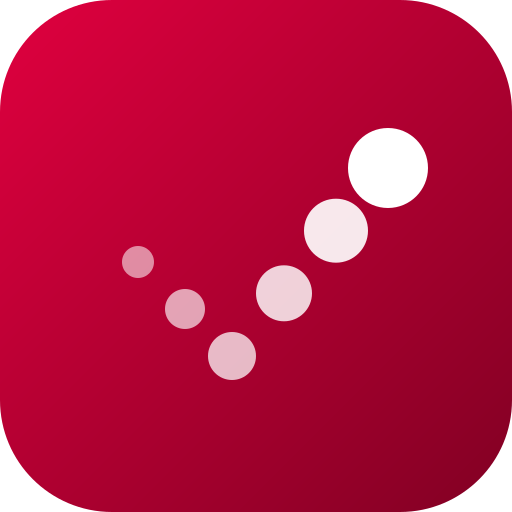

<!doctype html>
<html lang="ca" data-mode="fitxes">
<head>
<meta charset="utf-8">
<meta name="viewport" content="width=device-width, initial-scale=1">
<meta name="robots" content="noindex, nofollow">
<title>Xino-Xano · Fitxes per imprimir</title>
<meta name="claude:viewport-fit-sides" content="cover">
<link rel="icon" type="image/svg+xml" href="assets/icona-petita.svg">
<link rel="manifest" href="manifest.webmanifest">
<meta name="theme-color" content="#810023">
<link rel="apple-touch-icon" href="assets/icona-192.png">
<link rel="stylesheet" href="assets/fonts/fonts.css">
<style>
/* Concepte: un quadern de quadrícula (clar) que de nit es torna pissarra (fosc).
   Barra superior fixa + una sola columna de treball. Alumnes: botons grans i poca lletra. */
:root{
  /* Identitat Vedruna Escorial Vic: vermell #E0003F i granat #810023 del logo, negre del text.
     Fira Sans per a la interfície (propera a la lletra del logo); Andika als exercicis, pensada per a lectors que comencen. */
  --brand:#E0003F; --brand2:#810023; --brand-soft:#fde8ee;
  --paper:#f7f4f5; --grid:rgba(129,0,35,.045); --card:#ffffff; --ink:#1c1619; --soft:#6a5d62; --line:#e6dde0;
  --blue:#810023; --blue-ink:#ffffff; --hi:#E0003F; --hi-ink:#ffffff;
  --ok:#17844f; --ok-bg:#e1f5ea; --warn:#b85410; --warn-bg:#fdefe3; --bad:#b3261e; --bad-bg:#fbe6e4;
  --cat:#E0003F; --mat:#2a55c9; --chip:#f3edef; --shadow:0 3px 0 rgba(129,0,35,.10);
  --f-display:'Fira Sans','Segoe UI',system-ui,sans-serif;
  --f-body:'Fira Sans','Segoe UI',system-ui,sans-serif;
  --f-read:'Andika','Trebuchet MS',system-ui,sans-serif;
  --f-num:ui-monospace,'SFMono-Regular',Menlo,Consolas,monospace;
  color-scheme:light;
}
.logo-d{display:none}

*{box-sizing:border-box}
html,body{min-height:100%}
body{background-color:var(--paper);color:var(--ink);font-family:var(--f-body);font-size:16px;line-height:1.45;
  background-image:linear-gradient(var(--grid) 1px,transparent 1px),linear-gradient(90deg,var(--grid) 1px,transparent 1px);
  background-size:22px 22px;}
body::before{content:"";position:fixed;inset:0 0 auto;height:env(safe-area-inset-top,0px);z-index:10;background:var(--card)}
h1,h2,h3{font-family:var(--f-display);text-wrap:balance;margin:0;line-height:1.15}
h1{font-size:1.9rem;font-weight:700} h2{font-size:1.45rem;font-weight:700} h3{font-size:1.1rem;font-weight:600}
p{margin:0}
button,input,select,textarea{font:inherit;color:inherit}
:focus-visible{outline:3px solid var(--blue);outline-offset:2px}
.num{font-family:var(--f-num);font-variant-numeric:tabular-nums}

/* barra superior */
.top{position:sticky;top:env(safe-area-inset-top,0px);z-index:5;background:var(--card);border-bottom:2px solid var(--line)}
.top-in{max-width:1080px;margin:0 auto;display:flex;flex-wrap:wrap;align-items:center;gap:10px 16px;
  padding-block:10px;padding-left:max(16px,env(safe-area-inset-left,0px));padding-right:max(16px,env(safe-area-inset-right,0px))}
.brand{display:flex;align-items:center;gap:12px;font-family:var(--f-display);font-weight:700;font-size:1.2rem}
.brand img{height:34px;width:auto}
.brand .app{padding-left:12px;border-left:2px solid var(--line);color:var(--brand2);display:flex;align-items:center;gap:8px}
.brand .app .appicon{height:30px;width:30px}
.tick{display:inline-block;vertical-align:-4px}
.brand .dot{width:28px;height:28px;border-radius:50%;background:var(--hi);display:grid;place-items:center;color:var(--hi-ink);font-size:.95rem}
.proto{font-size:.72rem;letter-spacing:.08em;text-transform:uppercase;color:var(--soft);font-weight:700}
.seg{display:flex;background:var(--chip);border-radius:999px;padding:3px;gap:2px}
.seg button{border:0;background:transparent;border-radius:999px;padding:6px 14px;cursor:pointer;font-weight:700;color:var(--soft)}
.seg button[aria-pressed="true"]{background:var(--card);color:var(--ink);box-shadow:var(--shadow)}
.spacer{flex:1}

main{max-width:1080px;margin:0 auto;padding-block:22px 60px;padding-left:max(16px,env(safe-area-inset-left,0px));padding-right:max(16px,env(safe-area-inset-right,0px))}
.stack{display:flex;flex-direction:column;gap:18px}
.row{display:flex;flex-wrap:wrap;gap:12px;align-items:center}
.muted{color:var(--soft)}
.small{font-size:.85rem}
.note{font-size:.82rem;color:var(--soft);border-left:3px solid var(--hi);padding:4px 0 4px 10px}

.btn{border:0;border-radius:14px;padding:10px 18px;font-weight:700;cursor:pointer;background:var(--blue);color:var(--blue-ink);box-shadow:var(--shadow);display:inline-flex;align-items:center;gap:8px;text-decoration:none}
.btn:hover{filter:brightness(1.06)}
.btn:disabled{opacity:.45;cursor:not-allowed}
.btn.ghost{background:var(--chip);color:var(--ink);box-shadow:none}
.btn.hi{background:var(--hi);color:var(--hi-ink)}
.btn.danger{background:var(--bad-bg);color:var(--bad);box-shadow:none}
.btn.big{font-size:1.25rem;padding:14px 26px;border-radius:18px}
.link{background:none;border:0;color:var(--blue);cursor:pointer;font-weight:700;padding:0;text-decoration:underline}

.card{background:var(--card);border:2px solid var(--line);border-radius:18px;padding:18px}
.grid{display:grid;gap:14px}
.g2{grid-template-columns:repeat(auto-fit,minmax(260px,1fr))}
.g3{grid-template-columns:repeat(auto-fit,minmax(200px,1fr))}
.g4{grid-template-columns:repeat(auto-fit,minmax(150px,1fr))}

.chip{display:inline-flex;align-items:center;gap:6px;padding:3px 10px;border-radius:999px;background:var(--chip);font-size:.8rem;font-weight:700;white-space:nowrap}
.chip.ok{background:var(--ok-bg);color:var(--ok)}
.chip.warn{background:var(--warn-bg);color:var(--warn)}
.chip.bad{background:var(--bad-bg);color:var(--bad)}
.chip.cat{color:var(--cat)} .chip.mat{color:var(--mat)}
.kpi{display:flex;flex-direction:column;gap:4px}
.kpi b{font-family:var(--f-display);font-size:2rem;line-height:1}
.kpi span{font-size:.82rem;color:var(--soft)}

/* taules */
.tw{overflow-x:auto;border:2px solid var(--line);border-radius:16px;background:var(--card)}
table{border-collapse:collapse;width:100%;min-width:640px}
th,td{text-align:left;padding:10px 12px;border-bottom:1px solid var(--line);vertical-align:middle}
th{font-size:.75rem;letter-spacing:.06em;text-transform:uppercase;color:var(--soft);font-weight:700}
tr:last-child td{border-bottom:0}
tr.click{cursor:pointer} tr.click:hover td{background:var(--chip)}
.spark{display:flex;align-items:flex-end;gap:2px;height:24px}
.spark i{display:block;width:7px;border-radius:2px;background:var(--blue);min-height:2px}
.spark i.z{background:var(--line)}

/* barres */
.bar{height:12px;background:var(--chip);border-radius:999px;overflow:hidden}
.bar i{display:block;height:100%;border-radius:999px;background:var(--blue)}
.bar.bad i{background:var(--bad)} .bar.warn i{background:var(--warn)} .bar.ok i{background:var(--ok)}

/* tabs docent */
.tabs{display:flex;flex-wrap:wrap;gap:6px;border-bottom:2px solid var(--line);padding-bottom:0}
.tabs button{border:0;background:none;padding:10px 14px;font-weight:700;color:var(--soft);cursor:pointer;border-bottom:3px solid transparent;margin-bottom:-2px}
.tabs button[aria-selected="true"]{color:var(--ink);border-bottom-color:var(--blue)}

label.f{display:flex;flex-direction:column;gap:6px;font-weight:700;font-size:.9rem}
input[type=text],input[type=date],input[type=number],select,textarea{border:2px solid var(--line);border-radius:12px;padding:9px 12px;background:var(--card);min-width:0}
textarea{width:100%;min-height:170px;font-family:var(--f-num);font-size:.9rem;line-height:1.5}
.checks{display:flex;flex-wrap:wrap;gap:8px}
.checks label{display:inline-flex;gap:6px;align-items:center;background:var(--chip);padding:6px 10px;border-radius:10px;cursor:pointer;font-size:.9rem}
.stepper{display:inline-flex;align-items:center;gap:4px}
.stepper button{width:32px;height:32px;border-radius:10px;border:0;background:var(--chip);font-weight:700;cursor:pointer}
.stepper b{min-width:24px;text-align:center}
.skrow{display:flex;justify-content:space-between;align-items:center;gap:10px;padding:8px 0;border-bottom:1px dashed var(--line)}
.skrow:last-child{border-bottom:0}

/* alumnes: entrada */
.classes{display:grid;gap:14px;grid-template-columns:repeat(auto-fit,minmax(140px,1fr))}
.classbtn{border:0;border-radius:22px;padding:22px 10px;font-family:var(--f-display);font-size:1.8rem;font-weight:700;cursor:pointer;color:#1c1619;box-shadow:var(--shadow)}
.names{display:grid;gap:12px;grid-template-columns:repeat(auto-fit,minmax(130px,1fr))}
.namebtn{border:2px solid var(--line);background:var(--card);border-radius:20px;padding:10px;cursor:pointer;display:flex;flex-direction:column;align-items:center;gap:4px;font-weight:700;font-size:1.05rem}

/* alumnes: inici */
.hero-st{display:flex;flex-wrap:wrap;gap:20px;align-items:center}
.hero-st .who{flex:1;min-width:220px;display:flex;flex-direction:column;gap:8px}
.xp{display:flex;align-items:center;gap:10px}
.xp .bar{flex:1;height:14px}
.xp .bar i{background:linear-gradient(90deg,var(--brand),var(--brand2))}
.coins{display:inline-flex;align-items:center;gap:6px;font-weight:700;font-family:var(--f-display);font-size:1.2rem}
.coin{width:22px;height:22px;border-radius:50%;background:#f2c230;border:3px solid #d29b0c;display:inline-block}
.tiles{display:grid;gap:14px;grid-template-columns:repeat(auto-fit,minmax(170px,1fr))}
.tile{border:0;border-radius:22px;padding:18px;text-align:left;cursor:pointer;background:var(--card);border:2px solid var(--line);box-shadow:var(--shadow);display:flex;flex-direction:column;gap:6px;min-height:130px}
.tile:disabled{opacity:.6;cursor:default}
.tile .chip{align-self:flex-start}
.tile .ic{font-size:2rem;line-height:1;height:54px}
.tile .ic svg{display:block}
.tile:disabled .ic{filter:grayscale(1);opacity:.6}
.tile b{font-family:var(--f-display);font-size:1.3rem}
.tile .badge{align-self:flex-start;background:var(--hi);color:var(--hi-ink);border-radius:999px;padding:2px 10px;font-weight:700}
.tasklist{display:flex;flex-direction:column;gap:10px}
.taskitem{display:flex;gap:14px;align-items:center;flex-wrap:wrap;background:var(--card);border:2px solid var(--line);border-radius:18px;padding:14px 16px}
.taskitem .t{flex:1;min-width:180px}
.stars{color:#e0a400;letter-spacing:2px;font-size:1.2rem}

/* exercici */
.play{max-width:760px;margin:0 auto;display:flex;flex-direction:column;gap:16px}
.play-top{display:flex;gap:12px;align-items:center}
.pbar{flex:1;height:16px;background:var(--chip);border-radius:999px;overflow:hidden}
.pbar i{display:block;height:100%;background:var(--ok);border-radius:999px;transition:width .3s}
.ex,.ex h2,.opt,.tok,.ans-in,.namebtn{font-family:var(--f-read)}
.ex{background:var(--card);border:2px solid var(--line);border-radius:26px;padding:22px;display:flex;flex-direction:column;gap:18px;box-shadow:var(--shadow)}
.ex.mat-cat{border-top:8px solid var(--cat)} .ex.mat-mat{border-top:8px solid var(--mat)}
.ex.pal .prompt h2,.ex.pal .opt,.ex.pal .tok,.ex.pal .visual .word,.ex.pal .ans-in,.ex.pal .readtext{text-transform:uppercase}
.prompt{display:flex;gap:12px;align-items:flex-start}
.prompt h2{font-size:1.6rem;padding-top:6px}
.spk{flex:none;width:54px;height:54px;border-radius:50%;border:0;background:var(--hi);color:var(--hi-ink);cursor:pointer;display:grid;place-items:center;box-shadow:var(--shadow)}
.spk svg{width:28px;height:28px}
.visual{display:flex;justify-content:center;flex-wrap:wrap;gap:10px}
.emojis{display:flex;flex-wrap:wrap;justify-content:center;gap:8px;font-size:2.4rem;max-width:520px}
.bigemoji{font-size:4.5rem;line-height:1}
.word{font-family:var(--f-read);font-size:2.6rem;font-weight:700;letter-spacing:.04em}
.word .gap{display:inline-block;min-width:1.3em;border-bottom:5px solid var(--brand);margin:0 3px;text-align:center;color:var(--brand)}
.colop{font-family:var(--f-num);font-size:2.2rem;font-weight:700;display:inline-block;padding:10px 16px;border-radius:14px;background:var(--chip)}
.colg{border-collapse:collapse;margin:0 auto;width:auto;min-width:0;table-layout:fixed}
.colg td{width:1.05em;min-width:1.05em;max-width:1.05em;height:1.3em;text-align:center;vertical-align:middle;padding:0;line-height:1;white-space:nowrap}
.colg td{border:none}
.colg td.cm{width:.4em;min-width:.4em;max-width:.4em}
.colg td.op{width:1em;text-align:center}
.colg tr.l2 td:not(.op){border-bottom:4px solid var(--ink)}
.colg tr.cr,.colg tr.ans{display:none}
.series{display:flex;flex-wrap:wrap;gap:8px;justify-content:center}
.series span{min-width:64px;padding:10px;border-radius:14px;background:var(--chip);font-family:var(--f-num);font-size:1.7rem;font-weight:700;text-align:center}
.series span.q{background:var(--hi);color:var(--hi-ink)}
.readtext{background:var(--chip);border-radius:16px;padding:16px 18px;font-size:1.2rem;line-height:1.6;max-width:62ch}
.rapidclock{width:96px;height:96px;border-radius:50%;border:6px solid var(--brand);display:grid;place-items:center;font-family:var(--f-display);font-weight:700;font-size:2rem;color:var(--brand2)}
.rapidclock.small{width:56px;height:56px;border-width:4px;font-size:1.2rem}
.stickbtn{border:2px solid var(--line);background:var(--card);border-radius:14px;padding:4px;cursor:pointer;line-height:0}.stickbtn[aria-pressed="true"]{border-color:var(--brand);background:var(--brand-soft)}
.festatile{flex-direction:row;align-items:center;gap:16px;min-height:0;border-color:#f0b98f;background:linear-gradient(120deg,#fff7ef,#fdeee2)}.festatile b{font-size:1.4rem}
.howto{display:flex;flex-direction:column;gap:4px;padding:12px 14px;border-radius:14px;background:var(--brand-soft);border-left:4px solid var(--brand)}
.listen{display:flex;flex-direction:column;align-items:center;gap:8px;padding:18px;border-radius:18px;background:var(--chip);width:100%}
.clock{width:200px;height:200px;max-width:100%}
.opts{display:grid;gap:12px;grid-template-columns:repeat(auto-fit,minmax(150px,1fr))}
.opt{border:3px solid var(--line);background:var(--card);border-radius:18px;padding:16px;font-size:1.5rem;font-weight:700;cursor:pointer;min-height:72px;box-shadow:var(--shadow)}
.opt:hover:not(:disabled){border-color:var(--blue)}
.opt.ok{background:var(--ok-bg);border-color:var(--ok);color:var(--ok)}
.opt.bad{background:var(--warn-bg);border-color:var(--warn);color:var(--warn)}
.opt:disabled{cursor:default}
.ansrow{display:flex;gap:12px;flex-wrap:wrap;justify-content:center}
.ans-in{font-size:2rem;padding:12px 16px;border-radius:16px;border:3px solid var(--line);width:min(100%,320px);text-align:center;background:var(--card);font-weight:700}
.ans-in.ok{border-color:var(--ok);background:var(--ok-bg)} .ans-in.bad{border-color:var(--warn);background:var(--warn-bg)}
.match{display:grid;grid-template-columns:1fr 1fr;gap:12px 22px}
.match .col{display:flex;flex-direction:column;gap:10px}
.tok{border:3px solid var(--line);background:var(--card);border-radius:16px;padding:12px;font-size:1.35rem;font-weight:700;cursor:pointer;min-height:58px;box-shadow:var(--shadow)}
.tok .hl{color:var(--brand);text-decoration:underline;text-decoration-thickness:3px;text-underline-offset:4px;font-weight:700}
.tok.sel{border-color:var(--blue);background:var(--chip)}
.tok.bad{border-color:var(--warn);background:var(--warn-bg)}
.tok.ok{border-color:var(--ok);background:var(--ok-bg)}
.tok[data-p]{border-style:solid}
.p0{border-color:#4f7cff!important}.p1{border-color:#f08a24!important}.p2{border-color:#9b6bff!important}.p3{border-color:#e0457f!important}.p4{border-color:#18a37a!important}.p5{border-color:#c99a10!important}
.tok .pn{display:inline-grid;place-items:center;width:24px;height:24px;border-radius:50%;background:var(--chip);font-size:.8rem;margin-right:6px}
.pool,.slots{display:flex;flex-wrap:wrap;gap:10px;justify-content:center;min-height:70px;padding:12px;border-radius:18px}
.slots{border:3px dashed var(--line);background:var(--paper)}
.slots.over,.bucket.over{border-color:var(--blue)}
.buckets{display:grid;gap:12px;grid-template-columns:repeat(auto-fit,minmax(160px,1fr))}
.bucket{border:3px dashed var(--line);border-radius:18px;padding:10px;min-height:130px;display:flex;flex-direction:column;gap:8px;cursor:pointer;background:var(--paper)}
.bucket h3{text-align:center;font-size:1.25rem}
.bucket .in{display:flex;flex-wrap:wrap;gap:8px;justify-content:center}
.fb{display:flex;align-items:center;gap:16px;flex-wrap:wrap;border-radius:22px;padding:14px 18px;border:3px solid}
.fb.ok{background:var(--ok-bg);border-color:var(--ok)}
.fb.retry{background:var(--warn-bg);border-color:var(--warn)}
.fb.reveal{background:var(--chip);border-color:var(--line)}
.fb .msg{flex:1;min-width:200px;display:flex;flex-direction:column;gap:4px}
.fb .msg b{font-family:var(--f-display);font-size:1.4rem}
.play.dis .ex,.play.dis .ex h2,.play.dis .opt,.play.dis .tok,.play.dis .ans-in,.play.dis .word,.play.dis .readtext{font-family:'Lexend',var(--f-read);letter-spacing:.04em;word-spacing:.14em}
.play.dis .readtext{line-height:1.9;max-width:52ch}
.play.gran .prompt h2{font-size:2rem}.play.gran .opt{font-size:1.9rem}.play.gran .tok{font-size:1.6rem}

/* mascota */
.mascot{display:block;flex:none}
.shop{display:grid;gap:10px;grid-template-columns:repeat(auto-fit,minmax(130px,1fr))}
.shop button{border:2px solid var(--line);background:var(--card);border-radius:16px;padding:10px;cursor:pointer;display:flex;flex-direction:column;gap:2px;align-items:center;font-weight:700}
.shop button[aria-pressed="true"]{border-color:var(--blue);background:var(--chip)}
.swatches{display:flex;gap:10px;flex-wrap:wrap}
.pcats{display:flex;gap:6px;flex-wrap:wrap}
.pcats button{border:2px solid var(--line);background:var(--card);border-radius:999px;padding:6px 14px;font-weight:700;cursor:pointer;font-size:.95rem}
.pcats button[aria-pressed="true"]{border-color:var(--brand);background:var(--brand);color:#fff}
.pitems{display:grid;gap:10px;grid-template-columns:repeat(auto-fill,minmax(112px,1fr))}
.pitem{border:2px solid var(--line);background:var(--card);border-radius:16px;padding:8px 6px;cursor:pointer;display:flex;flex-direction:column;gap:2px;align-items:center;font-weight:700;font-size:.92rem;text-align:center;line-height:1.2}
.pitem[aria-pressed="true"]{border-color:var(--brand);background:var(--chip)}
.pitem.lock{opacity:.55}
.pitem .small{font-weight:400}
.evobar{height:14px}
.album{display:grid;gap:10px;grid-template-columns:repeat(auto-fill,minmax(104px,1fr))}
.album .ev{border:2px solid var(--line);border-radius:16px;padding:6px;text-align:center;font-size:.85rem;font-weight:700;background:var(--card)}
.album .ev.now{border-color:var(--brand);background:var(--chip)}
.album .ev .sil{filter:brightness(0);opacity:.16}
.evo-ov{position:fixed;inset:0;background:rgba(20,24,40,.55);display:grid;place-items:center;z-index:60;padding:16px;overflow:auto}
.evo-card{max-width:540px;width:100%;text-align:center;align-items:center;gap:10px}
.evo-row{justify-content:center;align-items:center;gap:6px;flex-wrap:nowrap}
.evo-new{border-radius:50%;background:radial-gradient(circle,#fff6c4 0%,#ffe08a 45%,rgba(255,224,138,0) 70%)}
.evo-old{opacity:.8}
.swatch{width:44px;height:44px;border-radius:50%;border:4px solid var(--card);box-shadow:0 0 0 2px var(--line);cursor:pointer}
.swatch[aria-pressed="true"]{box-shadow:0 0 0 3px var(--blue)}

.grtile{flex-direction:row;align-items:center;gap:16px;min-height:0;background:linear-gradient(120deg,var(--brand),var(--brand2));color:#fff;border-color:transparent}
.grtile .ic{font-size:2.6rem}.grtile b{font-size:1.5rem}.grtile .badge{align-self:center;background:#fff;color:var(--brand2)}
.map{position:relative;width:100%;max-width:820px;margin:0 auto;aspect-ratio:600/420;border-radius:24px;overflow:hidden;border:2px solid var(--line)}
.map > svg{position:absolute;inset:0;width:100%;height:100%}
.map .mapname{background:rgba(255,255,255,.85);padding:4px 12px;border-radius:999px}
.map .mapname{position:absolute;left:14px;bottom:10px;font-weight:700;font-size:clamp(.9rem,2.4vw,1.3rem)}
.node{position:absolute;transform:translate(-50%,-50%);width:clamp(40px,8vw,58px);height:clamp(40px,8vw,58px);border-radius:50%;border:3px solid #fff;background:#fff;color:var(--wc);font-weight:700;font-size:clamp(.8rem,2vw,1.1rem);cursor:pointer;box-shadow:0 0 0 3px var(--wc),0 5px 0 3px rgba(0,0,0,.18);display:grid;place-items:center;padding:0;line-height:1}
.node.done{background:var(--wc);color:#fff;font-size:clamp(.55rem,1.4vw,.8rem);letter-spacing:-1px}
.node svg{display:block}.node.boss svg{width:78%;height:78%}
.node.boss{width:clamp(56px,12vw,86px);height:clamp(56px,12vw,86px);font-size:clamp(1.6rem,4vw,2.6rem);border-width:4px}
.node.boss.locked{filter:grayscale(.85);opacity:.85}
.node.locked{background:#f1eef0;box-shadow:0 0 0 3px #cfc6ca,0 5px 0 3px rgba(0,0,0,.12);color:#9a8f94;font-size:clamp(.8rem,2vw,1rem)}
.node.here{width:clamp(52px,11vw,80px);height:clamp(52px,11vw,80px);background:#fff}.node.here svg{width:88%;height:88%}
.node.boss.here{}
.node.sel{outline:4px solid var(--wc);outline-offset:4px}
.me{position:absolute;transform:translate(-50%,calc(-100% - clamp(18px,4vw,30px)));pointer-events:none;width:clamp(40px,9vw,64px)}.me svg{width:100%;height:auto}
.toast{position:fixed;left:50%;bottom:calc(20px + env(safe-area-inset-bottom,0px));transform:translateX(-50%);background:var(--ink);color:var(--paper);padding:10px 18px;border-radius:14px;font-weight:700;z-index:20;max-width:calc(100% - 32px)}
.errbar{display:grid;grid-template-columns:minmax(120px,220px) 1fr auto;gap:12px;align-items:center;padding:10px 0;border-bottom:1px dashed var(--line)}
.errbar:last-child{border-bottom:0}
@media (max-width:560px){.errbar{grid-template-columns:1fr auto}.errbar .bar{grid-column:1/-1;order:3}.match{gap:10px}.prompt h2{font-size:1.3rem}.word{font-size:2rem}.opt{font-size:1.25rem}}
.slips{display:grid;gap:12px;grid-template-columns:repeat(auto-fill,minmax(300px,1fr))}
.slip{border:2px dashed #b9a7ae;border-radius:14px;padding:14px 16px;background:#fff;break-inside:avoid;page-break-inside:avoid}
.slip .codi{font-family:'Lexend',monospace;font-size:1.9rem;font-weight:600;letter-spacing:.18em;color:var(--brand2)}
.famcodi{font-family:'Lexend',monospace;font-size:2.2rem;font-weight:600;letter-spacing:.2em;color:var(--brand2)}
.psheet{background:#fff;color:#1b1b1b;border:1px solid var(--line);border-radius:12px;padding:26px 30px;margin-bottom:18px;font-family:var(--f-read)}
.psheet h2{font-family:var(--f-ui, inherit);font-size:1.35rem;margin:0}
.phead{display:flex;align-items:center;gap:14px;border-bottom:2px solid var(--brand);padding-bottom:10px;margin-bottom:14px}
.phead img{height:34px}
.pname{display:flex;gap:18px;margin:0 0 16px;font-size:1rem}
.pname span{flex:1;border-bottom:1.5px solid #555;padding-bottom:2px}
.pex{margin:0 0 18px}
.pcg{display:flex;gap:6px;align-items:flex-start;margin:0 0 14px;padding-bottom:10px;border-bottom:1px solid #ddd;break-inside:avoid;page-break-inside:avoid}
.pcg:last-of-type{border-bottom:none}
.pcg-n{font-size:1.1rem;min-width:1.6em;line-height:1.3}
.pcg img{min-width:0;height:auto;background:#fff}
.pcg-intro{margin:4px 0 14px}
.pcg-credit{font-size:.8rem;color:#666;margin-top:10px}
.pex>b{break-after:avoid;page-break-after:avoid}
.ptable,.pbankw{break-inside:avoid;page-break-inside:avoid}
.pex .readtext{orphans:3;widows:3}
.pkeep:has(> b:only-child){break-after:avoid;page-break-after:avoid}
.pex > b,.pkeep > b{display:block;font-size:1.08rem;margin-bottom:6px}
.pex .readtext{font-size:1rem;margin:6px 0;background:#fafafa}
.pex .word,.pex .bigemoji{font-size:1.8rem}
.pline{border-bottom:1.5px solid #444;height:30px;margin-top:4px}
.popts{display:grid;grid-template-columns:repeat(auto-fit,minmax(200px,1fr));gap:6px 18px;margin-top:4px}
.popts span::before{content:'';display:inline-block;width:14px;height:14px;border:1.6px solid #333;border-radius:3px;margin-right:8px;vertical-align:-2px}
.pcols{display:grid;grid-template-columns:1fr 1fr;gap:6px 30px;margin-top:4px}
.ppieces{display:flex;flex-wrap:wrap;gap:8px;margin:4px 0 6px}
.ppieces span,.pbank span{border:1.5px solid #555;border-radius:8px;padding:3px 10px}
.pbank{display:flex;flex-wrap:wrap;gap:8px;margin:4px 0 8px}
.ptable{width:100%;min-width:0;border-collapse:collapse;table-layout:fixed}.ptable th,.ptable td,.ptable tr:last-child td{border:1.5px solid #555;padding:6px;text-align:center}.ptable td{height:80px}.ptable th{font-size:1rem;letter-spacing:0;text-transform:none;color:#1b1b1b}
.psol ol{margin:0 0 0 20px;line-height:1.6}
.pmark{display:grid;grid-template-columns:auto 1fr auto;gap:10px;align-items:center;padding:8px 0;border-bottom:1px solid var(--line)}
.pmark .tog{display:flex;gap:6px}.pmark .tog button{min-width:52px;border:2px solid var(--line);background:var(--card);border-radius:12px;padding:6px 10px;font-weight:700;cursor:pointer}
.pmark .tog button[aria-pressed="true"].si{border-color:var(--ok, #2f9e5b);background:#e3f6ea;color:#1e7a43}
.pmark .tog button[aria-pressed="true"].no{border-color:var(--warn);background:var(--warn-bg)}
.pgrid{display:grid;grid-template-columns:repeat(var(--c,2),minmax(0,1fr));gap:14px 22px;margin-top:6px}
.pit{break-inside:avoid;page-break-inside:avoid}
.pkeep{break-inside:avoid;page-break-inside:avoid}
.dedit{border:none;border-radius:16px;padding:22px 24px;max-width:520px;width:calc(100% - 32px)}.dedit::backdrop{background:rgba(0,0,0,.4)}.dedit ol{margin:10px 0 10px 20px;line-height:1.55}
.fsum{display:flex;align-items:center;gap:12px;flex-wrap:nowrap}.fsum p{flex:1;margin:0;min-width:0}.fcount{white-space:nowrap;font-size:.95rem}.fcount b{display:inline-block;min-width:2ch;text-align:right}.fsum .link{white-space:nowrap}.fsum .link:disabled{opacity:.4;cursor:default}
.pgrid > .pit:not(.row){display:flex;flex-direction:column}
.pgrid > .pit:not(.row) > .pline:last-child,.pgrid > .pit:not(.row) > .row:last-child{margin-top:auto}
.pit .series{flex-wrap:wrap!important;justify-content:flex-start!important}
.pwork{border:1.5px dashed #999;border-radius:8px;height:130px;margin:8px 0 4px;position:relative}
.pwork span{position:absolute;top:4px;left:8px;font-size:.85rem;color:#555}
.prel{width:100%;min-width:0;border-collapse:collapse;margin-top:4px;table-layout:fixed}.prel td{padding:7px 3px;vertical-align:middle;border:none!important;font-size:1rem;line-height:1.3}.prel td.n{font-weight:700;white-space:nowrap;color:#555}.prel td.dt{font-size:.8rem;text-align:center;padding:0}.prel td.tl{text-align:right;padding-right:6px}.prel td.nw{white-space:nowrap}.nw{white-space:nowrap}.prelg{column-gap:44px}.prel td.tr{padding-left:6px}
.ptable,.ptable tr,.ptable td{break-inside:avoid;page-break-inside:avoid}
.plist{margin:6px 0 8px;padding:0;line-height:1.45;list-style:none;display:flex;flex-wrap:wrap;gap:4px 26px;counter-reset:pl}
.plist li{counter-increment:pl;padding-left:1.4em;text-indent:-1.4em}
.plist.cols2{display:grid;grid-template-columns:1fr 1fr;gap:4px 26px}
.plist li::before{content:counter(pl) '. ';font-weight:700;color:#555}
.pchips{display:flex;flex-wrap:wrap;gap:6px 18px}
.pnum{gap:10px 12px}.pnum .pn{display:inline-flex;flex-direction:column;align-items:center;gap:6px;border:none;padding:0}.pnum .pn > span{border:1.5px solid #555;border-radius:8px;padding:3px 10px}.pnum .pn > i{display:block;width:30px;height:30px;border:1.5px solid #222;border-radius:4px}
.frac{display:inline-flex;flex-direction:column;align-items:center;vertical-align:middle;line-height:1.05;font-size:.82em;margin:0 .1em}.frac > span:first-child{border-bottom:1.6px solid currentColor;padding:0 .12em}
.si{display:inline;margin-right:14px}
.pchips > span{white-space:nowrap}
.pit .lt{font-weight:700;margin-right:6px}
.pw{font-family:var(--f-read);font-size:1.45rem;letter-spacing:.03em;white-space:nowrap}
.pgap{display:inline-block;width:2.4em;border-bottom:2px solid #222;margin:0 2px;height:1.1em;vertical-align:baseline}
.pcirc{display:flex;flex-wrap:wrap;gap:6px 34px;margin:6px 0 0 14px;font-size:1.05rem}
.pcirc.col{display:grid;grid-template-columns:1fr 1fr;gap:6px 26px}
.pcirc.col1{grid-template-columns:1fr}
.pgrid:not([style*="--c:1"]):not([style*="--c: 1"]) .pcirc.col{grid-template-columns:1fr}
.pcirc .ol{display:inline-block;min-width:1.5em;font-weight:700;color:var(--brand2)}
.pbankw{border:2px dashed #999;border-radius:10px;padding:6px 12px;margin:6px 0 4px;font-size:1.05rem}
.pbankw > b{margin-right:6px}
.pit .word,.pit .bigemoji{font-size:1.5rem;margin:2px 0}
.pit .word.num{white-space:nowrap}
.pit svg{max-height:120px;width:auto}
.pit svg.chart{max-height:250px;width:auto;max-width:100%}
.pit svg.shape{max-height:210px;width:auto;max-width:100%}
.pit svg.shape.grid,.pit svg.shape.fix{max-height:none}
.pit .row:has(> svg){justify-content:flex-start!important;flex-wrap:nowrap}
.pit svg.chart{max-height:330px}
.pline.short{max-width:min(230px,100%)}
.pit .row > .pline{min-width:0}
.pit .series span{background:#fff;border:1.5px solid #bbb;font-size:1.3rem;min-width:44px;padding:6px}
.pit .series span.q{background:#fff;border:2px solid #222;color:transparent}
.pgap.wide{width:3.2em}
.pit .colop{background:#fff;padding:0;font-size:1.45rem;border-radius:0}
.pit .colg tr.cr,.pit .colg tr.ans{display:table-row}
.pit .colg td:not(.op){border:1px solid #c9c2c5}
.pit .colg td.cm{border-left:none;border-right:none}
.pit .colg tr.cr td{height:.85em;font-size:.6em}
.pit .colg tr.cr td{border:none!important}
.pit .colg tr.l2 td:not(.op){border-bottom:2.5px solid #111}
.pit .colg tr.ans td{height:1.45em}
.pq{margin-bottom:2px}
.psol .gr{margin-bottom:6px}
.padult{border:2px dashed #999;border-radius:10px;padding:10px 14px;margin:8px 0}
@page{size:A4;margin:0}
@media print{.fitxes,.fitxes > section:not(.noprint){display:block!important}.pex.pkeep{break-inside:avoid!important;page-break-inside:avoid!important}main,body,html{padding-bottom:0!important;margin-bottom:0!important}.psheet:last-of-type{page-break-after:auto!important;break-after:auto!important}header.top,#top,.tabs,.noprint,.toast,body::before{display:none!important}.pex{break-inside:auto!important;page-break-inside:auto!important}.pex>b{break-after:avoid;page-break-after:avoid}.psheet{border:none;border-radius:0;padding:12mm 13mm;margin:0;page-break-after:always;break-after:page;box-decoration-break:clone;-webkit-box-decoration-break:clone}.psheet:last-child{page-break-after:auto}body,#app{background:#fff!important}.slips{grid-template-columns:1fr 1fr}.slip{border-color:#888}}
@media (prefers-reduced-motion:reduce){*{transition:none!important;animation:none!important}}
@keyframes pop{0%{transform:scale(.9)}60%{transform:scale(1.06)}100%{transform:scale(1)}}
.pop{animation:pop .35s ease-out}
</style>

<header class="top"><div class="top-in" id="top"></div></header>
<main id="app"></main>
<div class="toast" id="toast" hidden></div>

<script src="data/banc.js"></script>
<script src="data/cangur.js"></script>
<script src="personatge.js"></script>
<script>
'use strict';
/* ============ utilitats ============ */
const $ = s => document.querySelector(s);
const esc = s => String(s ?? '').replace(/[&<>"']/g, c => ({'&':'&amp;','<':'&lt;','>':'&gt;','"':'&quot;',"'":'&#39;'}[c]));
const DAY = 864e5;
const now = () => Date.now();
function mulberry(seed){ let a = seed >>> 0; return () => { a |= 0; a = a + 0x6D2B79F5 | 0; let t = Math.imul(a ^ a >>> 15, 1 | a); t = t + Math.imul(t ^ t >>> 7, 61 | t) ^ t; return ((t ^ t >>> 14) >>> 0) / 4294967296; }; }
function hashStr(s){ let h = 2166136261; for (const ch of String(s)) { h ^= ch.charCodeAt(0); h = Math.imul(h, 16777619); } return h >>> 0; }
const ri = (r,a,b) => a + Math.floor(r() * (b - a + 1));
const pick = (r,a) => a[Math.floor(r() * a.length)];
function shuffle(r,a){ a = a.slice(); for (let i = a.length - 1; i > 0; i--) { const j = Math.floor(r() * (i + 1)); [a[i], a[j]] = [a[j], a[i]]; } return a; }
const sample = (r,a,n) => shuffle(r,a).slice(0,n);
function samplePairs(r, arr, n){ const out = [], L = new Set(), Rr = new Set(); for (const p of shuffle(r, arr)) { if (L.has(p[0]) || Rr.has(p[1])) continue; out.push(p); L.add(p[0]); Rr.add(p[1]); if (out.length === n) break; } return out; }
const uid = () => Math.random().toString(36).slice(2,9);
const fmtD = v => { const x = Math.round(v * 100) / 100; return String(x).replace('.', ','); };
const fmtDate = ts => { const d = new Date(ts); return d.getDate() + '/' + (d.getMonth() + 1); };
const pct = (a,b) => b ? Math.round(a / b * 100) : 0;
const CURS = {1:'1r',2:'2n',3:'3r',4:'4t',5:'5è',6:'6è'};

/* ============ dades fixes ============ */
const CLASSES = [
  {id:'1A',curs:1,nom:'1r A',col:'#ffb07a'},{id:'2A',curs:2,nom:'2n A',col:'#c4ecd3'},{id:'2B',curs:2,nom:'2n B',col:'#8fdcae'},{id:'2C',curs:2,nom:'2n C',col:'#5fc58d'},{id:'3A',curs:3,nom:'3r A',col:'#a9c0ff'},
  {id:'4C',curs:4,nom:'4t C',col:'#c9b2ff'},{id:'5B',curs:5,nom:'5è B',col:'#ffb3d1'},{id:'6A',curs:6,nom:'6è A',col:'#f7d774'}];
const NAMES = {
  '1A':['Aina R.','Pau M.','Martina S.','Jan C.','Fatima B.','Biel P.','Ona G.'],
  '2A':['Gerard M.','Lia P.','Hamza B.','Rita C.','Bernat S.','Mar F.'],
  '2C':['Teo R.','Aleix V.','Sofia N.','Pol G.','Anna T.','Kiran D.'],
  '2B':['Laia V.','Nil T.','Júlia F.','Yassin A.','Èlia M.','Arnau B.','Noa P.'],
  '3A':['Carla D.','Pol R.','Abril S.','Roc V.','Mariona C.','Iker L.','Txell G.'],
  '4C':['Oriol P.','Clàudia M.','Max F.','Lucía R.','Joel B.','Emma S.','Mohamed K.'],
  '5B':['Berta C.','Guim T.','Paula A.','Àlex R.','Jana V.','Hugo M.','Sara L.'],
  '6A':['Marc G.','Irene P.','Nadia E.','Bruna S.','Dani F.','Alba C.','Quim R.']};
const XPLV = 120;
const level = xp => Math.floor(xp / XPLV) + 1;

const TICK = (w = 26) => `<svg class="tick" width="${w}" height="${w * .8}" viewBox="0 0 50 40" aria-hidden="true"><path d="M6 20 L19 33" stroke="var(--brand)" stroke-width="9" stroke-linecap="round" fill="none"/><path d="M19 33 L44 7" stroke="var(--brand2)" stroke-width="9" stroke-linecap="round" fill="none"/></svg>`;
const TILE = {
  tasques:`<svg width="54" height="54" viewBox="0 0 48 48" aria-hidden="true"><rect x="9" y="5" width="30" height="38" rx="5" fill="#810023"/><rect x="13" y="8" width="24" height="32" rx="3" fill="#fff"/>${[13,21,29].map(y=>`<path d="M17 ${y+2} l2.5 2.5 l4.5 -5" stroke="#E0003F" stroke-width="2.4" fill="none" stroke-linecap="round" stroke-linejoin="round"/><rect x="26" y="${y+1}" width="8" height="2.6" rx="1.3" fill="#e6dde0"/>`).join('')}${[12,20,28,36].map(y=>`<rect x="6" y="${y}" width="7" height="3" rx="1.5" fill="#E0003F"/>`).join('')}</svg>`,
  repas:`<svg width="54" height="54" viewBox="0 0 48 48" aria-hidden="true"><path d="M38 20 A15 15 0 0 0 11 15" stroke="#E0003F" stroke-width="5" fill="none" stroke-linecap="round"/><path d="M6 9 L10 18 L19 14Z" fill="#E0003F"/><path d="M10 28 A15 15 0 0 0 37 33" stroke="#810023" stroke-width="5" fill="none" stroke-linecap="round"/><path d="M42 39 L38 30 L29 34Z" fill="#810023"/><circle cx="24" cy="24" r="4" fill="#E0003F"/></svg>`,
  practica:`<svg width="54" height="54" viewBox="0 0 48 48" aria-hidden="true"><circle cx="24" cy="24" r="19" fill="#fde8ee" stroke="#810023" stroke-width="3"/>${[0,90,180,270].map(a=>`<rect x="23" y="7" width="2" height="5" rx="1" fill="#810023" transform="rotate(${a} 24 24)"/>`).join('')}<path d="M24 11 L29 24 L24 24Z" fill="#E0003F"/><path d="M24 11 L19 24 L24 24Z" fill="#ff6f93"/><path d="M24 37 L19 24 L24 24Z" fill="#810023"/><path d="M24 37 L29 24 L24 24Z" fill="#b0365a"/><circle cx="24" cy="24" r="2.6" fill="#fff" stroke="#810023" stroke-width="1.5"/></svg>`,
  vesteix:`<svg width="54" height="54" viewBox="0 0 48 48" aria-hidden="true"><path d="M24 6 C11 6 4 15 4 24 C4 34 12 42 22 42 C26 42 27 39 25 36 C23 33 25 30 29 30 H34 C40 30 44 26 44 21 C44 12 35 6 24 6Z" fill="#fde8ee" stroke="#810023" stroke-width="3"/><circle cx="15" cy="20" r="3.6" fill="#4f7cff"/><circle cx="23" cy="13" r="3.6" fill="#2fbf71"/><circle cx="33" cy="15" r="3.6" fill="#f2c230"/><circle cx="36" cy="23" r="3.6" fill="#E0003F"/><circle cx="13" cy="30" r="3.6" fill="#9b6bff"/></svg>`,
  rapid:`<svg width="54" height="54" viewBox="0 0 48 48" aria-hidden="true"><circle cx="24" cy="27" r="17" fill="#fde8ee" stroke="#810023" stroke-width="3"/><rect x="20" y="4" width="8" height="5" rx="2" fill="#810023"/><path d="M24 27 L24 15" stroke="#E0003F" stroke-width="3.5" stroke-linecap="round"/><path d="M24 27 L32 31" stroke="#810023" stroke-width="3" stroke-linecap="round"/><circle cx="24" cy="27" r="2.6" fill="#810023"/><path d="M38 9 l4 -4 M41 14 l5 -2" stroke="#E0003F" stroke-width="2.6" stroke-linecap="round"/></svg>`,
  gear:`<svg width="18" height="18" viewBox="0 0 24 24" aria-hidden="true" style="vertical-align:-3px"><path fill="currentColor" d="M10.3 2h3.4l.5 2.6 1.9.8 2.2-1.5 2.4 2.4-1.5 2.2.8 1.9 2.6.5v3.4l-2.6.5-.8 1.9 1.5 2.2-2.4 2.4-2.2-1.5-1.9.8-.5 2.6h-3.4l-.5-2.6-1.9-.8-2.2 1.5-2.4-2.4 1.5-2.2-.8-1.9L2 13.7v-3.4l2.6-.5.8-1.9-1.5-2.2 2.4-2.4 2.2 1.5 1.9-.8zM12 8.5a3.5 3.5 0 1 0 0 7 3.5 3.5 0 0 0 0-7z"/></svg>`,
  lock:(sz=16)=>`<svg width="${sz}" height="${sz}" viewBox="0 0 24 24" aria-hidden="true" style="vertical-align:-2px"><rect x="4" y="10" width="16" height="12" rx="3" fill="currentColor"/><path d="M8 10 V7 a4 4 0 0 1 8 0 V10" stroke="currentColor" stroke-width="2.6" fill="none"/></svg>`
};
const ICON = {
  spk:'<svg viewBox="0 0 24 24" fill="none" stroke="currentColor" stroke-width="2.2" stroke-linecap="round" stroke-linejoin="round" aria-hidden="true"><path d="M11 5 6 9H3v6h3l5 4V5z" fill="currentColor"/><path d="M15.5 8.5a5 5 0 0 1 0 7"/><path d="M18.5 5.5a9 9 0 0 1 0 13"/></svg>'
};

/* ============ banc de continguts ============ */
const SIL = [['ca','sa','🏠'],['po','ma','🍎'],['pi','lo','ta','⚽'],['pa','pa','llo','na','🦋'],['ca','ra','gol','🐌'],['bi','ci','cle','ta','🚲'],
  ['ta','ron','ja','🍊'],['ci','re','ra','🍒'],['pa','ta','ta','🥔'],['xo','co','la','ta','🍫'],['e','le','fant','🐘'],['co','co','dril','🐊'],
  ['ma','dui','xa','🍓'],['to','mà','quet','🍅'],['sa','ba','ta','👞'],['te','ra','nyi','na','🕸️'],['gi','ra','fa','🦒'],['tor','tu','ga','🐢'],['ca','mi','sa','👕']];
const IMG = [['🏠','casa'],['🍎','poma'],['⚽','pilota'],['🐱','gat'],['🌙','lluna'],['☀️','sol'],['🐟','peix'],['🌳','arbre'],['🚗','cotxe'],
  ['📚','llibre'],['🐘','elefant'],['🍓','maduixa'],['🦋','papallona'],['🐌','caragol'],['🐶','gos'],['🌸','flor']];
const RULES = {
  'c-cqu':{tag:'c / qu',opts:['c','qu'],w:['[c]asa','[c]otxe','[c]uc','[c]ullera','es[qu]irol','mos[qu]it','pa[qu]et','[qu]inze','ban[qu]et','va[c]a','va[qu]es','po[c]a','po[qu]es','bos[c]']},
  'c-ggu':{tag:'g / gu',opts:['g','gu'],w:['[g]at','[g]os','[g]oma','[g]ust','[gu]itarra','[gu]ineu','fi[gu]era','[gu]erra','ami[g]a','ami[gu]es','formi[g]a','formi[gu]es']},
  'c-rrr':{tag:'r / rr',opts:['r','rr'],w:['ca[rr]o','ca[r]a','pe[r]a','te[rr]a','ge[rr]o','to[rr]e','mo[r]a','fe[rr]o','ba[rr]et','co[r]ona','pa[r]et','ca[rr]er','pe[rr]uca','ce[r]a']},
  'c-bv':{tag:'b / v',opts:['b','v'],w:['[v]aca','[b]ota','[b]ossa','[v]aixell','a[v]ió','lli[b]re','ca[v]all','[b]alena','[v]ent','tre[b]all','go[v]ern','[b]eure','ar[b]re','no[v]embre','[v]ida','[b]ufanda']},
  'c-sss':{tag:'s / ss / ç / z',opts:['s','ss','ç','z'],w:['ca[s]a','ro[s]a','gro[ss]a','pa[ss]eig','mi[ss]atge','ma[ç]ana','pla[ç]a','for[ç]a','[z]oo','tre[s]or','ca[ç]ador','po[ss]ible','on[z]e']},
  'c-ll':{tag:'l / ll / l·l',opts:['l','ll','l·l'],w:['pe[l·l]ícula','co[l·l]egi','i[l·l]usió','cava[ll]','caste[ll]','ga[ll]ina','cu[ll]era','cè[l·l]ula','tranqui[l·l]a','a[l]a','sa[l]a','i[ll]a','exce[l·l]ent','ba[l]ena']}
};
const ACCENTS = [['cafè','cafe','café'],['sofà','sofa','sòfa'],['camió','camio','camiò'],['plàtan','platan','platàn'],['música','musica','musíca'],
  ['pàgina','pagina','pagína'],['cançó','canço','cancó'],['també','tambe','tambè'],['història','historia','história'],['matí','mati','matì'],['àvia','avia','ávia'],['pa','pà','pá']];
const DICTAT = {
  1:['sol','pa','mar','gat','lluna','casa','poma','pilota','mare','pare','nas','peu','cotxe','gos','flor'],
  2:['escola','cavall','guitarra','formiga','quinze','esquirol','girafa','ploma','carro','terra','llibre','finestra','paraigua','taronja','maduixa'],
  3:['bicicleta','vaixell','gerro','joguina','muntanya','hivern','primavera','dibuix','rellotge','pinzell','sabata','aniversari','tortuga','calaix'],
  4:['pel·lícula','col·legi','caçadora','plaça','vacances','cançó','música','pàgina','avió','història','meravellós','enciclopèdia'],
  5:['intel·ligent','paral·lel','exercici','atmosfera','península','metàl·lic','satèl·lit','proposta','correcció','biblioteca'],
  6:['investigació','circumstància','col·lecció','responsabilitat','perpendicular','il·lusió','assumpte','excel·lent','diccionari','hipòtesi']};
const FRASES_C = {2:[], 3:[], 4:[]}, COMP_T = {1:[],2:[],3:[],4:[],5:[],6:[]};
const FRASES = ['El gat dorm al sofà.','La Laia menja una poma.','Avui plou molt a Vic.','El meu germà juga a futbol.','Els ocells volen pel cel.',
  "Demà anirem d'excursió a la muntanya.",'La mestra explica un conte.','Al pati juguem a pilota.','La meva àvia fa unes galetes molt bones.'];
const GENERE = [['llibre',0],['taula',1],['cadira',1],['sol',0],['lluna',1],['arbre',0],['flor',1],['nas',0],['mà',1],['peu',0],['cara',1],['cotxe',0],['bicicleta',1],['gos',0],['ovella',1],['dent',1],['llet',1],['color',0]];
const PLURAL = [['gat','gats','gates','gatos'],['casa','cases','casas','casès'],['peix','peixos','peixs','peixes'],['llapis','llapis','llapisos','llapises'],
  ['mà','mans','màs','manes'],['nas','nassos','nasos','nasses'],['poma','pomes','pomas','pomès'],['braç','braços','braçs','braces'],['ou','ous','ouos','oues'],
  ['cançó','cançons','cançós','cançones'],['taula','taules','taulas','taulles']];
const ANTO = [['gran','petit'],['alt','baix'],['dia','nit'],['calent','fred'],['obrir','tancar'],['ple','buit'],['ràpid','lent'],['content','trist'],['entrar','sortir'],['dins','fora'],['pujar','baixar']];
const SINO = [['content','feliç'],['començar','iniciar'],['ràpid','veloç'],['bonic','maco'],['casa','llar'],['acabar','finalitzar'],['enfadat','empipat'],['cara','rostre'],['net','polit'],['petit','menut']];
const CATEG = [['taula',0],['gos',0],['amistat',0],['ciutat',0],['escola',0],['córrer',1],['menjar',1],['llegir',1],['saltar',1],['pensar',1],['alt',2],['vermell',2],['feliç',2],['ràpid',2],['petita',2]];
const TEXTOS = {
  ci:[{t:"En Pau té un gos petit que es diu Rufus. El Rufus és de color marró i li agrada córrer pel parc. Cada tarda, en Pau i el Rufus juguen amb una pilota vermella.",
       q:[["Com es diu el gos?",'Rufus','Pau','Max','Bruno'],["De quin color és la pilota?",'vermella','marró','blava','verda'],["On li agrada córrer al Rufus?",'pel parc','a la platja',"a l'escola",'a casa']]},
      {t:"La Júlia va al mercat amb la seva àvia. Compren tres taronges, un meló i pa. Quan tornen a casa, fan un suc de taronja ben bo.",
       q:[["Amb qui va al mercat la Júlia?",'amb la seva àvia','amb la mare','amb el germà','tota sola'],["Quantes taronges compren?",'tres','dues','cinc','una'],["Què fan quan tornen a casa?",'un suc de taronja','un pastís','una amanida','una sopa']]}],
  cm:[{t:"El dissabte, la classe de 4t va fer una excursió a les Guilleries. Van caminar fins a una font i van veure esquirols saltant pels arbres. A l'hora de dinar es va posar a ploure, i van haver de menjar a dins d'un refugi de pedra.",
       q:[["On van anar d'excursió?",'a les Guilleries','al Montseny','a la platja','a un museu'],["Quins animals van veure?",'esquirols','cérvols','conills','guineus'],["Per què van dinar dins del refugi?",'perquè plovia','perquè feia fred','perquè feia vent','perquè era tard']]}],
  cs:[{t:"Les abelles són insectes molt importants per a la natura. Quan van de flor en flor per recollir nèctar, transporten el pol·len i ajuden les plantes a fer fruits. Sense abelles, molts aliments que mengem cada dia, com les pomes o les maduixes, serien molt més escassos.",
       q:[["Què recullen les abelles de les flors?",'nèctar','aigua','fulles','llavors'],["Com ajuden les plantes?",'transportant el pol·len','regant-les','menjant-se els insectes','fent-los ombra'],["Què vol dir que serien «escassos»?","que n'hi hauria pocs",'que serien més grans','que serien més dolços',"que n'hi hauria molts"]]}]
};

/* ============ ajudants d'exercicis ============ */
function tria(r, correct, distract){
  const set = [String(correct)];
  for (const d of distract) { const s = String(d); if (!set.includes(s) && set.length < 4) set.push(s); }
  const options = shuffle(r, set);
  return {type:'tria', options, answer: options.indexOf(String(correct))};
}
function numTria(r, n, near){ const c = []; for (const d of near) if (d >= 0 && d !== n) c.push(d); while (c.length < 8) c.push(Math.abs(n + ri(r,-5,5))); return tria(r, n, c); }
function gapWord(w){ const m = w.match(/^(.*)\[(.+)\](.*)$/); return {full: m[1] + m[2] + m[3], before: m[1], ans: m[2], after: m[3]}; }
function hasCarry(a,b){ while (a || b) { if (a % 10 + b % 10 >= 10) return true; a = Math.floor(a / 10); b = Math.floor(b / 10); } return false; }
function hasBorrow(a,b){ while (b) { if (a % 10 < b % 10) return true; a = Math.floor(a / 10); b = Math.floor(b / 10); } return false; }
// Operació en columna: cada xifra a la seva casella, unitats sota unitats i comes alineades.
// A la pantalla es veuen les dues files; en paper hi ha a més la fila per a les que es porten i la fila del resultat.
function colop(a, op, b){
  const parts = v => { const [i, d = ''] = String(v).replace(/\./g, '').split(','); return [i, d]; };
  const num = v => parseFloat(String(v).replace(/\./g, '').replace(',', '.'));
  const [ia, da] = parts(a), [ib, db] = parts(b), res = op === '+' ? num(a) + num(b) : num(a) - num(b);
  const ir = String(Math.trunc(Math.abs(res))), nI = Math.max(ia.length, ib.length, ir.length), nD = Math.max(da.length, db.length);
  const cells = (i, d) => { let h = ''; for (let k = 0; k < nI; k++) { const ch = i[i.length - nI + k] || ''; h += `<td>${ch}</td>`; }
    if (nD) { h += `<td class="cm">${d ? ',' : ''}</td>`; for (let k = 0; k < nD; k++) h += `<td>${d ? d[k] || '' : ''}</td>`; } return h; };
  const blank = cls => `<tr class="${cls}"><td class="op"></td>${cells('', '')}</tr>`;
  return `<div class="colop num"><table class="colg" role="img" aria-label="${esc(a)} ${op === '+' ? 'més' : 'menys'} ${esc(b)}">${blank('cr')}
    <tr><td class="op"></td>${cells(ia, da)}</tr><tr class="l2"><td class="op">${op}</td>${cells(ib, db)}</tr>${blank('ans')}</table></div>`;
}
function opPair(r, curs, op, carry){
  const D = curs <= 1 ? 1 : Math.min(curs, 4), lo = D === 1 ? 1 : 10 ** (D - 1), hi = 10 ** D - 1;
  for (let k = 0; k < 400; k++) {
    let a = ri(r, lo, hi), b = ri(r, lo, hi);
    if (op === '+') { if (curs === 1) { a = ri(r,1,12); b = ri(r,1,20 - a); return [a,b]; } if (a + b > hi) continue; if (hasCarry(a,b) === carry) return [a,b]; }
    else { if (curs === 1) { a = ri(r,5,20); b = ri(r,1,a - 1); return [a,b]; } if (a < b) [a,b] = [b,a]; if (a === b) continue; if (hasBorrow(a,b) === carry) return [a,b]; }
  }
  return op === '+' ? [12,7] : [19,6];
}
const HORES = ['dotze','una','dues','tres','quatre','cinc','sis','set','vuit','nou','deu','onze','dotze'];
function horaText(h, m){
  const n = h % 12 + 1, de = x => (x === 1 || x === 11) ? "d'" + HORES[x] : 'de ' + HORES[x];
  if (m === 0) return (h === 1 ? 'La una' : 'Les ' + HORES[h]) + ' en punt';
  return ['','Un quart','Dos quarts','Tres quarts'][m / 15] + ' ' + de(n);
}
function clockSVG(h, m){
  let nums = '';
  for (let i = 1; i <= 12; i++) { const a = i * Math.PI / 6; nums += `<text x="${(100 + 72 * Math.sin(a)).toFixed(1)}" y="${(100 - 72 * Math.cos(a) + 7).toFixed(1)}" text-anchor="middle" font-size="19" font-weight="700" fill="var(--ink)" font-family="Andika, sans-serif">${i}</text>`; }
  const ma = m * 6 * Math.PI / 180, ha = ((h % 12) * 30 + m * 0.5) * Math.PI / 180;
  return `<svg class="clock" viewBox="0 0 200 200" role="img" aria-label="Rellotge"><circle cx="100" cy="100" r="92" fill="var(--card)" stroke="var(--ink)" stroke-width="6"/>${nums}
  <line x1="100" y1="100" x2="${100 + 38 * Math.sin(ha)}" y2="${100 - 38 * Math.cos(ha)}" stroke="var(--ink)" stroke-width="9" stroke-linecap="round"/>
  <line x1="100" y1="100" x2="${100 + 52 * Math.sin(ma)}" y2="${100 - 52 * Math.cos(ma)}" stroke="var(--brand)" stroke-width="5" stroke-linecap="round"/><circle cx="100" cy="100" r="7" fill="var(--ink)"/></svg>`;
}
function moneySVG(list){
  return '<div class="row" style="justify-content:center">' + list.map(v => {
    if (v >= 5) return `<svg width="96" height="54" viewBox="0 0 96 54" role="img" aria-label="${v} euros"><rect x="2" y="2" width="92" height="50" rx="6" fill="${v === 5 ? '#c9c2b8' : v === 10 ? '#e6a2a2' : '#9ec3e6'}" stroke="#5a5a5a" stroke-width="2"/><text x="48" y="35" text-anchor="middle" font-size="22" font-weight="700" fill="#1c2747" font-family="Andika, sans-serif">${v} €</text></svg>`;
    const big = v >= 1, lab = big ? v + ' €' : Math.round(v * 100) + ' c';
    const fill = v === 2 ? '#d9d9d9' : v === 1 ? '#e8c95a' : v >= 0.1 ? '#e8c95a' : '#c98a52';
    return `<svg width="58" height="58" viewBox="0 0 58 58" role="img" aria-label="${lab}"><circle cx="29" cy="29" r="26" fill="${fill}" stroke="#8a6d1e" stroke-width="3"/>${big ? '<circle cx="29" cy="29" r="17" fill="' + (v === 2 ? '#e8c95a' : '#d9d9d9') + '"/>' : ''}<text x="29" y="35" text-anchor="middle" font-size="15" font-weight="700" fill="#1c2747" font-family="Andika, sans-serif">${lab}</text></svg>`;
  }).join('') + '</div>';
}
function fracSVG(n, d){
  let s = '';
  for (let i = 0; i < d; i++) {
    const a0 = i / d * 2 * Math.PI - Math.PI / 2, a1 = (i + 1) / d * 2 * Math.PI - Math.PI / 2;
    s += `<path d="M100 100 L${(100 + 80 * Math.cos(a0)).toFixed(2)} ${(100 + 80 * Math.sin(a0)).toFixed(2)} A80 80 0 0 1 ${(100 + 80 * Math.cos(a1)).toFixed(2)} ${(100 + 80 * Math.sin(a1)).toFixed(2)} Z" fill="${i < n ? 'var(--mat)' : 'var(--card)'}" stroke="var(--ink)" stroke-width="3"/>`;
  }
  return `<svg class="clock" viewBox="0 0 200 200" role="img" aria-label="Fracció">${s}</svg>`;
}
const emojiRow = (e, n) => '<div class="emojis">' + Array.from({length:n}, () => `<span>${e}</span>`).join('') + '</div>';

/* ============ habilitats (generadors) ============ */
const SK = [];
const EXPL = {
  'm-comptar':"Assenyala cada objecte amb el dit i digues un número cada vegada. L'últim número que dius és quants n'hi ha.",
  'm-suma':"Sumar és ajuntar. Comença pel número més gran i compta endavant: 8 + 3 → 9, 10, 11.",
  'm-suma-portant':"Suma primer les unitats. Si passen de 9, escriu les unitats i porta'n 1 a les desenes. 47 + 38: 7 + 8 = 15, escric 5 i en porto 1; 4 + 3 + 1 = 8. Resultat: 85.",
  'm-resta':"Restar és treure. També pots comptar endavant des del número petit fins al gran: 12 − 9 → 10, 11, 12. Fan 3.",
  'm-resta-portant':"Si a les unitats de dalt n'hi ha menys que a les de baix, agafa una desena de dalt: 52 − 27 → el 2 es converteix en 12 i el 5 en 4. 12 − 7 = 5 i 4 − 2 = 2. Resultat: 25.",
  'm-series':"Mira quant augmenta cada vegada (de 2 en 2, de 5 en 5…) i continua igual.",
  'm-rellotge':"L'agulla curta marca l'hora i la llarga, els minuts. Llarga al 3: un quart; al 6: dos quarts; al 9: tres quarts. Els quarts són sempre de l'hora que ve: si són les 4 i la llarga és al 3, és un quart de cinc.",
  'm-monedes':"Comença pels bitllets i les monedes més grans i ves sumant. 100 cèntims fan 1 euro.",
  'm-parells':"Els parells acaben en 0, 2, 4, 6 o 8. Els senars acaben en 1, 3, 5, 7 o 9.",
  'm-ordena':"Mira quantes xifres té cada nombre abans de la coma: més xifres, més gran. Si en tenen les mateixes, compara-les una a una d'esquerra a dreta (0,5 és més gran que 0,45).",
  'm-taules':"Multiplicar és sumar el mateix número diverses vegades: 4 × 3 = 4 + 4 + 4 = 12.",
  'm-taules-rel':"Multiplicar és sumar el mateix número diverses vegades: 4 × 3 = 4 + 4 + 4 = 12.",
  'm-divisio':"Dividir és repartir en parts iguals. Pensa quin número, multiplicat pel divisor, dona el dividend: 24 : 6 = 4 perquè 6 × 4 = 24.",
  'm-fraccions':"El número de baix diu en quantes parts iguals està dividit; el de dalt, quantes parts n'agafem o en pintem.",
  'm-decimals':"Posa les comes una sota l'altra i suma o resta com sempre. La coma del resultat va al mateix lloc.",
  'm-percent':"El 50 % és la meitat, el 25 % la quarta part i el 10 % la desena part. Per al 20 %, fes el 10 % i multiplica'l per 2.",
  'm-problemes':"Llegeix-lo dues vegades. Què et pregunten? Quines dades tens? Ajuntar: sumar. Treure: restar. Repetir: multiplicar. Repartir: dividir.",
  'm-valorpos':"En un nombre de 4 xifres, d'esquerra a dreta: milers, centenes, desenes i unitats. A 3.582 hi ha 3 milers, 5 centenes, 8 desenes i 2 unitats.",
  'm-descomp':"Cada centena val 100, cada desena 10 i cada unitat 1. 3 centenes, 4 desenes i 5 unitats = 300 + 40 + 5 = 345.",
  'm-compdec':"Compara primer la part entera. Si és igual, compara les dècimes, després les centèsimes… 0,5 és més gran que 0,45.",
  'm-divisors':"Un número és divisor d'un altre si el divideix exactament, sense que en sobri res: 4 és divisor de 12 perquè 12 : 4 = 3.",
  'm-primers':"Un nombre primer només es pot dividir exactament per 1 i per ell mateix (2, 3, 5, 7, 11…). Si té més divisors, és compost. L'1 no és ni primer ni compost.",
  'm-desenes':"Suma les desenes amb les desenes: 30 + 40 són 3 desenes + 4 desenes = 7 desenes = 70.",
  'm-dobles':"El doble és el número dues vegades (× 2). La meitat és repartir-lo en dues parts iguals (: 2).",
  'm-x10':"Si multipliques per 10, 100 o 1.000, la coma es mou cap a la dreta 1, 2 o 3 llocs (o hi afegim zeros). Si divideixes, es mou cap a l'esquerra.",
  'm-divresidu':"Busca quantes vegades hi cap el divisor sense passar-te'n. El que queda és el residu, i sempre és més petit que el divisor.",
  'm-fraccio-col':"Per calcular 3/4 de 20: divideix pel número de baix (20 : 4 = 5) i multiplica pel de dalt (5 × 3 = 15).",
  'm-potencies':"Una potència és multiplicar un número per ell mateix diverses vegades. El número petit de dalt diu quantes vegades: 3² = 3 × 3 = 9; 2³ = 2 × 2 × 2 = 8.",
  'm-combinades':"Primer el que hi ha dins dels parèntesis; després, multiplicacions i divisions; al final, sumes i restes.",
  'm-longitud':"1 km = 1.000 m · 1 m = 100 cm · 1 cm = 10 mm. Per passar d'una unitat gran a una de més petita, multiplica; d'una de petita a una de més gran, divideix.",
  'm-massa':"1 kg = 1.000 g. Mig quilo són 500 g i un quart de quilo, 250 g.",
  'm-capacitat':"1 L = 1.000 mL. Mig litre són 500 mL i un quart de litre, 250 mL.",
  'm-temps':"1 hora = 60 minuts · 1 minut = 60 segons · 1 dia = 24 hores · 1 setmana = 7 dies · 1 any = 12 mesos.",
  'm-digital':"Al rellotge digital, el primer número és l'hora i el segon, els minuts. Si l'agulla llarga és al 4, són 20 minuts (4 × 5).",
  'm-calendari':"L'ordre dels mesos: gener, febrer, març, abril, maig, juny, juliol, agost, setembre, octubre, novembre i desembre.",
  'm-perimetre':"El perímetre és la llargada de tota la vora de la figura: suma tots els costats. En un rectangle: 2 × (llarg + ample).",
  'm-area':"L'àrea és tot el que ocupa per dins. Rectangle: llarg × ample. Triangle: base × alçada : 2.",
  'm-angles':"Recte: una cantonada com la d'un full. Agut: més tancat. Obtús: més obert.",
  'm-triangles':"Equilàter: tres costats iguals. Isòsceles: dos costats iguals. Escalè: tots tres diferents.",
  'm-figures':"El cercle és rodó i no té costats. El triangle té 3 costats. El quadrat té 4 costats iguals. El rectangle té 4 costats: dos de llargs i dos de curts.",
  'm-cossos':"L'esfera és rodona com una pilota. El cub té 6 cares quadrades, com un dau. El cilindre és com una llauna. El con acaba en punta, com un cucurutxo.",
  'm-posicio':"Sobre vol dir a dalt, tocant. Sota vol dir a baix. Entremig vol dir al mig de dues coses.",
  'm-mesura1':"Per saber quin és més llarg, mira on comencen i on acaben. A la balança, el costat que baixa és el que pesa més.",
  'm-poligons':"Compta els costats: 3, triangle; 4, quadrilàter; 5, pentàgon; 6, hexàgon; 8, octàgon.",
  'm-cercle':"El radi va del centre a la vora. El diàmetre travessa tot el cercle i fa el doble del radi.",
  'm-atzar':"Segur: passa sempre. Possible: pot passar o no. Impossible: no pot passar mai.",
  'm-grafics':"Mira fins on arriba cada barra i llegeix el número de l'esquerra. Per comparar, resta els dos valors. La mitjana és el total dividit pel nombre de barres.",
  'm-linies':"Cada punt és un valor: mira on queda a l'escala de l'esquerra. Si la línia puja, el valor augmenta; si baixa, disminueix.",
  'm-sectors':"Tot el cercle és el 100 %. Per saber quantes persones són, multiplica el total pel percentatge i divideix entre 100.",
  'm-mitjana':"Mitjana: suma-ho tot i divideix pel nombre de dades. Moda: el valor que surt més vegades. Mediana: el del mig quan els ordenes.",
  'c-sil':"Pica de mans mentre dius la paraula a poc a poc: cada cop és una síl·laba. Pi-lo-ta.",
  'c-imatge':"Llegeix cada paraula a poc a poc i pensa quin dibuix és.",
  'c-cqu':"Per al so de «casa»: amb a, o, u escrivim c (casa, cotxe, cuc). Amb e, i escrivim qu (esquirol, quinze).",
  'c-ggu':"Amb a, o, u escrivim g (gat, goma). Amb e, i, perquè soni com a gat, escrivim gu (guitarra, guineu).",
  'c-rrr':"Entre dues vocals, si sona fort escrivim rr (carro) i si sona suau, r (cara). A començament de paraula, sempre r (roda).",
  'c-bv':"Pensa en una paraula de la mateixa família (llibre → llibreta; cavall → cavaller). Davant de r i l sempre és b (braç, blau).",
  'c-sss':"Entre vocals, ss sona fort (grossa) i s sona suau (casa). La ç va davant de a, o, u o al final (plaça, braç). La z sona suau (zebra, onze).",
  'c-ll':"La l·l sona com dues eles separades: col·legi, il·lusió. La ll sona diferent: cavall, castell.",
  'c-accents':"Agudes: porten accent si acaben en vocal, vocal + s, -en o -in (cafè, camió). Planes: porten accent quan no acaben així (plàtan, fàcil). Esdrúixoles: sempre (música, pàgina).",
  'c-dictat':"Escolta la paraula sencera i després a trossos. Pensa en les regles que ja saps i rellegeix-la quan l'hagis escrita.",
  'c-frase':"La paraula amb majúscula va primer i la que porta el punt, al final. Després, que la frase tingui sentit.",
  'c-genere':"Prova de dir-la amb «el» i amb «la»: el llibre, la taula. Compte: diem la dent, la llet i el color.",
  'c-plural':"Normalment afegim -s (gat → gats). Si acaba en -a, fem -es (casa → cases). Si acaba en s, x o ç, sovint fem -os (peix → peixos).",
  'c-antonims':"Els antònims o contraris volen dir el contrari: gran ↔ petit, obrir ↔ tancar.",
  'c-sinonims':"Els sinònims volen dir el mateix o gairebé: content = feliç.",
  'c-categories':"Nom: persones, animals o coses (taula). Verb: accions (córrer, menjar). Adjectiu: diu com és (alt, vermell).",
  'c-comprensio':"Llegeix el text sencer, després la pregunta, i torna al text a buscar-hi la resposta.",
  'c-oral':"Escolta el text amb atenció. El pots escoltar tantes vegades com vulguis abans de respondre.",
  'c-gj':"Davant de e, i, el so de «gel» s'escriu sovint amb g (gelat, girafa) i a vegades amb j (jersei, Jesús). Davant de a, o, u, sempre j (joc, jardí, juga).",
  'c-gugu':"Darrere de g o q i davant de e, i, posem dièresi (ü) quan la u sona: pingüí, qüestió. Si la u no sona, va sense punts: guitarra, quinze.",
  'c-xix':"Darrere de vocal sovint escrivim ix (peix, caixa). A començament o darrere de consonant, x (xocolata, marxa). El so de «cotxe» s'escriu tx, i al final de paraula sovint -ig (maig).",
  'c-vneutra':"Les vocals sense força sonen semblant. Busca una paraula de la família on aquella vocal soni clara: «terrassa» porta e perquè ve de «terra».",
  'c-ou':"La o sense força sona com una u. Busca una paraula de la família on soni clara: «pomera» porta o perquè ve de «poma».",
  'c-tonica':"La síl·laba tònica és la que sona més forta. Digues la paraula com si cridessis algú: pi-LO-ta.",
  'c-agudes':"Aguda: la força a l'última síl·laba (ca-FÈ). Plana: a la penúltima (CA-sa). Esdrúixola: a l'antepenúltima (MÚ-si-ca).",
  'c-h':"La h no sona i cal aprendre-la. Pensa en la família: hivern → hivernar; herba → herbívor.",
  'c-ssons':"Posa la mà al coll: si vibra, és sonora (casa, zebra). Si no vibra, és sorda (sol, passeig).",
  'c-finals':"Pensa en el femení o en una paraula de la família: verd → verda, per això acaba en d.",
  'c-diacritic':"Algunes paraules porten accent per distingir-se d'una altra d'igual: és (verb ser) / es; més (quantitat) / mes (del calendari); són (verb) / son (ganes de dormir).",
  'c-apostrof':"Davant de vocal o h, el i la s'apostrofen: l'arbre, l'hora. Però la no s'apostrofa davant de i, u (o hi, hu) sense força: la idea, la universitat, la humitat.",
  'c-dieresi':"Posem dièresi perquè dues vocals es llegeixin separades (veïna, raïm) o perquè soni la u (pingüí).",
  'c-diftong':"Diftong: dues vocals a la mateixa síl·laba (mai, noi). Hiat: dues vocals en síl·labes diferents (pa-ís, po-e-ta).",
  'c-tantquan':"Tan va davant d'un adjectiu o adverbi (tan alt). Tant va sol o davant d'un nom (m'agrada tant, tant soroll). Quan pregunta pel temps; quant, per la quantitat.",
  'c-oracions':"Declarativa: explica alguna cosa i acaba amb punt. Interrogativa: pregunta (?). Exclamativa: expressa una emoció (!).",
  'c-temps':"Passat: ja ha passat (vaig jugar). Present: passa ara (jugo). Futur: passarà (jugaré).",
  'c-determinants':"Articles: el, la, un, una… Demostratius: aquest, aquella… Possessius: meu, teva, nostra…",
  'c-pronoms':"Els pronoms substitueixen el nom: la Marta → ella; en Pau i jo → nosaltres.",
  'c-concordanca':"El nom i l'adjectiu han d'anar en el mateix gènere i nombre: una casa vella, uns gats negres.",
  'c-families':"Les paraules d'una família comparteixen una part i tenen a veure amb el mateix: mar, mariner, marítim.",
  'c-compostes':"Una paraula composta s'ha fet ajuntant-ne dues: renta + plats = rentaplats.",
  'c-alfabetic':"Mira la primera lletra. Si és igual, mira la segona, i després la tercera, com al diccionari.",
  'f-festa':"Llegeix amb calma. Si és un dictat, escolta la paraula a trossos. Si és un problema, pensa si has d'ajuntar, treure, repetir o repartir.",
  'c-frasesfetes':"Les frases fetes no volen dir el que diuen les paraules: «ploure a bots i barrals» vol dir ploure molt."
};
function skill(id, mat, nom, min, max, gen, hidden){ SK.push({id, mat, nom, min, max, gen, hidden}); }
const SKM = id => SK.find(s => s.id === id) || {id, mat:'cat', nom:id, min:1, max:6, gen:null};

// MATEMÀTIQUES
skill('m-comptar','mat','Comptar',1,1,(r)=>{ const n = ri(r,3,15), e = pick(r,['🍎','⭐','🐟','🌸','🚗','🐞']); return {prompt:"Quants n'hi ha?", speak:"Quants n'hi ha? Compta'ls bé.", visual:emojiRow(e,n), ...numTria(r,n,[n-1,n+1,n+2,n-2])}; });
skill('m-suma','mat','Sumes',1,3,(r,c)=>{ const [a,b] = opPair(r,c,'+',false); return {type:'escriu', numeric:true, prompt:'Quant fa?', speak:`Quant fa ${a} més ${b}?`, visual: c===1 ? `<div class="word num">${a} + ${b} = ?</div>` : colop(a,'+',b), answer:String(a+b)}; });
skill('m-suma-portant','mat','Sumes portant',2,4,(r,c)=>{ const [a,b] = opPair(r,c,'+',true); return {type:'escriu', numeric:true, prompt:'Fes la suma. Compte, que te\'n portes!', speak:`Quant fa ${a} més ${b}?`, visual:colop(a,'+',b), answer:String(a+b)}; });
skill('m-resta','mat','Restes',1,3,(r,c)=>{ const [a,b] = opPair(r,c,'-',false); return {type:'escriu', numeric:true, prompt:'Quant fa?', speak:`Quant fa ${a} menys ${b}?`, visual: c===1 ? `<div class="word num">${a} − ${b} = ?</div>` : colop(a,'−',b), answer:String(a-b)}; });
skill('m-resta-portant','mat','Restes portant',2,4,(r,c)=>{ const [a,b] = opPair(r,c,'-',true); return {type:'escriu', numeric:true, prompt:'Fes la resta. Compte, que te\'n portes!', speak:`Quant fa ${a} menys ${b}?`, visual:colop(a,'−',b), answer:String(a-b)}; });
skill('m-series','mat','Sèries de nombres',1,3,(r,c)=>{ const step = pick(r,{1:[1,2],2:[2,5,10],3:[10,25,100]}[c]); const st = ri(r,0,c===1?8:c===2?40:300); const seq = Array.from({length:5},(_,i)=>st+i*step); const q = ri(r,1,4);
  return {type:'escriu', numeric:true, prompt:'Quin nombre falta?', speak:'Quin nombre falta a la sèrie?', visual:'<div class="series num">'+seq.map((v,i)=>i===q?'<span class="q">?</span>':`<span>${v}</span>`).join('')+'</div>', answer:String(seq[q])}; });
const clockOk = (h, m) => { const d = Math.abs(((h % 12) * 30 + m * .5) - m * 6) % 360; return Math.min(d, 360 - d) >= 30; };
skill('m-rellotge','mat','El rellotge',1,4,(r,c)=>{ let h, m; do { h = ri(r,1,12); m = c===1 ? pick(r,[0,0,30]) : c===2 ? pick(r,[0,0,30,15,45]) : pick(r,[0,15,30,45]); } while (!clockOk(h, m)); const ok = horaText(h,m);
  const alt = [horaText(h%12+1,m), horaText(h,(m+30)%60), horaText(h,(m+15)%60), horaText(((h+10)%12)+1,m)];
  return {prompt:'Quina hora és?', speak:'Mira el rellotge. Quina hora és?', visual:clockSVG(h,m), ...tria(r,ok,alt)}; });
skill('m-monedes','mat','Les monedes',1,3,(r,c)=>{
  if (c === 1) { let list, t; do { list = Array.from({length:ri(r,2,4)},()=>pick(r,[0.1,0.1,0.2,0.2,0.5])).sort((a,b)=>b-a); t = Math.round(list.reduce((s,v)=>s+v,0)*100); } while (t > 99);
    return {type:'escriu', numeric:true, prompt:'Quants cèntims hi ha en total?', speak:'Quants cèntims hi ha en total?', visual:moneySVG(list), answer:String(t), unit:'cèntims'}; }
  if (c === 2) { const list = Array.from({length:ri(r,2,4)},()=>pick(r,[1,2,2,5,10])).sort((a,b)=>b-a); const t = list.reduce((s,v)=>s+v,0);
    return {type:'escriu', numeric:true, prompt:'Quants euros hi ha en total?', speak:'Quants euros hi ha en total?', visual:moneySVG(list), answer:String(t), unit:'€'}; }
  const list = Array.from({length:ri(r,3,5)},()=>pick(r,[2,1,0.5,0.2,0.1,0.5])).sort((a,b)=>b-a); const t = Math.round(list.reduce((s,v)=>s+v,0)*100)/100;
  const f = v => fmtD(v).includes(',') ? fmtD(v).padEnd(fmtD(v).indexOf(',')+3,'0')+' €' : fmtD(v)+' €';
  return {prompt:'Quants diners hi ha?', speak:'Quants diners hi ha?', visual:moneySVG(list), ...tria(r,f(t),[f(t+0.1),f(t+1),f(Math.max(0.1,t-0.5)),f(t+0.2)])}; });
skill('m-parells','mat','Parells i senars',2,3,(r,c)=>{ const M = c===2?100:1000, nums = new Set(); while (nums.size < 6) nums.add(ri(r,1,M));
  return {type:'classifica', prompt:'Classifica els nombres', speak:'Posa cada nombre al seu lloc: parell o senar.', buckets:['Parells','Senars'], items:[...nums].map(n=>({t:String(n), b:n%2}))}; });
skill('m-ordena','mat','Ordenar nombres',1,6,(r,c)=>{ const set = new Set(); let gen;
  if (c===1) gen=()=>ri(r,0,20); else if (c===2) gen=()=>ri(r,10,99); else if (c===3) gen=()=>ri(r,100,999); else if (c===4) gen=()=>ri(r,1000,9999);
  else if (c===5) gen=()=>ri(r,0,200)/10; else gen=()=>ri(r,0,5000)/1000;
  while (set.size < 5) set.add(gen()); const sorted = [...set].sort((a,b)=>a-b);
  return {type:'ordena', prompt:'Ordena de més petit a més gran', speak:'Ordena els nombres de més petit a més gran.', items:sorted.map(v=>fmtX(v))}; });
skill('m-taules','mat','Taules de multiplicar',3,4,(r,c)=>{ const a = c===3 ? pick(r,[2,3,4,5,10]) : ri(r,2,9), b = ri(r,1,10);
  return {type:'escriu', numeric:true, prompt:'Quant fa?', speak:`Quant fa ${a} per ${b}?`, visual:`<div class="word num">${a} × ${b} = ?</div>`, answer:String(a*b)}; });
skill('m-taules-rel','mat','Relaciona multiplicacions',3,4,(r,c)=>{ const pairs = [], seen = new Set();
  while (pairs.length < 4) { const a = c===3 ? pick(r,[2,3,4,5,10]) : ri(r,2,9), b = ri(r,2,10); if (seen.has(a*b)) continue; seen.add(a*b); pairs.push([`${a} × ${b}`, String(a*b)]); }
  return {type:'relaciona', prompt:'Relaciona cada multiplicació amb el resultat', speak:'Relaciona cada multiplicació amb el seu resultat.', pairs}; });
skill('m-divisio','mat','Divisions',4,5,(r,c)=>{ const b = ri(r,c===4?2:6,c===4?9:12), q = ri(r,c===4?2:12,c===4?12:30);
  return {type:'escriu', numeric:true, prompt:'Quant fa?', speak:`Quant fa ${b*q} dividit entre ${b}?`, visual:`<div class="word num">${b*q} : ${b} = ?</div>`, answer:String(q)}; });
skill('m-fraccions','mat','Fraccions',3,6,(r,c)=>{ const d = c===3 ? pick(r,[2,3,4]) : ri(r,3,c===4?8:10), n = ri(r,1,d-1);
  return {prompt:'Quina fracció està pintada?', speak:'Quina part del cercle està pintada?', visual:fracSVG(n,d), ...tria(r,`${n}/${d}`,[`${d-n}/${d}`,`${n}/${d+1}`,`${d}/${n}`,`${n+1}/${d}`])}; });
skill('m-decimals','mat','Nombres decimals',5,6,(r,c)=>{ let k, a, b; do { k = c===5 ? pick(r,[10,100]) : pick(r,[100,1000]); a = ri(r,11,k*20)/k; b = ri(r,11,k*20)/k; } while (Math.round((a + b) * k) % 10 === 0 || Math.round(Math.abs(a - b) * k) % 10 === 0); const sub = r() < .4 && a !== b, [x,y] = a >= b ? [a,b] : [b,a];
  return sub ? {type:'escriu', numeric:true, prompt:'Quant fa?', speak:`Quant fa ${fmtX(x)} menys ${fmtX(y)}?`, visual:colop(fmtX(x),'−',fmtX(y)), answer:fmtX(x-y)}
    : {type:'escriu', numeric:true, prompt:'Quant fa?', speak:`Quant fa ${fmtX(a)} més ${fmtX(b)}?`, visual:colop(fmtX(a),'+',fmtX(b)), answer:fmtX(a+b)}; });
skill('m-percent','mat','Percentatges',6,6,(r)=>{ const p = pick(r,[10,20,25,50,75]), base = pick(r,[20,40,60,80,100,200,120]);
  return {type:'escriu', numeric:true, prompt:`Quant és el ${p} % de ${base}?`, speak:`Quant és el ${p} per cent de ${base}?`, answer:fmtD(base*p/100)}; });
const PROB = [
  {min:1,max:2,f:(r,c)=>{ const M=c===1?10:50, a=ri(r,2,M), b=ri(r,1,M); return [`La Laia té ${a} cromos i el seu avi li'n regala ${b}. Quants cromos té ara?`, a+b]; }},
  {min:1,max:2,f:(r,c)=>{ const M=c===1?20:90, a=ri(r,5,M), b=ri(r,1,a-1); return [`Al pati hi ha ${a} nens i nenes jugant. Se'n van ${b} a dinar. Quants en queden al pati?`, a-b]; }},
  {min:3,max:4,f:(r,c)=>{ const a=ri(r,3,c===3?9:12), b=ri(r,2,c===3?6:12); return [`Cada capsa té ${a} retoladors. Quants retoladors hi ha en ${b} capses?`, a*b]; }},
  {min:3,max:4,f:(r,c)=>{ const a=ri(r,120,c===3?600:4000), b=ri(r,50,a-10); return [`La biblioteca de l'escola tenia ${a} llibres. N'han prestat ${b}. Quants llibres queden a les prestatgeries?`, a-b]; }},
  {min:4,max:6,f:(r,c)=>{ const b=ri(r,3,9), q=ri(r,4,c===4?12:25); return [`Repartim ${b*q} caramels entre ${b} amics a parts iguals. Quants caramels toquen a cadascú?`, q]; }},
  {min:5,max:6,f:(r)=>{ const x=ri(r,5,30)+pick(r,[0,0.5,0.25,0.75]), y=ri(r,5,40)+pick(r,[0,0.5,0.2]); return [`Una samarreta val ${fmtD(x)} € i uns pantalons ${fmtD(y)} €. Quant costa tot, en euros?`, fmtD(x+y)]; }},
  {min:6,max:6,f:(r)=>{ const p=pick(r,[10,20,25,50]), preu=pick(r,[20,40,60,80,120,200]); return [`Un joc de taula val ${preu} € i té un descompte del ${p} %. Quants euros t'estalvies?`, fmtD(preu*p/100)]; }}];
const PTPL = [];
function fromTpl(r, T){
  for (let k = 0; k < 300; k++) {
    const v = {}; for (const [n, d] of Object.entries(T.v)) { const [lo, hi, st = 1] = d; v[n] = lo + st * ri(r, 0, Math.floor((hi - lo) / st)); }
    try { if (T.cond && !T.cond(v)) continue; const a = T.ans(v); if (!isFinite(a) || a < 0) continue;
      const txt = T.t.replace(/\{\{(\d+)\}\}/g, (_, i) => { const x = T.x[+i](v); return typeof x === 'number' ? fmtX(x) : String(x); }).replace(/\{(\w+)\}/g, (m, n) => n in v ? fmtN(v[n]) : m);
      return [txt, fmtX(a), T.u || '']; } catch (e) { continue; }
  }
  return null;
}
skill('m-problemes','mat','Problemes',1,6,(r,c)=>{ const own = PTPL.filter(p=>c>=p.min&&c<=p.max); let res = null;
  for (let k = 0; own.length && !res && k < 5; k++) res = fromTpl(r, pick(r, own));
  const [txt, ans, unit] = res || [...pick(r, PROB.filter(p=>c>=p.min&&c<=p.max)).f(r,c), ''];
  return {type:'escriu', numeric:true, prompt:'Llegeix el problema i respon', speak:txt, visual:`<div class="readtext">${esc(txt)}</div>`, answer:String(ans), unit}; });

// CATALÀ
skill('c-sil','cat','Ordenar síl·labes',1,2,(r)=>{ const w = pick(r,SIL), syl = w.slice(0,-1);
  return {type:'ordena', prompt:'Ordena les síl·labes', speak:'Ordena les síl·labes per formar la paraula '+syl.join(''), visual:`<div class="bigemoji">${w[w.length-1]}</div>`, items:syl}; });
skill('c-imatge','cat','Paraula i dibuix',1,1,(r)=>({type:'relaciona', prompt:'Relaciona cada dibuix amb la seva paraula', speak:'Relaciona cada dibuix amb la seva paraula.', pairs:samplePairs(r,IMG,4).map(([e,w])=>[e,w]), bigLeft:true}));
for (const [id, nom, min, max] of [['c-cqu','C o QU',1,3],['c-ggu','G o GU',1,3],['c-rrr','R o RR',1,3],['c-bv','B o V',2,6],['c-sss','S, SS, Ç o Z',2,6],['c-ll','L, LL o L·L',4,6]]) {
  skill(id,'cat',nom,min,max,(r)=>{ const R = RULES[id], g = gapWord(pick(r,R.w));
    return {prompt:'Quina lletra hi falta?', speak:'Quina lletra hi falta a la paraula '+g.full+'?', visual:`<div class="word">${esc(g.before)}<span class="gap">?</span>${esc(g.after)}</div>`, tag:R.tag, full:g.full, ...tria(r,g.ans,R.opts)}; });
}
skill('c-accents','cat','Accents',3,6,(r)=>{ const w = pick(r,ACCENTS); return {prompt:'Quina està ben escrita?', speak:'Quina paraula està ben escrita?', tag:'accents', ...tria(r,w[0],w.slice(1))}; });
skill('c-dictat','cat','Dictat',1,6,(r,c)=>{ const w = pick(r,DICTAT[c]); const em = c<=2 ? (SIL.find(s=>s.slice(0,-1).join('')===w)||IMG.find(i=>i[1]===w)) : null;
  const e = em ? (Array.isArray(em) && em.length > 2 ? em[em.length-1] : em[0]) : '';
  return {type:'dictat', prompt:'Escolta i escriu la paraula', speak:w, visual: e ? `<div class="bigemoji">${e}</div>` : '', answer:w}; });
skill('c-frase','cat','Ordenar frases',2,4,(r,c)=>({type:'ordena', prompt:'Ordena les paraules per fer la frase', speak:'Ordena les paraules per fer una frase.', items:pick(r, FRASES_C[c] && FRASES_C[c].length ? FRASES_C[c] : FRASES).split(' ')}));
skill('c-genere','cat','Masculí i femení',1,3,(r,c)=>({type:'classifica', prompt:'Va amb «el» o amb «la»?', speak:'Posa cada paraula al seu lloc. Va amb el, o amb la?', buckets:['el','la'], items:sample(r,c === 1 ? GENERE.filter(x => G1.includes(x[0])) : GENERE,6).map(([t,b])=>({t,b}))}));
// A 1r, només paraules senzilles de la vida diària (la programació hi treballa el singular i el plural)
const P1 = ['gos','ull','pa','poma','taula','vaca','tren','llibre','ocell','sabata','formiga','abella','conill','boca','figa','botó','camió','avió','lleó','cançó','home','dia','mapa','cosí','jardí','caixa','pluja'];
const G1 = ['llibre','gos','cotxe','mirall','llit','rellotge','jardí','mapa','dia','pijama','dit','nas','riu','bolet','tren','plat','got','peu','bosc','carrer','sofà','forn','foc','llet','lluna','dutxa','nit','taula','flor','neu','clau','mà','moto','cançó','xocolata','panxa','cama','boca','gorra','cadira','finestra','classe'];
skill('c-plural','cat','Singular i plural',1,3,(r,c)=>{ const w = pick(r, c === 1 ? PLURAL.filter(x => P1.includes(x[0])) : PLURAL); return {prompt:`Com es diu en plural «${w[0]}»?`, speak:`Com es diu en plural ${w[0]}?`, tag:'plural', ...tria(r,w[1],w.slice(2))}; });
skill('c-antonims','cat','Contraris',2,6,(r)=>({type:'relaciona', prompt:'Relaciona cada paraula amb el seu contrari', speak:'Relaciona cada paraula amb el seu contrari.', pairs:samplePairs(r,ANTO,4)}));
skill('c-sinonims','cat','Sinònims',2,6,(r)=>({type:'relaciona', prompt:'Relaciona les paraules que volen dir el mateix', speak:'Relaciona les paraules que volen dir el mateix.', pairs:samplePairs(r,SINO,4)}));
skill('c-categories','cat','Nom, verb o adjectiu',3,6,(r)=>({type:'classifica', prompt:'Classifica les paraules', speak:'Classifica cada paraula: és un nom, un verb o un adjectiu?', buckets:['Nom','Verb','Adjectiu'], items:sample(r,CATEG,6).map(([t,b])=>({t,b}))}));
skill('c-comprensio','cat','Comprensió lectora',1,6,(r,c)=>{ const own = (COMP_T[c] || []).filter(x => !x.off && x.q && x.q.length), tx = pick(r, own.length ? own : TEXTOS[c<=2?'ci':c<=4?'cm':'cs']), text = tx.text || tx.t;
  // A 1r i 2n no hi ha preguntes de resposta escrita: l'ortografia encara és natural.
  const all = [...tx.q.map(q=>[0,q]), ...(c >= 3 && tx.o || []).map(q=>[1,q])], [obert, q] = pick(r, all);
  const vis = `<div class="readtext">${tx.titol ? `<b>${esc(tx.titol)}</b><br>` : ''}${esc(text).replace(/\n/g,'<br>')}</div>`;
  if (obert) return {type:'escriu', open:true, prompt:q[0], speak:text+' ... '+q[0], visual:vis, answer:q[1], alts:q.slice(1)};
  return {prompt:q[0], speak:text+' ... '+q[0], visual:`<div class="readtext">${tx.titol ? `<b>${esc(tx.titol)}</b><br>` : ''}${esc(text).replace(/\n/g,'<br>')}</div>`, ...tria(r,q[1],q.slice(2))}; });
// ---------- AMPLIACIÓ a partir de les programacions (2n, 3r i 6è) ----------
const fmtX = v => String(parseFloat(Number(v).toFixed(6))).replace('.', ',');
const fmtN = n => String(n).replace(/\B(?=(\d{3})+(?!\d))/g, '.');
const pad2 = n => String(n).padStart(2, '0');

const SSONS = [['rosa',0],['música',0],['zebra',0],['onze',0],['cosina',0],['desert',0],['camisa',0],['passeig',1],['plaça',1],['ossos',1],['cel',1],['gros',1],['sabata',1],['tassa',1]];
const DIFT = [['mai',0],['pausa',0],['noi',0],['riu',0],['aigua',0],['feina',0],['quatre',0],['país',1],['poeta',1],['raïm',1],['teatre',1],['veïna',1],['oasi',1],['Lluís',1]];
const TEMPSV = [['vaig jugar',0],['va ploure',0],['vam cantar',0],['van córrer',0],['jugo',1],['plou',1],['cantem',1],['corren',1],['jugaré',2],['plourà',2],['cantarem',2],['correran',2]];
const DETS = [['el',0],['la',0],['els',0],['unes',0],['una',0],['aquest',1],['aquella',1],['aquells',1],['aquesta',1],['meu',2],['teva',2],['seus',2],['nostra',2],['vostre',2]];
const COMP = [['renta','plats'],['obre','llaunes'],['escura','dents'],['trenca','closques'],['grata','cels'],['pela','patates'],['para','caigudes'],['torna','vís']];
const FFETES = [['fer campana','no anar a classe'],['ploure a bots i barrals','ploure molt'],['estar a la lluna','estar distret'],['ser un tros de pa','ser molt bona persona'],['tenir la mosca al nas','estar enfadat'],['anar de bòlit','anar molt enfeinat'],['ficar-se de peus a la galleda','equivocar-se']];
// CATALÀ · ortografia
Object.assign(RULES, {
  'c-gj':{tag:'g / j',opts:['g','j'],w:['[g]elat','[g]ent','[g]irafa','[g]ener','[j]ersei','[j]ardí','men[j]ar','pu[j]ar','mà[g]ic','pà[g]ina','[j]utge','pa[g]ès','ma[j]or','ro[j]a']},
  'c-gugu':{tag:'gu / gü / qu / qü',opts:['gu','gü','qu','qü'],w:['pin[gü]í','ai[gü]era','llen[gü]eta','[gu]itarra','fi[gu]era','[gu]erra','[qü]estió','fre[qü]ent','se[qü]ència','[qu]eixal','pa[qu]et','es[qu]irol']},
  'c-xix':{tag:'x / ix / tx / ig',opts:['x','ix','tx','ig'],w:['pe[ix]','ca[ix]a','[x]ocolata','[x]ai','co[ix]í','mar[x]a','fa[ix]a','co[tx]e','despa[tx]','fle[tx]a','ma[ig]','bo[ig]','ro[ig]','pu[ig]']},
  'c-vneutra':{tag:'a / e àtones',opts:['a','e'],w:['c[a]vall','m[a]duixa','p[e]tit','s[e]tmana','[e]squirol','gr[a]nota','f[a]rina','t[e]atre','d[e]sert','c[a]rrer','p[e]rsona','m[a]rtell','[a]vió']},
  'c-ou':{tag:'o / u àtones',opts:['o','u'],w:['c[o]nill','b[u]fanda','f[o]rmatge','p[o]llastre','t[o]màquet','p[u]jar','m[u]ntanya','c[u]llera','s[o]rtir','c[o]berta','esp[o]nja']}
});
for (const [id, nom, min, max] of [['c-gj','G o J',2,5],['c-gugu','GU, GÜ, QU o QÜ',3,6],['c-xix','X, IX, TX o IG',2,4],['c-vneutra','A o E (vocal neutra)',2,6],['c-ou','O o U',2,6]]) {
  skill(id,'cat',nom,min,max,(r)=>{ const R = RULES[id], g = gapWord(pick(r,R.w));
    return {prompt:'Quina lletra hi falta?', speak:'Quina lletra hi falta a la paraula '+g.full+'?', visual:`<div class="word">${esc(g.before)}<span class="gap">?</span>${esc(g.after)}</div>`, tag:R.tag, full:g.full, ...tria(r,g.ans,R.opts)}; });
}
const TONICA = [['ca','sa',1],['ca','fè',0],['mú','si','ca',2],['pi','lo','ta',1],['ra','to','lí',0],['o','cell',0],['mi','rall',0],['fi','nes','tra',1],['sa','ba','ta',1],
  ['pà','gi','na',2],['fà','bri','ca',2],['làm','pa','da',2],['plà','tan',1],['to','mà','quet',1],['ma','dui','xa',1],['re','llot','ge',1],['so','fà',0],['llu','na',1],
  ['ca','ra','gol',0],['e','le','fant',0],['pe','tit',0],['llà','gri','ma',2],['ca','tor','ze',1],['can','çó',0],['ma','te','mà','ti','ques',2]];
skill('c-tonica','cat','La síl·laba tònica',2,3,(r)=>{ const w = pick(r,TONICA), syl = w.slice(0,-1), ans = syl[syl.length-1-w[w.length-1]];
  return {prompt:'Quina és la síl·laba tònica?', speak:`Quina síl·laba sona més forta a la paraula ${syl.join('')}?`, visual:`<div class="word">${esc(syl.join(''))}</div>`, tag:'síl·laba tònica', ...tria(r,ans,syl.filter(x=>x!==ans))}; });
skill('c-agudes','cat','Agudes, planes i esdrúixoles',3,6,(r)=>({type:'classifica', prompt:'Classifica les paraules', speak:'Classifica les paraules: agudes, planes o esdrúixoles.', buckets:['Aguda','Plana','Esdrúixola'], items:sample(r,TONICA,6).map(w=>({t:w.slice(0,-1).join(''), b:w[w.length-1]}))}));
const HACHE = [['hora','ora'],['home','ome'],['herba','erba'],['hivern','ivern'],['ou','hou'],['ull','hull'],['orella','horella'],['hospital','ospital'],['ahir','air'],['hamburguesa','amburguesa'],['ombra','hombra'],['horta','orta'],['os','hos'],['història','istòria']];
skill('c-h','cat','La H',2,5,(r)=>{ const w = pick(r,HACHE); return {prompt:'Quina està ben escrita?', speak:'Quina paraula està ben escrita?', tag:'h', ...tria(r,w[0],w.slice(1))}; });
skill('c-ssons','cat','S sonora o sorda',3,4,(r)=>({type:'classifica', prompt:'Com sona cada paraula: com la «s» de «casa» (so suau) o com la «s» de «sol» (so fort)?', speak:'Escolta com sona la essa. Sona com a casa, o com a sol?', buckets:['Com a «casa»','Com a «sol»'],
  items:sample(r,SSONS,6).map(([t,b])=>({t,b}))}));
const FINALS = [['ver_','verda','d','t'],['llar_','llarga','g','c'],['sor_','sorda','d','t'],['gro_','groga','c','g'],['llo_','lloba','p','b'],['ami_','amiga','c','g'],['fre_','freda','d','t'],['bru_','bruta','t','d'],['ce_','cega','c','g'],['re_','rebre','p','b']];
skill('c-finals','cat','Consonants finals (p/b, t/d, c/g)',5,6,(r)=>{ const w = pick(r,FINALS);
  return {prompt:`Quina lletra va al final? Pensa en «${w[1]}».`, speak:`Quina lletra va al final? Pensa en la paraula ${w[1]}.`, visual:`<div class="word">${esc(w[0].slice(0,-1))}<span class="gap">?</span></div>`, tag:'consonants finals', full:w[0].replace('_',w[2]), ...tria(r,w[2],[w[3]])}; });
const DIAC = [["La Laia ___ molt alta.",'és','es'],["Vull ___ pa, si us plau.",'més','mes'],["El ___ de gener fa fred.",'mes','més'],["Ells ___ germans.",'són','son'],["Tinc molta ___ i vull dormir.",'son','són'],
  ["___, vull venir!",'Sí','Si'],["No ho ___.",'sé','se'],["La Pepa ___ un gos.",'té','te'],["Ho has fet molt ___.",'bé','be'],["Vull viatjar per tot el ___.",'món','mon'],["Hi ha un ___ a la sopa!",'pèl','pel'],["___ vols per berenar?",'Què','Que'],["Dona'm la ___.",'mà','ma']];
skill('c-diacritic','cat','Accent diacrític',5,6,(r)=>{ const w = pick(r,DIAC); return {prompt:'Quina paraula hi va?', speak:w[0].replace('___','...'), visual:`<div class="readtext">${esc(w[0])}</div>`, tag:'accent diacrític', ...tria(r,w[1],[w[2]])}; });
const APOS = [["l'arbre","el arbre"],["l'àvia","la àvia"],["la universitat","l'universitat"],["la història","l'història"],["l'hora","la hora"],["un got d'aigua","un got de aigua"],
  ["l'home","el home"],["la una del migdia","l'una del migdia"],["l'illa","la illa"],["la idea","l'idea"],["d'Olot","de Olot"],["l'ocell","el ocell"]];
skill('c-apostrof','cat',"L'apòstrof",3,6,(r)=>{ const w = pick(r,APOS); return {prompt:'Quina està ben escrita?', speak:'Quina forma està ben escrita?', tag:'apòstrof', ...tria(r,w[0],w.slice(1))}; });
const DIER = [['raïm','raim'],['veïna','veina'],['països','paisos','paísos'],['oïda','oida'],['pingüí','pinguí'],['aigües','aigues'],['traduït','traduit'],['diürn','diurn']];
skill('c-dieresi','cat','La dièresi',4,6,(r)=>{ const w = pick(r,DIER); return {prompt:'Quina està ben escrita?', speak:'Quina paraula està ben escrita?', tag:'dièresi', ...tria(r,w[0],w.slice(1))}; });
skill('c-diftong','cat','Diftongs i hiats',5,6,(r)=>({type:'classifica', prompt:'Diftong o hiat?', speak:'Classifica les paraules: tenen diftong o hiat?', buckets:['Diftong','Hiat'],
  items:sample(r,DIFT,6).map(([t,b])=>({t,b}))}));
const TANT = [["Corre ___ ràpid com pot.",'tan','tant'],["M'agrada ___ la xocolata!",'tant','tan'],["___ costa aquest llibre?",'Quant','Quan'],["___ arribis, truca'm.",'Quan','Quant'],
  ["___ plou, agafo el paraigua.",'Quan','Quant'],["No és ___ difícil com sembla.",'tan','tant'],["___ temps falta per sopar?",'Quant','Quan'],["Ha menjat ___ que no es pot moure.",'tant','tan']];
skill('c-tantquan','cat','Tan/tant, quan/quant',5,6,(r)=>{ const w = pick(r,TANT); return {prompt:'Quina paraula hi va?', speak:w[0].replace('___','...'), visual:`<div class="readtext">${esc(w[0])}</div>`, tag:'tan/tant, quan/quant', ...tria(r,w[1],[w[2]])}; });

// CATALÀ · gramàtica
const ORAC = [['Avui plou molt.',0],['Quina calor que fa!',2],['On és la meva motxilla?',1],['El gat dorm al sofà.',0],['Que bonic!',2],['Quants anys tens?',1],['Demà anirem a la platja.',0],['Quin gol més bonic!',2],['Vols jugar amb mi?',1]];
skill('c-oracions','cat',"Tipus d'oracions",2,3,(r)=>{ const o = pick(r,ORAC), L = ['Declarativa','Interrogativa','Exclamativa'];
  return {prompt:'Quin tipus d\'oració és?', speak:o[0], visual:`<div class="readtext">${esc(o[0])}</div>`, ...tria(r,L[o[1]],L.filter((_,i)=>i!==o[1]))}; });
skill('c-temps','cat','Passat, present i futur',2,6,(r)=>({type:'classifica', prompt:'Quan passa?', speak:'Classifica els verbs: passat, present o futur.', buckets:['Passat','Present','Futur'],
  items:sample(r,TEMPSV,6).map(([t,b])=>({t,b}))}));
// Marca amb *...* el determinant que s'ha de classificar: a «el meu gos» és el possessiu, no l'article.
const POSS = /^(meu|meva|meus|meves|teu|teva|teus|teves|seu|seva|seus|seves|nostre|nostra|nostres|vostre|vostra|vostres)$/;
const markDet = (t,b) => { if (t.includes('*') || !t.includes(' ') && !t.includes("'")) return t; const w = t.split(' ');
  if (b === 2) { const k = w.findIndex(x => POSS.test(x)); if (k >= 0) { w[k] = '*' + w[k] + '*'; return w.join(' '); } }
  return /^(l'|un')/.test(t) ? t.replace(/^(\w+')/, '*$1*') : '*' + w[0] + '*' + (w.length > 1 ? ' ' + w.slice(1).join(' ') : ''); };
skill('c-determinants','cat','Determinants',2,4,(r)=>({type:'classifica', prompt:'De quin tipus és el determinant destacat?', speak:'Mira el determinant destacat de cada grup de paraules: és un article, un demostratiu o un possessiu?', buckets:['Article','Demostratiu','Possessiu'],
  items:sample(r,DETS,6).map(([t,b])=>({t:markDet(t,b),b}))}));
const PRON = [["La Marta canta molt bé.","Ella","Ell","Elles"],["En Pau i jo juguem a futbol.","Nosaltres","Vosaltres","Ells"],["Els meus cosins viuen a Vic.","Ells","Elles","Nosaltres"],
  ["Tu i la Laia sou amigues.","Vosaltres","Nosaltres","Elles"],["El gos borda.","Ell","Ella","Ells"],["Les nenes salten a corda.","Elles","Ells","Ella"]];
skill('c-pronoms','cat','Pronoms personals',3,6,(r)=>{ const p = pick(r,PRON); return {prompt:'Quin pronom pot substituir el subjecte?', speak:p[0], visual:`<div class="readtext">${esc(p[0])}</div>`, ...tria(r,p[1],p.slice(2))}; });
const CONC = [['una casa','vella','vell','vells'],['uns gats','negres','negre','negra'],['les flors','grogues','groga','grocs'],['un nen','alt','alta','alts'],['unes pomes','vermelles','vermella','vermells'],['el cel','blau','blava','blaus'],['la sopa','calenta','calent','calentes']];
skill('c-concordanca','cat','Concordança nom i adjectiu',2,3,(r)=>{ const w = pick(r,CONC); return {prompt:`Quina paraula completa «${w[0]} …»?`, speak:`Quina paraula va bé amb ${w[0]}?`, tag:'concordança', ...tria(r,w[1],w.slice(2))}; });

// CATALÀ · lèxic
const FAM = [['mar',['mariner','marina','marítim'],'martell'],['pa',['panet','panera','paneret'],'pala'],['llet',['lleter','lletera','lletós'],'lletra'],['flor',['florista','floreta','florir'],'forat'],
  ['sabata',['sabater','sabateria','sabatilla'],'saba'],['pedra',['pedrera','pedreta','empedrat'],'pera'],['neu',['nevada','nevar','nevera'],'nou']];
skill('c-families','cat','Famílies de paraules',2,6,(r)=>{ const f = pick(r,FAM); return {prompt:`Quina paraula NO és de la família de «${f[0]}»?`, speak:`Quina paraula no és de la família de ${f[0]}?`, ...tria(r,f[2],f[1])}; });
skill('c-compostes','cat','Paraules compostes',2,4,(r)=>({type:'relaciona', prompt:'Uneix les dues parts de cada paraula composta', speak:'Uneix les dues parts per fer paraules compostes.',
  pairs:samplePairs(r,COMP,4)}));
const ALF = ['pilota','ocell','arbre','lluna','gat','mar','casa','dofí','tortuga','escola','formiga','nas','riu','vaixell','balena','hivern','jardí','iogurt'];
const ALF2 = [['casa','camió','cotxe','cullera','cirera'],['pera','pilota','poma','patata','peix'],['mar','mel','mirall','moto','muntanya'],['sal','sol','sabata','sopa','sirena']];
skill('c-alfabetic','cat','Ordre alfabètic',3,4,(r,c)=>{ const w = c === 3 ? sample(r,ALF,5) : pick(r,ALF2).slice();
  return {type:'ordena', prompt:"Ordena les paraules per ordre alfabètic", speak:"Ordena les paraules per ordre alfabètic, com al diccionari.", items:w.sort((a,b)=>a.localeCompare(b,'ca'))}; });
skill('c-frasesfetes','cat','Frases fetes',3,6,(r)=>({type:'relaciona', prompt:'Relaciona cada frase feta amb el que vol dir', speak:'Relaciona cada frase feta amb el seu significat.',
  pairs:samplePairs(r,FFETES,4)}));

// MATEMÀTIQUES · nombres
skill('m-valorpos','mat','Valor posicional',1,6,(r,c)=>{ const top = {1:99,2:199,3:9999,4:99999}[c] || 999999, lo = c===1 ? 11 : c===2 ? 20 : c===3 ? 1000 : 10000;
  const n = ri(r,lo,top), names = ['unitats','desenes','centenes','unitats de miler','desenes de miler','centenes de miler'], digits = String(n).split('').reverse(), p = ri(r,0,digits.length-1);
  return {type:'escriu', numeric:true, prompt:`Quina xifra hi ha a les ${names[p]}?`, speak:`En el nombre ${n}, quina xifra hi ha a les ${names[p]}?`, visual:`<div class="word num">${fmtN(n)}</div>`, answer:digits[p]}; });
skill('m-descomp','mat','Compondre nombres',1,4,(r,c)=>{ const parts = c===1 ? [['desenes',ri(r,1,9)],['unitats',ri(r,0,9)]] : c===2 ? [['centena',ri(r,0,1)],['desenes',ri(r,1,9)],['unitats',ri(r,0,9)]] : [['milers',ri(r,1,9)],['centenes',ri(r,0,9)],['desenes',ri(r,0,9)],['unitats',ri(r,0,9)]];
  const n = parts.reduce((s,[,v],i)=>s + v * 10 ** (parts.length-1-i), 0), txt = parts.filter(([,v])=>v).map(([k,v])=>`${v} ${v===1 ? {centena:'centena',desenes:'desena',unitats:'unitat',milers:'miler',centenes:'centena'}[k] : k}`).join(', ');
  return {type:'escriu', numeric:true, prompt:'Quin nombre és?', speak:`Quin nombre té ${txt}?`, visual:`<div class="readtext">${esc(txt)}</div>`, answer:String(n)}; });
skill('m-compdec','mat','Comparar decimals',5,6,(r,c)=>{ const i = ri(r,0,9), a = i + ri(r,1,9)/10, b = i + ri(r,10,99)/100 + (c===6 ? ri(r,0,9)/1000 : 0), x = Math.round(a*1000), y = Math.round(b*1000);
  const bS = b.toFixed(c === 6 ? 3 : 2).replace('.', ','), ok = x === y ? 'Són iguals' : x > y ? fmtX(a) : bS; return {prompt:'Quin nombre és més gran?', speak:`Quin nombre és més gran: ${fmtX(a)} o ${bS}?`, ...tria(r,ok,[fmtX(a),bS,'Són iguals'])}; });
skill('m-divisors','mat','Múltiples i divisors',5,6,(r)=>{ const N = pick(r,[12,18,20,24,30,36]); return {type:'classifica', prompt:`Quins són divisors de ${N}?`, speak:`Classifica els nombres: són divisors de ${N} o no?`, buckets:[`Divisors de ${N}`,'No ho són'], items:sample(r,[2,3,4,5,6,7,8,9,10,11,12],6).map(x=>({t:String(x), b:N % x ? 1 : 0}))}; });
skill('m-primers','mat','Nombres primers i compostos',5,6,(r)=>({type:'classifica', prompt:'Primer o compost?', speak:'Classifica els nombres: primers o compostos.', buckets:['Primer','Compost'],
  items:shuffle(r,[...sample(r,[2,3,5,7,11,13,17,19,23,29,31,37,41,43,47],3).map(x=>({t:String(x),b:0})), ...sample(r,[4,6,8,9,10,12,14,15,16,18,21,22,25,27,33,35,39,49],3).map(x=>({t:String(x),b:1}))])}));

// MATEMÀTIQUES · càlcul
skill('m-desenes','mat','Sumar desenes',2,2,(r)=>{ const b = ri(r,1,9)*10, a = r() < .5 ? ri(r,1,9)*10 : ri(r,11,99); return {type:'escriu', numeric:true, prompt:'Quant fa?', speak:`Quant fa ${a} més ${b}?`, visual:`<div class="word num">${a} + ${b} = ?</div>`, answer:String(a+b)}; });
skill('m-dobles','mat','Dobles i meitats',1,3,(r,c)=>{ const n = ri(r,2,c===1?10:c===2?50:250); return r() < .5 ? {type:'escriu', numeric:true, prompt:`Quin és el doble de ${n}?`, speak:`Quin és el doble de ${n}?`, answer:String(2*n)}
  : {type:'escriu', numeric:true, prompt:`Quina és la meitat de ${2*n}?`, speak:`Quina és la meitat de ${2*n}?`, answer:String(n)}; });
skill('m-x10','mat','Per 10, 100 i 1.000',3,6,(r,c)=>{ const k = pick(r, c===3 ? [10,100] : [10,100,1000]), mul = c===3 || r() < .5; let n, ans;
  if (c <= 4) { if (mul) { n = ri(r,2,c===3?99:999); ans = n*k; } else { n = ri(r,2,99)*k; ans = n/k; } } else { n = ri(r,1,9999)/100; ans = mul ? n*k : n/k; }
  return {type:'escriu', numeric:true, prompt:'Quant fa?', speak:`Quant fa ${fmtX(n)} ${mul?'per':'dividit entre'} ${k}?`, visual:`<div class="word num">${fmtX(n)} ${mul?'×':':'} ${fmtN(k)} = ?</div>`, answer:fmtX(ans)}; });
skill('m-divresidu','mat','Divisions amb residu',3,6,(r,c)=>{ const b = ri(r,2,c===3?5:9), q = ri(r,2,c===3?9:c===4?20:60), re = ri(r,1,b-1), n = b*q+re, f = (x,y)=>`${x} a cadascú i ${y === 1 ? 'en sobra' : 'en sobren'} ${y}`;
  return {prompt:`Repartim ${n} cromos entre ${b} amics. Quants en toquen a cadascú i quants en sobren?`, speak:`Repartim ${n} cromos entre ${b} amics. Quants en toquen a cadascú i quants en sobren?`, ...tria(r,f(q,re),[f(q+1,re),f(q-1,re+b),f(re,q)])}; });
skill('m-fraccio-col','mat',"Fracció d'una quantitat",3,5,(r,c)=>{ const d = pick(r,[2,3,4,5,10]), k = ri(r,2,c===3?5:10), n = c===3 ? 1 : ri(r,1,d-1);
  return {type:'escriu', numeric:true, prompt:`Quant és ${n}/${d} de ${d*k}?`, speak:`Quant és ${n} ${{2:'mig',3:'terç',4:'quart',5:'cinquè',10:'desè'}[d]}${n>1?'s':''} de ${d*k}?`, visual:`<div class="word num">${n}/${d} de ${d*k} = ?</div>`, answer:String(n*k)}; });
skill('m-potencies','mat','Potències',6,6,(r)=>{ let b, e; if (r() < .3) { b = 10; e = ri(r,2,6); } else { b = ri(r,2,9); e = ri(r,2,3); }
  return {type:'escriu', numeric:true, prompt:'Quant fa?', speak:`Quant fa ${b} elevat a ${e}?`, visual:`<div class="word num">${b}<sup>${e}</sup> = ?</div>`, answer:String(b ** e)}; });
skill('m-combinades','mat','Operacions combinades',5,6,(r)=>{ const a = ri(r,2,12), b = ri(r,2,9), c = ri(r,2,9); let t, v;
  switch (ri(r,0,3)) { case 0: t = `${a} + ${b} × ${c}`; v = a + b*c; break; case 1: t = `(${a} + ${b}) × ${c}`; v = (a+b)*c; break;
    case 2: t = `${b*c+a} − ${b} × ${c}`; v = a; break; default: t = `${a+20} − ${b*c} : ${c}`; v = a + 20 - b; }
  return {type:'escriu', numeric:true, prompt:'Quant fa? Compte amb l\'ordre de les operacions!', speak:'Resol l\'operació. Compte amb l\'ordre de les operacions.', visual:`<div class="word num">${t} = ?</div>`, answer:String(v)}; });

// MATEMÀTIQUES · mesura
function unitsEx(r, c, big, small, f, mig){
  if (c === 3) { const t = ri(r,0,2);
    if (t === 0 && mig) { const [txt, v] = pick(r, mig); return {type:'escriu', numeric:true, prompt:`Quants ${small} són ${txt}?`, speak:`Quants ${small} són ${txt}?`, answer:String(v)}; }
    const n = ri(r,2,9); return t === 2 ? {type:'escriu', numeric:true, prompt:`Quants ${big} són ${fmtN(n*f)} ${small}?`, speak:`Quants ${big} són ${n*f} ${small}?`, answer:String(n)}
      : {type:'escriu', numeric:true, prompt:`Quants ${small} són ${n} ${big}?`, speak:`Quants ${small} són ${n} ${big}?`, answer:String(n*f)}; }
  const v = ri(r,11,99)/10; return r() < .5 ? {type:'escriu', numeric:true, prompt:`Quants ${small} són ${fmtX(v)} ${big}?`, speak:`Quants ${small} són ${fmtX(v)} ${big}?`, answer:fmtX(v*f)}
    : {type:'escriu', numeric:true, prompt:`Quants ${big} són ${fmtN(Math.round(v*f))} ${small}?`, speak:`Quants ${big} són ${Math.round(v*f)} ${small}?`, answer:fmtX(v)};
}
skill('m-longitud','mat','Mesures de longitud',3,6,(r,c)=>{ const [big, small, f] = pick(r, c===3 ? [['metres','centímetres',100],['quilòmetres','metres',1000]] : [['metres','centímetres',100],['quilòmetres','metres',1000],['centímetres','mil·límetres',10],['metres','mil·límetres',1000],['decímetres','centímetres',10]]);
  return unitsEx(r, c, big, small, f, null); });
skill('m-massa','mat','Mesures de massa',3,6,(r,c)=>unitsEx(r, c, 'quilos', 'grams', 1000, [['mig quilo',500],['un quart de quilo',250]]));
skill('m-capacitat','mat','Mesures de capacitat',3,6,(r,c)=>unitsEx(r, c, 'litres', 'mil·lilitres', 1000, [['mig litre',500],['un quart de litre',250]]));
skill('m-temps','mat','Mesures de temps',3,6,(r,c)=>{ const Q = [['Quants minuts té una hora?',60],['Quants minuts són mitja hora?',30],["Quants minuts són un quart d'hora?",15],['Quants dies té una setmana?',7],['Quants mesos té un any?',12]];
  const h = ri(r,2,5), m = ri(r,2,9), mi = ri(r,0,11), DM = [31,28,31,30,31,30,31,31,30,31,30,31]; Q.push([`Quants minuts són ${h} hores?`, h*60], ['Quantes hores té un dia?',24], [`Quants dies té el mes ${/^[aeiou]/.test(MESOS[mi]) ? "d'" : 'de '}${MESOS[mi]}${mi === 1 ? ' (si no és any de traspàs)' : ''}?`, DM[mi]], [`Quants dies són ${m} setmanes?`, m*7]);
  if (c >= 5) Q.splice(0, 5), Q.splice(1, 1); if (c >= 4) Q.push([`Quantes hores són ${m} dies?`, m*24], [`Quants minuts són ${h} hores i mitja?`, h*60+30]); if (c >= 4) Q.push([`Quants segons són ${m} minuts?`, m*60]); if (c >= 5) { const mm = pick(r,[15,20,30,45]); Q.push([`Quants minuts són ${h} h i ${mm} min?`, h*60+mm]); }
  const [q, a] = pick(r, Q); return {type:'escriu', numeric:true, prompt:q, speak:q, answer:String(a)}; });
skill('m-digital','mat','Rellotge digital',3,4,(r)=>{ let h, m; do { h = ri(r,1,12); m = ri(r,0,11)*5; } while (!clockOk(h, m)); const f = (x,y) => `${pad2(x)}:${pad2(y)}`;
  return {prompt:'Quina hora marca el rellotge? Tria com s\'escriu en un rellotge digital.', speak:'Mira el rellotge. Com ho escriuries en un rellotge digital?', visual:clockSVG(h,m), ...tria(r,f(h,m),[...new Set([f(h % 12 + 1,m), f(h,(m+15)%60), f(m/5 || 12, h*5 % 60), f(h,(m+30)%60), f((h + 10) % 12 + 1,m), f(h,(m+45)%60)])].filter(x => x !== f(h,m)).slice(0,3))}; });
const MESOS = ['gener','febrer','març','abril','maig','juny','juliol','agost','setembre','octubre','novembre','desembre'], DIES = ['dilluns','dimarts','dimecres','dijous','divendres','dissabte','diumenge'];
skill('m-calendari','mat','El calendari',1,3,(r,c)=>{ const t = c===1 ? ri(r,1,2) : ri(r,0,3), i = ri(r,0,10), j = ri(r,1,6);
  const [q, a] = [[`Quin mes ve després del mes de ${MESOS[i]}?`, MESOS[i+1]], [`Quin dia de la setmana va abans de ${DIES[j]}?`, DIES[j-1]], [`Quin dia de la setmana va després de ${DIES[j-1]}?`, DIES[j]], [`Quin mes va abans del mes de ${MESOS[i+1]}?`, MESOS[i]]][t];
  if (c === 1) return {prompt:q, speak:q, ...tria(r, a, DIES.filter(x => x !== a))}; // a 1r no s'escriu: l'ortografia encara és natural
  return {type:'escriu', prompt:q, speak:q, answer:a}; });
function gridRect(w, h){ const s = 30, W = (w+2)*s, H = (h+2)*s; let g = `<rect x="${s}" y="${s}" width="${w*s}" height="${h*s}" fill="#f6d3dc"/>`;
  // la quadrícula es dibuixa per sobre del color: els quadrets de dins la figura es poden comptar
  for (let x = 0; x <= w+2; x++) g += `<line x1="${x*s}" y1="0" x2="${x*s}" y2="${H}" stroke="#a89ca2" stroke-width="1.2"/>`;
  for (let y = 0; y <= h+2; y++) g += `<line x1="0" y1="${y*s}" x2="${W}" y2="${y*s}" stroke="#a89ca2" stroke-width="1.2"/>`;
  return `<svg class="shape grid" viewBox="-2 -2 ${W + 4} ${H + 4}" width="${W}" height="${H}" style="width:${Math.round(W * .78)}px;max-width:100%;height:auto" role="img" aria-label="Figura en una quadrícula">${g}<rect x="${s}" y="${s}" width="${w*s}" height="${h*s}" fill="none" stroke="var(--brand2)" stroke-width="3.5"/><rect x="0.5" y="0.5" width="${W-1}" height="${H-1}" fill="none" stroke="#a89ca2" stroke-width="1.2"/></svg>`; }
/* figures amb mides: el dibuix és proporcional a les mides */
function labeledShape(kind, w, h){ const T = (x,y,t,a = 'middle') => `<text x="${x}" y="${y}" text-anchor="${a}" font-size="19" font-weight="700" fill="#1b1b1b" font-family="Fira Sans, sans-serif">${t}</text>`;
  const k = 9, pw = w * k, ph = h * k;
  if (kind === 'rect') { const x0 = Math.max(30, 36 - pw / 2), y0 = 16, W = x0 + pw + 80, H = y0 + ph + 36;
    return `<svg class="shape fix" viewBox="0 0 ${W} ${H}" width="${W}" height="${H}" style="width:${W}px;max-width:100%;height:auto" role="img" aria-label="Rectangle de ${w} per ${h} cm"><rect x="${x0}" y="${y0}" width="${pw}" height="${ph}" fill="#f6d3dc" stroke="var(--brand2)" stroke-width="3"/>${T(x0 + pw/2, y0 + ph + 26, w + ' cm')}${T(x0 + pw + 10, y0 + ph/2 + 7, h + ' cm', 'start')}</svg>`; }
  const x0 = 120, y0 = 16, yb = y0 + ph, xa = x0 + pw * .35, W = Math.max(x0 + pw + 20, x0 + pw / 2 + (('base ' + w + ' cm').length * 6) + 12), H = yb + 36;
  return `<svg class="shape fix" viewBox="0 0 ${W} ${H}" width="${W}" height="${H}" style="width:${W}px;max-width:100%;height:auto" role="img" aria-label="Triangle de base ${w} cm i alçada ${h} cm"><path d="M${x0} ${yb} L${x0 + pw} ${yb} L${xa} ${y0} Z" fill="#f6d3dc" stroke="var(--brand2)" stroke-width="3"/><path d="M${xa} ${y0} V${yb}" stroke="#1b1b1b" stroke-width="2" stroke-dasharray="6 5"/>
    <path d="M${x0 - 16} ${y0} V${yb} M${x0 - 22} ${y0} H${x0 - 10} M${x0 - 22} ${yb} H${x0 - 10}" stroke="#1b1b1b" stroke-width="1.5"/>${T(x0 - 26, (y0 + yb)/2 - 4, 'alçada', 'end')}${T(x0 - 26, (y0 + yb)/2 + 18, h + ' cm', 'end')}${T(x0 + pw/2, yb + 26, 'base ' + w + ' cm')}</svg>`; }
skill('m-perimetre','mat','Perímetre',3,6,(r,c)=>{ if (c <= 4) { const w = ri(r,2,7), h = ri(r,2,5); return {type:'escriu', numeric:true, prompt:'Cada quadret fa 1 cm de costat. Quants centímetres fa el perímetre?', speak:'Cada quadret fa un centímetre de costat. Quants centímetres fa el perímetre de la figura?', visual:gridRect(w,h), answer:String(2*(w+h))}; }
  const w = ri(r,4,15), h = ri(r,2,w-1); return {type:'escriu', numeric:true, prompt:'Quants centímetres fa el perímetre del rectangle?', speak:'Quants centímetres fa el perímetre del rectangle?', visual:labeledShape('rect',w,h), answer:String(2*(w+h))}; });
skill('m-area','mat','Àrea',3,6,(r,c)=>{ if (c <= 4) { const w = ri(r,2,7), h = ri(r,2,5); return {type:'escriu', numeric:true, prompt:'Quants quadrets ocupa la figura?', speak:'Quants quadrets ocupa la figura? Aquesta és la seva àrea.', visual:gridRect(w,h), answer:String(w*h)}; }
  if (r() < .5) { const w = ri(r,3,15); let h = ri(r,2,12); if (h === w) h = w > 2 ? w - 1 : w + 1; return {type:'escriu', numeric:true, prompt:"Quina és l'àrea del rectangle, en cm²?", speak:"Quina és l'àrea del rectangle, en centímetres quadrats?", visual:labeledShape('rect',w,h), answer:String(w*h)}; }
  const b = ri(r,2,8)*2, h = ri(r,3,12); return {type:'escriu', numeric:true, prompt:"Quina és l'àrea del triangle, en cm²?", speak:"Quina és l'àrea del triangle, en centímetres quadrats?", visual:labeledShape('tri',b,h), answer:String(b*h/2)}; });

// MATEMÀTIQUES · geometria
function angleSVG(deg){ const a = deg * Math.PI / 180, x = 110 + 100 * Math.cos(a), y = 150 - 100 * Math.sin(a);
  const mark = deg === 90 ? '<path d="M110 126 H134 V150" fill="none" stroke="var(--brand)" stroke-width="3"/>' : `<path d="M140 150 A30 30 0 0 0 ${(110 + 30*Math.cos(a)).toFixed(1)} ${(150 - 30*Math.sin(a)).toFixed(1)}" fill="none" stroke="var(--brand)" stroke-width="3"/>`;
  return `<svg viewBox="0 0 230 170" width="230" height="170" style="max-width:100%;height:auto" role="img" aria-label="Angle"><path d="M210 150 L110 150 L${x.toFixed(1)} ${y.toFixed(1)}" fill="none" stroke="var(--ink)" stroke-width="5" stroke-linecap="round" stroke-linejoin="round"/>${mark}<circle cx="110" cy="150" r="5" fill="var(--ink)"/></svg>`; }
skill('m-angles','mat','Tipus d\'angles',3,6,(r)=>{ const deg = r() < .25 ? 90 : r() < .5 ? ri(r,4,14) * 5 : ri(r,22,32) * 5, ok = deg === 90 ? 'Recte' : deg < 90 ? 'Agut' : 'Obtús';
  return {prompt:'Quin tipus d\'angle és?', speak:'Quin tipus d\'angle és: agut, recte o obtús?', visual:angleSVG(deg), ...tria(r,ok,['Agut','Recte','Obtús'])}; });
skill('m-triangles','mat','Tipus de triangles',3,6,(r)=>{ const t = ri(r,0,2), a = ri(r,3,9); const s = t === 0 ? [a,a,a] : t === 1 ? shuffle(r,[a,a,a+ri(r,1,Math.min(3,a-1))]) : shuffle(r,[a,a+1,a+3]); const L = ['Equilàter','Isòsceles','Escalè'];
  return {prompt:`Un triangle té els costats de ${s[0]} cm, ${s[1]} cm i ${s[2]} cm. Com és?`, speak:`Un triangle té els costats de ${s[0]}, ${s[1]} i ${s[2]} centímetres. Com és?`, ...tria(r,L[t],L)}; });
function polySVG(n){ const p = Array.from({length:n},(_,i)=>{ const a = -Math.PI/2 + i * 2 * Math.PI / n; return `${(100 + 80*Math.cos(a)).toFixed(1)},${(100 + 80*Math.sin(a)).toFixed(1)}`; }).join(' ');
  return `<svg viewBox="0 0 200 200" width="180" height="180" role="img" aria-label="Polígon"><polygon points="${p}" fill="var(--brand-soft)" stroke="var(--brand2)" stroke-width="4" stroke-linejoin="round"/></svg>`; }
// MATEMÀTIQUES · figures, cossos, posició i mesura per a 1r i 2n
const FCOL = ['#ffd0dc','#cfe3ff','#d6f2dc','#fff0b8','#e7dcff'], FST = '#5a1a2e';
const svgBox = (w, h, inner, label) => `<svg viewBox="0 0 ${w} ${h}" width="${w}" height="${h}" style="max-width:100%;height:auto" role="img" aria-label="${label}">${inner}</svg>`;
function figSVG(k, col, v = 0){
  const st = `fill="${col}" stroke="${FST}" stroke-width="4" stroke-linejoin="round"`;
  const f = {cercle:`<circle cx="100" cy="80" r="62" ${st}/>`, quadrat:`<rect x="38" y="18" width="124" height="124" ${st}/>`,
    rectangle: v ? `<rect x="58" y="8" width="84" height="144" ${st}/>` : `<rect x="14" y="36" width="172" height="88" ${st}/>`,
    triangle: v ? `<polygon points="40,145 40,20 170,145" ${st}/>` : `<polygon points="100,14 176,146 24,146" ${st}/>`}[k];
  return svgBox(200, 160, f, 'Una figura');
}
const FIGS = ['Cercle','Quadrat','Rectangle','Triangle'];
skill('m-figures','mat','Figures planes',1,2,(r)=>{ const k = pick(r, FIGS), col = pick(r, FCOL), vis = figSVG(k.toLowerCase(), col, ri(r,0,1));
  if (k !== 'Cercle' && r() < .4) return {type:'escriu', numeric:true, prompt:'Quants costats té aquesta figura?', speak:'Compta els costats. Quants costats té aquesta figura?', visual:vis, answer:String(k === 'Triangle' ? 3 : 4)};
  return {prompt:'Quina figura és?', speak:'Mira la figura. Quina figura és?', visual:vis, ...tria(r, k, shuffle(r, FIGS))}; });
function cosSVG(k){
  const S = FST;
  const f = {
    Cub:`<polygon points="50,60 120,60 120,130 50,130" fill="#cfe3ff" stroke="${S}" stroke-width="3" stroke-linejoin="round"/><polygon points="50,60 80,35 150,35 120,60" fill="#e6f0ff" stroke="${S}" stroke-width="3" stroke-linejoin="round"/><polygon points="120,60 150,35 150,105 120,130" fill="#a9c8f0" stroke="${S}" stroke-width="3" stroke-linejoin="round"/>`,
    Esfera:`<defs><radialGradient id="gesf" cx=".35" cy=".35" r=".75"><stop offset="0" stop-color="#ffffff"/><stop offset=".45" stop-color="#ffd0dc"/><stop offset="1" stop-color="#e88aa3"/></radialGradient></defs><circle cx="100" cy="82" r="60" fill="url(#gesf)" stroke="${S}" stroke-width="3"/><path d="M40 82 A60 18 0 0 0 160 82" fill="none" stroke="${S}" stroke-width="2" stroke-dasharray="6 5" opacity=".6"/>`,
    Cilindre:`<path d="M55 40 V128 A45 14 0 0 0 145 128 V40" fill="#d6f2dc" stroke="${S}" stroke-width="3"/><ellipse cx="100" cy="40" rx="45" ry="14" fill="#eefaf0" stroke="${S}" stroke-width="3"/>`,
    Con:`<path d="M100 18 L148 128 A48 15 0 0 1 52 128 Z" fill="#fff0b8" stroke="${S}" stroke-width="3" stroke-linejoin="round"/><path d="M52 128 A48 15 0 0 1 148 128" fill="none" stroke="${S}" stroke-width="2" stroke-dasharray="6 5" opacity=".6"/>`}[k];
  return svgBox(200, 160, f, 'Un cos geomètric');
}
const COSSOS = ['Cub','Esfera','Cilindre','Con'];
const COS_OBJ = [['una pilota','Esfera'],['una taronja','Esfera'],['un dau','Cub'],['un glaçó','Cub'],['una llauna de refresc','Cilindre'],['un tub de galetes','Cilindre'],['un cucurutxo de gelat','Con'],['un barret de festa','Con']];
skill('m-cossos','mat','Cossos geomètrics',1,2,(r)=>{
  if (r() < .35) { const [o, k] = pick(r, COS_OBJ); return {prompt:`Quina forma té ${o}?`, speak:`Quina forma té ${o}?`, ...tria(r, k, shuffle(r, COSSOS))}; }
  const k = pick(r, COSSOS); return {prompt:'Quin cos geomètric és?', speak:'Mira el dibuix. Quin cos geomètric és?', visual:cosSVG(k), ...tria(r, k, shuffle(r, COSSOS))}; });
const emo = (x, y, e, sz = 40) => `<text x="${x}" y="${y}" font-size="${sz}" text-anchor="middle" dominant-baseline="central">${e}</text>`;
const POS_OBJ = [['⚽','La pilota','la pilota'],['🧸','L\'ós de peluix','l\'ós de peluix'],['🍎','La poma','la poma'],['📚','Els llibres','els llibres',1],['🎁','El regal','el regal']];
skill('m-posicio','mat','On és?',1,2,(r)=>{ const t = ri(r,0,2);
  if (t === 0) { const [e, , nom, pl] = pick(r, POS_OBJ), w = ri(r,0,2), es = pl ? 'són' : 'és';
    const taula = `<rect x="50" y="78" width="120" height="12" rx="3" fill="#c48a5a" stroke="${FST}" stroke-width="2"/><rect x="58" y="90" width="10" height="56" fill="#a86f45"/><rect x="152" y="90" width="10" height="56" fill="#a86f45"/><line x1="10" y1="147" x2="230" y2="147" stroke="#9a8a8f" stroke-width="2"/>`;
    const pos = [[110,56],[110,119],[205,119]][w], ok = ['Sobre la taula','Sota la taula','Al costat de la taula'][w];
    return {prompt:`On ${es} ${nom}?`, speak:`Mira el dibuix. On ${es} ${nom}?`, visual:svgBox(240,160,taula + emo(pos[0],pos[1],e,38),'Una taula i un objecte'), ...tria(r, ok, ['Sobre la taula','Sota la taula','Al costat de la taula'])}; }
  if (t === 1) { const fs = shuffle(r, FIGS).slice(0,3), cols = shuffle(r, FCOL);
    const g = fs.map((k,i) => `<g transform="translate(${10 + i*100} 10) scale(.42)">${figSVG(k.toLowerCase(), cols[i]).replace(/^<svg[^>]*>|<\/svg>$/g,'')}</g>`).join('');
    return {prompt:`Quina figura hi ha entremig del ${fs[0].toLowerCase()} i del ${fs[2].toLowerCase()}?`, speak:`Quina figura hi ha entremig del ${fs[0].toLowerCase()} i del ${fs[2].toLowerCase()}?`, visual:svgBox(300,90,g,'Tres figures en fila'), ...tria(r, fs[1], shuffle(r, FIGS))}; }
  const [a, b] = shuffle(r, POS_OBJ).slice(0,2), up = r() < .5;
  const prest = `<rect x="40" y="10" width="160" height="140" fill="#f6ebe0" stroke="${FST}" stroke-width="3"/><rect x="40" y="78" width="160" height="6" fill="#c48a5a"/><rect x="40" y="144" width="160" height="6" fill="#c48a5a"/>`;
  return {prompt:`Què hi ha al prestatge ${up ? 'de dalt' : 'de baix'}?`, speak:`Mira la prestatgeria. Què hi ha al prestatge ${up ? 'de dalt' : 'de baix'}?`, visual:svgBox(240,160, prest + emo(120,52,a[0]) + emo(120,118,b[0]),'Una prestatgeria amb dos prestatges'), ...tria(r, up ? a[1] : b[1], [a[1], b[1], ...POS_OBJ.map(x=>x[1])])}; });
const PESANT = [['🍉','La síndria'],['🎃','La carbassa'],['📚','Els llibres']], LLEUGER = [['🍓','La maduixa'],['🍒','Les cireres'],['🍂','Les fulles']];
skill('m-mesura1','mat','Comparar i mesurar',1,2,(r)=>{ const t = ri(r,0,3);
  if (t === 0) { const L = shuffle(r,[60,95,130,165]).slice(0,3), cols = shuffle(r,['#e8434f','#4f7cff','#2fbf71','#f2c230']), llarg = r() < .5;
    const g = L.map((l,i) => `<text x="12" y="${32 + i*42}" font-size="20" font-weight="700" fill="${FST}" dominant-baseline="central">${i + 1}</text><rect x="40" y="${22 + i*42}" width="${l}" height="20" rx="4" fill="${cols[i]}" stroke="${FST}" stroke-width="2"/><polygon points="${40+l},${22+i*42} ${40+l+22},${32+i*42} ${40+l},${42+i*42}" fill="#f4d7a8" stroke="${FST}" stroke-width="2" stroke-linejoin="round"/>`).join('');
    const k = llarg ? L.indexOf(Math.max(...L)) : L.indexOf(Math.min(...L));
    return {prompt:`Quin llapis és més ${llarg ? 'llarg' : 'curt'}?`, speak:`Mira els llapis. Quin és el més ${llarg ? 'llarg' : 'curt'}?`, visual:svgBox(240,140,g,'Tres llapis'), ...tria(r, 'El llapis ' + (k + 1), ['El llapis 1','El llapis 2','El llapis 3'])}; }
  if (t === 1) { const n = ri(r,3,8), u = 24;
    const g = `<rect x="10" y="14" width="${n*u-16}" height="18" rx="4" fill="#4f7cff" stroke="${FST}" stroke-width="2"/><polygon points="${n*u-6},14 ${10+n*u},23 ${n*u-6},32" fill="#f4d7a8" stroke="${FST}" stroke-width="2"/>` +
      `<line x1="10" y1="8" x2="10" y2="72" stroke="${FST}" stroke-width="1" stroke-dasharray="3 3"/><line x1="${10+n*u}" y1="8" x2="${10+n*u}" y2="72" stroke="${FST}" stroke-width="1" stroke-dasharray="3 3"/>` +
      Array.from({length:10},(_,i)=>`<rect x="${10+i*u}" y="46" width="${u}" height="${u}" fill="#ffffff" stroke="${FST}" stroke-width="1.5"/>`).join('');
    return {type:'escriu', numeric:true, prompt:'Quants quadrets fa de llarg el llapis?', speak:'Compta els quadrets que hi ha sota el llapis. Quants quadrets fa de llarg?', visual:svgBox(270,80,g,'Un llapis sobre una fila de quadrets'), answer:String(n), unit:'quadrets'}; }
  if (t === 2) { const p = pick(r, PESANT), l = pick(r, LLEUGER), left = r() < .5, L = left ? p : l, Rr = left ? l : p, dy = left ? 14 : -14;
    const g = `<polygon points="120,120 105,150 135,150" fill="#9aa5b8"/><line x1="120" y1="40" x2="120" y2="120" stroke="${FST}" stroke-width="4"/><line x1="50" y1="${40+dy}" x2="190" y2="${40-dy}" stroke="${FST}" stroke-width="4"/>
      <path d="M25 ${90+dy} h50 l-8 14 h-34 z" fill="#c9d1de" stroke="${FST}" stroke-width="2"/><line x1="50" y1="${40+dy}" x2="50" y2="${90+dy}" stroke="${FST}" stroke-width="1.5"/>
      <path d="M165 ${90-dy} h50 l-8 14 h-34 z" fill="#c9d1de" stroke="${FST}" stroke-width="2"/><line x1="190" y1="${40-dy}" x2="190" y2="${90-dy}" stroke="${FST}" stroke-width="1.5"/>` + emo(50, 74+dy, L[0], 30) + emo(190, 74-dy, Rr[0], 30);
    return {prompt:'Què pesa més?', speak:'Mira la balança. Què pesa més?', visual:svgBox(240,160,g,'Una balança amb dos objectes'), ...tria(r, p[1], [p[1], l[1]])}; }
  const a = ri(r,1,4), b = (a + ri(r,1,3)) % 5 || 5, mes = r() < .5;
  const got = (x, n) => `<path d="M${x} 20 L${x+8} 140 H${x+62} L${x+70} 20" fill="#ffffff" stroke="${FST}" stroke-width="3" stroke-linejoin="round"/><path d="M${x+8 - 0} ${140 - n*22} L${x+8} 140 H${x+62} L${x+62} ${140 - n*22} Z" fill="#7fc8f5" opacity=".85"/>`;
  return {prompt:`Quin got té ${mes ? 'més' : 'menys'} aigua?`, speak:`Mira els dos gots. Quin té ${mes ? 'més' : 'menys'} aigua?`, visual:svgBox(240,180, got(25,a) + got(145,b) + `<text x="60" y="166" font-size="24" font-weight="700" text-anchor="middle" fill="${FST}">1</text><text x="180" y="166" font-size="24" font-weight="700" text-anchor="middle" fill="${FST}">2</text>`,'Dos gots amb aigua'),
    ...tria(r, (mes ? a > b : a < b) ? 'El got 1' : 'El got 2', ['El got 1','El got 2'])}; });
skill('m-poligons','mat','Polígons',2,4,(r)=>{ const N = {3:'Triangle',4:'Quadrilàter',5:'Pentàgon',6:'Hexàgon',8:'Octàgon'}, n = pick(r,[3,4,5,6,8]);
  return {prompt:'Com es diu aquest polígon?', speak:'Compta els costats. Com es diu aquest polígon?', visual:polySVG(n), ...tria(r,N[n],Object.values(N))}; });
skill('m-cercle','mat','El cercle',6,6,(r)=>{ const rad = ri(r,2,12), asR = r() < .5, R = rad * 9, cx = Math.max(110, R + 10), cy = 16 + R;
  const svg = `<svg class="shape fix" viewBox="0 0 ${2 * cx} ${2 * R + 60}" width="${2 * cx}" height="${2 * R + 60}" style="width:${2 * cx}px;max-width:100%;height:auto" role="img" aria-label="Cercle"><circle cx="${cx}" cy="${cy}" r="${R}" fill="#f6d3dc" stroke="var(--brand2)" stroke-width="3"/>${asR ? `<path d="M${cx} ${cy} H${cx + R}" stroke="#1b1b1b" stroke-width="3"/>` : `<path d="M${cx - R} ${cy} H${cx + R}" stroke="#1b1b1b" stroke-width="3"/>`}<circle cx="${cx}" cy="${cy}" r="4" fill="#1b1b1b"/><text x="${cx}" y="${2 * R + 48}" text-anchor="middle" font-size="19" font-weight="700" fill="#1b1b1b" font-family="Fira Sans, sans-serif">${asR ? 'radi' : 'diàmetre'} ${asR ? rad : 2 * rad} cm</text></svg>`;
  return {type:'escriu', numeric:true, prompt: asR ? `El radi fa ${rad} cm. Quant fa el diàmetre?` : `El diàmetre fa ${2*rad} cm. Quant fa el radi?`, speak: asR ? `El radi fa ${rad} centímetres. Quant fa el diàmetre?` : `El diàmetre fa ${2*rad} centímetres. Quant fa el radi?`, visual:svg, answer:String(asR ? 2*rad : rad)}; });

// MATEMÀTIQUES · dades i atzar
skill('m-atzar','mat','Segur, possible o impossible',2,6,(r)=>({type:'classifica', prompt:'Segur, possible o impossible?', speak:'Classifica cada cosa: és segur, possible o impossible?', buckets:['Segur','Possible','Impossible'],
  items:sample(r,[['Treure un nombre de l\'1 al 6 amb un dau',0],['Treure una bola vermella d\'una bossa on totes són vermelles',0],['Que després de dilluns vingui dimarts',0],
    ['Treure un 6 amb un dau',1],['Que demà plogui',1],['Treure cara en tirar una moneda',1],['Treure una bola blava d\'una bossa amb boles blaves i grogues',1],
    ['Treure un 7 amb un dau normal',2],['Treure una bola verda d\'una bossa on totes les boles són vermelles',2],['Que una setmana tingui 8 dies',2],
    ['Que un any tingui 12 mesos',0],['Que un triangle tingui 3 costats',0],['Que després de l\'hivern vingui la primavera',0],['Que avui sopem pasta',1],['Treure un nombre parell amb un dau',1],
    ['Que el pròxim cotxe que passi sigui blanc',1],['Que demà faci sol',1],['Que un gat parli com una persona',2],['Treure un 0 amb un dau normal',2],['Que el febrer tingui 35 dies',2],['Que una vaca voli',2]],5).map(([t,b])=>({t,b}))}));
function barSVG(labels, vals, title, st){ const max = Math.max(...vals), step = st || (max <= 10 ? 2 : max <= 30 ? 5 : 10), top = Math.ceil(max / step) * step, H = Math.max(160, top / step * 22), y0 = H + 16, x0 = 44, bw = 56, gap = 24;
  let g = ''; for (let v = 0; v <= top; v += step) { const y = y0 - v / top * H; g += `<line x1="${x0}" y1="${y}" x2="${x0 + labels.length*(bw+gap)}" y2="${y}" stroke="#bdb4b8"/><text x="${x0-8}" y="${y+5}" text-anchor="end" font-size="15" fill="#2a2230" font-family="Fira Sans, sans-serif">${v}</text>`; }
  const bars = labels.map((l,i)=>{ const x = x0 + 12 + i*(bw+gap), h = vals[i] / top * H; return `<rect x="${x}" y="${y0-h}" width="${bw}" height="${h}" rx="4" fill="${CNOM[l] || 'var(--mat)'}"/><text x="${x+bw/2}" y="${y0+24}" text-anchor="middle" font-size="15" font-weight="700" fill="var(--ink)" font-family="Fira Sans, sans-serif">${l}</text>`; }).join('');
  const W = x0 + labels.length*(bw+gap) + 10, VH = y0 + 34;
  return `<div style="text-align:center"><div class="small muted" style="font-weight:700">${title}</div><svg class="chart" viewBox="0 0 ${W} ${VH}" width="${W}" height="${VH}" style="max-width:100%;height:auto" role="img" aria-label="${title}">${g}${bars}</svg></div>`; }
// Gràfics: el tipus de gràfic, la mida dels nombres i les preguntes canvien segons el curs.
const GDADES = [['Fruita preferida de la classe',['Poma','Pera','Plàtan','Maduixa']],['Esport preferit',['Futbol','Bàsquet','Natació','Tennis']],['Com venim a l\'escola',['A peu','Cotxe','Bici','Bus']],
  ['Llibres llegits a la biblioteca',['Contes','Còmics','Poesia','Ciència']],['Activitat extraescolar',['Música','Dansa','Escacs','Teatre']],
  ['Animal preferit',['Gos','Gat','Conill','Peix']],['Estació preferida',['Primavera','Estiu','Tardor','Hivern']],['Color preferit',['Blau','Vermell','Verd','Groc']],['Instrument preferit',['Guitarra','Piano','Flauta','Bateria']]];
const sumA = a => a.reduce((x, y) => x + y, 0);
const GNOM = {'Fruita preferida de la classe':'vots','Esport preferit':'vots','Com venim a l\'escola':'alumnes','Llibres llegits a la biblioteca':'llibres','Activitat extraescolar':'alumnes'};
skill('m-grafics','mat','Gràfics de barres',1,6,(r,c)=>{ const ex = grafEx(r,c), N = GNOM[ex.gtitle] || 'vots', f = t => N === 'llibres' ? t.replace(/Quants vots té «([^»]+)»\?/, 'Quants llibres de «$1» s\'han llegit?').replace(/Quants vots més té «([^»]+)» que «([^»]+)»\?/, 'Quants llibres més de «$1» que de «$2» s\'han llegit?').replace(/Quina opció té (més|menys) vots\?/, 'De quin tipus s\'han llegit $1 llibres?').replace(/Quina opció té el doble de vots que «([^»]+)»\?/, 'De quin tipus s\'han llegit el doble de llibres que de «$1»?').replace(/Quants vots hi ha en total\?/, 'Quants llibres s\'han llegit en total?').replace(/mitjana de vots de les quatre opcions/, 'mitjana de llibres llegits dels quatre tipus').replace(/Quin percentatge dels vots té «([^»]+)»\?/, 'Quin percentatge dels llibres són de «$1»?').replace(/\bvots\b/g, 'llibres') : N === 'alumnes' ? t.replace(/Quants vots té «/, 'Quants alumnes han triat «').replace(/Quants vots més té «/, 'Quants alumnes més han triat «').replace(/Quina opció té (més|menys) vots\?/, 'Quina opció han triat $1 alumnes?').replace(/Quina opció té el doble de vots que/, 'Quina opció han triat el doble d\'alumnes que').replace(/mitjana de vots/, "mitjana d'alumnes").replace(/Quin percentatge dels vots té «/, 'Quin percentatge dels alumnes ha triat «').replace(/\bvots\b/g, 'alumnes') : t.replace(/\bvots\b/g, N).replace(/de vots/g, 'de ' + N); delete ex.gtitle; return {...ex, prompt:f(ex.prompt), speak:f(ex.speak)}; });
function grafEx(r,c){ let [title, labels] = pick(r, c <= 2 ? GDADES.slice(0,3) : GDADES); const t0 = title; if (c >= 4) title = title.replace('de la classe', "de l'escola");
  // valors: 1r fins a 9; 2n-3r fins a 20; 4t múltiples de 5 fins a 60; 5è-6è múltiples de 10 fins a 120
  let vals;
  if (c === 1) vals = sample(r, [1,2,3,4,5,6,7,8,9], 4);
  else if (c <= 3) vals = sample(r, [2,4,6,8,10,12,14,16,18,20], 4);
  else if (c === 4) vals = sample(r, [5,10,15,20,25,30,35,40,45,50,55,60], 4);
  else { do vals = sample(r, [10,20,30,40,50,60,70,80,90,100,110,120], 4); while (c === 6 && sumA(vals) % 4); }
  const i = ri(r,0,3), j = (i + ri(r,1,3)) % 4, mx = vals.indexOf(Math.max(...vals)), mn = vals.indexOf(Math.min(...vals)), base = {gtitle:t0, visual:barSVG(labels, vals, title, c === 1 ? 1 : c <= 3 ? 2 : c === 4 ? 5 : 10)}; // cada valor cau just sobre una ratlla de l'escala
  const types = c === 1 ? ['llegir','mes'] : c <= 3 ? ['llegir','mes','menys','diferencia','total'] : c === 4 ? ['llegir','diferencia','total','menys'] : c === 5 ? ['llegir','diferencia','total','doble'] : ['diferencia','total','mitjana','percent'];
  let t = pick(r, types);
  if (t === 'doble') { const k = vals.findIndex((v, a) => vals.some(w => w === 2 * v)); if (k < 0) t = 'diferencia'; }
  if (t === 'llegir') return {...base, type:'escriu', numeric:true, prompt:`Quants vots té «${labels[i]}»?`, speak:`Mira el gràfic. Quants vots té ${labels[i]}?`, answer:String(vals[i])};
  if (t === 'mes') return {...base, prompt:'Quina opció té més vots?', speak:'Mira el gràfic. Quina opció té més vots?', ...tria(r,labels[mx],labels)};
  if (t === 'menys') return {...base, prompt:'Quina opció té menys vots?', speak:'Mira el gràfic. Quina opció té menys vots?', ...tria(r,labels[mn],labels)};
  if (t === 'diferencia') return {...base, type:'escriu', numeric:true, prompt:`Quants vots més té «${labels[vals[i] > vals[j] ? i : j]}» que «${labels[vals[i] > vals[j] ? j : i]}»?`, speak:'Mira el gràfic i calcula la diferència de vots.', answer:String(Math.abs(vals[i]-vals[j]))};
  if (t === 'total') return {...base, type:'escriu', numeric:true, prompt:'Quants vots hi ha en total?', speak:'Mira el gràfic. Quants vots hi ha en total?', answer:String(sumA(vals))};
  if (t === 'doble') { const a = vals.findIndex(v => vals.includes(2 * v)), b = vals.indexOf(2 * vals[a]);
    return {...base, prompt:`Quina opció té el doble de vots que «${labels[a]}»?`, speak:`Mira el gràfic. Quina opció té el doble de vots que ${labels[a]}?`, ...tria(r, labels[b], labels.filter((_, k) => k !== a))}; }
  if (t === 'mitjana') return {...base, type:'escriu', numeric:true, prompt:'Quina és la mitjana de vots de les quatre opcions?', speak:'Mira el gràfic. Quina és la mitjana de vots de les quatre opcions?', answer:String(sumA(vals) / 4)};
  // percentatge: el total és múltiple de 100 només si convé; si no, es pregunta pel total
  const tot = sumA(vals); if (tot % 100 === 0 || 10000 % tot === 0) { const p = vals[i] * 100 / tot; if (Number.isInteger(p)) return {...base, type:'escriu', numeric:true, prompt:`Quin percentatge dels vots té «${labels[i]}»?`, speak:`Mira el gràfic. Quin percentatge dels vots té ${labels[i]}?`, answer:String(p), unit:'%'}; }
  return {...base, type:'escriu', numeric:true, prompt:'Quants vots hi ha en total?', speak:'Mira el gràfic. Quants vots hi ha en total?', answer:String(tot)}; }
function lineSVG(labels, vals, title, step, unit){
  const top = Math.ceil(Math.max(...vals) / step) * step + step, bot = Math.max(0, Math.floor(Math.min(...vals) / step) * step - step), H = Math.max(160, (top - bot) / step * 22), x0 = 50, dx = 54, W = x0 + (labels.length - 1) * dx + 30, Y0 = H + 20, y = v => Y0 - (v - bot) / (top - bot) * H;
  let g = ''; for (let v = bot; v <= top; v += step) g += `<line x1="${x0}" y1="${y(v)}" x2="${W - 14}" y2="${y(v)}" stroke="#d9d2d5"/><text x="${x0 - 8}" y="${y(v) + 4}" text-anchor="end" font-size="15" fill="#2a2230" font-family="Fira Sans, sans-serif">${v}</text>`;
  g += labels.map((l, k) => `<line x1="${x0 + k * dx}" y1="20" x2="${x0 + k * dx}" y2="${Y0}" stroke="#e2dadd"/><text x="${x0 + k * dx}" y="${Y0 + 24}" text-anchor="middle" font-size="15" font-weight="700" fill="#2a2230" font-family="Fira Sans, sans-serif">${l}</text>`).join('');
  g += `<polyline points="${vals.map((v, k) => `${x0 + k * dx},${y(v)}`).join(' ')}" fill="none" stroke="#1f4fb4" stroke-width="3" stroke-linejoin="round"/>` + vals.map((v, k) => `<circle cx="${x0 + k * dx}" cy="${y(v)}" r="4.5" fill="#1f4fb4" stroke="#fff" stroke-width="1.5"/>`).join('');
  return `<div style="text-align:center"><div class="small muted" style="font-weight:700">${title}${unit && !title.toLowerCase().includes(unit) ? ' (' + unit + ')' : ''}</div><svg class="chart" viewBox="0 0 ${W} ${Y0 + 34}" width="${W}" height="${Y0 + 34}" style="max-width:100%;height:auto" role="img" aria-label="${title}">${g}</svg></div>${/^D[lt]/.test(labels[0]) ? '<div class="small muted">' + labels.map(l => l + ' ' + DIESN[l]).join(' · ') + '</div>' : labels[0] === 'S1' ? '<div class="small muted">S1 = setmana 1, S2 = setmana 2…</div>' : ''}`;
}
const DIES7 = ['Dl','Dt','Dc','Dj','Dv','Ds','Dg'], DIESN = {Dl:'dilluns',Dt:'dimarts',Dc:'dimecres',Dj:'dijous',Dv:'divendres',Ds:'dissabte',Dg:'diumenge'};
skill('m-linies','mat','Gràfics de línies',4,6,(r,c)=>{
  const kind = pick(r, ['temp','planta','visites']), n = c === 4 ? 5 : 7, labels = kind === 'planta' ? Array.from({length:n}, (_,k) => 'S' + (k + 1)) : DIES7.slice(0, n);
  const step = kind === 'temp' ? 2 : kind === 'planta' ? 5 : 10, unit = kind === 'temp' ? '°C' : kind === 'planta' ? 'cm' : 'visites';
  let vals;
  for (let tries = 0; tries < 200; tries++) {
    if (kind === 'planta') { vals = [step * ri(r,1,2)]; for (let k = 1; k < n; k++) vals.push(vals[k-1] + step * ri(r,0,2)); }
    else { const lo = kind === 'temp' ? 4 : 2, hi = kind === 'temp' ? 13 : 9; vals = Array.from({length:n}, () => step * ri(r, lo, hi)); }
    if (new Set(vals).size >= 4 && (c < 6 || sumA(vals) % n === 0) && vals.indexOf(Math.max(...vals)) === vals.lastIndexOf(Math.max(...vals))) break;
  }
  const title = {temp:'Temperatura a les 12 del migdia', planta:'Alçada d\'una planta setmana a setmana', visites:'Visites a la web de l\'escola'}[kind];
  const nom = k => kind === 'planta' ? `la setmana ${k + 1}` : DIESN[labels[k]], base = {visual:lineSVG(labels, vals, title, step, unit)};
  const ups = vals.map((v, k) => k && v > vals[k-1] ? k : -1).filter(k => k > 0);
  const types = c === 4 ? ['llegir','maxim','llegir'] : c === 5 ? ['llegir','maxim','pujada','minim'] : ['pujada','mitjana','diferencia','maxim'];
  let t = pick(r, types); if (kind === 'planta' && (t === 'maxim' || t === 'minim')) t = 'pujada'; if (t === 'pujada' && !ups.length) t = 'llegir';
  const k = ri(r, 0, n - 1);
  if (t === 'llegir') return {...base, type:'escriu', numeric:true, prompt: kind === 'temp' ? `Quina temperatura feia ${nom(k)}?` : kind === 'planta' ? `Quant feia la planta ${nom(k)}?` : `Quantes visites hi va haver ${nom(k)}?`, speak:'Mira el gràfic de línies i respon.', answer:String(vals[k]), unit};
  if (t === 'maxim' || t === 'minim') { const v = t === 'maxim' ? Math.max(...vals) : Math.min(...vals), idx = vals.map((x, q) => x === v ? q : -1).filter(q => q >= 0);
    if (idx.length > 1) return {...base, type:'escriu', numeric:true, prompt: `Quin és el valor ${t === 'maxim' ? 'més alt' : 'més baix'} del gràfic?`, speak:'Mira el gràfic de línies i respon.', answer:String(v), unit};
    const opts = labels.map((_, q) => kind === 'planta' ? `La setmana ${q + 1}` : DIESN[labels[q]][0].toUpperCase() + DIESN[labels[q]].slice(1));
    return {...base, prompt: kind === 'temp' ? `Quin dia va fer ${t === 'maxim' ? 'més calor' : 'més fred'}?` :  `Quin dia hi va haver ${t === 'maxim' ? 'més' : 'menys'} visites?`, speak:'Mira el gràfic de línies i respon.', ...tria(r, opts[idx[0]], shuffle(r, opts))}; }
  if (t === 'pujada') { const q = pick(r, ups);
    return {...base, type:'escriu', numeric:true, prompt: kind === 'temp' ? `Quants graus va pujar la temperatura de ${nom(q-1)} a ${nom(q)}?` : kind === 'planta' ? `Quants centímetres va créixer la planta de ${nom(q-1)} a ${nom(q)}?` : `Quantes visites més hi va haver ${nom(q)} que ${nom(q-1)}?`, speak:'Mira el gràfic de línies i respon.', answer:String(vals[q] - vals[q-1]), unit}; }
  if (t === 'diferencia') return {...base, type:'escriu', numeric:true, prompt:'Quina diferència hi ha entre el valor més alt i el més baix del gràfic?', speak:'Mira el gràfic de línies i respon.', answer:String(Math.max(...vals) - Math.min(...vals)), unit};
  return {...base, type:'escriu', numeric:true, prompt:`Quina és la mitjana dels ${n} valors del gràfic?`, speak:'Mira el gràfic de línies i calcula la mitjana.', answer:String(sumA(vals) / n), unit}; });
const CNOM = {Blau:'#4f7cff', Vermell:'#e8434f', Verd:'#2fbf71', Groc:'#f2c230'};
function pieSVG(labels, pcts, hide){
  const cols = labels.map((l, k) => CNOM[l] || ['#e8434f','#4f7cff','#f2c230','#2fbf71','#9b6bff'][k]), cx = 120, cy = 110, R = 80; let a0 = -Math.PI / 2, g = '', t = '';
  pcts.forEach((p, k) => { const a1 = a0 + p / 100 * 2 * Math.PI, big = p > 50 ? 1 : 0, x0 = cx + R * Math.cos(a0), y0 = cy + R * Math.sin(a0), x1 = cx + R * Math.cos(a1), y1 = cy + R * Math.sin(a1);
    g += `<path d="M${cx} ${cy} L${x0.toFixed(1)} ${y0.toFixed(1)} A${R} ${R} 0 ${big} 1 ${x1.toFixed(1)} ${y1.toFixed(1)} Z" fill="${cols[k]}" stroke="#fff" stroke-width="2"/>`;
    const am = (a0 + a1) / 2, lx = cx + (R + 14) * Math.cos(am), ly = cy + (R + 14) * Math.sin(am), anc = Math.cos(am) > .2 ? 'start' : Math.cos(am) < -.2 ? 'end' : 'middle';
    t += `<text x="${lx.toFixed(1)}" y="${(ly + 4).toFixed(1)}" text-anchor="${anc}" font-size="16" font-family="Fira Sans, sans-serif" fill="#2a2230"><tspan font-weight="700">${labels[k]}</tspan> ${k === hide ? '?' : p + ' %'}</text>`; a0 = a1; });
  return `<svg class="chart" viewBox="-90 0 420 220" width="420" height="220" style="max-width:100%;height:auto" role="img" aria-label="Gràfic de sectors">${g}${t}</svg>`;
}
const PIES = [[50,25,15,10],[40,30,20,10],[35,25,25,15],[45,30,15,10],[30,30,25,15],[60,20,10,10],[50,20,20,10],[40,25,20,15]];
skill('m-sectors','mat','Gràfics de sectors',5,6,(r,c)=>{ const [title, labels] = pick(r, GDADES), pcts = shuffle(r, pick(r, PIES)), t = c === 5 ? ri(r, 0, 2) : pick(r, [0, 1, 1, 3]); // a 6è, sense la pregunta de llegir quin és el més gran
  if (t === 0) { const h = ri(r,0,3); return {type:'escriu', numeric:true, prompt:`${title}: quin percentatge li correspon a «${labels[h]}»?`, speak:'Mira el gràfic de sectors. Tots els sectors junts fan el cent per cent.', visual:pieSVG(labels, pcts, h), answer:String(pcts[h]), unit:'%'}; }
  const vis = pieSVG(labels, pcts, -1);
  if (t === 1) { const k = ri(r,0,3), N = pick(r, [20,40,60,80,100,200,300,400,500].filter(N => N * pcts[k] % 100 === 0));
    return {type:'escriu', numeric:true, prompt:`${title}: hi van respondre ${N} persones. Quantes van triar «${labels[k]}»?`, speak:`Mira el gràfic de sectors. Si hi van respondre ${N} persones, quantes van triar ${labels[k]}?`, visual:vis, answer:String(N * pcts[k] / 100), unit:'persones'}; }
  if (t === 2) { const m = pcts.indexOf(Math.max(...pcts)); if (pcts.filter(p => p === pcts[m]).length === 1) return {prompt:`${title}: quina opció ha triat més gent?`, speak:'Mira el gràfic de sectors. Quina opció ha triat més gent?', visual:vis, ...tria(r, labels[m], labels)};
    const k = ri(r,0,3); return {type:'escriu', numeric:true, prompt:`${title}: quin percentatge té «${labels[k]}»?`, speak:'Mira el gràfic de sectors.', visual:pieSVG(labels, pcts, k), answer:String(pcts[k]), unit:'%'}; }
  let [a, b] = shuffle(r, [0,1,2,3]).slice(0,2); if (pcts[a] === pcts[b]) b = pcts.findIndex((p, k) => k !== a && p !== pcts[a]);
  return {type:'escriu', numeric:true, prompt:`${title}: quants punts percentuals més té «${labels[pcts[a] >= pcts[b] ? a : b]}» que «${labels[pcts[a] >= pcts[b] ? b : a]}»?`, speak:'Mira el gràfic de sectors i resta els dos percentatges.', visual:vis, answer:String(Math.abs(pcts[a] - pcts[b])), unit:'%'}; });
skill('m-mitjana','mat','Mitjana, moda i mediana',5,6,(r)=>{ const t = pick(r,['mitjana','moda','mediana']); let v, ans;
  if (t === 'mitjana') { do { v = Array.from({length:5},()=>ri(r,1,10)); } while (v.reduce((a,b)=>a+b,0) % 5); ans = v.reduce((a,b)=>a+b,0) / 5; }
  else if (t === 'moda') { const base = sample(r,[1,2,3,4,5,6,7,8,9,10],4); v = shuffle(r,[...base, base[0]]); ans = base[0]; }
  else { v = sample(r,Array.from({length:20},(_,i)=>i+1),5); ans = v.slice().sort((a,b)=>a-b)[2]; }
  const nom = pick(r, ['La Laia','En Pol','La Jana','En Biel','La Martina','En Nil','La Carla','En Marc']); return {type:'escriu', numeric:true, prompt:`${nom} ha fet aquests punts en cinc partides. Quina és la ${t}?`, speak:`${nom} ha fet aquests punts en cinc partides. Quina és la ${t}?`, visual:'<div class="series num">'+v.map(x=>`<span>${x}</span>`).join('')+'</div>', answer:String(ans)}; });

// BLOCS de contingut (com ho veu l'alumne i la mestra)
const BLOCS = {cat:['Ortografia','Gramàtica','Lèxic','Lectura i escriptura','Comprensió oral'], mat:['Nombres','Càlcul','Mesura','Geometria','Dades i atzar','Problemes']};
const BLOC_OF = {};
for (const [b, ids] of Object.entries({
  'Ortografia':'c-cqu c-ggu c-rrr c-bv c-sss c-ll c-accents c-dictat c-h c-gj c-gugu c-xix c-vneutra c-ou c-ssons c-finals c-diacritic c-apostrof c-dieresi c-tonica c-agudes c-diftong c-tantquan',
  'Gramàtica':'c-genere c-plural c-oracions c-temps c-determinants c-pronoms c-concordanca c-categories c-frase',
  'Lèxic':'c-imatge c-antonims c-sinonims c-families c-compostes c-alfabetic c-frasesfetes',
  'Lectura i escriptura':'c-sil c-comprensio x-cat',
  'Comprensió oral':'c-oral',
  'Nombres':'m-comptar m-series m-ordena m-valorpos m-descomp m-parells m-fraccions m-fraccio-col m-compdec m-divisors m-primers',
  'Càlcul':'m-suma m-suma-portant m-resta m-resta-portant m-desenes m-dobles m-taules m-taules-rel m-divisio m-divresidu m-x10 m-decimals m-percent m-combinades m-potencies x-mat',
  'Mesura':'m-mesura1 m-rellotge m-digital m-monedes m-longitud m-massa m-capacitat m-temps m-calendari m-perimetre m-area',
  'Geometria':'m-figures m-cossos m-posicio m-angles m-triangles m-poligons m-cercle',
  'Dades i atzar':'m-atzar m-grafics m-linies m-sectors m-mitjana',
  'Problemes':'m-problemes'})) for (const id of ids.split(' ')) BLOC_OF[id] = b;
const blocOf = id => BLOC_OF[id] || (SKM(id).mat === 'cat' ? 'Lectura i escriptura' : 'Càlcul');

// PROGRAMACIÓ de l'escola: només serveix a la mestra per orientar-se
const PROG = {
  1:{cat:{font:'Llengua catalana 1r', u:[
      ['Comencem. Comença el curs','c-imatge c-sil c-comprensio c-oral'],['Continuem. Temps de tardor','c-sil c-imatge c-comprensio c-oral'],
      ['Avancem. On ets, tió?','c-sil c-comprensio c-oral c-dictat'],['U1 Compte amb el llop!','c-genere c-plural c-comprensio c-dictat'],
      ['U2 Tothom a taula!','c-dictat c-comprensio c-oral'],['U3 Com som?','c-dictat c-comprensio c-imatge'],
      ['U4 Festes tot l\'any','c-ggu c-rrr c-dictat c-comprensio'],['U5 M\'endevines?','c-cqu c-comprensio c-oral c-dictat'],
      ['U6 Les vacances','c-dictat c-sil c-comprensio c-oral']]},
     mat:{font:'Matemàtiques Raona 1r', u:[
      ['Comencem. Parlem de fruita!','m-comptar m-ordena m-posicio m-calendari m-grafics m-problemes'],['Continuem. Mirem i pensem','m-comptar m-ordena m-suma m-series m-figures m-posicio'],
      ['Avancem. Comparem i comptem','m-suma m-descomp m-valorpos m-mesura1 m-cossos m-problemes'],['U1 Fem desenes','m-descomp m-valorpos m-dobles m-suma m-mesura1 m-posicio'],
      ['U2 Connectem','m-suma m-series m-calendari m-rellotge m-posicio'],['U3 Val el mateix?','m-suma m-resta m-monedes m-descomp m-figures'],
      ['U4 La suma i la resta s\'ajuden','m-suma m-resta m-monedes m-cossos m-mesura1 m-problemes'],['U5 Quin nombre és més gran?','m-ordena m-valorpos m-dobles m-monedes m-mesura1 m-grafics'],
      ['U6 Ara sé més matemàtiques!','m-rellotge m-calendari m-valorpos m-series m-figures m-problemes']]}},
  2:{cat:{font:'Llengua catalana 2n', u:[
      ['U1 Quina gran família!','c-sil c-tonica c-genere c-plural c-comprensio'],['U2 Els colors de la tardor','c-vneutra c-temps c-compostes c-dictat'],
      ['U3 Vet aquí que una vegada…','c-ou c-plural c-families c-frase c-dictat'],['U4 Ens comuniquem!','c-bv c-sinonims c-antonims c-oracions c-dictat'],
      ['U5 Cases per totes bandes','c-rrr c-h c-concordanca c-dictat'],['U6 L\'hora del pati','c-ggu c-gj c-determinants c-dictat'],
      ['U7 Endevina, endevinalla…','c-cqu c-comprensio c-dictat'],['U8 Som com som','c-sss c-sinonims c-antonims c-concordanca'],['U9 Vacances a la vista!','c-xix c-frase c-comprensio']]},
     mat:{font:'Matemàtiques Raona 2n', u:[
      ['U1 Obtenim informació','m-ordena m-valorpos m-desenes m-series m-suma'],['U2 Fem parts iguals','m-desenes m-descomp m-poligons m-series'],
      ['U3 El 100!','m-descomp m-valorpos m-desenes m-ordena'],['U4 Què ens diuen els nombres?','m-desenes m-grafics m-series m-problemes'],
      ['U5 Descomponem','m-descomp m-dobles m-series m-grafics'],['U6 Quines dades tenim?','m-grafics m-atzar m-desenes'],
      ['U7 Mesurar, és també comptar?','m-suma m-resta m-series m-problemes'],['U8 Més nombres!','m-suma m-resta m-poligons m-problemes']]}},
  3:{cat:{font:'Llengua catalana 3r', u:[
      ['U1 Som com som','c-tonica c-alfabetic c-comprensio'],['U2 Per llepar-se\'n els dits!','c-agudes c-accents c-oracions c-frasesfetes c-dictat'],
      ['U3 Cabretes i pastetes!','c-vneutra c-ou c-sinonims c-families c-temps'],['U4 Animalades africanes','c-rrr c-h c-genere c-plural'],
      ['U5 Mirem el futur!','c-bv c-sinonims c-antonims c-concordanca'],['U6 Tinguem cura del planeta','c-cqu c-gugu c-determinants c-temps'],
      ['U7 Dracs, dracs i més dracs','c-gj c-gugu c-families c-temps'],['U8 Música, mestre!','c-ssons c-temps'],['U9 Amunt el teló!','c-xix c-compostes c-antonims c-pronoms c-dictat']]},
     mat:{font:'Matemàtiques Enginy 3r', u:[
      ['U1 Ens retrobem','m-valorpos m-ordena m-suma m-suma-portant m-calendari'],['U2 Agrupem per comptar','m-descomp m-parells m-dobles m-taules m-longitud m-grafics'],
      ['U3 Observem les formes de la natura','m-resta m-taules m-taules-rel m-poligons m-longitud'],['U4 Ens pesem','m-resta-portant m-valorpos m-taules m-fraccions m-massa m-grafics'],
      ['U5 Fem combinacions per disfressar-nos','m-x10 m-taules m-problemes m-massa m-rellotge m-digital'],['U6 Rodolem','m-monedes m-divresidu m-angles m-grafics'],
      ['U7 Construïm triangles','m-divresidu m-fraccions m-fraccio-col m-monedes m-triangles m-rellotge m-digital m-atzar'],
      ['U8 Mesurem capacitats','m-valorpos m-resta-portant m-perimetre m-capacitat m-poligons'],['U9 Endevinem cartes','m-fraccio-col m-divresidu m-area m-poligons m-atzar']]}},
  4:{cat:{font:'Llengua catalana Xarxa 4t', u:[
      ['U1 Jo t\'ho explico','c-agudes c-ll c-alfabetic c-comprensio c-dictat'],['U2 I tu, què hi veus?','c-accents c-agudes c-sinonims c-comprensio c-dictat'],
      ['U3 Invents del dia a dia','c-vneutra c-ou c-temps c-categories c-dictat'],['U4 Històries fantàstiques','c-apostrof c-determinants c-comprensio c-dictat'],
      ['U5 Parlant, ens entendrem','c-gugu c-frasesfetes c-oral c-dictat'],['U6 Fem teatre!','c-gj c-gugu c-dieresi c-apostrof c-pronoms c-dictat'],
      ['U7 La poesia és música!','c-bv c-h c-compostes c-dictat'],['U8 Tot un món a la xarxa','c-sinonims c-frasesfetes c-comprensio c-dictat'],
      ['U9 Al bosc, ni un foc','c-xix c-families c-compostes c-comprensio c-dictat']]},
     mat:{font:'Matemàtiques Enginy 4t', u:[
      ['U1 Nombres i més nombres','m-valorpos m-descomp m-ordena m-suma-portant m-resta-portant m-temps'],['U2 Mapes i plànols','m-taules m-taules-rel m-divisio m-divresidu m-problemes'],
      ['U3 El perímetre','m-perimetre m-longitud m-taules m-grafics m-problemes'],['U4 Cossos que rodolen','m-fraccions m-fraccio-col m-longitud m-massa m-temps m-rellotge'],
      ['U5 Arrodonim','m-divisio m-divresidu m-fraccions m-problemes'],['U6 Parts iguals de la unitat','m-fraccions m-fraccio-col m-triangles m-angles'],
      ['U7 Quadrilàters','m-poligons m-angles m-divisio m-fraccions m-taules'],['U8 Transformacions geomètriques','m-valorpos m-ordena m-linies m-problemes'],
      ['U9 Tot depèn del punt de vista','m-capacitat m-massa m-digital m-grafics m-problemes']]}},
  5:{cat:{font:'Llengua catalana 5è (Barcanova)', u:[
      ['U1 Records i vivències','c-agudes c-accents c-comprensio c-dictat'],['U2 T\'explico com funciona?','c-ll c-apostrof c-categories c-dictat'],
      ['U3 Anem al teatre','c-diftong c-dieresi c-agudes c-sinonims c-frasesfetes c-oral'],['U4 Cultures llunyanes','c-accents c-sinonims c-antonims c-categories c-comprensio'],
      ['U5 T\'explico com és?','c-vneutra c-ou c-comprensio c-dictat'],['U6 Visca la poesia!','c-bv c-h c-diacritic c-agudes c-categories c-dictat'],
      ['U7 Temps era temps','c-sinonims c-temps c-comprensio c-oral'],['U8 El planeta Terra és notícia','c-gj c-comprensio c-oral c-dictat'],
      ['U9 Què dius, ara!','c-temps c-frasesfetes c-tantquan c-comprensio']]},
     mat:{font:'Matemàtiques Raona 5è', u:[
      ['U1 Com mesurem les coses?','m-divisio m-valorpos m-longitud m-temps m-grafics m-problemes'],['U2 Hi ha matemàtiques al carrer?','m-divresidu m-fraccions m-angles m-atzar m-problemes'],
      ['U3 Quins nombres coneixem?','m-decimals m-compdec m-fraccions m-fraccio-col m-x10 m-problemes'],['U4 Unitats convencionals o tradicionals?','m-longitud m-massa m-capacitat m-triangles m-sectors m-problemes'],
      ['U5 Quines formes observem?','m-perimetre m-longitud m-linies m-decimals'],['U6 Superfície o àrea?','m-area m-perimetre m-decimals m-x10'],
      ['U7 Quantes cares té un dau?','m-combinades m-atzar m-problemes'],['U8 És de moda?','m-mitjana m-divisors m-primers m-grafics'],
      ['U9 La calculadora, resol tots els problemes?','m-combinades m-mitjana m-linies m-problemes']]}},
  6:{cat:{font:'Llengua catalana Comunica 6è', u:[
      ['SA1 Contalles d\'arreu','c-agudes c-diftong c-comprensio'],['SA2 Vols saber com es resol?','c-vneutra c-ou c-sinonims c-antonims'],
      ['SA3 Viu la poesia','c-accents c-diacritic c-pronoms'],['SA4 Parlem d\'anuncis','c-diftong c-categories'],
      ['SA5 Com serà el futur?','c-dieresi c-apostrof c-families c-temps'],['SA6 Dones d\'ahir i d\'avui','c-bv c-frasesfetes c-categories'],
      ['SA7 A l\'abordatge!','c-ll c-temps'],['SA8 Una història en imatges','c-finals c-dictat c-categories'],['SA9 Viatgem pel món','c-tantquan c-categories c-dictat']]},
     mat:{font:'Matemàtiques Raona 6è', u:[
      ['U1 Tornem a l\'escola','m-decimals m-compdec m-mitjana m-perimetre m-area m-angles'],['U2 Anem a comprar','m-percent m-x10 m-problemes m-capacitat m-triangles'],
      ['U3 Controlem les despeses de casa','m-decimals m-compdec m-ordena m-percent m-area m-grafics m-sectors m-linies m-mitjana'],['U4 Anem de colònies','m-divresidu m-divisors m-temps m-longitud'],
      ['U5 Participem en les olimpíades','m-decimals m-primers m-temps m-atzar'],['U6 Ens agrada construir','m-combinades'],
      ['U7 Muntem una paradeta','m-decimals m-fraccions m-longitud m-massa m-capacitat m-perimetre m-area m-mitjana m-grafics'],['U8 Continuem creixent','m-potencies m-x10'],
      ['U9 Roda el món i torna al Born','m-x10 m-compdec m-divisors m-combinades m-potencies m-cercle']]}}
};

const NOORAL = /paràgraf|títol|titular|línia|subratll|negreta|columna|apartat|il·lustraci|imatge|fotografia|dibuix|lletra cursiva|guió/i;
skill('c-oral','cat','Comprensió oral',1,6,(r,c)=>{ const own = (COMP_T[c] || []).filter(x => !x.off && x.q && x.q.length), tx = pick(r, own.length ? own : TEXTOS[c<=2?'ci':c<=4?'cm':'cs']), qs = tx.q.filter(x => !NOORAL.test(x.join(' '))), q = pick(r, qs.length ? qs : tx.q), text = tx.text || tx.t;
  return {prompt:q[0], speak:text+' ... '+q[0], listen:text, oral:true, visual:`<div class="listen"><button class="btn hi big" data-a="listen">${ICON.spk.replace('<svg','<svg width="26" height="26"')} Escolta el text</button><span class="small muted">El text no es mostra: escolta'l tantes vegades com vulguis.</span></div>`, ...tria(r,q[1],q.slice(2))}; });
skill('x-cat','cat','Exercicis propis',1,6,null);
skill('x-mat','mat','Exercicis propis',1,6,null);

function genEx(id, curs, r){
  const s = SKM(id); const c = Math.max(s.min, Math.min(s.max, curs));
  const ex = s.gen(r, c); ex.type = ex.type || 'tria'; ex.skill = id; ex.mat = s.mat; return ex;
}
const exKey = ex => String(hashStr(JSON.stringify([ex.skill, ex.prompt, ex.visual, ex.answer, ex.items, ex.pairs, ex.options && ex.options.slice().sort()])));
const cursFor = (s, mat) => (s && s.adapt && s.adapt[mat]) || cls(s.classId).curs;
const skillsFor = curs => SK.filter(s => s.gen && !s.hidden && curs >= s.min && curs <= s.max);

/* ============ estat ============ */
const KEY = 'pasapas-prototip-v1';
let S, mem = null;
function load(){ try { const t = localStorage.getItem(KEY); if (t) return JSON.parse(t); } catch(e) {} return mem ? JSON.parse(mem) : null; }
function save(){ const t = JSON.stringify(S); mem = t; try { localStorage.setItem(KEY, t); } catch(e) {} }
const stu = id => S.students.find(s => s.id === id);
const cls = id => CLASSES.find(c => c.id === id);
const studentsOf = cid => S.students.filter(s => s.classId === cid);

function diagItems(curs){ const out = {}; for (const mat of ['cat','mat']) for (const b of BLOCS[mat]) skillsFor(curs).filter(k => k.mat === mat && blocOf(k.id) === b && !['c-imatge'].includes(k.id)).slice(0, 3).forEach(k => out[k.id] = 1); return out; }
function seed(){
  const r = mulberry(20261025);
  const st = { students:[], tasks:[], prog:{}, att:[], review:[], groups:[], settings:{instantReview:true}, templates:[], comments:{}, v:6 };
  const DIFF = {'c-rrr':.38,'c-bv':.42,'m-suma-portant':.36,'m-resta-portant':.45,'c-ll':.4,'m-fraccions':.33,'m-rellotge':.3,'c-accents':.32,'m-problemes':.3,'c-cqu':.22};
  const code = () => Array.from({length:6},()=>pick(r,'ABCDEFGHJKMNPQRSTUVWXYZ23456789')).join('');
  for (const c of CLASSES) {
    NAMES[c.id].forEach((nom, i) => {
      const id = c.id + '-' + i, ab = 0.55 + r() * 0.42;
      const s = { id, nom, classId:c.id,
        m:{style:c.curs >= 4 ? 'robot' : 'mascota', nom:c.curs >= 4 ? pick(r,['Byte','Nova','Zeta','Orbit','Pixel','Kai','Volt']) : pick(r,['Piu','Bum','Kiko','Nina','Fum','Lola','Tito']), look:{...LOOK0, color:pick(r,['vermell','taronja','verd','turquesa','cel','blau','lila','rosa']), color2:pick(r,['groc','llima','rosa','blanc'])}, own:[], xp:0, coins:0, mastered:0, goal:50},
        prefs:{veu:false, pal:c.curs===1, gran:false, sons:true, dis:false, lenta:false}, adapt:{cat:null, mat:null, menys:false}, ab };
      { const lv = ab > .85 ? ri(r,5,16) : ab > .72 ? ri(r,1,7) : 1; s.gr = {lvl:lv, stars:{}, tries:{}, trophies:[]}; for (let n = 1; n < lv; n++) { s.gr.stars[n] = ri(r,1,3); s.gr.tries[n] = 1; if (n % 10 === 0) s.gr.trophies.push(n/10 - 1); } }
      // historial simulat: 3 setmanes
      const sks = skillsFor(c.curs);
      for (let d = 20; d >= 0; d--) {
        if (r() > (ab > .8 ? .7 : .5)) continue;
        const n = ri(r,3,9);
        for (let k = 0; k < n; k++) {
          const sk = pick(r,sks), diff = DIFF[sk.id] ?? .18, ok = r() < ab * (1 - diff) + .12, ts = now() - d * DAY - ri(r,1,10) * 36e5;
          const a = {sid:id, skill:sk.id, ok, ts, src:'lliure'};
          if (RULES[sk.id]) { const R = RULES[sk.id], g = gapWord(pick(r,R.w)); a.exp = g.ans; a.given = ok ? g.ans : pick(r, R.opts.filter(o=>o!==g.ans)); a.tag = R.tag; }
          st.att.push(a);
          s.m.xp += ok ? 10 : 4; s.m.coins += ok ? 1 : 0;
          if (!ok && d < 4 && r() < .5) { const ex = genEx(sk.id, c.curs, r); st.review.push({id:uid(), sid:id, ex, key:exKey(ex), box:0, due:ts + DAY, skill:sk.id}); }
        }
      }
      st.students.push(s);
    });
    // tasques
    const T = {1:[['Les síl·labes',{'c-sil':4,'c-imatge':2}],['Sumes i restes fins a 20',{'m-suma':4,'m-resta':4}]],
      2:[['Repàs: R i RR',{'c-rrr':6,'c-dictat':3}],['Sumes portant',{'m-suma-portant':5,'m-problemes':2}]],
      3:[['Taules del 2, 3, 4 i 5',{'m-taules':6,'m-taules-rel':2}],['B o V?',{'c-bv':6,'c-comprensio':2}]],
      4:[['Fraccions',{'m-fraccions':5,'m-divisio':3}],['Accents i ela geminada',{'c-accents':4,'c-ll':4}]],
      5:[['Decimals',{'m-decimals':5,'m-problemes':3}],['Nom, verb o adjectiu',{'c-categories':3,'c-sinonims':2,'c-comprensio':2}]],
      6:[['Percentatges',{'m-percent':5,'m-problemes':3}],['Ortografia de la essa',{'c-sss':6,'c-dictat':3}]]}[c.curs];
    T.forEach(([title, items], i) => {
      const t = {id:'t'+c.id+i, title, classId:c.id, target:'all', items, custom:[], same:false, seed:ri(r,1,1e9), created:now() - (9 - i * 6) * DAY, due:now() + (i ? 4 : -2) * DAY, from:'docent'};
      st.tasks.push(t);
      for (const s of st.students.filter(x=>x.classId===c.id)) {
        if (r() < (i ? .35 : .85)) { const tot = Object.values(items).reduce((a,b)=>a+b,0); st.prog[t.id+'|'+s.id] = {done:true, score:Math.min(tot, Math.round(tot * (s.ab * .9 + r() * .2))), total:tot, ts:t.created + ri(r,1,4) * DAY}; }
      }
    });
    const weak = st.students.filter(x=>x.classId===c.id).sort((a,b)=>a.ab-b.ab).slice(0,3).map(x=>x.id);
    st.groups.push({id:'g'+c.id, classId:c.id, nom:'Reforç', sids:weak});
  }
  // exemples de les funcions noves
  const a4 = st.students.find(x => x.id === '4C-1'); a4.adapt = {cat:3, mat:null, menys:true}; a4.prefs.dis = true; a4.prefs.lenta = true;
  st.templates.push({id:'tp1', nom:'Dictat i R/RR', curs:2, items:{'c-rrr':6,'c-dictat':3}, custom:[], same:false},
    {id:'tp2', nom:'Càlcul de la setmana', curs:2, items:{'m-desenes':3,'m-suma':3,'m-problemes':2}, custom:[], same:false},
    {id:'tp3', nom:'Repàs de taules', curs:3, items:{'m-taules':6,'m-taules-rel':2}, custom:[], same:false});
  // prova inicial ja feta a 2n B
  const dItems = diagItems(2), dt = {id:'tdiag2B', title:'Prova inicial de 2n', classId:'2B', target:'all', items:dItems, custom:[], same:false, seed:ri(r,1,1e9), created:now() - 40*DAY, due:now() - 33*DAY, from:'docent', diag:true};
  st.tasks.push(dt);
  for (const s of st.students.filter(x => x.classId === '2B')) { let okN = 0, tot = 0;
    for (const id of Object.keys(dItems)) { const ok = r() < s.ab * (1 - (({'c-rrr':.38,'m-suma-portant':.36,'c-bv':.4})[id] || .15)) + .1; okN += ok; tot++; st.att.push({sid:s.id, skill:id, ok, ts:dt.created + 2*DAY, src:'tasca', task:dt.id}); }
    st.prog[dt.id + '|' + s.id] = {done:true, score:okN, total:tot, ts:dt.created + 2*DAY}; }
  // tasca compartida per les tres línies de 2n i una tasca programada
  const lot = 'lot1';
  for (const cid of ['2A','2C']) st.tasks.push({id:'t'+cid+'L', title:'Repàs: R i RR', classId:cid, target:'all', items:{'c-rrr':6,'c-dictat':3}, custom:[], same:false, seed:ri(r,1,1e9), created:now() - 3*DAY, due:now() + 4*DAY, from:'docent', lot});
  st.tasks.find(t => t.id === 't2B0').lot = lot;
  st.tasks.push({id:'t2Bw', title:'Càlcul de la setmana', classId:'2B', target:'all', items:{'m-desenes':3,'m-suma':3,'m-problemes':2}, custom:[], same:false, seed:ri(r,1,1e9), created:now(), start:now() + 3*DAY, due:now() + 10*DAY, from:'docent'});
  return st;
}
/* ============ banc d'exercicis (contingut editable) ============ */
const E = labels => ({e:labels});
const BANK_SPEC = [];
const bk = (k, nom, mat, grup, sk, curs, arr, from, f, help) => BANK_SPEC.push({k, nom, mat, grup, sk, curs, arr, from, f, help});
for (const id of Object.keys(RULES)) bk('regles.'+id, SKM(id).nom, 'cat', 'Ortografia', id, null, () => RULES[id].w, B => B.regles && B.regles[id], 'w', 'Una paraula per línia. La part que l\'alumne ha de triar va entre [ ]: es[qu]irol');
for (const c of [1,2,3,4,5,6]) bk('dictat.'+c, 'Dictat de '+CURS[c], 'cat', 'Ortografia', 'c-dictat', c, () => DICTAT[c], B => B.dictat && B.dictat[c], 'w', 'Una paraula per línia.');
bk('accents','Accents','cat','Ortografia','c-accents',null,()=>ACCENTS,B=>B.accents,['s','s','s'],'correcta | incorrecta | incorrecta');
bk('hache','La H','cat','Ortografia','c-h',null,()=>HACHE,B=>B.hache,['s','s'],'correcta | incorrecta');
bk('apostrof',"L'apòstrof",'cat','Ortografia','c-apostrof',null,()=>APOS,B=>B.apostrof,['s','s'],'correcta | incorrecta');
bk('dieresi','La dièresi','cat','Ortografia','c-dieresi',null,()=>DIER,B=>B.dieresi,['s','s','s'],'correcta | incorrecta | incorrecta');
bk('diacritic','Accent diacrític','cat','Ortografia','c-diacritic',null,()=>DIAC,B=>B.diacritic,['s','s','s'],'frase amb ___ | correcta | incorrecta');
bk('tantquan','Tan/tant, quan/quant','cat','Ortografia','c-tantquan',null,()=>TANT,B=>B.tantquan,['s','s','s'],'frase amb ___ | correcta | incorrecta');
bk('finals','Consonants finals','cat','Ortografia','c-finals',null,()=>FINALS,B=>B.finals,['s','s','s','s'],'paraula amb _ | paraula que ajuda | correcta | incorrecta');
bk('tonica','Síl·laba tònica','cat','Ortografia','c-tonica',null,()=>TONICA,B=>B.tonica,'ton','síl·labes separades amb guionet | aguda, plana o esdrúixola');
bk('ssons','S sonora o sorda','cat','Ortografia','c-ssons',null,()=>SSONS,B=>B.ssons,['s',E(['sonora','sorda'])],'paraula | sonora o sorda');
bk('diftong','Diftongs i hiats','cat','Ortografia','c-diftong',null,()=>DIFT,B=>B.diftong,['s',E(['diftong','hiat'])],'paraula | diftong o hiat');
bk('genere','Masculí i femení','cat','Gramàtica','c-genere',null,()=>GENERE,B=>B.genere,['s',E(['el','la'])],'nom | el o la');
bk('plural','Singular i plural','cat','Gramàtica','c-plural',null,()=>PLURAL,B=>B.plural,['s','s','s','s'],'singular | plural correcte | incorrecte | incorrecte');
bk('oracions',"Tipus d'oracions",'cat','Gramàtica','c-oracions',null,()=>ORAC,B=>B.oracions,['s',E(['declarativa','interrogativa','exclamativa'])],'oració | tipus');
bk('temps','Passat, present i futur','cat','Gramàtica','c-temps',null,()=>TEMPSV,B=>B.temps,['s',E(['passat','present','futur'])],'forma verbal | temps');
bk('determinants','Determinants','cat','Gramàtica','c-determinants',null,()=>DETS,B=>B.determinants,['s',E(['article','demostratiu','possessiu'])],'determinant | tipus');
bk('pronoms','Pronoms personals','cat','Gramàtica','c-pronoms',null,()=>PRON,B=>B.pronoms,['s','s','s','s'],'oració | pronom correcte | incorrecte | incorrecte');
bk('concordanca','Concordança','cat','Gramàtica','c-concordanca',null,()=>CONC,B=>B.concordanca,['s','s','s','s'],'nom | adjectiu correcte | incorrecte | incorrecte');
bk('categories','Nom, verb o adjectiu','cat','Gramàtica','c-categories',null,()=>CATEG,B=>B.categories,['s',E(['nom','verb','adjectiu'])],'paraula | categoria');
for (const c of [2,3,4]) bk('frases.'+c, 'Frases per ordenar ('+CURS[c]+')', 'cat', 'Gramàtica', 'c-frase', c, () => FRASES_C[c], B => B.frases && B.frases[c], 'w', 'Una frase per línia, amb majúscula i punt.');
bk('sil','Síl·labes i dibuix','cat','Lèxic','c-sil',null,()=>SIL,B=>B.sil,'sil','síl·labes separades amb guionet | emoji');
bk('imatge','Paraula i dibuix','cat','Lèxic','c-imatge',null,()=>IMG,B=>B.imatge,['s','s'],'emoji | paraula');
bk('families','Famílies de paraules','cat','Lèxic','c-families',null,()=>FAM,B=>B.families,['s','l','s'],'paraula | tres de la família, separades amb comes | intrusa');
bk('compostes','Paraules compostes','cat','Lèxic','c-compostes',null,()=>COMP,B=>B.compostes,['s','s'],'primera part | segona part');
bk('frasesfetes','Frases fetes','cat','Lèxic','c-frasesfetes',null,()=>FFETES,B=>B.frasesfetes,['s','s'],'frase feta | significat');
bk('sinonims','Sinònims','cat','Lèxic','c-sinonims',null,()=>SINO,B=>B.sinonims,['s','s'],'paraula | sinònim');
bk('antonims','Contraris','cat','Lèxic','c-antonims',null,()=>ANTO,B=>B.antonims,['s','s'],'paraula | contrari');
bk('alf3','Ordre alfabètic (3r)','cat','Lèxic','c-alfabetic',3,()=>ALF,B=>B.alfabetic && B.alfabetic['3'],'w','Una paraula per línia.');
bk('alf4','Ordre alfabètic (4t)','cat','Lèxic','c-alfabetic',4,()=>ALF2,B=>B.alfabetic && B.alfabetic['4'],'lw','Cinc paraules per línia, separades amb comes.');
for (const c of [1,2,3,4,5,6]) bk('comp.'+c, 'Comprensió lectora de '+CURS[c], 'cat', 'Lectura', 'c-comprensio', c, () => COMP_T[c], B => B.comprensio && B.comprensio[c], 'comp', '');
const BANK_DEF = {};
function setArr(a, v){ a.splice(0, a.length, ...JSON.parse(JSON.stringify(v))); }
function applyBank(){
  const B = window.BANC || {};
  for (const sp of BANK_SPEC) {
    const a = sp.arr(); if (!a) continue;
    if (!(sp.k in BANK_DEF)) { const fromB = sp.from(B); BANK_DEF[sp.k] = JSON.parse(JSON.stringify(fromB && fromB.length ? fromB : a)); }
    setArr(a, (S && S.bank && S.bank[sp.k]) || BANK_DEF[sp.k]);
  }
  if (B.problemes && !PTPL.length) PTPL.push(...B.problemes);
}
function bankLine(sp, it){
  if (sp.f === 'w') return it;
  if (sp.f === 'lw') return it.join(', ');
  if (sp.f === 'ton') return it.slice(0,-1).join('-') + ' | ' + ['aguda','plana','esdrúixola'][it[it.length-1]];
  if (sp.f === 'sil') return it.slice(0,-1).join('-') + ' | ' + it[it.length-1];
  return it.map((x,i) => { const f = sp.f[i] || 's'; return f.e ? f.e[x] : Array.isArray(x) ? x.join(', ') : x; }).join(' | ');
}
function bankParse(sp, text){
  const out = [], lines = text.split('\n').map(l=>l.trim()).filter(Boolean);
  lines.forEach((l, n) => {
    const err = m => { throw new Error(`Línia ${n+1}: ${m}`); };
    if (sp.f === 'w') { if (sp.k.startsWith('regles.') && !/^[^\[\]]*\[[^\[\]]+\][^\[\]]*$/.test(l)) err('falten els [ ]'); out.push(l); return; }
    if (sp.f === 'lw') { const w = l.split(',').map(x=>x.trim()).filter(Boolean); if (w.length < 3) err('posa almenys 3 paraules'); out.push(w); return; }
    const p = l.split('|').map(x=>x.trim());
    if (sp.f === 'ton') { const i = ['aguda','plana','esdrúixola'].indexOf((p[1]||'').toLowerCase()); if (i < 0) err('cal dir aguda, plana o esdrúixola'); const syl = p[0].split('-').map(x=>x.trim()).filter(Boolean); if (syl.length <= i) err('no hi ha prou síl·labes'); out.push([...syl, i]); return; }
    if (sp.f === 'sil') { const syl = p[0].split('-').map(x=>x.trim()).filter(Boolean); if (syl.length < 2 || !p[1]) err('format: pi-lo-ta | ⚽'); out.push([...syl, p[1]]); return; }
    const min = sp.f.filter(f => f !== 's?').length; if (p.length < Math.min(min, 2) || p.some(x => !x)) err(`format: ${sp.help}`);
    out.push(p.map((x, i) => { const f = sp.f[i] || 's'; if (f.e) { const k = f.e.indexOf(x.toLowerCase()); if (k < 0) err(`«${x}» ha de ser: ${f.e.join(', ')}`); return k; } return f === 'l' ? x.split(',').map(y=>y.trim()).filter(Boolean) : x; }));
  });
  if (!out.length) throw new Error('El banc no pot quedar buit.');
  return out;
}
applyBank();
S = load();
if (S && S.v === 1) { for (const s of S.students) { const c = cls(s.classId).curs; Object.assign(s.m, {style: c >= 4 ? 'robot' : 'mascota', mastered:0, goal:50}); if (c >= 4) { s.m.acc = 'cap'; s.m.fons = 'cap'; } } S.v = 2; save(); }
if (S && S.v === 2) { for (const s of S.students) s.prefs.veu = false; S.v = 3; save(); }
if (S && S.v === 5) { for (const s of S.students) migrateLook(s.m); S.v = 6; save(); }
if (!S || S.v !== 6) { const keep = S && S.bank; S = seed(); if (keep) S.bank = keep; save(); }
for (const s of S.students) { if (s.m.evoSeen == null) s.m.evoSeen = evoOf(s.m.xp || 0); if (!s.pin && !s.famCode) { famGiveCode(s); save(); } }
applyBank();

/* ============ veu i so ============ */
let voices = [];
function loadVoices(){ try { voices = speechSynthesis.getVoices(); } catch(e) { voices = []; } }
try { loadVoices(); speechSynthesis.onvoiceschanged = loadVoices; } catch(e) {}
const caVoice = () => voices.find(v => /^ca/i.test(v.lang));
function speak(text){
  try { speechSynthesis.cancel(); const u = new SpeechSynthesisUtterance(text); u.lang = 'ca-ES'; const v = caVoice(); if (v) u.voice = v; u.rate = (R.sid && stu(R.sid) && stu(R.sid).prefs.lenta) ? .68 : .88; speechSynthesis.speak(u); }
  catch(e) { toast('Aquest navegador no pot llegir en veu alta.'); }
}
let actx;
function beep(ok){
  try { actx = actx || new (window.AudioContext || window.webkitAudioContext)(); const t = actx.currentTime;
    (ok ? [660, 880] : [330, 262]).forEach((f, i) => { const o = actx.createOscillator(), g = actx.createGain(); o.type = 'sine'; o.frequency.value = f;
      g.gain.setValueAtTime(.0001, t + i * .12); g.gain.exponentialRampToValueAtTime(.18, t + i * .12 + .02); g.gain.exponentialRampToValueAtTime(.0001, t + i * .12 + .22);
      o.connect(g).connect(actx.destination); o.start(t + i * .12); o.stop(t + i * .12 + .25); });
  } catch(e) {}
}
let toastT;
function toast(msg){ const t = $('#toast'); t.textContent = msg; t.hidden = false; clearTimeout(toastT); toastT = setTimeout(() => t.hidden = true, 2600); }

/* ============ personatge (dibuix a personatge.js) ============ */
const avatarSVG = (s, size, mood) => charSVG(s.m, size, mood);
const ARTF = {mascota:[0,1,5,6], robot:[0,3]};
const unNom = (style, e) => (ARTF[style].includes(e - 1) ? 'una ' : 'un ') + EVO_NOM[style][e - 1].toLowerCase();
function migrateLook(m){
  if (m.look) return;
  const OLDMAP = {barret:'cap:festa', gorra:'cap:gorra', corona:'cap:corona', llac:'cap:llac', ulleres:'ulleres:rodones', flor:'cap:flors', auriculars:'cap:auriculars',
    'r-antena':'cap:antena', 'r-visera':'cap:gorra', 'r-visor':'ulleres:visor', 'r-auriculars':'cap:auriculars', 'r-cresta':'cap:cresta', 'r-casc':'cap:vikings',
    prat:'fons:prat', mar:'fons:mar', espai:'fons:espai', classe:'fons:classe', 'r-neo':'fons:neo', 'r-ciutat':'fons:ciutat', 'r-espai':'fons:espai'};
  const own = [...new Set([...(m.owned || []), ...(m.fonsOwned || [])].map(x => OLDMAP[x]).filter(Boolean))];
  const look = {...LOOK0, color: PCOL[m.color] ? m.color : 'blau', color2: m.color === 'groc' ? 'taronja' : 'groc'};
  const a = OLDMAP[m.acc], f = OLDMAP[m.fons];
  if (a) look[a.split(':')[0]] = a.split(':')[1];
  if (f) look.fons = f.split(':')[1];
  Object.assign(m, {look, own, evoSeen: evoOf(m.xp || 0)});
  for (const k of ['color','acc','fons','owned','fonsOwned']) delete m[k];
}
const pOwn = (m, k, it) => it.preu === 0 || (m.own || []).includes(k + ':' + it.id);
function pLock(m, k, it, e){
  if (it.min && e < it.min) return `S'obre a l'evolució ${it.min}`;
  if (k === 'ma' && !handAt(m.style, e)) return `Quan tingui mans (evolució ${handFrom(m.style)})`;
  return '';
}
/* ============ espai família: codis i control del tutor ============ */
// funcions (i no constants) perquè es fan servir en carregar les dades, abans d'arribar aquí
function famCodeNew(){ return String(100000 + Math.floor(Math.random() * 900000)); }
function famCodeOk(s){ return !!(s.famCode && s.famCode.exp > now()); }
function famFails7(s){ return (s.famFails || []).filter(t => t > now() - 7 * DAY).length; }
function famState(s){
  if (s.famLock && s.famLock > now()) return {k:'bad', t:'Bloquejat uns minuts per massa intents'};
  if (famCodeOk(s)) return {k:'warn', t: s.famCode.kind === 'reset' ? 'Pendent de restablir' : "Pendent d'activar"};
  if (s.pin) return {k:'ok', t:'Activat'};
  return {k:'', t:'Sense activar'};
}
function famGiveCode(s){ s.famCode = {c: famCodeNew(), exp: now() + (s.pin ? 7 : 60) * DAY, kind: s.pin ? 'reset' : 'alta'}; return s.famCode; }
const famMsg = s => { const n = s.nom.split(' ')[0], f = s.famCode;
  return f.kind === 'reset'
    ? `Hola, família de ${n}. Per tornar a entrar a l'Espai família de Xino-Xano: entreu amb el compte de ${n} (${email(s)}), toqueu «Espai família», escriviu aquest codi i trieu un número nou de 4 xifres. Codi: ${f.c}. Caduca el ${fmtDate(f.exp)}. El número antic ja no funcionarà.`
    : `Hola, família de ${n}. Per activar l'Espai família de Xino-Xano: entreu amb el compte de ${n} (${email(s)}), toqueu «Espai família», escriviu aquest codi i trieu un número de 4 xifres que només sapigueu vosaltres. Codi d'activació: ${f.c}. Caduca el ${fmtDate(f.exp)}.`; };
function famFail(st){
  st.famFails = [...(st.famFails || []).filter(t => t > now() - 30 * DAY), now()];
  const recent = st.famFails.filter(t => t > now() - 15 * 60e3).length;
  if (recent >= 5) st.famLock = now() + 15 * 60e3;
  save();
}
function weekStart(){ const d = new Date(); d.setHours(0,0,0,0); d.setDate(d.getDate() - ((d.getDay() + 6) % 7)); return d.getTime(); }
function fites(s){
  const att = S.att.filter(a => a.sid === s.id), ok = att.filter(a => a.ok).length;
  const tasks = Object.keys(S.prog).filter(k => k.endsWith('|' + s.id)).length;
  const days7 = new Set(attOf(s.id,7).map(a => new Date(a.ts).toDateString())).size;
  const dom = skillsFor(cls(s.classId).curs).filter(k => mastery(s.id,k.id).k === 'ok').length;
  return [{n:'Primeres passes',d:'Fes 10 exercicis',v:att.length,t:10},{n:'Constància',d:'Practica 4 dies en una setmana',v:days7,t:4},
    {n:'Feina feta',d:'Acaba 5 tasques',v:tasks,t:5},{n:'Centenari',d:'Encerta 100 exercicis',v:ok,t:100},{n:'Expert',d:'Domina 5 habilitats',v:dom,t:5},
    {n:'Memòria de ferro',d:'Supera 10 repassos',v:s.m.mastered || 0,t:10},{n:'Marató',d:'Fes 500 exercicis',v:att.length,t:500}];
}

/* ============ estadístiques ============ */
function attOf(sid, days = 14){ const from = now() - days * DAY; return S.att.filter(a => a.sid === sid && a.ts >= from); }
function acc(list){ return list.length ? list.filter(a => a.ok).length / list.length : null; }
function mastery(sid, skillId){
  const l = S.att.filter(a => a.sid === sid && a.skill === skillId).slice(-12);
  if (l.length < 3) return {k:'nou', t:'Per començar', c:''};
  const v = acc(l);
  return v >= .8 ? {k:'ok', t:'Ho domina', c:'ok', v} : v >= .55 ? {k:'mid', t:'En camí', c:'warn', v} : {k:'low', t:'Cal reforç', c:'bad', v};
}
const started = t => !t.start || t.start <= now();
const tasksFor = sid => { const s = stu(sid); return S.tasks.filter(t => t.classId === s.classId && started(t) && (t.target === 'all' || (Array.isArray(t.target) && t.target.includes(sid)))); };
const progOf = (tid, sid) => S.prog[tid + '|' + sid];
const reviewsDue = sid => S.review.filter(x => x.sid === sid && (S.settings.instantReview || x.due <= now()));
const taskTotal = t => Object.values(t.items).reduce((a,b)=>a+b,0) + t.custom.length;
const targetIds = t => t.target === 'all' ? studentsOf(t.classId).map(s=>s.id) : t.target;
function starsFor(score, total){ const p = total ? score / total : 0; return p >= .9 ? 3 : p >= .6 ? 2 : p > 0 ? 1 : 0; }
const starTxt = n => '★'.repeat(n) + '☆'.repeat(3 - n);

/* ============ ruta ============ */
const R = { ia:{}, rapid:null, stSel:'estrella', diagId:null, trim:null, gw:null, gsel:null, bk:null, bkOpen:null, trial:null, role:'alumne', v:'login', lc:null, sid:null, cls:'2B', tv:'tauler', tsid:null, famOk:false, pin1:null, pinFails:0, lockUntil:0,
  gen:{mode:'dictat', mat:'cat', text:null, out:[]}, draft:null, confirm:null };
let P = null;

const FITXES = document.documentElement.dataset.mode === 'fitxes';
function renderTop(){
  if (FITXES) { $('#top').innerHTML = `<div class="brand"><span class="app">Xino-Xano</span></div><span class="proto">Fitxes per imprimir</span>`; return; }
  const roles = [['alumne','Alumne'],['docent','Docent']];
  $('#top').innerHTML = `<div class="brand"><span class="app">Xino-Xano</span></div><span class="proto">Prototip · dades de prova</span>
    <span class="spacer"></span><div class="seg" role="group" aria-label="Veure l'app com a">${roles.map(([k,l])=>`<button data-a="role" data-v="${k}" aria-pressed="${R.role===k}">${l}</button>`).join('')}</div>`;
}
function render(){
  renderTop();
  let html;
  if (FITXES) html = vFitxes();
  else if (P) html = P.finished ? vEnd() : vPlay();
  else if (R.role === 'alumne') html = vAlumne();
  else if (R.role === 'docent') html = vDocent();
  if (R.role === 'alumne' && R.sid && (!P || P.finished) && P?.mode !== 'preview') { const s = stu(R.sid); if (s && evoOf(s.m.xp || 0) > (s.m.evoSeen || 1)) html += vEvo(s); }
  $('#app').innerHTML = html;
  afterRender();
}
let pendingSpeak = null, focusSel = null;
function afterRender(){
  if (focusSel) { const el = $(focusSel); if (el) el.focus(); focusSel = null; }
  if (pendingSpeak) { const t = pendingSpeak; pendingSpeak = null; setTimeout(() => speak(t), 150); }
}

/* ============ vistes: ALUMNE ============ */
function vAlumne(){
  if (!R.sid) return R.v === 'guia' ? vGuia(false) : vLogin();
  const s = stu(R.sid);
  if (R.v === 'tasques') return vStTasks(s);
  if (R.v === 'practica') return vStPractice(s);
  if (R.v === 'mascota') return vStMascot(s);
  if (R.v === 'ajustos') return vStSettings(s);
  if (R.v === 'familia') return vStFamily();
  if (R.v === 'repte') return vStRepte(s);
  if (R.v === 'res' && R.resKey) return vRes(...R.resKey.split('|'), false);
  if (R.v === 'ajuda') return vAjuda('alumne');
  if (R.v === 'rapid') return vRapid(s);
  return vStHome(s);
}
const email = s => { const [n, c] = s.nom.toLowerCase().normalize('NFD').replace(/[̀-ͯ]/g,'').replace('.','').split(' '); return `${n}.${c}@escola.cat`; };
function vLogin(){
  const logo = h => ``;
  if (!R.lc) return `<div class="stack" style="align-items:center;text-align:center;padding-top:24px">${logo(120)}
    <h1>Benvinguts a Xino-Xano</h1><p class="muted">Per practicar a casa. Entra amb el correu de l'escola.</p>
    <button class="btn big" data-a="gsim">Entra amb el compte de l'escola</button><button class="link" data-a="go" data-v="guia">És el primer cop? Llegiu la guia per a famílies</button>
    <p class="note" style="max-width:62ch;text-align:left">La família inicia la sessió una sola vegada amb el correu de l'escola de l'infant i l'ordinador o la tauleta de casa la recorda. Dins del compte hi ha l'«Espai família», amb el seguiment de la feina.</p></div>`;
  const list = R.lc === 'all' ? S.students : studentsOf(R.lc);
  return `<div class="stack" style="max-width:640px;margin:0 auto"><div class="row"><button class="btn ghost" data-a="lback">← Enrere</button><h1>Tria un compte</h1></div>
    <p class="note">Simulació del selector de comptes de Google. A l'app real aquí només hi surten els comptes connectats en aquell dispositiu.</p>
    <div class="row">${[['all','Tots'], ...CLASSES.map(c=>[c.id,c.nom])].map(([k,l])=>`<button class="btn ${R.lc===k?'':'ghost'}" style="padding:6px 14px" data-a="lc" data-v="${k}">${l}</button>`).join('')}</div>
    <div class="card" style="padding:6px 18px">${list.map(s=>`<button class="skrow" data-a="ls" data-v="${s.id}" style="width:100%;background:none;border:0;border-bottom:1px dashed var(--line);cursor:pointer;text-align:left;justify-content:flex-start;gap:14px">
      ${avatarSVG(s,44)}<span style="flex:1"><b>${esc(s.nom)}</b><br><span class="small muted">${email(s)}</span></span><span class="chip">${cls(s.classId).nom}</span></button>`).join('')}</div></div>`;
}
function vStHome(s){
  const tasks = tasksFor(s.id), pend = tasks.filter(t => !progOf(t.id, s.id)), due = reviewsDue(s.id).length, lv = level(s.m.xp), rob = s.m.style === 'robot';
  const week = S.att.filter(a => a.sid === s.id && a.ts >= weekStart()).length, goal = s.m.goal || 50, F = fites(s), got = F.filter(f => f.v >= f.t).length;
  const extra = !rob ? '' : `<div class="grid g2"><section class="card stack" style="gap:10px"><div class="row"><h3 style="flex:1">El teu objectiu d'aquesta setmana</h3><span class="num"><b>${week}</b>/${goal} exercicis</span></div>
      <div class="bar ${week >= goal ? 'ok' : ''}" style="height:16px"><i style="width:${Math.min(100, week / goal * 100)}%"></i></div>
      <div class="row small"><span class="muted">L'objectiu el tries tu:</span>${[30,50,80].map(g=>`<button class="btn ${g===goal?'':'ghost'}" style="padding:4px 12px" data-a="goal" data-v="${g}">${g}</button>`).join('')}</div></section>
    <section class="card stack" style="gap:10px"><div class="row"><h3 style="flex:1">Fites</h3><span class="chip">${got} de ${F.length}</span></div>
      <div class="stack" style="gap:6px">${F.map(f => { const ok = f.v >= f.t; return `<div class="row" style="gap:10px;flex-wrap:nowrap"><span class="chip ${ok ? 'ok' : ''}" style="min-width:150px">${ok ? '✓ ' : ''}${esc(f.n)}</span><span class="small muted" style="flex:1">${esc(f.d)}</span><span class="small num">${Math.min(f.v, f.t)}/${f.t}</span></div>`; }).join('')}</div></section></div>`;
  return `<div class="stack">
    <section class="card hero-st">${avatarSVG(s,150,'happy')}
      <div class="who"><h1>Hola, ${esc(s.nom.split(' ')[0])}!</h1>
        ${(() => { const ev = evoInfo(s.m); return `<p class="muted">${esc(s.m.nom)} és ${unNom(s.m.style === 'robot' ? 'robot' : 'mascota', ev.e)} · evolució ${ev.e} de ${EVO_MAX}.</p>
        <div class="xp"><b>${ev.max ? 'Màxim' : 'Evolució'}</b><div class="bar evobar" aria-label="Camí cap a la propera evolució"><i style="width:${Math.round(ev.pct * 100)}%"></i></div></div>
        <p class="small muted">${ev.max ? `Ha arribat a l'evolució màxima.${ev.lleg ? ` Estrelles de llegenda: ${ev.lleg}.` : ''} Cada 1.000 punts en guanya una.` : `Li falten ${ev.falta} punts per evolucionar.`}</p>`; })()}
        <div class="row"><span class="coins"><span class="coin" aria-hidden="true"></span>${s.m.coins} monedes</span><button class="btn ghost" data-a="go" data-v="ajustos">${TILE.gear} Ajustos</button><button class="btn ghost" data-a="go" data-v="familia">Espai família</button><button class="btn ghost" data-a="go" data-v="ajuda">Ajuda</button>${installEv ? '<button class="btn ghost" data-a="install">Instal·la l\'app</button>' : ''}<button class="btn ghost" data-a="logout">Surt</button></div>
      </div></section>
    ${msgsOf(s.id).filter(m=>!m.read).map(m=>`<section class="card row pop" style="gap:14px;border-color:var(--brand)">${stickerSVG(m.st,64)}<div style="flex:1;min-width:200px"><b>La teva mestra t'ha enviat un adhesiu!</b>${m.txt ? `<p style="font-size:1.1rem;margin-top:4px">«${esc(m.txt)}»</p>` : ''}</div><button class="btn" data-a="msgread" data-v="${m.id}">Gràcies!</button></section>`).join('')}
    ${festaAvui() ? `<button class="tile festatile" data-a="festa"><span class="ic">${festaIcon(festaAvui().id,54)}</span><span style="flex:1;min-width:0"><b>${festaAvui().tit}</b><br><span class="muted">És temps de ${festaAvui().nom}! Lectura, dictat i problemes de la festa.</span></span></button>` : ''}
    <button class="tile grtile" data-a="go" data-v="repte"><span class="ic" aria-hidden="true"><svg width="48" height="48" viewBox="0 0 48 48"><path d="M4 12 L16 6 L32 12 L44 6 V36 L32 42 L16 36 L4 42Z" fill="#fff" opacity=".95"/><path d="M16 6 V36 M32 12 V42" stroke="#E0003F" stroke-width="2" opacity=".5"/><path d="M8 34 Q14 22 22 26 T38 14" fill="none" stroke="#810023" stroke-width="2.6" stroke-dasharray="1 4.5" stroke-linecap="round"/><circle cx="38" cy="14" r="3.4" fill="#E0003F"/></svg></span><span style="flex:1;min-width:0"><b>El Gran Repte</b><br><span>Nivell ${Math.min(grOf(s).lvl, GR_MAX)} de ${GR_MAX} · ${grOf(s).lvl > GR_MAX ? 'Has conquerit Osona!' : 'Pròxima missió: ' + esc(lvInfo(grOf(s).lvl).nom)}</span></span><span class="badge">Nivell alt</span></button>
    <div class="tiles">
      <button class="tile" data-a="go" data-v="tasques"><span class="ic">${TILE.tasques}</span><b>Les meves tasques</b>${pend.length ? `<span class="badge">${pend.length} per fer</span>` : '<span class="muted">Totes fetes!</span>'}</button>
      <button class="tile" data-a="review" ${due ? '' : 'disabled'}><span class="ic">${TILE.repas}</span><b>Repassa</b>${due ? `<span class="badge">${due} per repassar</span>` : '<span class="muted">Res per repassar avui</span>'}</button>
      <button class="tile" data-a="go" data-v="practica"><span class="ic">${TILE.practica}</span><b>Practica pel teu compte</b><span class="muted">Tria què vols practicar</span></button>
      <button class="tile" data-a="go" data-v="rapid"><span class="ic">${TILE.rapid}</span><b>Càlcul ràpid</b><span class="muted">${s.rapid && s.rapid.best ? 'El teu rècord: ' + s.rapid.best : 'Un minut a tota velocitat'}</span></button>
      <button class="tile" data-a="go" data-v="mascota"><span class="ic">${TILE.vesteix}</span><b>${esc(s.m.nom)}</b><span class="muted">Evolucions i personalització</span></button>
    </div>${coopCard(s.classId, false)}${msgsOf(s.id).length ? `<section class="card stack" style="gap:6px"><h3>Els meus adhesius</h3><div class="row" style="gap:6px">${msgsOf(s.id).map(m=>`<span title="${esc(m.txt || STICK[m.st])}">${stickerSVG(m.st,40)}</span>`).join('')}</div></section>` : ''}${extra}</div>`;
}
/* ============ REPTE DE CLASSE ============ */
const coopOf = cid => { S.coop = S.coop || {}; return S.coop[cid] = S.coop[cid] || {goal: studentsOf(cid).length * 40, wins:[]}; };
function coopState(cid){ const c = coopOf(cid), ws = weekStart(), ids = new Set(studentsOf(cid).map(x=>x.id)), n = S.att.filter(a => ids.has(a.sid) && a.ts >= ws).length;
  if (n >= c.goal && !c.wins.includes(ws)) { c.wins.push(ws); for (const s of studentsOf(cid)) if (!s.m.own.includes('fons:classe')) s.m.own.push('fons:classe'); save(); }
  return {goal:c.goal, n, done:n >= c.goal, wins:c.wins.length}; }
function coopCard(cid, teacher){
  const k = coopState(cid), pct2 = Math.min(100, Math.round(k.n / k.goal * 100));
  return `<section class="card stack coop" style="gap:10px"><div class="row"><h3 style="flex:1">Repte de la classe · ${cls(cid).nom}</h3>${k.wins ? `<span class="chip ok">Aconseguit ${k.wins} ${k.wins === 1 ? 'setmana' : 'setmanes'}</span>` : ''}</div>
    <p>${k.done ? '<b>Ho heu aconseguit!</b> Tota la classe ha guanyat el fons «Festa de la classe».' : `Entre tots, <b>${k.goal} exercicis</b> aquesta setmana. Si ho aconseguiu, tota la classe guanya el fons «Festa de la classe».`}</p>
    <div class="bar ok" style="height:18px"><i style="width:${pct2}%"></i></div><span class="small"><b class="num">${k.n}</b> de ${k.goal} exercicis${k.done ? '' : ` · en falten ${k.goal - k.n}`}</span>
    ${teacher ? `<div class="row small"><label for="coopGoal">Objectiu setmanal de la classe</label><input type="number" id="coopGoal" min="20" max="5000" step="10" value="${k.goal}" style="width:100px"><button class="btn ghost" data-a="coopset" data-v="${cid}">Desa</button></div>` : '<span class="small muted">Cada exercici que fas compta per a tota la classe.</span>'}</section>`;
}

/* ============ FESTES DEL CALENDARI ============ */
const FESTES = [
  {id:'castanyada', nom:'la Castanyada', tit:'Repte de la Castanyada', from:[9,20], to:[10,3], obj:'castanyes', quant:'Quantes', cont:'paperina', contP:'paperines', preu:2.5,
   words:['castanya','moniato','panellet','castanyera','paperina','tardor','fulla','bolet'],
   text:"La nit de la Castanyada, l'àvia de l'Ona va encendre el forn. Primer van fer panellets de massapà amb pinyons. Després van coure castanyes i moniatos. L'Ona va fer petits talls a les castanyes perquè no esclatessin. Quan van ser cuites, les van posar en paperines de paper de diari i les van menjar ben calentes.",
   q:[["Què van fer primer?", "panellets", "castanyes al forn", "moniatos", "una coca"], ["Per què l'Ona feia talls a les castanyes?", "perquè no esclatessin", "perquè fossin més dolces", "per pintar-les", "per comptar-les"], ["On van posar les castanyes?", "en paperines de paper", "en una cistella", "en un plat de vidre", "en una capsa"]]},
  {id:'nadal', nom:'Nadal', tit:'Repte de Nadal', from:[11,1], to:[0,7], obj:'torrons', quant:'Quants', cont:'capsa', contP:'capses', preu:6.5,
   words:['pessebre','tió','neules','torró','estrella','regal','escudella','canelons'],
   text:"Per Nadal, en Biel i la seva germana van guarnir el pessebre amb molsa i figures. El dia de Nadal van fer cagar el tió: el picaven amb un bastó mentre cantaven una cançó. Sota la manta hi van trobar torrons, neules i un llibre per a cadascú. A l'hora de dinar, l'avi va servir escudella i, l'endemà, canelons.",
   q:[["Amb què van guarnir el pessebre?", "amb molsa i figures", "amb boles i llums", "amb flors", "amb paper de colors"], ["Què van trobar sota la manta del tió?", "torrons, neules i llibres", "una bicicleta", "sabates noves", "caramels i una pilota"], ["Què van menjar l'endemà de Nadal, el dia de Sant Esteve?", "canelons", "escudella", "pizza", "peix"]]},
  {id:'carnaval', nom:'Carnaval', tit:'Repte de Carnaval', from:[1,1], to:[2,5], obj:'serpentines', quant:'Quantes', cont:'bossa', contP:'bosses', preu:1.75,
   words:['disfressa','màscara','confeti','rua','carrossa','sardina','serpentina','pallasso'],
   text:"Per Carnaval, tota l'escola es va disfressar. La classe de 2n anava de peixos de colors i la de 4t, de planetes. La rua va sortir del pati i va passar per la plaça Major, plena de confeti. Al final, el rei Carnestoltes va fer un discurs molt divertit i tothom va ballar.",
   q:[["De què anava disfressada la classe de 2n?","de peixos de colors","de planetes","de pallassos","de pirates"],["Per on va passar la rua?","per la plaça Major","pel riu","per la muntanya","pel mercat"],["Qui va fer un discurs?","el rei Carnestoltes","la directora","un pallasso","l'alcalde"]]},
  {id:'ram', nom:'el Mercat del Ram', tit:'Repte del Mercat del Ram', from:[2,15], to:[3,12], obj:'pomes', quant:'Quantes', cont:'caixa', contP:'caixes', preu:4.5,
   words:['palmó','bestiar','fira','pagès','tractor','parada','plaça','vaca'],
   text:"Cada any, el cap de setmana de Rams, Vic celebra el Mercat del Ram. Aquest any la Júlia hi va anar amb el seu pare. Van veure vaques, cavalls i tractors antics. A les parades venien formatges, embotits i plantes. La Júlia es va comprar un palmó petit per portar-lo a beneir l'endemà.",
   q:[["Quan se celebra el Mercat del Ram?","el cap de setmana de Rams","el dia de Nadal","a l'estiu","cada diumenge"],["Què van veure a la fira?","vaques, cavalls i tractors","elefants i lleons","vaixells","avions"],["Què es va comprar la Júlia?","un palmó petit","un tractor","un formatge","una planta"]]},
  {id:'santjordi', nom:'Sant Jordi', tit:'Repte de Sant Jordi', from:[3,13], to:[3,24], obj:'roses', quant:'Quantes', cont:'ram', contP:'rams', preu:7.5,
   words:['rosa','llibre','drac','princesa','cavaller','espasa','llegenda','parada'],
   text:"El 23 d'abril els carrers s'omplen de roses i de llibres. A la parada de l'escola, els alumnes de 6è venien roses que havien fet amb paper. Amb els diners van comprar contes nous per a la biblioteca. La Laia va regalar a la seva mare un punt de llibre amb un drac dibuixat.",
   q:[["Quin dia és Sant Jordi?","el 23 d'abril","el 24 de juny","el 25 de desembre","l'11 de setembre"],["Amb què havien fet les roses?","amb paper","amb plàstic","amb roba","amb fusta"],["Què van comprar amb els diners?","contes per a la biblioteca","pilotes","una planta","llapis de colors"]]},
  {id:'santjoan', nom:'Sant Joan', tit:'Repte de Sant Joan', from:[5,15], to:[5,24], obj:'trossos de coca', quant:'Quants', cont:'safata', contP:'safates', preu:3.2,
   words:['foguera','revetlla','coca','petard','estiu','flama','cirera','nit'],
   text:"La nit de Sant Joan és una de les més curtes de l'any. Al barri d'en Pol van fer una foguera i tothom hi va portar coca de fruita. Els grans vigilaven els petards i els petits miraven les espurnes. Abans d'anar a dormir, en Pol va pensar que l'estiu i les vacances acabaven de començar.",
   q:[["Com és la nit de Sant Joan?", "una de les més curtes de l'any", "una de les més llargues de l'any", "la més freda de l'any", "la més plujosa de l'any"], ["Què hi va portar tothom?", "coca de fruita", "castanyes", "torrons", "pizza"], ["Qui vigilava els petards?", "els grans", "els petits", "en Pol", "ningú"]]}
];
function festaAvui(){ const d = new Date(), md = d.getMonth()*100 + d.getDate();
  return FESTES.find(f => { const a = f.from[0]*100 + f.from[1], b = f.to[0]*100 + f.to[1]; return a <= b ? md >= a && md <= b : md >= a || md <= b; }) || null; }
function festaIcon(id, sz = 54){
  const art = {
    castanyada:`<path d="M30 10 Q46 14 48 32 Q48 50 30 52 Q12 50 12 32 Q14 14 30 10Z" fill="#8a4b25"/><path d="M14 38 Q30 46 46 38 Q46 50 30 52 Q14 50 14 38Z" fill="#e8c9a0"/><path d="M30 10 l-3 -6 h6z" fill="#5a3a26"/><path d="M22 20 q6 -4 12 0" stroke="#b97a4a" stroke-width="2.5" fill="none" stroke-linecap="round"/>`,
    nadal:`<path d="M30 6 L44 26 H36 L48 42 H12 L24 26 H16Z" fill="#2f7d3b"/><rect x="26" y="42" width="8" height="10" fill="#7a5233"/><circle cx="30" cy="6" r="4" fill="#f2c230"/><circle cx="24" cy="32" r="2.5" fill="#E0003F"/><circle cx="36" cy="36" r="2.5" fill="#f2c230"/><circle cx="31" cy="22" r="2.5" fill="#4f7cff"/>`,
    carnaval:`<path d="M6 24 Q30 12 54 24 Q52 40 40 40 Q34 40 30 34 Q26 40 20 40 Q8 40 6 24Z" fill="#9b6bff"/><ellipse cx="19" cy="28" rx="6" ry="4" fill="#fff"/><ellipse cx="41" cy="28" rx="6" ry="4" fill="#fff"/><path d="M50 22 q8 -10 6 -18 q-6 6 -10 16" fill="#f2c230"/><circle cx="12" cy="48" r="2.5" fill="#E0003F"/><circle cx="24" cy="52" r="2.5" fill="#2fbf71"/><circle cx="44" cy="50" r="2.5" fill="#4f7cff"/>`,
    ram:`<path d="M30 54 V20" stroke="#c99a10" stroke-width="3"/>${[0,1,2,3,4].map(k=>`<path d="M30 ${22+k*6} q-12 -4 -16 -12 M30 ${22+k*6} q12 -4 16 -12" stroke="#d9b35a" stroke-width="3" fill="none" stroke-linecap="round"/>`).join('')}<path d="M30 20 q-2 -10 0 -14 q2 4 0 14" fill="#d9b35a"/>`,
    santjordi:`<rect x="10" y="34" width="34" height="18" rx="2" fill="#4f7cff"/><rect x="12" y="36" width="30" height="3" fill="#fff" opacity=".7"/><path d="M38 34 V12" stroke="#2f7d3b" stroke-width="3"/><path d="M38 22 q-8 -2 -8 -8 q6 0 8 6" fill="#2fbf71"/><circle cx="38" cy="12" r="8" fill="#E0003F"/><path d="M34 12 q4 -5 8 0 q-4 4 -8 0" fill="#b0003a"/>`,
    santjoan:`<path d="M30 6 Q42 20 38 32 Q46 28 44 18 Q54 32 46 46 H14 Q6 32 16 18 Q14 28 22 32 Q18 20 30 6Z" fill="#f08a24"/><path d="M30 22 Q36 32 33 40 Q38 38 37 32 Q42 40 38 46 H22 Q18 38 23 32 Q23 38 27 40 Q24 32 30 22Z" fill="#f2c230"/><rect x="12" y="46" width="36" height="5" rx="2" fill="#7a5233" transform="rotate(-8 30 48)"/><rect x="12" y="46" width="36" height="5" rx="2" fill="#5a3a26" transform="rotate(8 30 48)"/>`};
  return `<svg width="${sz}" height="${sz}" viewBox="0 0 60 60" aria-hidden="true">${art[id] || ''}</svg>`;
}
skill('f-festa','cat','Repte de la festa',1,6,(r,c)=>{
  const f = festaAvui() || FESTES[0], t = ri(r,0,2);
  if (t === 0) { const q = pick(r, f.q); return {prompt:q[0], speak:f.text+' ... '+q[0], visual:`<div class="readtext">${esc(f.text)}</div>`, ...tria(r,q[1],q.slice(2))}; }
  if (t === 1) { const w = pick(r, f.words); return {type:'dictat', prompt:'Escolta i escriu la paraula', speak:w, answer:w}; }
  const a = ri(r, c <= 2 ? 2 : 3, c <= 1 ? 9 : c <= 2 ? 40 : 9), b = ri(r, 2, c <= 1 ? 9 : c <= 2 ? 40 : 9);
  const [txt, ans] = c <= 2 ? [`La Laia té ${a} ${f.obj} i en Pau en té ${b}. ${f.quant} ${f.obj} tenen entre tots dos?`, a + b]
    : c <= 4 ? [`A cada ${f.cont} hi ha ${a} ${f.obj}. ${f.quant} ${f.obj} hi ha en ${b} ${f.contP}?`, a * b]
    : [`Una ${f.cont} de ${f.obj} costa ${fmtX(f.preu)} €. Quant costen ${b} ${f.contP}, en euros?`, fmtX(f.preu * b)];
  return {type:'escriu', numeric:true, prompt:'Llegeix el problema i respon', speak:txt, visual:`<div class="readtext">${esc(txt)}</div>`, answer:String(ans)};
}, true);

/* ============ ADHESIUS ============ */
const STICK = {estrella:'Estrella', cor:'Cor', polze:'Molt bé', coet:'Coet', medalla:'Medalla', bombeta:'Bona idea', arc:'Arc de Sant Martí', trofeu:'Trofeu'};
function stickerSVG(id, sz = 56){
  const B = '#E0003F', G = '#810023', Y = '#f2c230', W = '#fff';
  const art = {
    estrella:`<path d="M30 6 L37 22 L54 23 L41 34 L45 51 L30 42 L15 51 L19 34 L6 23 L23 22Z" fill="${Y}" stroke="#c99a10" stroke-width="2.5" stroke-linejoin="round"/>`,
    cor:`<path d="M30 52 C10 38 4 28 8 18 C12 9 24 8 30 18 C36 8 48 9 52 18 C56 28 50 38 30 52Z" fill="${B}"/><path d="M17 20 q4 -6 9 -3" stroke="#ff9db4" stroke-width="3" fill="none" stroke-linecap="round"/>`,
    polze:`<path d="M10 28 h10 v24 h-10z" fill="${G}"/><path d="M22 28 L31 10 Q36 6 37 13 L35 24 H50 Q55 25 53 31 L48 48 Q46 52 41 52 H22Z" fill="#f4c49b" stroke="#c98f62" stroke-width="2"/>`,
    coet:`<path d="M30 6 Q42 16 40 38 H20 Q18 16 30 6Z" fill="#e9edf3" stroke="#9aa6b6" stroke-width="2"/><circle cx="30" cy="24" r="5" fill="#4f7cff"/><path d="M20 30 L12 42 L20 40Z M40 30 L48 42 L40 40Z" fill="${B}"/><path d="M24 40 Q30 56 36 40Z" fill="#f08a24"/>`,
    medalla:`<path d="M20 4 L26 22 L34 22 L40 4Z" fill="${B}"/><path d="M24 4 L28 18 M36 4 L32 18" stroke="${G}" stroke-width="2"/><circle cx="30" cy="38" r="15" fill="${Y}" stroke="#c99a10" stroke-width="3"/><path d="M30 30 L32.5 35.5 L38 36 L34 40 L35 46 L30 43 L25 46 L26 40 L22 36 L27.5 35.5Z" fill="#fff6c8"/>`,
    bombeta:`<path d="M30 6 C17 6 12 18 16 27 C19 33 22 35 22 42 H38 C38 35 41 33 44 27 C48 18 43 6 30 6Z" fill="${Y}" stroke="#c99a10" stroke-width="2.5"/><rect x="22" y="44" width="16" height="5" rx="2" fill="#9aa6b6"/><rect x="24" y="50" width="12" height="4" rx="2" fill="#7d8899"/><path d="M26 30 l4 -6 l4 6" stroke="#c99a10" stroke-width="2" fill="none"/>`,
    arc:`${['#E0003F','#f08a24','#f2c230','#2fbf71','#4f7cff'].map((c,i)=>`<path d="M${8+i*4} 44 A${22-i*4} ${22-i*4} 0 0 1 ${52-i*4} 44" stroke="${c}" stroke-width="4" fill="none"/>`).join('')}<ellipse cx="12" cy="46" rx="8" ry="5" fill="#fff" stroke="#d6dde6" stroke-width="1.5"/><ellipse cx="48" cy="46" rx="8" ry="5" fill="#fff" stroke="#d6dde6" stroke-width="1.5"/>`,
    trofeu:`<path d="M18 8 H42 V22 Q42 36 30 36 Q18 36 18 22Z" fill="${Y}" stroke="#c99a10" stroke-width="2.5"/><path d="M18 12 H10 Q10 24 19 26 M42 12 H50 Q50 24 41 26" stroke="#c99a10" stroke-width="3" fill="none"/><rect x="26" y="36" width="8" height="8" fill="#c99a10"/><rect x="18" y="44" width="24" height="8" rx="2" fill="${G}"/>`
  };
  return `<svg width="${sz}" height="${sz}" viewBox="0 0 60 60" aria-label="Adhesiu: ${STICK[id] || ''}" role="img">${art[id] || art.estrella}</svg>`;
}
const msgsOf = sid => (S.msgs || []).filter(m => m.sid === sid);

/* ============ CÀLCUL RÀPID ============ */
function rapidQ(c){
  const r = Math.random, t = ri(r, 0, 3);
  if (c === 1) { if (t < 2) { const a = ri(r,1,9), b = ri(r,1,10 - a); return [`${a} + ${b}`, a + b]; } const a = ri(r,3,10), b = ri(r,1,a); return [`${a} − ${b}`, a - b]; }
  if (c === 2) { if (t === 0) { const a = ri(r,2,10); return [`${a} + ${a}`, 2*a]; } if (t === 1) { const a = ri(r,5,20), b = ri(r,1,a); return [`${a} − ${b}`, a - b]; } const a = ri(r,1,10), b = ri(r,1,10); return [`${a} + ${b}`, a + b]; }
  if (c === 3) { if (t < 2) { const a = pick(r,[2,3,4,5,10]), b = ri(r,1,10); return [`${a} × ${b}`, a*b]; } const a = ri(r,1,9)*10, b = ri(r,1,9)*10; return t === 2 ? [`${a} + ${b}`, a + b] : [`${Math.max(a,b)} − ${Math.min(a,b)}`, Math.abs(a - b)]; }
  if (t < 2) { const a = ri(r,2,9), b = ri(r,2,10); return [`${a} × ${b}`, a*b]; }
  if (t === 2) { const b = ri(r,2,9), q = ri(r,2,10); return [`${b*q} : ${b}`, q]; }
  if (c >= 5) { const a = ri(r,2,99), k = pick(r,[10,100]); return [`${a} × ${k}`, a*k]; }
  const a = ri(r,11,60), b = ri(r,11,39); return [`${a} + ${b}`, a + b];
}
function vRapid(s){
  const st = s.rapid = s.rapid || {best:0, games:[]}, G = R.rapid;
  if (!G) return `<div class="stack" style="max-width:640px;margin:0 auto"><div class="row"><button class="btn ghost" data-a="go" data-v="home">← Inici</button><h1>Càlcul ràpid</h1></div>
    <section class="card stack" style="align-items:center;text-align:center;gap:14px"><div class="rapidclock">60</div>
      <p>Tens <b>1 minut</b> per fer tants càlculs com puguis. Escriu el resultat i prem Retorn.</p>
      <p class="muted">${st.best ? `El teu rècord és <b>${st.best}</b>. Intenta superar-lo!` : 'És la primera vegada: posa el teu rècord!'}</p>
      <button class="btn big" data-a="rapidgo">Comença</button>
      ${st.games.length ? `<div class="spark" style="height:40px" aria-label="Les teves últimes partides">${st.games.slice(-12).map(n=>`<i style="height:${Math.max(3, n / Math.max(...st.games) * 40)}px;width:12px"></i>`).join('')}</div><span class="small muted">Les teves últimes partides</span>` : ''}
      <p class="small muted">Només competeixes amb tu mateix.</p></section></div>`;
  if (G.done) return `<div class="stack" style="max-width:640px;margin:0 auto"><section class="card stack" style="align-items:center;text-align:center;gap:12px">${avatarSVG(s,120,'happy')}
    <h1>${G.ok} ${G.ok === 1 ? 'càlcul' : 'càlculs'} en un minut!</h1>${G.record ? '<p><b>Nou rècord!</b> Ho estàs fent cada cop més ràpid.</p>' : `<p class="muted">El teu rècord és ${st.best}.</p>`}
    <div class="row" style="justify-content:center"><span class="chip">+${G.ok * 2} punts d'experiència</span><span class="chip">+${Math.floor(G.ok / 5)} monedes</span></div>
    <div class="row" style="justify-content:center"><button class="btn big" data-a="rapidgo">Torna-hi</button><button class="btn big ghost" data-a="rapidout">Torna a l'inici</button></div></section></div>`;
  return `<div class="stack" style="max-width:640px;margin:0 auto"><div class="row"><span class="chip">Encerts: <b class="num" id="rapidOk">${G.ok}</b></span><span class="spacer"></span><span class="rapidclock small" id="rapidT">${Math.ceil(Math.max(0, G.end - now())/1000)}</span></div>
    <section class="card stack" style="align-items:center;gap:16px"><div class="word num" id="rapidQ" style="font-size:3rem">${G.q[0]} = ?</div>
    <form class="ansrow" onsubmit="return false"><input id="rapidIn" class="ans-in" type="text" inputmode="numeric" autocomplete="off" aria-label="Resultat"><button class="btn big" type="button" data-a="rapidok">OK</button></form></section></div>`;
}
function rapidTick(){ const G = R.rapid; if (!G || G.done) return; const left = Math.max(0, G.end - now()), el = $('#rapidT'); if (el) el.textContent = Math.ceil(left/1000); if (!left) rapidEnd(); }
setInterval(rapidTick, 250);
function rapidEnd(){ const G = R.rapid, s = stu(R.sid), st = s.rapid = s.rapid || {best:0, games:[]}; G.done = true; G.record = G.ok > st.best; st.best = Math.max(st.best, G.ok); st.games.push(G.ok); if (st.games.length > 30) st.games.shift();
  s.m.xp += G.ok * 2; s.m.coins += Math.floor(G.ok / 5); save(); render(); }

/* ============ EL GRAN REPTE (mapa d'Osona) ============ */
const WORLDS = [
  {nom:'La Plana de Vic', bg:'#fde8ee', path:'#E0003F', boss:'La Boira de la Plana',
   llocs:['Plaça Major','Temple romà','Catedral de Vic','Mercat del Ram','Pont de Queralt','Riu Mèder','Les Adoberies','El Seminari','Rambla del Passeig']},
  {nom:'El riu Ter', bg:'#e3f0fb', path:'#2a55c9', boss:'El Gran Silur del Ter',
   llocs:['Roda de Ter',"L'Esquerda",'Manlleu','Torelló','Sant Quirze de Besora','Les Masies de Roda','Pantà de Sau','Campanar de Sant Romà','Vilanova de Sau']},
  {nom:'Les Guilleries', bg:'#e6f4e4', path:'#2f7d3b', boss:'El Bandoler de les Guilleries',
   llocs:['Bosc de castanyers','Camí dels traginers','Font del camí','Pont de pedra','Turó dels pins','Mas abandonat','Riera amagada','Cova del bandoler','Clariana del bosc']},
  {nom:'El Montseny', bg:'#efeaf8', path:'#6b4fb3', boss:'El Drac del Montseny',
   llocs:['Seva','El Brull','Collformic','Matagalls','Fageda de Santa Fe','Sant Marçal','Les Agudes',"Turó de l'Home",'Santa Fe del Montseny']},
  {nom:'El Collsacabra', bg:'#fdf1e1', path:'#b85410', boss:"L'Àliga dels Cingles",
   llocs:["L'Esquirol",'Cantonigròs','Rupit','Pont penjat de Rupit','Salt de Sallent','Tavertet','Cingles de Tavertet','Santuari del Far','Mirador dels cingles']}
];
/* ---- il·lustracions del Gran Repte ---- */
function sceneSVG(i){
  const sky = (a, b) => `<defs><linearGradient id="sky${i}" x1="0" y1="0" x2="0" y2="1"><stop offset="0" stop-color="${a}"/><stop offset="1" stop-color="${b}"/></linearGradient></defs><rect width="600" height="420" fill="url(#sky${i})"/>`;
  const cloud = (x, y, s) => `<g fill="#fff" opacity=".85"><ellipse cx="${x}" cy="${y}" rx="${34*s}" ry="${11*s}"/><ellipse cx="${x-13*s}" cy="${y-6*s}" rx="${15*s}" ry="${11*s}"/><ellipse cx="${x+9*s}" cy="${y-9*s}" rx="${19*s}" ry="${14*s}"/></g>`;
  const P = (d, c, o = 1) => `<path d="${d}" fill="${c}"${o < 1 ? ` opacity="${o}"` : ''}/>`;
  const tree = (x, y, r, c) => `<rect x="${x-1.6}" y="${y}" width="3.2" height="${(r*.9).toFixed(1)}" rx="1" fill="#7a6248"/><circle cx="${x}" cy="${y}" r="${r}" fill="${c}"/>`;
  const pine = (x, y, h, c) => `<path d="M${x} ${y-h}L${(x-h*.32).toFixed(1)} ${y}H${(x+h*.32).toFixed(1)}Z" fill="${c}"/>`;
  const wave = (y0, amp, len, ph) => { let d = `M0 ${y0}`; for (let x = 0; x <= 600; x += 20) d += ` L${x} ${(y0 + amp*Math.sin(x/len + ph)).toFixed(1)}`; return d + ' V420 H0Z'; };
  const ridgeTrees = (y0, amp, len, ph, r, c, step, off = 0) => { let g = ''; for (let x = off; x <= 610; x += step) g += `<circle cx="${x}" cy="${(y0 + amp*Math.sin(x/len + ph) - r*.35).toFixed(1)}" r="${r}" fill="${c}"/>`; return g; };
  let g = '';
  if (i === 0) { // La Plana de Vic: camps, la ciutat a l'horitzó i la boira
    g += sky('#fbe7ec', '#fff8f1') + cloud(90, 60, 1.1) + cloud(470, 45, .9);
    g += P('M0 150 Q90 118 190 138 T380 130 T600 136 V420 H0Z', '#e6d4dc');
    // silueta de Vic: temple romà, cases, catedral i campanar
    g += `<g fill="#c798a9"><rect x="228" y="128" width="40" height="22"/><path d="M224 128 L248 114 L272 128Z"/>${[234,242,250,258].map(x=>`<rect x="${x}" y="131" width="3" height="17" fill="#e9cdd6"/>`).join('')}
      <rect x="278" y="122" width="22" height="28"/><rect x="302" y="116" width="18" height="34"/><rect x="322" y="78" width="18" height="72"/><path d="M319 78 L331 60 L343 78Z"/>
      <rect x="340" y="110" width="52" height="40"/><path d="M336 110 L366 92 L396 110Z"/><rect x="394" y="124" width="24" height="26"/><rect x="420" y="130" width="20" height="20"/></g>`;
    g += `<g fill="#e9cdd6">${[326,326,326].map((x,k)=>`<rect x="${x+3}" y="${86+k*16}" width="4" height="8" rx="2"/><rect x="${x+11}" y="${86+k*16}" width="4" height="8" rx="2"/>`).join('')}</g>`;
    g += P('M0 158 Q150 146 300 156 T600 152 V420 H0Z', '#efe3b9') + P('M0 205 Q160 186 320 200 T600 196 V420 H0Z', '#d8e5b4');
    g += P('M0 262 Q140 242 300 258 T600 252 V420 H0Z', '#eadba4') + P('M0 328 Q170 306 330 322 T600 316 V420 H0Z', '#c9dca4');
    g += `<g stroke="#d9c98f" stroke-width="2" opacity=".7">${[0,1,2,3,4,5].map(k=>`<path d="M${20+k*95} 300 l70 -24" />`).join('')}</g>`;
    g += [60,120,180,420,480,540].map((x,k)=>tree(x, 200 - (k%2)*6, 9, k%2 ? '#9fbf7c' : '#8cb26e')).join('');
    g += `<g><rect x="470" y="232" width="56" height="34" fill="#f3e6d6"/><path d="M462 234 L498 210 L534 234Z" fill="#c9785e"/><rect x="490" y="246" width="12" height="20" fill="#9b6b4f"/><rect x="474" y="240" width="9" height="9" fill="#9b6b4f"/></g>`;
    g += `<rect x="0" y="176" width="600" height="36" fill="#fff" opacity=".45"/><ellipse cx="300" cy="196" rx="340" ry="16" fill="#fff" opacity=".35"/>`;
  } else if (i === 1) { // El riu Ter: el riu, el pont de pedra, les ribes
    g += sky('#e2f0fb', '#f7fbff') + cloud(120, 55, 1) + cloud(500, 70, 1.2);
    g += P(wave(140, 10, 70, 1), '#c3dbca') + P(wave(170, 8, 50, 2.4), '#a9cfb3') + P('M0 200 Q300 180 600 205 V420 H0Z', '#d3e9c7');
    g += P('M-10 196 C110 182 170 238 262 238 S420 204 470 258 S560 352 620 346 L620 408 C540 420 462 330 414 304 S300 286 238 290 S104 238 -10 244 Z', '#78aedd');
    g += `<g fill="none" stroke="#b7d6f1" stroke-width="3" stroke-linecap="round" opacity=".9"><path d="M40 222 q20 -4 40 0"/><path d="M180 254 q24 -5 48 0"/><path d="M330 262 q20 -4 40 0"/><path d="M500 340 q22 -4 44 0"/></g>`;
    g += `<g><path d="M408 236 H528 V250 H516 A40 40 0 0 0 436 250 H420 V250 H408Z" fill="#cdb9a2"/><path d="M408 236 H528 V242 H408Z" fill="#b29c84"/>${[0,1,2,3,4,5,6,7].map(k=>`<rect x="${410+k*15}" y="243" width="1.5" height="6" fill="#b29c84"/>`).join('')}</g>`;
    g += `<g stroke="#6e9a63" stroke-width="2.4" stroke-linecap="round">${[70,82,94,300,312,560,572].map((x,k)=>`<path d="M${x} ${k<3?248:k<5?300:362} l${k%2?3:-3} -18"/>`).join('')}</g>`;
    g += [30,140,210,560,600].map((x,k)=>tree(x, 196 + (k%2)*4, 11, k%2 ? '#86b57a' : '#6fa46a')).join('') + [120,260,360,450].map((x,k)=>tree(x, 368 + (k%2)*8, 13, '#7fae6f')).join('');
  } else if (i === 2) { // Les Guilleries: boscos espessos i castanyers
    g += sky('#e7f2e2', '#f8fbf5') + cloud(460, 55, 1);
    const L = [[150,14,80,0,'#b6d3ac',13,22],[200,16,70,1.4,'#93bd88',15,24],[262,14,60,2.8,'#6fa36b',16,26],[330,12,55,4,'#4f8957',18,28]];
    for (const [y,a,l,p,c,r,s] of L) g += P(wave(y,a,l,p), c) + ridgeTrees(y,a,l,p,r,c,s);
    g += [80,240,410,540].map((x,k)=>`<g>${tree(x, 372 - (k%2)*10, 20, '#3d7448')}${[[-6,-4],[5,2],[-1,8]].map(([dx,dy])=>`<circle cx="${x+dx}" cy="${372-(k%2)*10+dy}" r="2.4" fill="#a8763f"/>`).join('')}</g>`).join('');
    g += `<path d="M0 404 Q160 380 300 396 T600 390 V420 H0Z" fill="#3a6a42"/>`;
  } else if (i === 3) { // El Montseny: serralades, cims nevats i fageda
    g += sky('#ece7f7', '#fbf9ff') + cloud(110, 50, 1) + cloud(520, 64, .9);
    g += P('M0 210 L70 150 L120 175 L190 96 L250 160 L320 120 L390 170 L460 104 L530 158 L600 130 V420 H0Z', '#cbc1e4');
    g += `<g fill="#fff">${[[190,96,26],[460,104,24],[320,120,16]].map(([x,y,w])=>`<path d="M${x} ${y} L${x-w*.5} ${y+w*.62} L${x-w*.12} ${y+w*.48} L${x} ${y+w*.66} L${x+w*.16} ${y+w*.46} L${x+w*.5} ${y+w*.62}Z"/>`).join('')}</g>`;
    g += P('M0 250 L90 190 L170 236 L260 168 L350 228 L430 186 L520 240 L600 200 V420 H0Z', '#a796d1') + P('M0 300 Q120 250 240 290 T480 280 T600 286 V420 H0Z', '#8c7cc2');
    let pines = ''; for (let x = 6; x < 600; x += 17) pines += pine(x, 318 + 8*Math.sin(x/40), 34 + (x*7 % 13), '#5c8a62'); g += pines;
    g += P('M0 330 Q150 314 300 326 T600 322 V420 H0Z', '#6e9a68') + [60,150,250,350,450,550].map((x,k)=>tree(x, 372 + (k%2)*10, 15, k%2 ? '#c98f4a' : '#b9783a')).join('');
  } else { // El Collsacabra: altiplà, cingles i pantà
    g += sky('#fcefdc', '#fffaf2') + cloud(100, 58, 1);
    g += `<path d="M226 38 q14 -12 28 0 q14 -12 28 0" fill="none" stroke="#5b4636" stroke-width="3.5" stroke-linecap="round"/>`;
    g += P('M0 168 Q150 156 300 164 T600 160 V420 H0Z', '#cfb98f') + [40,90,140,380,440,520,570].map((x,k)=>tree(x, 160 + (k%2)*4, 9, '#93a96c')).join('');
    g += `<g><rect x="250" y="138" width="34" height="24" fill="#efe2cc"/><path d="M246 140 L267 124 L288 140Z" fill="#b5654c"/><rect x="284" y="126" width="12" height="36" fill="#efe2cc"/><path d="M282 126 L290 114 L298 126Z" fill="#b5654c"/></g>`;
    g += P('M0 178 H600 V300 Q450 312 300 304 T0 306Z', '#c49b70');
    g += `<g fill="none" stroke="#a97f57" stroke-width="3" opacity=".8">${[200,222,246,270,290].map((y,k)=>`<path d="M0 ${y} Q150 ${y-6+k*2} 300 ${y+3} T600 ${y-2}"/>`).join('')}</g>`;
    g += `<g stroke="#9c744e" stroke-width="2" opacity=".6">${[60,170,310,420,540].map(x=>`<path d="M${x} 182 v${40 + x % 50}"/>`).join('')}</g>`;
    g += P('M0 300 Q150 318 300 308 T600 304 V420 H0Z', '#d9c7a1') + P('M0 352 Q160 340 320 350 T600 346 V420 H0Z', '#86b6d7');
    g += `<g fill="none" stroke="#c4dff0" stroke-width="3" stroke-linecap="round"><path d="M60 378 q24 -5 48 0"/><path d="M260 392 q20 -4 40 0"/><path d="M450 372 q24 -5 48 0"/></g>`;
  }
  return `<svg class="scene" viewBox="0 0 600 420" preserveAspectRatio="xMidYMid slice" aria-hidden="true">${g}</svg>`;
}
function bossSVG(i, size = 60){
  const o = `<svg width="${size}" height="${size}" viewBox="0 0 60 60" aria-hidden="true">`, D = '#2b2230';
  const eyes = (y, c = D) => `<circle cx="23" cy="${y}" r="3.2" fill="${c}"/><circle cx="37" cy="${y}" r="3.2" fill="${c}"/><circle cx="24" cy="${y-1}" r="1" fill="#fff"/><circle cx="38" cy="${y-1}" r="1" fill="#fff"/>`;
  const B = [
    // la Boira: un núvol emmurriat
    `<path d="M12 40 Q4 40 6 32 Q8 25 16 26 Q18 14 30 15 Q42 14 44 25 Q54 24 54 33 Q54 41 46 40Z" fill="#eef1f5" stroke="#b9c2cf" stroke-width="2"/>${eyes(30)}<path d="M24 37 q6 -4 12 0" stroke="${D}" stroke-width="2.2" fill="none" stroke-linecap="round"/><path d="M8 47 h20 M32 47 h18 M14 52 h28" stroke="#c8d0db" stroke-width="2.6" stroke-linecap="round"/>`,
    // el Silur del Ter: peix gros amb bigotis
    `<path d="M8 32 Q20 18 40 22 L52 14 L50 30 L54 44 L40 38 Q20 46 8 32Z" fill="#4f6b7a"/><path d="M12 33 Q24 40 40 36" fill="#8aa6b3"/><circle cx="16" cy="28" r="3" fill="#fff"/><circle cx="16" cy="28" r="1.6" fill="${D}"/><path d="M9 34 q-6 4 -4 12 M11 35 q-2 6 2 12 M9 32 q-6 -2 -6 -8" stroke="${D}" stroke-width="1.8" fill="none" stroke-linecap="round"/>`,
    // el Bandoler: barret d'ala ampla, mocador i bigoti
    `<circle cx="30" cy="34" r="14" fill="#e8b98e"/><path d="M16 30 h28 v6 h-28z" fill="#2b2230"/><circle cx="24" cy="33" r="2.6" fill="#fff"/><circle cx="36" cy="33" r="2.6" fill="#fff"/><circle cx="24" cy="33" r="1.3" fill="${D}"/><circle cx="36" cy="33" r="1.3" fill="${D}"/><path d="M22 41 q4 -3 8 0 q4 -3 8 0" stroke="#5a3a26" stroke-width="3" fill="none" stroke-linecap="round"/><ellipse cx="30" cy="24" rx="24" ry="5" fill="#3b2b22"/><path d="M19 23 Q20 8 30 8 Q40 8 41 23Z" fill="#4a362a"/><rect x="19" y="18" width="22" height="3" fill="#b8323c"/>`,
    // el Drac del Montseny
    `<path d="M14 18 l4 -10 l4 9 M24 15 l5 -10 l4 10" fill="#3e8a4f"/><path d="M10 40 Q8 18 28 16 Q48 16 52 30 Q56 40 46 44 Q32 50 20 48 Q10 46 10 40Z" fill="#4fa262"/><path d="M36 40 Q46 40 50 34" stroke="#2f6b3b" stroke-width="2" fill="none"/><ellipse cx="30" cy="40" rx="12" ry="5" fill="#9fd29b"/><circle cx="24" cy="27" r="4.2" fill="#fff"/><circle cx="25" cy="27" r="2.2" fill="${D}"/><circle cx="47" cy="33" r="1.4" fill="#2f6b3b"/><path d="M52 40 q6 -2 6 4 q-4 0 -6 -2" fill="#f08a24"/>`,
    // l'Àliga dels Cingles
    `<path d="M14 54 Q12 30 26 20 Q36 13 44 18 Q50 22 48 30 L40 34 Q34 46 34 54Z" fill="#7a5233"/><path d="M26 20 Q36 12 46 18 Q50 22 48 28 Q40 30 32 28 Q26 26 26 20Z" fill="#f4efe6"/><path d="M46 22 Q56 22 56 30 Q52 28 48 30Z" fill="#f2b632"/><circle cx="40" cy="22" r="2.4" fill="${D}"/><path d="M36 19 l8 -1" stroke="#7a5233" stroke-width="1.6"/>`
  ];
  return o + B[i] + '</svg>';
}
const GR_MAX = WORLDS.length * 10;
const MAPPOS = [[10,18],[32,26],[54,16],[80,24],[86,52],[62,58],[38,50],[14,60],[28,86],[70,82]];
const lvInfo = n => { const w = Math.floor((n-1)/10), k = (n-1) % 10; return {w, k, boss:k === 9, nom: k === 9 ? WORLDS[w].boss : WORLDS[w].llocs[k], world:WORLDS[w]}; };
const grOf = s => s.gr = s.gr || {lvl:1, stars:{}, tries:{}, trophies:[]};
function genHard(id, curs, r, avoid){ const s = SKM(id), c = s.max > curs ? curs + 1 : curs; return genFresh(id, c, r, avoid); }
function repteExercises(s, n){
  const g = grOf(s), info = lvInfo(n), r = mulberry(hashStr(s.id + '|' + n + '|' + (g.tries[n] || 0)));
  const poolOf = m => { const c = cursFor(s, m); return skillsFor(c).filter(k => k.mat === m && (c === 1 || !['m-comptar','c-imatge','c-sil'].includes(k.id))); };
  const cat = shuffle(r, poolOf('cat')), mat = shuffle(r, poolOf('mat'));
  const N = info.boss ? 10 : 5, out = [], avoid = new Set((S.seen && S.seen[s.id]) || []);
  for (let i = 0; i < N; i++) { const L = (i + n) % 2 ? cat : mat, k = L[Math.floor(i/2) % L.length]; const ex = genHard(k.id, cursFor(s, k.mat), r, avoid); avoid.add(exKey(ex)); out.push(ex); }
  return out;
}
const needFor = n => lvInfo(n).boss ? 7 : 3;
function vStRepte(s){
  const g = grOf(s), cur = Math.min(g.lvl, GR_MAX), wi = R.gw != null ? R.gw : lvInfo(cur).w, W = WORLDS[wi];
  const sel = R.gsel && lvInfo(R.gsel).w === wi ? R.gsel : (lvInfo(cur).w === wi ? cur : wi*10 + 1);
  const wOpen = i => i === 0 || g.lvl > i*10;
  const nodes = MAPPOS.map(([x,y], k) => { const n = wi*10 + k + 1, info = lvInfo(n), done = g.stars[n] != null, open = n <= g.lvl, boss = info.boss;
    const here = n === g.lvl && !boss;
    const label = here ? avatarSVG(s, 64, 'happy') : boss ? bossSVG(wi, 64) : !open ? TILE.lock(18) : done ? '★'.repeat(g.stars[n]) : n;
    return `<button class="node ${here?'here':''} ${boss?'boss':''} ${done?'done':''} ${n===sel?'sel':''} ${!open?'locked':''}" style="left:${x}%;top:${y}%;--wc:${W.path}" data-a="gsel" data-v="${n}" aria-label="${boss?'Cap final':'Missió '+n}: ${esc(info.nom)}${!open?' (bloquejada)':done?' (superada)':''}">${label}</button>`; }).join('');
  const me = lvInfo(cur).w === wi && g.lvl <= GR_MAX ? (() => { const [x,y] = MAPPOS[lvInfo(cur).k]; return `<div class="me" style="left:${x}%;top:${y}%">${avatarSVG(s,64,'happy')}</div>`; })() : '';
  const pts = MAPPOS.map(([x,y]) => `${x},${y}`).join(' ');
  const info = lvInfo(sel), open = sel <= g.lvl, st = g.stars[sel];
  const panel = `<div class="card stack" style="gap:10px;border-color:${W.path}">
    <div class="row"><span style="width:56px;height:56px;border-radius:50%;background:${W.bg};display:grid;place-items:center;flex:none">${info.boss ? bossSVG(wi,46) : `<svg width="30" height="30" viewBox="0 0 30 30" aria-hidden="true"><path d="M8 27 V4" stroke="${W.path}" stroke-width="3" stroke-linecap="round"/><path d="M9 5 H25 L21 10 L25 15 H9Z" fill="${W.path}"/></svg>`}</span><div style="flex:1;min-width:180px"><span class="small muted">${info.boss ? 'Cap final del món' : 'Missió ' + sel + ' de ' + GR_MAX}</span><h2>${esc(info.nom)}</h2></div>${st != null ? `<span class="stars">${starTxt(st)}</span>` : ''}</div>
    <p>${info.boss ? `Prova final: 10 exercicis difícils. Necessites ${needFor(sel)} encerts per vèncer ${esc(W.boss)} i guanyar el trofeu del món.` : `5 exercicis de nivell alt. Necessites ${needFor(sel)} encerts per desbloquejar la missió següent.`}</p>
    <div class="row"><span class="chip">Recompensa: ${info.boss ? '30 monedes + trofeu' : '5 monedes'}</span><span class="chip">Punts dobles</span></div>
    ${open ? `<button class="btn big" data-a="gplay" data-v="${sel}">${st != null ? 'Torna-la a jugar' : info.boss ? 'Enfronta\'t al cap final' : 'Comença la missió'}</button>` : '<p class="note">Supera les missions anteriors per desbloquejar-la.</p>'}</div>`;
  return `<div class="stack"><div class="row"><button class="btn ghost" data-a="go" data-v="home">← Inici</button><h1 style="flex:1">El Gran Repte</h1>
      <span class="chip">Nivell ${Math.min(g.lvl, GR_MAX)} de ${GR_MAX}</span>${g.trophies.length ? `<span class="chip" title="Caps finals vençuts" style="gap:2px">Trofeus ${g.trophies.map(i=>bossSVG(i,22)).join('')}</span>` : ''}</div>
    <p class="muted">Exercicis de nivell alt per als que volen anar més enllà. Avança per Osona, supera missions i venç els caps finals.</p>
    <div class="row" role="tablist">${WORLDS.map((w,i)=>`<button class="btn ${i===wi?'':'ghost'}" style="padding:6px 14px" data-a="gworld" data-v="${i}" ${wOpen(i)?'':'disabled'}>${wOpen(i)?'':TILE.lock(14)+' '}${i+1}. ${esc(w.nom)}</button>`).join('')}</div>
    <div class="map" style="background:${W.bg}">${sceneSVG(wi)}<svg viewBox="0 0 100 100" preserveAspectRatio="none" aria-hidden="true"><polyline points="${pts}" fill="none" stroke="#fff" stroke-opacity=".9" stroke-width="9" stroke-linecap="round" stroke-linejoin="round" vector-effect="non-scaling-stroke"/><polyline points="${pts}" fill="none" stroke="${W.path}" stroke-width="4" stroke-linecap="round" stroke-linejoin="round" stroke-dasharray="2 10" vector-effect="non-scaling-stroke"/></svg>${nodes}
      <div class="mapname" style="color:${W.path}">${wi+1}. ${esc(W.nom)}</div></div>
    ${panel}</div>`;
}
function vStTasks(s){
  const tasks = tasksFor(s.id).sort((a,b)=>(!!progOf(a.id,s.id)) - (!!progOf(b.id,s.id)) || a.due - b.due);
  return `<div class="stack"><div class="row"><button class="btn ghost" data-a="go" data-v="home">← Inici</button><h1>Les meves tasques</h1></div>
    <div class="tasklist">${tasks.map(t => { const p = progOf(t.id, s.id), late = !p && t.due < now();
      return `<div class="taskitem"><div class="t"><h3>${esc(t.title)}</h3><p class="small muted">${taskTotal(t)} exercicis · ${t.from === 'familia' ? 'Repte de casa' : 'Per al ' + fmtDate(t.due)}${t.exam ? ` · <b>Prova d'un sol intent</b>${t.time ? ` (${t.time} min)` : ''}` : ''} ${late ? '<span class="chip warn">Fora de termini</span>' : ''}</p></div>
      ${p ? `<span class="stars" aria-label="${starsFor(p.score,p.total)} estrelles">${starTxt(starsFor(p.score,p.total))}</span><span class="chip ok">Feta · ${p.score}/${p.total}</span><button class="btn ghost" data-a="res" data-v="${s.id}|${t.id}">Resultats</button>${t.exam ? '' : `<button class="btn ghost" data-a="dotask" data-v="${t.id}">Torna-la a fer</button>`}`
         : `<button class="btn big" data-a="dotask" data-v="${t.id}">Comença ▶</button>`}</div>`; }).join('') || '<p class="muted">No tens cap tasca.</p>'}</div></div>`;
}
function vStPractice(s){
  const tileK = k => { const m = mastery(s.id,k.id); return `<button class="tile" data-a="free" data-v="${k.id}" style="min-height:0"><b style="font-size:1.05rem">${esc(k.nom)}</b><span class="chip ${m.c}">${m.t}</span></button>`; };
  const block = mat => { const c = cursFor(s, mat), sks = SK.filter(k => k.gen && !k.hidden && k.mat === mat && k.min <= c), cur = sks.filter(k => k.max >= c), old = sks.filter(k => k.max < c);
    return `<section class="stack"><h2 style="color:var(--${mat})">${mat === 'cat' ? 'Català' : 'Matemàtiques'}</h2>
    ${BLOCS[mat].map(b => { const l = cur.filter(k => blocOf(k.id) === b); return l.length ? `<div class="stack" style="gap:8px"><h3>${b}</h3><div class="grid g3">${l.map(tileK).join('')}</div></div>` : ''; }).join('')}
    ${old.length ? `<details><summary class="small" style="cursor:pointer;font-weight:700">Repàs de cursos anteriors (${old.length})</summary><div class="grid g3" style="margin-top:10px">${old.map(tileK).join('')}</div></details>` : ''}</section>`; };
  return `<div class="stack"><div class="row"><button class="btn ghost" data-a="go" data-v="home">← Inici</button><h1>Practica pel teu compte</h1></div>${block('cat')}${block('mat')}</div>`;
}
function vStMascot(s){
  const m = s.m, ev = evoInfo(m), st = m.style === 'robot' ? 'robot' : 'mascota', tr = R.trial, look = {...LOOK0, ...m.look};
  const cat = PCAT.find(c => c.k === R.pcat) || PCAT[0];
  const shown = {...m, look: tr ? {...look, [tr.k]: tr.id} : look};
  let trial = '';
  if (tr) { const it = pItem(tr.k, tr.id), falta = it.preu - m.coins;
    trial = `<div class="fb retry pop" role="status" style="width:100%"><div class="msg"><b>T'agrada?</b><span>${esc(it.nom)} · ${it.preu} monedes${falta > 0 ? ` · encara te'n falten ${falta}` : ''}</span></div>
      <div class="row"><button class="btn ghost" data-a="untry">Treu-t'ho</button><button class="btn" data-a="buy" ${falta > 0 ? 'disabled' : ''}>Compra per ${it.preu}</button></div></div>`; }
  const evoCard = `<div class="stack" style="gap:6px;width:100%"><div class="row" style="gap:8px"><b style="flex:1">Evolució ${ev.e} de ${EVO_MAX}: ${esc(ev.nom)}</b>${ev.max ? '<span class="chip ok">Evolució màxima</span>' : ''}</div>
      <div class="bar evobar"><i style="width:${Math.round(ev.pct * 100)}%"></i></div>
      <span class="small muted">${ev.max ? `Ja no pot evolucionar més.${ev.lleg ? ` Té ${ev.lleg} ${ev.lleg === 1 ? 'estrella' : 'estrelles'} de llegenda.` : ''} Cada 1.000 punts guanya una estrella de llegenda.` : `Li falten ${ev.falta} punts per convertir-se en ${unNom(st, ev.e + 1)}. També suma quan t'equivoques i ho tornes a provar.`}</span>
      <button class="btn ghost" data-a="album">${R.album ? 'Amaga les evolucions' : 'Mira totes les evolucions'}</button></div>`;
  const album = !R.album ? '' : `<section class="card stack"><h2>Totes les evolucions</h2><p class="small muted">Les que encara no has aconseguit estan amagades. Practica per descobrir-les!</p>
    <div class="album">${EVO_NOM[st].map((nom, i) => { const e = i + 1, got = e <= ev.e;
      return `<div class="ev ${e === ev.e ? 'now' : ''}">${got ? charSVG(m, 90, 'ok', {e, label: nom}) : `<span class="sil">${charSVG({...m, look:{...look, cap:'cap', ulleres:'cap', coll:'cap', ma:'cap', efecte:'cap', fons:'cap', patro:'llis'}}, 90, 'ok', {e, noBg:true, label:'Evolució amagada'})}</span>`}
        <div>${e}. ${got ? esc(nom) : '???'}</div><div class="small muted" style="font-weight:400">${got ? (e === ev.e ? 'Ara' : 'Aconseguida') : EVO_XP[i] + ' punts'}</div></div>`; }).join('')}</div></section>`;
  let items;
  if (cat.tipus === 'color') items = `<div class="swatches">${Object.entries(PCOL).map(([k,v])=>`<button class="swatch" style="background:${v}" aria-label="${PCOL_NOM[k]}" title="${PCOL_NOM[k]}" aria-pressed="${look[cat.k]===k}" data-a="pcolor" data-k="${cat.k}" data-v="${k}"></button>`).join('')}</div><p class="small muted">Els colors són gratis.${cat.k === 'color2' ? ' El segon color es veu a la panxa, als dibuixos de la pell i en alguns detalls.' : ''}</p>`;
  else items = `${cat.needHand && !handAt(m.style, ev.e) ? `<p class="note">Encara no té mans. Quan sigui ${unNom(st, handFrom(m.style))} (evolució ${handFrom(m.style)}) podrà agafar coses.</p>` : ''}<div class="pitems">${cat.items.map(it => {
      const own = pOwn(m, cat.k, it), lock = pLock(m, cat.k, it, ev.e), on = (tr && tr.k === cat.k) ? tr.id === it.id : look[cat.k] === it.id;
      const prev = {...m, look:{...look, [cat.k]: it.id}};
      const status = tr && tr.k === cat.k && tr.id === it.id ? "T'ho estàs emprovant" : look[cat.k] === it.id ? 'Posat' : own ? 'És teu' : lock ? lock : it.preu == null ? 'Premi de la classe' : it.preu + ' monedes';
      return `<button class="pitem ${lock && !own ? 'lock' : ''}" data-a="titem" data-k="${cat.k}" data-v="${it.id}" aria-pressed="${on}">${charSVG(prev, 76, 'ok', {noBg: cat.k !== 'fons', label: it.nom})}<span>${esc(it.nom)}</span><span class="small muted">${status}</span></button>`; }).join('')}</div>`;
  return `<div class="stack"><div class="row"><button class="btn ghost" data-a="go" data-v="home">← Inici</button><h1>El teu personatge</h1><span class="spacer"></span><span class="coins"><span class="coin" aria-hidden="true"></span>${m.coins}</span></div>
    <div class="grid g2" style="align-items:start"><div class="card stack" style="align-items:center">${charSVG(shown, 230, 'happy')}${trial || '<p class="small muted" style="text-align:center">Toca qualsevol cosa per emprovar-te-la. Només la pagues si la compres.</p>'}
      <label class="f" for="mname" style="width:100%">Nom${st === 'robot' ? ' del robot' : ' de la mascota'}<input type="text" id="mname" maxlength="12" value="${esc(m.nom)}" data-a="mname"></label>${evoCard}</div>
    <div class="card stack"><div class="pcats" role="group" aria-label="Què vols canviar?">${PCAT.map(c => `<button data-a="ptab" data-v="${c.k}" aria-pressed="${c.k === cat.k}">${esc(c.nom)}</button>`).join('')}</div>
      <h3>${esc(cat.nom)}</h3>${items}</div></div>${album}
    <p class="note">Les monedes s'aconsegueixen encertant, acabant tasques i repassant. Els punts d'experiència també premien l'esforç: equivocar-se també en suma. No hi ha rànquings entre companys.</p></div>`;
}
function vEvo(s){
  const m = s.m, st = m.style === 'robot' ? 'robot' : 'mascota', e = evoOf(m.xp || 0), prev = Math.min(Math.max(1, m.evoSeen || 1), e - 1), max = e === EVO_MAX;
  return `<div class="evo-ov" role="dialog" aria-modal="true" aria-labelledby="evoT"><div class="card stack evo-card pop">
    <span class="chip ${max ? 'ok' : ''}">${max ? 'Evolució màxima' : `Evolució ${e} de ${EVO_MAX}`}</span>
    <h2 id="evoT">${max ? `${esc(m.nom)} ha arribat a l'evolució màxima!` : `${esc(m.nom)} ha evolucionat!`}</h2>
    <div class="row evo-row"><span class="evo-old">${charSVG(m, 96, 'ok', {e: prev})}</span><svg width="34" height="24" viewBox="0 0 34 24" aria-hidden="true"><path d="M2 12 H26 M18 4 L28 12 L18 20" stroke="var(--brand)" stroke-width="4" fill="none" stroke-linecap="round" stroke-linejoin="round"/></svg><span class="evo-new">${charSVG(m, 170, 'happy', {e})}</span></div>
    <p style="font-size:1.15rem">Ara és <b>${unNom(st, e)}</b>. ${EVO_NOU[st][e - 1]}</p>
    ${max ? `<p class="small muted">Ja no pot evolucionar més: és la forma més poderosa. A partir d'ara, cada 1.000 punts guanyarà una estrella de llegenda, i ja pot portar les coses més especials de la botiga.</p>` : `<p class="small muted">Propera evolució: ${esc(EVO_NOM[st][e])}, als ${EVO_XP[e]} punts.</p>`}
    <button class="btn big" data-a="evook">Genial!</button></div></div>`;
}
function vStSettings(s){
  const p = s.prefs, opt = (k, t, d) => `<div class="stack" style="gap:2px"><div class="checks"><label><input type="checkbox" data-a="pref" data-v="${k}" ${p[k] ? 'checked' : ''}> <b>${t}</b></label></div><span class="small muted">${d}</span></div>`;
  return `<div class="stack"><div class="row"><button class="btn ghost" data-a="go" data-v="home">← Inici</button><h1>Ajustos</h1></div>
    <div class="card stack">${opt('veu','Llegeix-me els enunciats automàticament','Normalment la veu només parla quan toques l\'altaveu groc. Activa-ho només si vols que llegeixi cada exercici sol.')}
    ${opt('pal','Lletra de pal','Tot en majúscules, per als que tot just comencen a llegir.')}
    ${opt('gran','Lletra gran','Els textos i els botons es fan més grans.')}
    ${opt('sons','Sons','Un so curt quan encertes o t\'equivoques.')}
    ${opt('dis','Lletra fàcil de llegir','Una lletra més clara i amb més espai entre lletres i paraules.')}
    ${opt('lenta','Veu més lenta','La veu llegeix els enunciats i els textos més a poc a poc.')}
    <div class="stack" style="gap:8px"><b>El teu personatge</b><div class="row">${[['mascota','Mascota'],['robot','Robot']].map(([k,l])=>`<button class="namebtn" data-a="style" data-v="${k}" aria-pressed="${s.m.style===k}" style="${s.m.style===k?'border-color:var(--blue)':''}">${charSVG({...s.m, style:k}, 72)}<span>${l}</span></button>`).join('')}</div>
      <span class="small muted">Pots canviar quan vulguis. Les evolucions i les coses comprades no es perden.</span></div>
    <div class="row"><button class="btn hi" data-a="testvoice">${ICON.spk.replace('<svg','<svg width="20" height="20"')} Prova la veu</button><span class="small muted">${caVoice() ? 'Veu en català: ' + esc(caVoice().name) : "Aquest dispositiu no té veu en català instal·lada; es farà servir la que hi hagi."}</span></div></div></div>`;
}

/* ============ JUGADOR d'exercicis ============ */
function startPlay(list, opts){
  if (!list.length) { toast('No hi ha exercicis.'); return; }
  P = {list, i:0, tries:0, sel:{}, fb:null, results:[], xp:0, coins:0, firstGiven:null, ...opts};
  initSel(); queueSpeak(); render();
}
const curEx = () => P.list[P.i];
const prefsNow = () => (P && P.sid) ? stu(P.sid).prefs : {veu:false, pal:false, gran:false, sons:true};
function queueSpeak(){ if (prefsNow().veu) pendingSpeak = curEx().speak || curEx().prompt; }
function initSel(){
  const ex = curEx(), r = mulberry(hashStr(exKey(ex)) + P.i);
  P.sel = {};
  if (ex.type === 'relaciona') { P.sel.rord = shuffle(r, ex.pairs.map((_,i)=>i)); P.sel.m = {}; P.sel.left = null; }
  if (ex.type === 'ordena') { let pool = shuffle(r, ex.items.map((t,i)=>({t,i}))); if (pool.every((x,k)=>x.t===ex.items[k])) pool = pool.reverse(); P.sel.pool = pool; P.sel.ord = []; }
  if (ex.type === 'classifica') { P.sel.as = {}; P.sel.cur = null; }
}
function vPlay(){
  const ex = curEx(), n = P.list.length, sk = SKM(ex.skill), pr = prefsNow();
  const head = P.mode === 'preview' ? '<span class="chip warn">Vista prèvia del docent · no es desa res</span>' : P.mode === 'repas' ? '<span class="chip">Repàs</span>' : P.exam ? '<span class="chip">Mode prova: un sol intent</span>' : '';
  return `<section class="play ${pr.gran ? 'gran' : ''} ${pr.dis ? 'dis' : ''}">
    <div class="play-top">${P.exam ? `<span class="chip warn">Prova${P.deadline ? ' · <span id="examT" class="num">' + Math.floor(Math.max(0,P.deadline-now())/60000) + ':' + String(Math.floor(Math.max(0,P.deadline-now())/1000)%60).padStart(2,'0') + '</span>' : ''}</span>` : ''}<button class="btn ghost" data-a="quit">✕ Surt</button><div class="pbar" role="progressbar" aria-valuenow="${P.i}" aria-valuemax="${n}"><i style="width:${P.i / n * 100}%"></i></div><b class="num">${P.i + 1}/${n}</b></div>
    <div class="ex mat-${sk.mat} ${pr.pal ? 'pal' : ''}">
      <div class="row"><span class="chip ${sk.mat}">${sk.mat === 'cat' ? 'Català' : 'Mates'} · ${esc(sk.nom)}</span>${head}<span class="spacer"></span>${EXPL[ex.skill] ? `<button class="link small" style="font-weight:700" data-a="howto">${P.how ? 'Amaga l\'explicació' : 'Com es fa?'}</button>` : ''}${P.mode !== 'preview' ? `<button class="link small" style="color:var(--soft);font-weight:600" data-a="rep">Avisa d'un error</button>` : ''}</div>
      ${P.how && EXPL[ex.skill] ? `<div class="howto"><b>Com es fa?</b><span>${esc(EXPL[ex.skill])}</span></div>` : ''}
      ${P.rep ? `<div class="card stack" style="gap:8px;padding:12px;background:var(--chip);border-color:var(--line)"><label class="f" for="repTxt">Què hi ha malament en aquest exercici?<textarea id="repTxt" style="min-height:70px;font-family:var(--f-body)" placeholder="Per exemple: la resposta bona no és aquesta, o hi ha una falta."></textarea></label><div class="row"><button class="btn" data-a="repsend">Envia l'avís</button><button class="btn ghost" data-a="rep">Cancel·la</button></div></div>` : ''}
      <div class="prompt"><button class="spk" data-a="speak" aria-label="Escolta l'enunciat">${ICON.spk}</button><h2>${esc(ex.prompt)}</h2></div>
      ${ex.visual ? `<div class="visual">${ex.visual}</div>` : ''}
      ${vAnswer(ex)}${oralText(ex)}
    </div>${P.fb && !P.exam ? vFb(ex) : ''}</section>`;
}
function vAnswer(ex){
  const locked = P.fb && P.fb.kind !== 'retry';
  if (ex.type === 'tria') { const w = P.sel.wrongs || [];
    return `<div class="opts">${ex.options.map((o,i)=>{ let c = w.includes(i) ? 'bad' : ''; if (locked && i === ex.answer) c = 'ok';
      return `<button class="opt ${c}" data-a="ans" data-v="${i}" ${locked || w.includes(i) ? 'disabled' : ''}>${esc(o)}</button>`; }).join('')}</div>`; }
  if (ex.type === 'escriu' || ex.type === 'dictat') {
    const cl = locked ? (P.results[P.i] ? 'ok' : 'bad') : (P.fb && P.fb.kind === 'retry' ? 'bad' : '');
    return `<div class="ansrow">${ex.type === 'dictat' ? `<button class="btn hi big" data-a="speak">${ICON.spk.replace('<svg','<svg width="24" height="24"')} Torna-la a escoltar</button>` : ''}</div>
      <form class="ansrow" data-a="noop" onsubmit="return false"><input id="ansIn" class="ans-in ${cl}" type="text" autocomplete="off" autocapitalize="off" spellcheck="false" ${ex.numeric ? 'inputmode="decimal"' : ''} value="${esc(P.sel.text || '')}" ${locked ? 'disabled' : ''} aria-label="Resposta">
      ${ex.unit ? `<span class="muted" style="align-self:center;font-size:1.2rem">${esc(ex.unit)}</span>` : ''}${locked ? '' : '<button class="btn big" data-a="check" type="button">Comprova</button>'}</form>`;
  }
  if (ex.type === 'relaciona') {
    const m = P.sel.m, usedR = Object.values(m), pairIdx = li => Object.keys(m).indexOf(String(li));
    const L = ex.pairs.map((p,i)=>{ const k = m[i] != null ? 'p' + (Object.keys(m).map(Number).indexOf(i) % 6) : '', w = P.sel.wrong && P.sel.wrong.includes(i) ? 'bad' : '', okc = locked && m[i] === i ? 'ok' : '';
      return `<button class="tok ${k} ${P.sel.left === i ? 'sel' : ''} ${w} ${okc}" data-a="rl" data-v="${i}" ${locked ? 'disabled' : ''} style="${ex.bigLeft ? 'font-size:2.2rem' : ''}">${esc(p[0])}</button>`; }).join('');
    const Rr = P.sel.rord.map(j=>{ const li = Object.keys(m).find(k => m[k] === j); const k = li != null ? 'p' + (Object.keys(m).indexOf(li) % 6) : '';
      return `<button class="tok ${k} ${locked && li != null && Number(li) === j ? 'ok' : ''}" data-a="rr" data-v="${j}" ${locked ? 'disabled' : ''}>${esc(ex.pairs[j][1])}</button>`; }).join('');
    const all = Object.keys(m).length === ex.pairs.length;
    return `<p class="small muted" style="text-align:center">Toca una casella de l'esquerra i després la seva parella de la dreta.</p><div class="match"><div class="col">${L}</div><div class="col">${Rr}</div></div>
      ${locked ? vSolution(ex) : `<div class="ansrow"><button class="btn big" data-a="check" ${all ? '' : 'disabled'}>Comprova</button></div>`}`;
  }
  if (ex.type === 'ordena') {
    const placed = P.sel.ord, wrong = P.sel.wrong || [];
    return `<p class="small muted" style="text-align:center">Toca o arrossega les peces en ordre. Toca una peça col·locada per treure-la.</p>
      <div class="slots" id="slots" data-drop="slots">${placed.map((pi,k)=>`<button class="tok ${wrong.includes(k) ? 'bad' : locked ? (P.results[P.i] ? 'ok' : '') : ''}" data-a="oun" data-v="${k}" ${locked ? 'disabled' : ''}><span class="pn">${k+1}</span>${esc(P.sel.pool[pi].t)}</button>`).join('') || '<span class="muted">Posa les peces aquí</span>'}</div>
      <div class="pool">${P.sel.pool.map((x,pi)=> placed.includes(pi) ? '' : `<button class="tok" draggable="true" data-drag="${pi}" data-a="opick" data-v="${pi}">${esc(x.t)}</button>`).join('')}</div>
      ${locked ? vSolution(ex) : `<div class="ansrow"><button class="btn big" data-a="check" ${placed.length === ex.items.length ? '' : 'disabled'}>Comprova</button></div>`}`;
  }
  if (ex.type === 'classifica') {
    const as = P.sel.as, wrong = P.sel.wrong || [];
    const tok = i => `<button class="tok ${P.sel.cur === i ? 'sel' : ''} ${wrong.includes(i) ? 'bad' : ''} ${locked && as[i] === ex.items[i].b ? 'ok' : ''}" draggable="true" data-drag="${i}" data-a="cpick" data-v="${i}" ${locked ? 'disabled' : ''}>${hl(ex.items[i].t)}</button>`;
    return `<p class="small muted" style="text-align:center">Toca una paraula i després la caixa on va (o arrossega-la).</p>
      <div class="pool">${ex.items.map((_,i)=> as[i] == null ? tok(i) : '').join('')}</div>
      <div class="buckets">${ex.buckets.map((b,bi)=>`<div class="bucket" data-a="cb" data-v="${bi}" data-drop="b${bi}" role="button" tabindex="0" aria-label="Caixa ${esc(b)}"><h3>${esc(b)}</h3><div class="in">${ex.items.map((_,i)=> as[i] === bi ? tok(i) : '').join('')}</div></div>`).join('')}</div>
      ${locked ? vSolution(ex) : `<div class="ansrow"><button class="btn big" data-a="check" ${Object.keys(as).length === ex.items.length ? '' : 'disabled'}>Comprova</button></div>`}`;
  }
  return '';
}
const hl = t => esc(t).replace(/\*(.+?)\*/g, '<b class="hl">$1</b>');
function answerText(ex){
  if (ex.type === 'tria') return ex.full ? ex.full : ex.options[ex.answer];
  if (ex.type === 'escriu' || ex.type === 'dictat') return ex.answer;
  if (ex.type === 'ordena') return ex.items.join(/síl·lab/.test(ex.prompt || '') ? '' : ' ');
  if (ex.type === 'relaciona') return ex.pairs.map(p => p[0] + ' → ' + p[1]).join(' · ');
  if (ex.type === 'classifica') return ex.buckets.map((b,bi)=> b + ': ' + (ex.items.filter(x=>x.b===bi).map(x=>x.t.replace(/\*/g,'')).join(', ') || 'cap')).join(' · ');
  return '';
}
function vSolution(ex){ return P.results[P.i] ? '' : `<p class="small" style="text-align:center"><b>Solució:</b> ${esc(answerText(ex))}</p>`; }
const oralText = ex => ex.oral && P.fb && P.fb.kind !== 'retry' ? `<details class="small"><summary style="cursor:pointer;font-weight:700">Mira el text que has escoltat</summary><div class="readtext" style="margin-top:8px">${esc(ex.listen)}</div></details>` : '';
function vFb(ex){
  const s = P.sid ? stu(P.sid) : {m:{nom:'Piu',color:'blau',acc:'cap',fons:'cap',xp:0}};
  const k = P.fb.kind;
  const title = k === 'ok' ? (P.tries ? 'Ara sí!' : pick(Math.random, ['Molt bé!','Genial!','Perfecte!','Així es fa!'])) : k === 'retry' ? 'Gairebé!' : 'No passa res';
  const msg = k === 'ok' ? (P.tries ? "Ho has corregit tu sol. Ho repassarem un altre dia per assegurar-ho." : (ex.full ? `S'escriu «${ex.full}».` : ''))
    : k === 'retry' ? (P.near ? "Ho has entès bé, però revisa com s'escriu." : ex.open ? 'Torna a llegir el text i busca-ho.' : 'Mira-ho bé i torna-ho a provar.') : `La resposta correcta és: <b>${esc(answerText(ex))}</b>. Ho tornarem a practicar un altre dia.`;
  const tip = k !== 'ok' && EXPL[ex.skill] ? `<span class="small" style="margin-top:4px"><b>Recorda:</b> ${esc(EXPL[ex.skill])}</span>` : '';
  return `<div class="fb ${k} pop" role="status">${avatarSVG(s, 72, k === 'ok' ? 'happy' : k === 'retry' ? 'ok' : 'oops')}<div class="msg"><b>${k === 'ok' ? TICK() + ' ' : ''}${title}</b><span>${msg}</span>${tip}</div>
    ${k === 'retry' ? '' : `<button class="btn big" id="nextBtn" data-a="next">${P.i + 1 < P.list.length ? 'Següent →' : 'Acaba'}</button>`}</div>`;
}
function norm(s){ return String(s ?? '').trim().toLowerCase().replace(/\s+/g,' ').replace(/[.!?]+$/,'').replace(/l\.l/g,'l·l').replace(/’/g,"'"); }
// Respostes obertes: accepta qualsevol de les respostes previstes, amb o sense article o preposició al davant («a Vic», «Vic»).
const ART = /^(el |la |l'|els |les |un |una |uns |unes |en |na |n'|a |al |als |amb |de |del |dels |d'|per |pel |pels |fins )/;
const normO = s => { let t = norm(s).replace(/[.,;:!?«»"]/g,'').trim(); while (ART.test(t)) t = t.replace(ART,''); return t.trim(); };
const sense = s => s.normalize('NFD').replace(/[\u0300-\u036f]/g,'').replace(/·/g,'');
function lev(a,b){ const d = Array.from({length:a.length+1},(_,i)=>[i]); for (let j=1;j<=b.length;j++) d[0][j]=j;
  for (let i=1;i<=a.length;i++) for (let j=1;j<=b.length;j++) d[i][j]=Math.min(d[i-1][j]+1,d[i][j-1]+1,d[i-1][j-1]+(a[i-1]===b[j-1]?0:1)); return d[a.length][b.length]; }
const okOpen = (v, ex) => ex.alts.some(a => normO(v) === normO(a));
const nearOpen = (v, ex) => ex.alts.some(a => { const x = sense(normO(v)), y = sense(normO(a)); return x === y || (y.length >= 5 && lev(x,y) === 1); });
function eqAns(given, ans, numeric){
  // «1.250» amb punt de milers és mil dos-cents cinquanta
  if (numeric) { const f = x => { let t = String(x).replace(/\s|€/g,''); if (/^\d{1,3}(\.\d{3})+(,\d+)?$/.test(t)) t = t.replace(/\./g,''); return parseFloat(t.replace(',','.')); }; const a = f(given), b = f(ans); return !isNaN(a) && Math.abs(a - b) < 1e-9; }
  return norm(given) === norm(ans);
}
function doCheck(given){
  const ex = curEx(); let ok = false, gStr = '';
  if (ex.type === 'tria') { P.sel.chosen = given; ok = given === ex.answer; gStr = ex.options[given]; if (!ok) (P.sel.wrongs = P.sel.wrongs || []).push(given); }
  else if (ex.type === 'escriu' || ex.type === 'dictat') { const v = ($('#ansIn') || {}).value || ''; if (!v.trim()) { toast('Escriu la resposta primer.'); return; } P.sel.text = v; ok = ex.open ? okOpen(v, ex) : eqAns(v, ex.answer, ex.numeric); gStr = v; P.near = !ok && ex.open && nearOpen(v, ex); }
  else if (ex.type === 'relaciona') { const wrong = ex.pairs.map((_,i)=>i).filter(i => P.sel.m[i] !== i); ok = !wrong.length; P.sel.wrong = wrong; gStr = wrong.length + ' errors'; }
  else if (ex.type === 'ordena') { const seq = P.sel.ord.map(pi => P.sel.pool[pi].t); const wrong = seq.map((t,k)=>k).filter(k => seq[k] !== ex.items[k]); ok = !wrong.length; P.sel.wrong = wrong; gStr = seq.join(' '); }
  else if (ex.type === 'classifica') { const wrong = ex.items.map((_,i)=>i).filter(i => P.sel.as[i] !== ex.items[i].b); ok = !wrong.length; P.sel.wrong = wrong; gStr = wrong.length + ' errors'; }
  if (prefsNow().sons && !P.exam) beep(ok);
  if (!ok && P.tries === 0 && !P.exam) {
    P.tries = 1; P.firstGiven = gStr; P.fb = {kind:'retry'};
    // treure les peces mal posades perquè les torni a col·locar
    if (ex.type === 'relaciona') { for (const i of P.sel.wrong) delete P.sel.m[i]; }
    if (ex.type === 'ordena') { const keep = P.sel.ord.filter((_,k)=>!P.sel.wrong.includes(k) && P.sel.ord.slice(0,k+1).every((__,kk)=>!P.sel.wrong.includes(kk))); P.sel.ord = keep; P.sel.wrong = []; }
    if (ex.type === 'classifica') { for (const i of P.sel.wrong) delete P.sel.as[i]; }
    if (ex.type === 'escriu' || ex.type === 'dictat') focusSel = '#ansIn';
    render(); return;
  }
  const firstOk = ok && P.tries === 0;
  P.results[P.i] = firstOk;
  (P.log = P.log || [])[P.i] = {sk:ex.skill, p:ex.prompt + (ex.type === 'tria' && ex.full ? '' : ''), q:shortQ(ex), ok:firstOk, ok2:ok && !firstOk, given:P.firstGiven ?? gStr, ans:answerText(ex), ts:now()};
  if (P.exam) { outcome(ex, firstOk, P.firstGiven ?? gStr); nextEx(); return; }
  P.fb = {kind: ok ? 'ok' : 'reveal'};
  if (ex.type === 'relaciona' && !ok) { P.sel.m = Object.fromEntries(ex.pairs.map((_,i)=>[i,i])); P.sel.wrong = []; }
  if (ex.type === 'ordena' && !ok) { const used = new Set(); P.sel.ord = ex.items.map(t => { const k = P.sel.pool.findIndex((x,pi) => x.t === t && !used.has(pi)); used.add(k); return k; }); P.sel.wrong = []; }
  if (ex.type === 'classifica' && !ok) { P.sel.as = Object.fromEntries(ex.items.map((x,i)=>[i,x.b])); P.sel.wrong = []; }
  outcome(ex, firstOk, P.firstGiven ?? gStr);
  focusSel = '#nextBtn';
  render();
}
function outcome(ex, ok, given){
  if (P.mode === 'preview' || !P.sid) return;
  const s = stu(P.sid), seen = (S.seen = S.seen || {})[P.sid] = (S.seen[P.sid] || []); seen.push(exKey(ex)); if (seen.length > 600) seen.splice(0, seen.length - 600);
  const a = {sid:P.sid, skill:ex.skill, ok, ts:now(), src:P.mode, task:P.taskId || null};
  if (ex.tag) { a.tag = ex.tag; a.exp = ex.options ? ex.options[ex.answer] : ex.answer; a.given = given; }
  S.att.push(a);
  const xp = (ok ? 10 : 4) * (P.mode === 'repte' ? 2 : 1), co = ok ? 1 : 0; s.m.xp += xp; s.m.coins += co; P.xp += xp; P.coins += co;
  if (P.mode === 'repas') {
    const it = S.review.find(x => x.id === P.reviewIds[P.i]);
    if (it) { if (ok) { it.box++; if (it.box >= 4) { S.review = S.review.filter(x => x !== it); s.m.mastered = (s.m.mastered || 0) + 1; s.m.coins += 2; P.coins += 2; } else it.due = now() + [1,3,7,14][it.box - 1] * DAY; } else { it.box = 0; it.due = now() + DAY; } }
  } else if (!ok && P.mode !== 'repte') {
    const key = exKey(ex);
    if (!S.review.some(x => x.sid === P.sid && x.key === key)) S.review.push({id:uid(), sid:P.sid, ex:JSON.parse(JSON.stringify(ex)), key, box:0, due:now() + DAY, skill:ex.skill});
  }
  save();
}
function shortQ(ex){ const vis = (ex.visual || '').replace(/<[^>]*>/g,' ').replace(/\s+/g,' ').trim(); const q = ex.oral ? ex.prompt : (vis && vis.length < 60 && !/^\d+$/.test(vis) ? ex.prompt + ' ' + vis : ex.prompt); return q.length > 120 ? q.slice(0,117) + '…' : q; }
function examTick(){ if (!P || !P.deadline || P.finished) return; const left = Math.max(0, P.deadline - now()), el = $('#examT');
  if (el) el.textContent = Math.floor(left/60000) + ':' + String(Math.floor(left/1000) % 60).padStart(2,'0');
  if (!left) { toast('S\'ha acabat el temps. Desem el que has fet.'); P.i = P.list.length - 1; nextEx(); } }
setInterval(examTick, 1000);
function nextEx(){
  if (P.i + 1 < P.list.length) { P.i++; P.tries = 0; P.fb = null; P.how = false; P.firstGiven = null; initSel(); queueSpeak(); focusSel = '#ansIn'; render(); return; }
  P.finished = true;
  if (P.mode === 'repte' && P.sid) {
    const s = stu(P.sid), g = grOf(s), n = P.lvl, okN = P.results.filter(Boolean).length, N = P.list.length, boss = lvInfo(n).boss, pass = okN >= needFor(n);
    const st = !pass ? 0 : okN === N ? 3 : okN >= Math.ceil(N * .8) ? 2 : 1, first = pass && g.stars[n] == null;
    g.tries[n] = (g.tries[n] || 0) + 1;
    if (pass) { g.stars[n] = Math.max(g.stars[n] || 0, st); if (n === g.lvl) g.lvl++; if (first) { const c = boss ? 30 : 5; s.m.coins += c; P.coins += c; if (boss && !g.trophies.includes(lvInfo(n).w)) g.trophies.push(lvInfo(n).w); } }
    P.res = {pass, st, okN, N, boss, first, n};
    save();
  }
  if (P.mode === 'tasca' && P.sid) {
    const okN = P.results.filter(Boolean).length, s = stu(P.sid), prev = progOf(P.taskId, P.sid);
    S.prog[P.taskId + '|' + P.sid] = {done:true, score: prev ? Math.max(prev.score, okN) : okN, total:P.list.length, ts:now(), log:(P.log || []).map((x,i) => x || {sk:P.list[i].skill, q:shortQ(P.list[i]), ok:false, none:true, ans:answerText(P.list[i]), ts:now()})};
    if (!prev) { s.m.coins += 3; P.coins += 3; }
    save();
  }
  render();
}
function resTable(log, teacher){
  const st = x => x.none ? ['', 'Sense resposta'] : x.ok ? ['ok', 'Molt bé'] : x.ok2 ? ['warn', 'Bé (a la 2a)'] : ['bad', 'Incorrecte'];
  return `<div class="tw" style="width:100%;text-align:left"><table style="min-width:520px"><thead><tr><th>Núm.</th><th>Enunciat</th><th>Punts</th><th>Estat</th>${teacher ? '<th>Ha respost</th>' : ''}<th>Resposta correcta</th><th>Fet el</th></tr></thead><tbody>
    ${log.map((x,i) => `<tr><td class="num">${i+1}</td><td>${esc(x.q || x.p || '')}</td><td class="num">${x.ok ? 1 : 0}/1</td><td><span class="chip ${st(x)[0]}">${st(x)[1]}</span></td>${teacher ? `<td>${esc(x.given || '–')}</td>` : ''}<td>${x.ok ? '<span class="muted">–</span>' : esc(x.ans || '')}</td><td class="num">${fmtDate(x.ts)}</td></tr>`).join('')}</tbody></table></div>`;
}
function vRes(sid, tid, teacher){
  const p = progOf(tid, sid), t = S.tasks.find(x => x.id === tid), s = stu(sid);
  return `<div class="stack"><div class="row">${teacher ? `<button class="btn ghost" data-a="tsid" data-v="${sid}">← Fitxa de ${esc(s.nom.split(' ')[0])}</button>` : '<button class="btn ghost" data-a="go" data-v="tasques">← Les meves tasques</button>'}<h2 style="flex:1">${esc(t ? t.title : 'Tasca')}</h2>${p ? `<span class="chip ok">${p.score}/${p.total}</span>` : ''}</div>
    ${p && p.log ? resTable(p.log, teacher) : '<p class="muted">Aquesta tasca es va fer abans que l\'app guardés el detall de cada exercici.</p>'}</div>`;
}
function vEnd(){
  if (P.mode === 'repte' && P.res) { const x = P.res, s = stu(P.sid), info = lvInfo(x.n), W = info.world;
    return `<section class="play"><div class="ex" style="align-items:center;text-align:center;border-top:8px solid ${W.path}">
      ${avatarSVG(s,150,x.pass?'happy':'ok')}${x.boss && x.pass ? `<div style="width:96px;height:96px;border-radius:50%;background:${W.bg};display:grid;place-items:center;border:4px solid ${W.path}">${bossSVG(info.w,72)}</div>` : ''}
      <h1>${x.pass ? (x.boss ? `Has vençut ${esc(W.boss)}!` : 'Missió superada!') : 'Gairebé!'}</h1>
      ${x.pass ? `<div class="stars" style="font-size:2.6rem">${starTxt(x.st)}</div>` : ''}
      <p class="muted">${x.okN} de ${x.N} encerts a la primera${x.pass ? '' : `. En calen ${needFor(x.n)} per superar-la. Cada intent porta exercicis nous.`}</p>
      ${x.pass && x.boss && x.first ? `<p><b>Has guanyat el trofeu del món ${esc(W.nom)}.</b>${x.n < GR_MAX ? ` S'obre un món nou: ${esc(WORLDS[info.w+1].nom)}!` : ' Has conquerit tot Osona!'}</p>` : ''}
      <div class="row" style="justify-content:center"><span class="chip">+${P.xp} punts d'experiència</span><span class="chip">+${P.coins} monedes</span></div>
      <div class="row" style="justify-content:center">${x.pass ? '' : `<button class="btn big hi" data-a="gplay" data-v="${x.n}">Torna-ho a provar</button>`}<button class="btn big ${x.pass?'':'ghost'}" data-a="gback">Torna al mapa</button></div></div></section>`; }
  const okN = P.results.filter(Boolean).length, n = P.list.length, st = starsFor(okN, n);
  const s = P.sid ? stu(P.sid) : null;
  return `<section class="play"><div class="ex" style="align-items:center;text-align:center">
    ${s ? avatarSVG(s,160,'happy') : ''}<div>${TICK(64)}</div><h1>${st === 3 ? 'Fantàstic!' : st === 2 ? 'Molt bona feina!' : 'Has acabat! Cada dia ho faràs millor.'}</h1>
    <div class="stars" style="font-size:2.6rem" aria-label="${st} estrelles">${starTxt(st)}</div>
    <p class="muted">${okN} de ${n} a la primera</p>
    ${P.mode !== 'preview' && s ? `<div class="row" style="justify-content:center"><span class="chip">+${P.xp} punts d'experiència</span><span class="chip">+${P.coins} monedes</span></div>` : '<p class="note">Era una vista prèvia: no s\'ha desat cap resultat.</p>'}
    ${P.log && P.log.length ? resTable(P.log.map((x,i) => x || {q:shortQ(P.list[i]), ok:false, none:true, ans:answerText(P.list[i]), ts:now()})) : ''}
    <button class="btn big" data-a="endplay">${P.mode === 'preview' ? 'Torna a la tasca' : 'Torna a l\'inici'}</button></div></section>`;
}

/* ============ vistes: DOCENT ============ */
function vDocent(){
  const c = cls(R.cls);
  const tabs = [['tauler','Tauler'],['tasques','Tasques'],['errors',"Mapa d'errors"],['alumnes','Alumnes i grups'],['generador','Crea exercicis'],['banc',"Banc d'exercicis" + ((S.reports||[]).some(x=>x.open) ? ' •' : '')],['ajuda','Ajuda']];
  let body = '';
  if (R.tv === 'alumne' && R.tsid) body = vTStudent(stu(R.tsid));
  else if (R.tv === 'nova') body = vTNew();
  else if (R.tv === 'tasques') body = vTTasks(c);
  else if (R.tv === 'errors') body = vTErrors(c);
  else if (R.tv === 'alumnes') body = vTStudents(c);
  else if (R.tv === 'generador') body = vTGen();
  else if (R.tv === 'banc') body = vTBank();
  else if (R.tv === 'res' && R.resKey) body = vRes(...R.resKey.split('|'), true);
  else if (R.tv === 'ajuda') body = vAjuda('docent');
  else if (R.tv === 'diag') body = vTDiag(S.tasks.find(t => t.id === R.diagId));
  else if (R.tv === 'informe') body = vTInforme(stu(R.tsid));
  else if (R.tv === 'guia') body = vGuia(true);
  else if (R.tv === 'fulls') body = vTFulls(c);
  else if (R.tv === 'imprimeix') body = vTPrint(c);
  else if (R.tv === 'paper') body = vTPaper(c);
  else body = vTDash(c);
  return `<div class="stack"><div class="row noprint"><h1>Espai docent</h1><span class="spacer"></span>
    <label class="row small" for="clsSel"><b>Classe</b><select id="clsSel" data-a="cls">${CLASSES.map(x=>`<option value="${x.id}" ${x.id===R.cls?'selected':''}>${x.nom}</option>`).join('')}</select></label></div>
    <div class="tabs" role="tablist">${tabs.map(([k,l])=>`<button role="tab" data-a="tv" data-v="${k}" aria-selected="${R.tv===k || (k==='tasques'&&(R.tv==='nova'||R.tv==='imprimeix'||R.tv==='paper')) || (k==='tasques'&&R.tv==='diag') || (k==='tauler'&&(R.tv==='alumne'||R.tv==='informe'||R.tv==='res')) || (k==='alumnes'&&R.tv==='guia')}">${l}</button>`).join('')}</div>${body}
    <p class="note noprint">A l'app real, el professorat entrarà amb el compte de Google de l'escola i només veurà les seves classes.</p></div>`;
}
function classStats(c){
  const sts = studentsOf(c.id), ids = new Set(sts.map(s=>s.id)), tasks = S.tasks.filter(t=>t.classId===c.id && t.from !== 'familia' && started(t));
  let assigned = 0, done = 0; for (const t of tasks) for (const sid of targetIds(t)) { assigned++; if (progOf(t.id,sid)) done++; }
  const att = S.att.filter(a => ids.has(a.sid) && a.ts >= now() - 14 * DAY);
  const active = sts.filter(s => S.att.some(a => a.sid === s.id && a.ts >= now() - 7 * DAY)).length;
  const rev = S.review.filter(x => ids.has(x.sid)).length;
  return {sts, tasks, assigned, done, acc:acc(att), active, rev};
}
function studentRow(s, tasks){
  const mine = tasks.filter(t => targetIds(t).includes(s.id)), done = mine.filter(t => progOf(t.id,s.id)).length;
  const a14 = attOf(s.id,14), v = acc(a14), last = S.att.filter(a=>a.sid===s.id).reduce((m,a)=>Math.max(m,a.ts),0);
  const days = Array.from({length:7},(_,i)=>{ const d0 = new Date(); d0.setHours(0,0,0,0); const st = d0.getTime() - (6 - i) * DAY; return S.att.filter(a=>a.sid===s.id && a.ts>=st && a.ts<st+DAY).length; });
  const mx = Math.max(4, ...days), overdue = mine.some(t => !progOf(t.id,s.id) && t.due < now());
  let chip = '<span class="chip ok">Bé</span>';
  if (!last || now() - last > 7 * DAY) chip = '<span class="chip warn">Sense activitat 7 dies</span>';
  else if (v != null && v < .6) chip = '<span class="chip bad">Necessita suport</span>';
  else if (overdue) chip = '<span class="chip warn">Tasca pendent</span>';
  return {html:`<tr class="click" data-a="tsid" data-v="${s.id}"><td><div class="row" style="gap:8px;flex-wrap:nowrap">${avatarSVG(s,36)}<b>${esc(s.nom)}</b>${s.adapt && (s.adapt.cat || s.adapt.mat || s.adapt.menys) ? '<span class="chip">Adaptat</span>' : ''}</div></td>
    <td class="num">${done}/${mine.length}</td><td class="num">${v == null ? '–' : Math.round(v*100) + ' %'}</td>
    <td><div class="spark" aria-label="Exercicis per dia, últims 7 dies">${days.map(d=>`<i class="${d?'':'z'}" style="height:${Math.max(2, d / mx * 24)}px"></i>`).join('')}</div></td>
    <td class="num">${reviewsDue(s.id).length}</td><td>${chip}</td></tr>`, tsv:[s.nom, done + '/' + mine.length, v == null ? '' : Math.round(v*100), days.reduce((a,b)=>a+b,0), S.review.filter(x=>x.sid===s.id).length].join('\t')};
}
function alertsFor(c){
  const out = [], sts = studentsOf(c.id);
  const inact = sts.filter(s => !s.paper).filter(s => { const last = S.att.filter(a=>a.sid===s.id).reduce((m,a)=>Math.max(m,a.ts),0); return !last || now() - last >= 5 * DAY; });
  for (const s of sts) { const f = famFails7(s); if (f >= 5) out.push({k:'warn', t:`A l'Espai família de ${esc(s.nom)} s'hi han escrit números equivocats ${f} vegades aquesta setmana. Potser la família l'ha oblidat, o algú ho està provant.`, act:`<button class="btn ghost small" data-a="tsid" data-v="${s.id}">Mira-ho</button>`}); }
  if (inact.length) out.push({k:'warn', t:`${inact.length === 1 ? esc(inact[0].nom) + ' fa' : inact.length + ' alumnes fan'} 5 dies o més que no entren${inact.length > 1 ? ': ' + inact.map(s=>esc(s.nom.split(' ')[0])).join(', ') : ''}.`});
  for (const s of sts) { const by = {}; for (const a of attOf(s.id, 14)) (by[a.skill] = by[a.skill] || []).push(a);
    for (const [k, l] of Object.entries(by)) { const last = l.slice(-5), wrong = last.filter(a => !a.ok).length;
      if (last.length >= 5 && wrong >= 4 && SKM(k).gen) out.push({k:'bad', t:`${esc(s.nom)} s'encalla a «${esc(SKM(k).nom)}»: ${wrong} errors en els últims 5 exercicis.`, act:`<button class="btn ghost small" data-a="reforc" data-v="${k}" data-s="${s.id}">Crea-li un reforç</button>`}); } }
  for (const t of S.tasks.filter(t => t.classId === c.id && t.from !== 'familia' && started(t) && t.due < now() && t.due > now() - 14 * DAY)) {
    const pend = targetIds(t).filter(id => !progOf(t.id, id)); if (pend.length) out.push({k:'warn', t:`La tasca «${esc(t.title)}» va vèncer el ${fmtDate(t.due)} i ${pend.length === 1 ? 'hi ha 1 alumne que no l\'ha feta' : `hi ha ${pend.length} alumnes que no l'han feta`}.`}); }
  return out;
}
function vTDash(c){
  const st = classStats(c), rows = st.sts.map(s => studentRow(s, st.tasks)), al = alertsFor(c);
  return `${al.length ? `<section class="card stack" style="gap:8px;border-color:var(--warn)"><h3>Avisos</h3>${al.slice(0,7).map(x=>`<div class="skrow"><span><span class="chip ${x.k}" style="margin-right:8px">${x.k==='bad'?'S\'encalla':'Atenció'}</span>${x.t}</span>${x.act||''}</div>`).join('')}${al.length > 7 ? `<p class="small muted">I ${al.length - 7} avisos més.</p>` : ''}</section>` : ''}
    ${coopCard(c.id, true)}
    <div class="grid g4">
    <div class="card kpi"><b>${pct(st.done, st.assigned)} %</b><span>tasques fetes (${st.done} de ${st.assigned})</span></div>
    <div class="card kpi"><b>${st.acc == null ? '–' : Math.round(st.acc*100) + ' %'}</b><span>encerts a la primera, 14 dies</span></div>
    <div class="card kpi"><b>${st.active}/${st.sts.length}</b><span>alumnes actius aquesta setmana</span></div>
    <div class="card kpi"><b>${st.rev}</b><span>exercicis pendents de repàs</span></div></div>
    <div class="row"><h2>${c.nom}: alumnes</h2><span class="spacer"></span><button class="btn ghost" data-a="tsv">Copia la taula per a Sheets</button><button class="btn" data-a="newtask">+ Nova tasca</button></div>
    <div class="tw"><table><thead><tr><th>Alumne</th><th>Tasques</th><th>Encerts 14 d</th><th>Últims 7 dies</th><th>Per repassar</th><th>Estat</th></tr></thead><tbody>${rows.map(r=>r.html).join('')}</tbody></table></div>
    <textarea id="tsvBox" hidden readonly>${esc(['Alumne\tTasques\tEncerts 14 dies (%)\tExercicis 7 dies\tPer repassar', ...rows.map(r=>r.tsv)].join('\n'))}</textarea>
    <p class="small muted">Toca un alumne per veure'n el detall. L'estat és una ajuda per a l'avaluació formativa, no una nota.</p>`;
}
function vTStudent(s){
  const c = cls(s.classId), sks = ['cat','mat'].flatMap(m => skillsFor(cursFor(s,m)).filter(k => k.mat === m)), a14 = attOf(s.id, 30);
  const rows = sks.map(k => { const l = a14.filter(a=>a.skill===k.id), m = mastery(s.id,k.id); return {k, l, m}; }).filter(x => x.l.length).sort((a,b)=>(a.m.v ?? 1) - (b.m.v ?? 1));
  const tasks = tasksFor(s.id);
  return `<div class="row"><button class="btn ghost" data-a="tv" data-v="tauler">← Tauler</button><span class="spacer"></span><button class="btn" data-a="informe" data-v="${s.id}">Informe trimestral</button></div>
    <div class="card hero-st">${avatarSVG(s,110)}<div class="who"><h2>${esc(s.nom)} · ${c.nom}</h2>
      <p class="muted">Evolució ${evoOf(s.m.xp || 0)} de ${EVO_MAX} · ${S.att.filter(a=>a.sid===s.id).length} exercicis fets en total · ${S.review.filter(x=>x.sid===s.id).length} per repassar</p>
      <div class="row small"><span>Compte: <b>${email(s)}</b></span><span>Gran Repte: <b>nivell ${Math.min(grOf(s).lvl, GR_MAX)}</b>${grOf(s).trophies.length ? ' · ' + grOf(s).trophies.length + ' caps finals vençuts' : ''}</span></div></div></div>
    ${famCard(s)}
    <section class="card stack" style="gap:12px"><div class="row"><h3 style="flex:1">Adaptacions</h3><span class="small muted">L'alumne no veu cap etiqueta: només rep els exercicis adaptats.</span></div>
      <div class="row">${['cat','mat'].map(m => `<label class="f" for="ad-${m}">Nivell de ${m==='cat'?'català':'mates'}<select id="ad-${m}" data-a="adapt" data-k="${m}" data-v="${s.id}"><option value="">El del seu curs (${CURS[c.curs]})</option>${[1,2,3,4,5,6].filter(x=>x!==c.curs).map(x=>`<option value="${x}" ${s.adapt && s.adapt[m]===x?'selected':''}>Continguts de ${CURS[x]}</option>`).join('')}</select></label>`).join('')}</div>
      <div class="checks">${[['menys','Menys exercicis per tasca','adapt'],['dis','Lletra fàcil de llegir','prefs'],['lenta','Veu més lenta','prefs']].map(([k,l,w]) => `<label><input type="checkbox" data-a="adaptchk" data-k="${k}" data-w="${w}" data-v="${s.id}" ${(w==='adapt' ? s.adapt && s.adapt[k] : s.prefs[k]) ? 'checked' : ''}> ${l}</label>`).join('')}<label><input type="checkbox" data-a="paperflag" data-v="${s.id}" ${s.paper ? 'checked' : ''}> Treballa en paper (no té pantalla a casa)</label></div></section>
    <section class="card stack" style="gap:10px"><h3>Envia un adhesiu</h3>
      <div class="row" role="radiogroup" aria-label="Tria l'adhesiu">${Object.keys(STICK).map(k=>`<button class="stickbtn" data-a="stsel" data-v="${k}" aria-pressed="${(R.stSel||'estrella')===k}" title="${STICK[k]}">${stickerSVG(k,40)}</button>`).join('')}</div>
      <div class="row"><input type="text" id="stTxt" maxlength="120" placeholder="Un missatge curt (opcional): Quina millora amb la b i la v!" style="flex:1;min-width:220px"><button class="btn" data-a="stsend" data-v="${s.id}">Envia-l'hi</button><button class="btn ghost" data-a="stsend" data-v="${s.id}" data-all="1">Envia'l a tota la classe</button></div>
      ${msgsOf(s.id).length ? `<p class="small muted">Ja n'hi has enviat ${msgsOf(s.id).length}: ${msgsOf(s.id).slice(-8).map(m=>stickerSVG(m.st,22)).join('')}</p>` : ''}</section>
    <div class="grid g2"><section class="card stack"><h3>Com va per habilitats (30 dies)</h3>${rows.map(({k,l,m})=>`<div class="errbar" style="grid-template-columns:1fr auto"><div><b>${esc(k.nom)}</b> <span class="small muted">${k.mat==='cat'?'Català':'Mates'} · ${l.length} exercicis</span></div><span class="chip ${m.c}">${m.t}</span></div>`).join('') || '<p class="muted">Encara no hi ha activitat.</p>'}</section>
    <section class="card stack"><h3>Tasques</h3>${tasks.map(t=>{ const p = progOf(t.id,s.id); return `<div class="skrow"><span>${esc(t.title)} ${t.from==='familia'?'<span class="chip">Família</span>':''}${t.exam?'<span class="chip">Prova</span>':''}</span><span class="row" style="gap:6px">${p ? `<span class="chip ok">${p.score}/${p.total}${p.paper ? ' · en paper' : ''}</span><button class="btn ghost small" data-a="res" data-v="${s.id}|${t.id}">Detall</button>` : `<span class="chip ${t.due<now()?'warn':''}">Pendent</span>`}</span></div>`; }).join('') || '<p class="muted">Cap tasca.</p>'}
    <button class="btn" data-a="newtask" data-v="${s.id}">+ Tasca només per a ${esc(s.nom.split(' ')[0])}</button></section></div>`;
}
function vTTasks(c){
  const tasks = S.tasks.filter(t=>t.classId===c.id).sort((a,b)=>b.created-a.created);
  return `<div class="row"><h2>Tasques de ${c.nom}</h2><span class="spacer"></span><button class="btn ghost" data-a="newdiag">Prova inicial</button><button class="btn" data-a="newtask">+ Nova tasca</button></div>
    ${festaAvui() ? `<div class="row card" style="padding:12px 16px;gap:12px">${festaIcon(festaAvui().id,40)}<span style="flex:1">És temps de <b>${festaAvui().nom}</b>: hi ha exercicis temàtics preparats (lectura, dictat i problemes).</span><button class="btn ghost" data-a="festatask">Crea una tasca de la festa</button></div>` : ''}
    <p class="small muted">La prova inicial és opcional: un exercici de cada contingut del curs per saber on és cada alumne. Només es fa si la creeu.</p>
    <div class="stack">${tasks.map(t => { const ids = targetIds(t), done = ids.filter(id=>progOf(t.id,id)), sc = done.map(id=>progOf(t.id,id)), avg = sc.length ? sc.reduce((a,p)=>a+p.score/p.total,0)/sc.length : null;
      const g = Array.isArray(t.target) ? (S.groups.find(g=>g.classId===c.id && g.sids.length===t.target.length && g.sids.every(x=>t.target.includes(x)))?.nom || t.target.length + ' alumnes') : 'Tota la classe';
      return `<div class="card stack" style="gap:10px"><div class="row"><h3 style="flex:1;min-width:200px">${esc(t.title)}</h3>${t.diag?'<span class="chip ok">Prova inicial</span>':''}${t.exam?`<span class="chip">Mode prova${t.time ? ' · ' + t.time + ' min' : ''}</span>`:''}${t.from==='familia'?'<span class="chip">Proposada per la família</span>':''}${t.lot ? `<span class="chip">També a ${S.tasks.filter(x=>x.lot===t.lot && x.id!==t.id).map(x=>cls(x.classId).nom).join(', ')}</span>` : ''}<span class="chip">${esc(g)}</span>${!started(t) ? `<span class="chip warn">Programada: es veurà el ${fmtDate(t.start)}</span>` : ''}<span class="chip ${t.due<now()?'warn':''}">Per al ${fmtDate(t.due)}</span></div>
        <p class="small muted">${Object.entries(t.items).map(([k,n])=>`${esc(SKM(k).nom)} ×${n}`).concat(t.custom.length?[`${t.custom.length} exercicis propis`]:[]).join(' · ')} · ${t.same ? 'mateixos exercicis per a tothom' : 'variants diferents per alumne'}</p>
        <div class="row"><div class="bar ok" style="flex:1;min-width:160px"><i style="width:${pct(done.length,ids.length)}%"></i></div><span class="small num">${done.length}/${ids.length} fetes${avg!=null?` · ${Math.round(avg*100)} % d'encerts`:''}</span>
        ${t.diag ? `<button class="btn" data-a="diag" data-v="${t.id}">Veure resultats</button>` : ''}<button class="btn ghost" data-a="preview" data-v="${t.id}">Prova-la</button><button class="btn ghost" data-a="printtask" data-v="${t.id}">Imprimeix</button><button class="btn ghost" data-a="paper" data-v="${t.id}">Resultats en paper</button><button class="btn ghost" data-a="totpl" data-v="${t.id}">Desa com a plantilla</button>${R.confirm===t.id?`<button class="btn danger" data-a="deltask" data-v="${t.id}">Segur? Esborra-la</button>`:`<button class="btn ghost" data-a="askdel" data-v="${t.id}">Esborra</button>`}</div></div>`; }).join('') || '<p class="muted">Encara no hi ha tasques.</p>'}</div>`;
}
const isoDay = ts => new Date(ts).toISOString().slice(0,10);
function newDraft(extra = {}){ return {title:'', classId:R.cls, target:'all', sel:[], items:{}, same:false, start:isoDay(now()), due:isoDay(now() + 7 * DAY), custom:[], showAll:false, lines:[], repeat:false, weeks:4, ...extra}; }
function vTNew(){
  const d = R.draft, c = cls(d.classId), sts = studentsOf(c.id), groups = S.groups.filter(g=>g.classId===c.id), sibs = CLASSES.filter(x => x.curs === c.curs && x.id !== c.id), tpls = (S.templates || []).filter(x => x.curs === c.curs);
  const sks = SK.filter(k => k.gen && !k.hidden && (d.showAll || (c.curs >= k.min && c.curs <= k.max)));
  const total = Object.values(d.items).reduce((a,b)=>a+b,0) + d.custom.length;
  const row = k => `<div class="skrow"><span>${esc(k.nom)} <span class="small muted">${CURS[k.min]}${k.max>k.min?'–'+CURS[k.max]:''}</span></span>
    <span class="stepper"><button data-a="step" data-v="${k.id}" data-d="-1" aria-label="Menys">−</button><b class="num">${d.items[k.id]||0}</b><button data-a="step" data-v="${k.id}" data-d="1" aria-label="Més">+</button></span></div>`;
  const skBlock = mat => `<div class="stack" style="gap:6px"><h3 style="color:var(--${mat})">${mat==='cat'?'Català':'Matemàtiques'}</h3>${BLOCS[mat].map(b => { const l = sks.filter(k=>k.mat===mat && blocOf(k.id)===b); return l.length ? `<details ${l.some(k=>d.items[k.id]) ? 'open' : ''}><summary style="cursor:pointer;font-weight:700;padding:6px 0">${b} <span class="small muted">(${l.length})</span></summary>${l.map(row).join('')}</details>` : ''; }).join('')}</div>`;
  const pg = PROG[c.curs];
  const progBlock = mat => !pg || !pg[mat] ? '' : `<div class="stack" style="gap:6px"><h3 style="color:var(--${mat})">${mat==='cat'?'Català':'Matemàtiques'} <span class="small muted">· ${esc(pg[mat].font)}</span></h3>${pg[mat].u.map(([nom, ids]) => { const l = ids.split(' ').map(SKM);
    return `<details ${l.some(k=>d.items[k.id]) ? 'open' : ''}><summary style="cursor:pointer;font-weight:700;padding:6px 0">${esc(nom)} <span class="small muted">· ${l.map(k=>esc(k.nom)).join(', ')}</span></summary>${l.map(row).join('')}</details>`; }).join('')}</div>`;
  const chosen = Object.entries(d.items).map(([k,n]) => `<span class="chip">${esc(SKM(k).nom)} ×${n}</span>`).join('');
  return `<div class="row"><button class="btn ghost" data-a="tv" data-v="tasques">← Tasques</button><h2>Nova tasca · ${c.nom}</h2></div>
    <div class="grid g2"><div class="card stack">
      ${d.diag ? '<p class="note">Prova inicial: un exercici de cada contingut del curs. Podeu treure o afegir continguts abans d\'assignar-la.</p>' : ''}
      ${tpls.length ? `<label class="f" for="dTpl">Comença des d'una plantilla<select id="dTpl" data-a="usetpl"><option value="">Tria una plantilla…</option>${tpls.map(x=>`<option value="${x.id}">${esc(x.nom)} (${CURS[x.curs]})</option>`).join('')}</select></label>` : ''}
      <label class="f" for="dTitle">Títol<input type="text" id="dTitle" data-f="title" value="${esc(d.title)}" placeholder="Per exemple: Repàs de la R i la RR"></label>
      <div class="row"><label class="f" for="dStart">Es veurà a partir del<input type="date" id="dStart" data-f="start" value="${d.start}"></label><label class="f" for="dDue">Data límit<input type="date" id="dDue" data-f="due" value="${d.due}"></label></div>
      <div class="checks"><label><input type="checkbox" data-a="drepeat" ${d.repeat?'checked':''}> Repeteix-la cada setmana</label>${d.repeat ? `<label>durant <input type="number" id="dWeeks" data-f="weeks" min="2" max="12" value="${d.weeks}" style="width:64px"> setmanes</label>` : ''}</div>
      ${d.repeat ? '<p class="small muted">Es crearà una tasca per setmana, cadascuna amb exercicis nous, que s\'obrirà el mateix dia de la setmana.</p>' : ''}
      <div class="stack" style="gap:8px"><b>Per a qui?</b><div class="checks">
        <label><input type="radio" name="tg" data-a="tgt" data-v="all" ${d.target==='all'?'checked':''}> Tota la classe</label>
        ${groups.map(g=>`<label><input type="radio" name="tg" data-a="tgt" data-v="g:${g.id}" ${d.target==='g:'+g.id?'checked':''}> Grup «${esc(g.nom)}» (${g.sids.length})</label>`).join('')}
        <label><input type="radio" name="tg" data-a="tgt" data-v="sel" ${d.target==='sel'?'checked':''}> Alumnes concrets</label></div>
        ${d.target==='sel' ? `<div class="checks">${sts.map(s=>`<label><input type="checkbox" data-a="tsel" data-v="${s.id}" ${d.sel.includes(s.id)?'checked':''}> ${esc(s.nom)}</label>`).join('')}</div>` : ''}</div>
      ${d.target==='all' && sibs.length ? `<div class="stack" style="gap:6px"><b>Assigna-la també a les altres línies</b><div class="checks">${sibs.map(x=>`<label><input type="checkbox" data-a="dline" data-v="${x.id}" ${d.lines.includes(x.id)?'checked':''}> ${x.nom}</label>`).join('')}</div></div>` : ''}
      <div class="checks"><label><input type="checkbox" data-a="same" ${d.same?'checked':''}> Mateixos exercicis per a tothom</label><label><input type="checkbox" data-a="dexam" ${d.exam?'checked':''}> Mode prova</label>${d.exam ? `<label>Temps límit <input type="number" id="dTime" data-f="time" min="0" max="120" value="${d.time||0}" style="width:64px"> min</label>` : ''}</div>
      ${d.exam ? '<p class="small muted">Mode prova: un sol intent per exercici, sense ajuda ni solucions fins al final, i només es pot fer una vegada. Amb 0 minuts no hi ha temps límit.</p>' : ''}
      <p class="small muted">Si no ho marques, cada alumne rep variants diferents del mateix tipus d'exercici, cosa que evita copiar.</p>
      ${d.custom.length ? `<div class="note">Inclou ${d.custom.length} exercicis propis creats al generador. <button class="link" data-a="clearcustom">Treu-los</button></div>` : ''}
      <div class="row"><button class="btn ghost" data-a="previewdraft" ${total?'':'disabled'}>Prova-la</button><button class="btn ghost" data-a="drafttpl" ${total?'':'disabled'}>Desa com a plantilla</button><button class="btn" data-a="savetask" ${total?'':'disabled'}>Assigna la tasca (${total} exercicis)</button></div>
    </div>
    <div class="card stack"><h3>Tria els continguts</h3>
      <div class="seg" role="tablist" style="align-self:flex-start">${[['cont','Per continguts'],['prog','Segons la programació']].map(([k,l])=>`<button role="tab" data-a="dmode" data-v="${k}" aria-pressed="${(d.mode||'cont')===k}">${l}</button>`).join('')}</div>
      ${chosen ? `<div class="row" style="gap:6px"><span class="small"><b>Has triat:</b></span>${chosen}</div>` : '<p class="small muted">Pots barrejar continguts de diferents unitats i blocs.</p>'}
      ${(d.mode||'cont') === 'prog'
        ? (pg ? `<p class="note">Les unitats només són una guia per a tu: l'alumnat veu els continguts, no les unitats.</p>${progBlock('cat')}${progBlock('mat')}` : `<p class="note">Encara no tenim la programació de ${CURS[c.curs]}. Fes servir «Per continguts».</p>`)
        : `<div class="checks"><label><input type="checkbox" data-a="showall" ${d.showAll?'checked':''}> Mostra també altres cursos</label></div>${skBlock('cat')}${skBlock('mat')}`}</div></div>`;
}
function vTDiag(t){
  if (!t) return '<p class="muted">No s\'ha trobat la prova.</p>';
  const c = cls(t.classId), ids = targetIds(t), blocs = [...new Set(Object.keys(t.items).map(k => SKM(k).mat + '|' + blocOf(k)))];
  const res = ids.map(sid => { const s = stu(sid), l = S.att.filter(a => a.task === t.id && a.sid === sid), done = !!progOf(t.id, sid);
    const per = blocs.map(b => { const x = l.filter(a => SKM(a.skill).mat + '|' + blocOf(a.skill) === b); return x.length ? acc(x) : null; });
    const tot = acc(l); const sug = !done ? ['', 'Pendent'] : tot < .5 ? ['bad', 'Reforç'] : tot < .85 ? ['ok', 'Al seu nivell'] : ['warn', 'Proposa-li el Gran Repte'];
    return {s, per, tot, done, sug}; });
  const cell = v => v == null ? '<td class="num muted">–</td>' : `<td class="num"><span class="chip ${v < .5 ? 'bad' : v < .85 ? '' : 'ok'}">${Math.round(v*100)} %</span></td>`;
  const weak = res.filter(x => x.done && x.tot < .5).map(x => x.s.id);
  return `<div class="row"><button class="btn ghost" data-a="tv" data-v="tasques">← Tasques</button><h2 style="flex:1">${esc(t.title)} · ${c.nom}</h2><span class="chip">${res.filter(x=>x.done).length} de ${res.length} l'han feta</span></div>
    <p class="note">Percentatge d'encerts a la primera per bloc de continguts. Serveix per orientar la feina, no és cap nota.</p>
    <div class="tw"><table><thead><tr><th>Alumne</th><th>Proposta</th>${blocs.map(b=>`<th>${b.startsWith('cat')?'Cat':'Mat'} · ${esc(b.split('|')[1])}</th>`).join('')}</tr></thead>
    <tbody>${res.map(x=>`<tr class="click" data-a="tsid" data-v="${x.s.id}"><td><b>${esc(x.s.nom)}</b></td><td><span class="chip ${x.sug[0]}">${x.sug[1]}</span></td>${x.per.map(cell).join('')}</tr>`).join('')}</tbody></table></div>
    <div class="row">${weak.length ? `<button class="btn" data-a="diaggroup" data-s="${weak.join(',')}">Crea un grup de reforç amb ${weak.length} alumnes</button>` : ''}<span class="small muted">Toca un alumne per ajustar-li el nivell a «Adaptacions».</span></div>`;
}
function curTrim(){ const m = new Date().getMonth(); return m >= 8 ? 1 : m <= 2 ? 2 : 3; }
function trimRange(t){ const d = new Date(), y0 = d.getMonth() >= 8 ? d.getFullYear() : d.getFullYear() - 1;
  return t === 1 ? [new Date(y0,8,1).getTime(), new Date(y0,11,31,23,59).getTime()] : t === 2 ? [new Date(y0+1,0,1).getTime(), new Date(y0+1,2,31,23,59).getTime()] : [new Date(y0+1,3,1).getTime(), new Date(y0+1,5,30,23,59).getTime()]; }
function trimData(s, t){
  const [a, b] = trimRange(t), att = S.att.filter(x => x.sid === s.id && x.ts >= a && x.ts <= b), days = new Set(att.map(x => new Date(x.ts).toDateString())).size;
  const tasks = S.tasks.filter(x => x.classId === s.classId && x.from !== 'familia' && started(x) && x.created >= a - 7*DAY && x.created <= b && (x.target === 'all' || (Array.isArray(x.target) && x.target.includes(s.id))));
  const done = tasks.filter(x => progOf(x.id, s.id)).length, by = {};
  for (const x of att) (by[x.skill] = by[x.skill] || []).push(x);
  const sk = Object.entries(by).filter(([,l]) => l.length >= 3).map(([k,l]) => ({k, n:l.length, v:acc(l)}));
  return {att, days, tasks, done, acc:acc(att), strong:sk.filter(x=>x.v>=.8).sort((p,q)=>q.v-p.v).slice(0,5), weak:sk.filter(x=>x.v<.6).sort((p,q)=>p.v-q.v).slice(0,5),
    blocs:['cat','mat'].flatMap(m => BLOCS[m].map(bl => { const l = att.filter(x => SKM(x.skill).mat === m && blocOf(x.skill) === bl); return l.length ? {m, bl, n:l.length, v:acc(l)} : null; }).filter(Boolean))};
}
const TRIM = {1:'1r trimestre (setembre–desembre)', 2:'2n trimestre (gener–març)', 3:'3r trimestre (abril–juny)'};
function vTInforme(s){
  const c = cls(s.classId), t = R.trim || curTrim(), D = trimData(s, t), key = s.id + '|' + t, com = (S.comments || {})[key] || '';
  const lvl = v => v >= .8 ? ['ok','Ho domina'] : v >= .55 ? ['warn','En camí'] : ['bad','Cal reforç'];
  const txt = [`INFORME DE SEGUIMENT · Xino-Xano · Vedruna Escorial Vic`, `${s.nom} · ${c.nom} · ${TRIM[t]}`, '',
    `Activitat: ${D.att.length} exercicis en ${D.days} dies diferents. Tasques fetes: ${D.done} de ${D.tasks.length}. Encerts a la primera: ${D.acc == null ? '–' : Math.round(D.acc*100) + ' %'}.`,
    ...D.blocs.map(x => `${x.m==='cat'?'Català':'Mates'} · ${x.bl}: ${lvl(x.v)[1]} (${x.n} exercicis)`), '',
    `Punts forts: ${D.strong.map(x=>SKM(x.k).nom).join(', ') || '–'}`, `Per reforçar: ${D.weak.map(x=>SKM(x.k).nom).join(', ') || '–'}`,
    `Gran Repte: nivell ${Math.min(grOf(s).lvl, GR_MAX)} de ${GR_MAX}.`, ...(com ? ['', 'Comentari de la tutora:', com] : []), '', 'Aquestes dades són orientatives per al seguiment; no són una nota.'].join('\n');
  const trimRows = studentsOf(c.id).map(x => { const d = trimData(x, t); return [x.nom, d.att.length, d.days, `${d.done}/${d.tasks.length}`, d.acc == null ? '' : Math.round(d.acc*100), d.strong.map(y=>SKM(y.k).nom).join(', '), d.weak.map(y=>SKM(y.k).nom).join(', '), Math.min(grOf(x).lvl, GR_MAX)].join('\t'); });
  return `<div class="row"><button class="btn ghost" data-a="tsid" data-v="${s.id}">← Fitxa de ${esc(s.nom.split(' ')[0])}</button><h2 style="flex:1">Informe trimestral</h2>
      <label class="row small" for="trimSel"><b>Trimestre</b><select id="trimSel" data-a="trim">${[1,2,3].map(x=>`<option value="${x}" ${x===t?'selected':''}>${TRIM[x]}</option>`).join('')}</select></label></div>
    <section class="card stack"><div class="row">${avatarSVG(s,64)}<div style="flex:1"><h2>${esc(s.nom)} · ${c.nom}</h2><p class="muted">${TRIM[t]}</p></div></div>
      <div class="grid g4"><div class="kpi"><b>${D.att.length}</b><span>exercicis fets</span></div><div class="kpi"><b>${D.days}</b><span>dies que ha practicat</span></div><div class="kpi"><b>${D.done}/${D.tasks.length}</b><span>tasques fetes</span></div><div class="kpi"><b>${D.acc == null ? '–' : Math.round(D.acc*100) + ' %'}</b><span>encerts a la primera</span></div></div>
      ${D.blocs.length ? `<div class="stack" style="gap:6px"><h3>Per blocs de contingut</h3>${D.blocs.map(x=>`<div class="skrow"><span>${x.m==='cat'?'Català':'Mates'} · <b>${esc(x.bl)}</b> <span class="small muted">(${x.n} exercicis)</span></span><span class="chip ${lvl(x.v)[0]}">${lvl(x.v)[1]}</span></div>`).join('')}</div>` : '<p class="muted">Aquest trimestre encara no hi ha activitat.</p>'}
      <div class="grid g2"><div><h3>Punts forts</h3><div class="row" style="margin-top:6px">${D.strong.map(x=>`<span class="chip ok">${esc(SKM(x.k).nom)}</span>`).join('') || '<span class="muted">–</span>'}</div></div>
        <div><h3>Per reforçar</h3><div class="row" style="margin-top:6px">${D.weak.map(x=>`<span class="chip bad">${esc(SKM(x.k).nom)}</span>`).join('') || '<span class="muted">–</span>'}</div></div></div>
      <label class="f" for="infCom">Comentari de la tutora<textarea id="infCom" data-com="${key}" style="font-family:var(--f-body);min-height:90px" placeholder="Per exemple: Ha millorat molt la b i la v. Li proposem llegir 10 minuts cada dia.">${esc(com)}</textarea></label>
      <div class="row"><button class="btn" data-a="copyinf">Copia l'informe</button><button class="btn ghost" data-a="copytrim">Copia la taula de tota la classe per a Sheets</button></div>
      <p class="small muted">Dades orientatives per al seguiment i les entrevistes amb les famílies; no són una nota. A l'app real també es podrà descarregar en PDF.</p></section>
    <textarea id="infText" hidden readonly>${esc(txt)}</textarea>
    <textarea id="trimBox" hidden readonly>${esc(['Alumne\tExercicis\tDies actius\tTasques\tEncerts (%)\tPunts forts\tPer reforçar\tGran Repte', ...trimRows].join('\n'))}</textarea>`;
}
function vGuia(teacher){
  const steps = [
    ['Obriu Xino-Xano', "Entreu a l'adreça de l'app des de l'ordinador, la tauleta o el mòbil de casa. També la trobareu enllaçada al Classroom de la classe."],
    ["Entreu amb el compte de l'escola", "Toqueu «Entra amb el compte de l'escola» i poseu el correu de l'escola del vostre fill o filla i la seva contrasenya. Només cal fer-ho la primera vegada: el dispositiu la recordarà."],
    ["Instal·leu-la (opcional)", "Al mòbil o la tauleta, obriu el menú del navegador i toqueu «Afegeix a la pantalla d'inici». Tindreu la icona de Xino-Xano com una app més."],
    ["Entreu a l'Espai família", "A la pantalla d'inici de l'alumne hi ha el botó «Espai família». El primer cop us demanarà el codi d'activació que us donarà la tutora o el tutor, i després triareu un número de 4 xifres que només sapigueu els pares (no feu servir la data de naixement). Si l'oblideu, demaneu un codi nou a la tutora o al tutor."],
    ["Què hi trobareu", "Les tasques que posa la tutora, el repàs dels exercicis que ha fallat, la pràctica lliure i el Gran Repte per als que en volen més. A l'Espai família veureu com va i podreu proposar reptes de casa."],
    ["Resum setmanal (opcional)", "A l'Espai família podeu activar un correu setmanal amb un resum de la feina feta i una proposta per practicar."],
    ["Si teniu cap problema", "Si heu oblidat el número de l'Espai família o no podeu entrar, parleu amb la tutora. L'app és gratuïta per a les famílies i no conté publicitat."]];
  const txt = ['XINO-XANO · GUIA PER A FAMÍLIES · Vedruna Escorial Vic', '', ...steps.map(([t,d],i) => `${i+1}. ${t}\n${d}`)].join('\n\n');
  return `<div class="stack" style="max-width:760px;margin:0 auto">
    <div class="row">${teacher ? '<button class="btn ghost" data-a="tv" data-v="alumnes">← Alumnes i grups</button>' : '<button class="btn ghost" data-a="go" data-v="login">← Entrada</button>'}</div>
    <section class="card stack" style="gap:16px"><div class="row" style="gap:16px"><div><span class="small muted">Vedruna Escorial Vic</span><h1>Guia per a famílies</h1><p class="muted">Com començar a fer servir Xino-Xano a casa, en 5 minuts.</p></div></div>
      <ol class="stack" style="gap:14px;padding-left:0;list-style:none;margin:0">${steps.map(([t,d],i)=>`<li class="row" style="align-items:flex-start;flex-wrap:nowrap;gap:14px"><span style="flex:none;width:34px;height:34px;border-radius:50%;background:var(--brand);color:#fff;display:grid;place-items:center;font-weight:700">${i+1}</span><div><b>${t}</b><p class="muted" style="margin-top:2px">${d}</p></div></li>`).join('')}</ol>
      ${teacher ? '<div class="row"><button class="btn" data-a="copyguia">Copia el text de la guia</button><span class="small muted">Per enganxar-lo en una circular o un correu.</span></div>' : ''}</section>
    <textarea id="guiaText" hidden readonly>${esc(txt)}</textarea></div>`;
}
const AJUDA = {
  alumne:[['Les meves tasques', "Aquí hi ha la feina que et posa la mestra. Toca «Comença» i fes els exercicis. Si t'equivoques, tens una segona oportunitat. Quan acabis, toca «Resultats» per veure com t'ha anat cada exercici."],
    ['Repassa', "Els exercicis que has fallat tornen a sortir uns dies després perquè els acabis de dominar. Quan n'hi ha per repassar, el botó té un número."],
    ['Practica pel teu compte', "Tria el que vulguis practicar: ortografia, gramàtica, càlcul, mesura… Cada vegada surten exercicis nous."],
    ['El Gran Repte', "Exercicis més difícils per als que en volen més. Avança pel mapa d'Osona, guanya estrelles i venç els caps finals de cada món."],
    ['La teva mascota o el teu robot', "Guanyes punts i monedes fent exercicis. Amb els punts, el teu personatge evoluciona: la mascota comença sent una cèl·lula i pot arribar a drac llegendari, i el robot comença sent una femella de cargol. Hi ha 12 evolucions. Amb les monedes pots comprar colors, ulls, barrets, ulleres, fons i molt més: primer te'ls emproves i, si t'agraden, els compres."],
    ["L'altaveu i els ajustos", "Toca l'altaveu groc per escoltar l'enunciat. A «Ajustos» pots posar la lletra de pal, la lletra gran, la lletra fàcil de llegir o la veu més lenta."],
    ["Avisa d'un error", "Si creus que un exercici està malament, toca «Avisa d'un error» a dalt de l'exercici. La mestra ho revisarà."]],
  docent:[['Tauler', "Resum de la classe: tasques fetes, encerts, activitat de cada alumne i avisos (qui no entra, qui s'encalla, tasques vençudes). Toca un alumne per veure la seva fitxa."],
    ['Crear tasques', "A «Tasques», «+ Nova tasca». Trieu els continguts per blocs o segons la programació, a qui va (classe, grup o alumnes) i les dates. Podeu començar des d'una plantilla, assignar-la a les altres línies del curs o repetir-la cada setmana."],
    ['Mode prova', "En crear una tasca, marqueu «Mode prova»: un sol intent per exercici, sense ajuda fins al final, i amb temps límit si voleu. Només es pot fer una vegada."],
    ['Prova inicial', "Opcional. A «Tasques», «Prova inicial» prepara un exercici de cada contingut del curs. A «Veure resultats» hi ha els encerts per blocs i una proposta per a cada alumne."],
    ['Fitxa de l\'alumne i adaptacions', "A la fitxa hi ha com va per continguts, les tasques amb el detall de cada exercici i les adaptacions: nivell de català i de mates, menys exercicis, lletra fàcil de llegir i veu més lenta. L'alumne no veu cap etiqueta."],
    ['Informe trimestral', "Des de la fitxa de l'alumne. Recull l'activitat i el seguiment per blocs del trimestre, amb un espai per al vostre comentari. Es pot copiar en un document o, per a tota la classe, a Google Sheets."],
    ["Mapa d'errors", "Mostra on s'equivoca més la classe i quines lletres confonen. «Crea reforç» prepara una tasca només per als alumnes que ho necessiten."],
    ["Crea exercicis i Banc d'exercicis", "Al generador escriviu una llista i se'n fan exercicis. Al banc hi ha tot el contingut (textos, paraules, frases): el podeu corregir, ampliar o amagar. Els avisos d'errors dels alumnes arriben també al banc."]],
  familia:[["Com entrar", "Amb el correu de l'escola del vostre fill o filla. Teniu tots els passos a la «Guia per a famílies», a la pantalla d'entrada."],
    ["Espai família", "Dins del compte de l'alumne, protegit amb un número de 4 xifres. Per activar-lo cal el codi que us donarà la tutora o el tutor, que també us en pot donar un de nou si l'oblideu. Hi veureu les tasques, com va i podreu proposar reptes de casa i activar el resum setmanal per correu."]]
};
function vAjuda(role){
  const parts = role === 'docent' ? [['Per a les mestres', AJUDA.docent], ['Per a l\'alumnat', AJUDA.alumne], ['Per a les famílies', AJUDA.familia]] : [['Com funciona Xino-Xano', AJUDA.alumne], ['Per a les famílies', AJUDA.familia]];
  return `<div class="stack" style="max-width:820px">${role === 'alumne' ? '<div class="row"><button class="btn ghost" data-a="go" data-v="home">← Inici</button><h1>Ajuda</h1></div>' : '<h2>Manual d\'ús</h2>'}
    ${parts.map(([t, l]) => `<section class="card stack" style="gap:6px"><h3>${t}</h3>${l.map(([q, a], i) => `<details ${i === 0 && t === parts[0][0] ? 'open' : ''} style="border-top:1px dashed var(--line);padding:8px 0"><summary style="cursor:pointer;font-weight:700">${esc(q)}</summary><p class="muted" style="margin-top:6px">${esc(a)}</p></details>`).join('')}</section>`).join('')}
    ${role === 'docent' ? '<button class="btn ghost" data-a="tv" data-v="guia" style="align-self:flex-start">Guia per a famílies</button>' : ''}</div>`;
}
function vTErrors(c){
  const ids = new Set(studentsOf(c.id).map(s=>s.id)), att = S.att.filter(a => ids.has(a.sid) && a.ts >= now() - 30 * DAY);
  const by = {}; for (const a of att) { (by[a.skill] = by[a.skill] || []).push(a); }
  const rows = Object.entries(by).filter(([,l])=>l.length>=5).map(([k,l])=>{ const err = 1 - acc(l);
    const per = {}; for (const a of l) { (per[a.sid] = per[a.sid] || []).push(a); }
    const strug = Object.entries(per).filter(([,x])=>x.length>=2 && 1-acc(x) >= .4).map(([sid])=>sid);
    return {k, l, err, strug}; }).sort((a,b)=>b.err-a.err);
  const conf = {}; for (const a of att) if (a.tag && !a.ok && a.given && a.exp) { const key = a.given + '→' + a.exp; conf[key] = conf[key] || {g:a.given, e:a.exp, tag:a.tag, n:0, sids:new Set(), skill:a.skill}; conf[key].n++; conf[key].sids.add(a.sid); }
  const confs = Object.values(conf).sort((a,b)=>b.n-a.n).slice(0,5);
  const cl = e => e >= .4 ? 'bad' : e >= .25 ? 'warn' : 'ok';
  return `<div class="grid g2"><section class="card stack"><div><h2>On s'equivoquen més</h2><p class="small muted">${c.nom} · últims 30 dies · percentatge d'errors a la primera</p></div>
    <div>${rows.map(r=>`<div class="errbar"><div><b>${esc(SKM(r.k).nom)}</b><br><span class="small muted">${r.l.length} exercicis · ${r.strug.length} alumnes amb dificultat</span></div>
      <div class="bar ${cl(r.err)}" aria-label="${Math.round(r.err*100)} % d'errors"><i style="width:${Math.round(r.err*100)}%"></i></div>
      <div class="row" style="gap:6px;flex-wrap:nowrap"><b class="num">${Math.round(r.err*100)} %</b>${r.strug.length && SKM(r.k).gen ? `<button class="btn ghost small" data-a="reforc" data-v="${r.k}" data-s="${r.strug.join(',')}">Crea reforç</button>` : ''}</div></div>`).join('') || '<p class="muted">Encara no hi ha prou dades.</p>'}</div></section>
    <section class="card stack"><div><h2>Confusions d'ortografia</h2><p class="small muted">Quina lletra posen en lloc de quina</p></div>
    ${confs.map(x=>`<div class="skrow"><span>Escriuen <b>«${esc(x.g)}»</b> quan va <b>«${esc(x.e)}»</b><br><span class="small muted">${esc(x.tag)} · ${x.sids.size} alumnes</span></span><span class="chip bad num">${x.n} cops</span></div>`).join('') || '<p class="muted">No s\'han detectat confusions repetides.</p>'}
    <p class="note">«Crea reforç» prepara una tasca d'aquest tipus d'exercici només per als alumnes que hi tenen dificultat.</p></section></div>`;
}
function famCard(s){
  const st = famState(s), f = famCodeOk(s) ? s.famCode : null, fails = famFails7(s);
  return `<section class="card stack" style="gap:10px"><div class="row"><h3 style="flex:1">Espai família</h3><span class="chip ${st.k}">${st.t}</span></div>
    <div class="row small"><span>Últim accés de la família: <b>${s.famLast ? fmtDate(s.famLast) : 'encara cap'}</b></span>${s.pinSet ? `<span>Número triat el ${fmtDate(s.pinSet)}</span>` : ''}${fails ? `<span class="chip warn">${fails} ${fails === 1 ? 'intent equivocat' : 'intents equivocats'} aquesta setmana</span>` : ''}</div>
    ${f ? `<div class="stack" style="gap:6px"><span class="small muted">${f.kind === 'reset' ? 'Codi per restablir el número' : "Codi d'activació"} · caduca el ${fmtDate(f.exp)}</span><span class="famcodi">${f.c}</span>
        <div class="row"><button class="btn" data-a="famcopy" data-v="${s.id}">Copia el missatge per a la família</button><button class="btn ghost" data-a="famcancel" data-v="${s.id}">Anul·la el codi</button></div>
        <span class="small muted">${f.kind === 'reset' ? "Mentre la família no faci servir el codi, el número antic continua funcionant." : ''} Doneu el codi només a la família: per correu o en mà, mai a l'alumne.</span></div>`
      : `<div class="row"><button class="btn ${s.pin ? 'ghost' : ''}" data-a="famgen" data-v="${s.id}">${s.pin ? "La família ha oblidat el número: crea un codi per restablir-lo" : "Crea el codi d'activació"}</button>${s.famLock && s.famLock > now() ? `<button class="btn ghost" data-a="famunlock" data-v="${s.id}">Desbloqueja</button>` : ''}</div>`}
  </section>`;
}
/* ============ fitxes per imprimir ============ */
function paperSnap(t, key){
  t.paperSnap = t.paperSnap || {};
  if (!t.paperSnap[key]) { t.paperSnap[key] = key === 'gen' ? taskExercises({...t, same:true}, null) : taskExercises(t, key); save(); }
  return t.paperSnap[key];
}
function vTPaper(c){
  const t = S.tasks.find(x => x.id === R.paT); if (!t) return '';
  const ids = targetIds(t), sid = R.paS && ids.includes(R.paS) ? R.paS : (ids.find(id => stu(id).paper) || ids[0]), s = stu(sid), p = progOf(t.id, sid);
  const snaps = t.paperSnap || {}, mine = snaps[sid], gen = snaps.gen;
  const ver = R.paV && snaps[R.paV === 'gen' ? 'gen' : sid] ? R.paV : (mine ? 'own' : gen ? 'gen' : null);
  const exs = ver === 'gen' ? gen : ver === 'own' ? mine : null;
  if (exs && (!R.paMarks || R.paMarks.key !== t.id + sid + ver)) R.paMarks = {key: t.id + sid + ver, v: exs.map((_, i) => p && p.paper && p.log[i] ? !!p.log[i].ok : true)};
  const okN = exs ? R.paMarks.v.filter(Boolean).length : 0;
  const PL = exs ? paperBody(exs).lab : {};
  return `<div class="stack"><div class="row"><button class="btn ghost" data-a="tv" data-v="tasques">← Tasques</button><h2 style="flex:1">Resultats en paper: ${esc(t.title)}</h2></div>
    <div class="card row" style="gap:16px;align-items:flex-end"><label class="f" for="paS">Alumne<select id="paS" data-a="pas">${ids.map(id => { const q = progOf(t.id, id); return `<option value="${id}" ${id === sid ? 'selected' : ''}>${esc(stu(id).nom)}${stu(id).paper ? ' (paper)' : ''}${q ? (q.paper ? ' · registrada en paper' : ' · feta a la pantalla') : ''}</option>`; }).join('')}</select></label>
      ${mine && gen ? `<label class="f" for="paV">Quina fitxa ha fet?<select id="paV" data-a="pav"><option value="own" ${ver === 'own' ? 'selected' : ''}>La seva, amb el nom</option><option value="gen" ${ver === 'gen' ? 'selected' : ''}>La còpia general</option></select></label>` : ''}</div>
    ${!exs ? `<div class="card stack"><p>Encara no s'ha imprès cap fitxa d'aquesta tasca per a ${esc(s.nom)}.</p><div class="row"><button class="btn" data-a="printtask" data-v="${t.id}">Imprimeix-la</button></div></div>`
    : p && !p.paper ? `<div class="card"><p>${esc(s.nom)} ja ha fet aquesta tasca a la pantalla (${p.score}/${p.total}). No cal registrar-la en paper.</p></div>`
    : `<section class="card stack" style="gap:0"><p class="small muted" style="margin-bottom:6px">Corregiu la fitxa amb el full de solucions i marqueu els exercicis que ha fet malament. Per defecte, tots estan bé.</p>
      ${exs.map((ex, i) => `<div class="pmark"><b class="num">${PL[i]}</b><span>${esc(shortQ(ex))}<br><span class="small muted">Resposta: ${esc(answerText(ex))}</span></span>
        <span class="tog" role="group" aria-label="Exercici ${i + 1}"><button class="si" data-a="pamark" data-v="${i}" data-k="1" aria-pressed="${R.paMarks.v[i]}">Bé</button><button class="no" data-a="pamark" data-v="${i}" data-k="0" aria-pressed="${!R.paMarks.v[i]}">Malament</button></span></div>`).join('')}
      <div class="row" style="margin-top:14px"><b style="flex:1">Encerts: ${okN} de ${exs.length}</b>${p && p.paper ? `<button class="btn ghost" data-a="paundo">Esborra el registre</button>` : ''}<button class="btn" data-a="pasave">${p && p.paper ? 'Desa els canvis' : 'Desa: feta en paper'}</button></div></section>`}
    <p class="note">Els resultats en paper compten com els de la pantalla: surten al tauler, al mapa d'errors, a la fitxa de l'alumne i als informes. ${s.paper ? '' : `Si ${esc(s.nom.split(' ')[0])} treballa sempre en paper, marqueu-ho a la seva fitxa i no sortirà als avisos de «no entra».`}</p></div>`;
}
/* ============ generador de fitxes (versió sense comptes) ============ */
const FKEY = 'xinoxano-fitxes';
const F = (() => { try { const v = JSON.parse(localStorage.getItem(FKEY)); if (v && v.curs) return {seed:1, ...v}; } catch(e) {} return {curs:2, items:{}, mode:'cont', title:'', copies:1, sol:true, seed:1}; })();
const fSave = () => { try { localStorage.setItem(FKEY, JSON.stringify(F)); } catch(e) {} };
function fExercises(){
  const out = [], seen = new Set();
  for (let v = 0; v < F.copies; v++) { const r = mulberry(F.seed * 7919 + v * 104729), exs = [], own = new Set(), figs = new Set();
    for (const [id, n] of Object.entries(F.items)) { let first = null;
      const words = new Set(), start = exs.length; GP.like = null; GP.figs = figs;
      for (let k = 0, tries = 0, lastClear = -1; k < Math.min(n, fCap(id, F.curs)) && tries < 400; tries++) { if (k % 12 === 0 && lastClear !== k) { words.clear(); lastClear = k; } let ex = genPaper(id, F.curs, r, own, seen, words);
        // lectura: en paper, totes les preguntes del mateix text
        if (!first && (id === 'c-comprensio' || id === 'c-oral')) { const need = Math.min(3, n - k), qn = e => { const p = new Set(), rr = mulberry(hashStr(String(e.visual) + e.listen)); for (let t = 0; t < 150 && p.size < need; t++) { const x = genEx(id, F.curs, rr); if (x.visual === e.visual && x.listen === e.listen && !own.has(paperKey(x))) p.add(x.prompt); } return p.size; };
          for (let t = 0; t < 30 && qn(ex) < need; t++) ex = genPaper(id, F.curs, r, own, seen); }
        if (first && (id === 'c-comprensio' || id === 'c-oral')) {
          const same = e => e.visual === first.visual && e.listen === first.listen && !own.has(paperKey(e)) && !exWords(e).some(w => w.startsWith('=') && words.has(w));
          for (let t = 0; t < 400 && !same(ex); t++) ex = genEx(id, F.curs, r);
          // si el text ja no té més preguntes, se'n comença un altre
          if (!same(ex)) { ex = genPaper(id, F.curs, r, own, seen); first = ex; const need = Math.min(3, n - k), qn = e => { const p = new Set(), rr = mulberry(hashStr(String(e.visual) + e.listen)); for (let t = 0; t < 150 && p.size < need; t++) { const x = genEx(id, F.curs, rr); if (x.visual === e.visual && x.listen === e.listen && !own.has(paperKey(x))) p.add(x.prompt); } return p.size; };
            for (let t = 0; t < 30 && qn(ex) < need; t++) { ex = genPaper(id, F.curs, r, own, seen); first = ex; } }
        }
        // garantia: cap apartat de classificar o relacionar no pot repetir una paraula, frase o operació del mateix exercici
        { const tk = ex.type === 'classifica' ? (ex.skill === 'm-divisors' ? [] : ex.items.every(x => isNum(x.t)) ? ex.items.map(x => 'n' + x.t) : toks(ex.items.map(x => x.t))) : ex.type === 'relaciona' ? toks(ex.pairs.flat()) : [];
          if (tk.some(w => words.has(w))) continue; tk.forEach(w => words.add(w)); }
        if (!first) first = ex; if (!GP.like || GP.like.type !== ex.type) GP.like = ex; if (shapeK(ex)) figs.add(shapeK(ex)); if (ex.type === 'relaciona' || ex.type === 'classifica') toks(ex.type === 'relaciona' ? ex.pairs.flat() : ex.items.map(x => x.t)).forEach(w => figs.add('w:' + w)); seen.add(paperKey(ex)); own.add(paperKey(ex)); exWords(ex).forEach(w => words.add(w)); exs.push(ex); k++; }
      // els exercicis del mateix tipus, junts (un sol enunciat)
      const blk = exs.splice(start), ord = [...new Set(blk.map(pKey))]; exs.push(...ord.flatMap(k => blk.filter(e => pKey(e) === k))); GP.like = null; GP.figs = null; }
    // ortografia: la paraula que s'ha d'escriure no pot sortir ben escrita en un altre exercici de la mateixa fitxa
    const nrm = t => String(t).toLowerCase().normalize('NFD').replace(/[\u0300-\u036f·]/g, '');
    const skel = t => nrm(t).replace(/h/g, '').replace(/([a-z])\1+/g, '$1');
    const lev = (a, b) => { const d = Array.from({length: a.length + 1}, (_, i) => [i]); for (let j = 1; j <= b.length; j++) d[0][j] = j; for (let i = 1; i <= a.length; i++) for (let j = 1; j <= b.length; j++) d[i][j] = Math.min(d[i-1][j] + 1, d[i][j-1] + 1, d[i-1][j-1] + (a[i-1] === b[j-1] ? 0 : 1)); return d[a.length][b.length]; };
    const spellW = e => { if (e.type === 'dictat') return String(e.answer); if (e.type === 'ordena' && /síl·lab/.test(e.prompt || '')) return e.items.join('');
      const g = e.type === 'tria' && gapParts(e.visual); if (g) return g[0] + e.options[e.answer] + g[1];
      if (e.type === 'tria' && (blocOf(e.skill) === 'Ortografia' || e.skill === 'c-plural') && e.options && e.options.length > 1) { const a = String(e.options[e.answer]); if (a.length >= 3 && /^[a-zà-ÿ·'-]+$/i.test(a) && e.options.every(o => lev(nrm(o), nrm(a)) <= 3)) return a; }
      return ''; };
    const txtOf = e => [e.prompt, String(e.visual || '').replace(/<[^>]+>/g, ' '), ...(e.options || []).map(String), ...(e.items || []).map(x => typeof x === 'object' ? x.t : x), ...(e.pairs || []).flat()].join(' ').toLowerCase();
    const leaks = i => { const w = spellW(exs[i]).toLowerCase().trim(); if (w.length < 3) return false; const sw = skel(w), st = sw.length >= 8 ? sw.slice(0, sw.length - 3) : sw.length >= 6 ? sw.slice(0, sw.length - 1) : sw;
      return exs.some((o, j) => j !== i && (txtOf(o).split(/[^a-zà-ÿ·']+/).some(t => { const k = skel(t.replace(/^.*'/, '')); return sw.length >= 6 ? k.startsWith(st) : k === sw || (k.startsWith(sw) && k.length - sw.length <= 2); }) || (j < i && spellW(o) && (skel(spellW(o)) === sw || (sw.length >= 5 && lev(skel(spellW(o)), sw) <= 2))))); };
    for (let pass = 0; pass < 2; pass++) for (let i = 0; i < exs.length; i++) for (let t = 0; t < 150 && spellW(exs[i]) && leaks(i); t++) { const nx = genPaper(exs[i].skill, F.curs, r, own, seen, new Set(exs.filter((o, j) => j !== i && o.skill === exs[i].skill).flatMap(exWords))); if (spellW(nx) && !own.has(paperKey(nx))) { own.add(paperKey(nx)); exs[i] = nx; } }
    out.push(exs); }
  return out;
}
/* proves Cangur: només els problemes 1 a 8 de cada prova oficial (els més assequibles), 5è i 6è */
const cangPool = c => (window.CANGUR && window.CANGUR[c]) || [];
const cangMax = c => { const p = cangPool(c); return p.length - (p.length - new Set(p.map(x => x.g || x.f)).size); };
function cangPick(){
  const pool = cangPool(F.curs), n = Math.min(F.cn || 10, cangMax(F.curs)), out = [];
  for (let v = 0; v < F.copies; v++) { const r = mulberry(F.seed * 7919 + v * 104729 + 31);
    // problemes gairebé iguals (models de dos dies del mateix any) no surten mai junts
    const sel = [], gs = new Set();
    for (const p of shuffle(r, pool.slice())) { if (sel.length >= n) break; if (p.g && gs.has(p.g)) continue; if (p.g) gs.add(p.g); sel.push(p); }
    sel.sort((a, b) => a.n - b.n || a.y - b.y);
    out.push(sel); }
  return out;
}
function cangSheet(title, sub0, items, sol){
  const head = sub => `<div class="phead"><div style="flex:1"><h2>${esc(title)}</h2><span class="small muted">${esc(sub0)}${sub ? ' · ' + sub : ''}</span></div><b style="color:var(--brand2)">Xino-Xano</b></div>`;
  const src = p => `Cangur ${p.y}${p.d ? ' (' + p.d + ')' : ''}, problema ${p.n}`;
  const alumne = `<article class="psheet">${head('')}<div class="pname"><span>Nom:</span><span style="flex:.5">Data:</span></div>
    <p class="pcg-intro"><b>Problemes de les proves Cangur.</b> Llegeix cada problema amb calma i encercla la lletra de la resposta correcta. Només n'hi ha una de bona.<br><span class="pcg-credit">Problemes de les proves Cangur de la Societat Catalana de Matemàtiques (IEC), cangur.org.</span></p>
    ${items.map((p, i) => `<section class="pcg"><b class="pcg-n">${i + 1}.</b></section>`).join('')}
</article>`;
  const pera = !sol ? '' : `<article class="psheet psol">${head("Full per a l'adult")}<h3>Solucions</h3>
    ${items.map((p, i) => `<div class="gr"><b>${i + 1}.</b> ${p.r.split('/').join(' o ')} <span class="small muted">· ${src(p)}, ${CURS[F.curs]}${p.r.includes('/') ? ' (l\'organització dona per bones les dues respostes)' : ''}</span></div>`).join('')}
    <p class="small muted" style="margin-top:12px">Font: proves oficials del Cangur de la Societat Catalana de Matemàtiques (IEC). Solucions oficials publicades a cangur.org i scm.iec.cat.</p></article>`;
  return alumne + pera;
}
const DOPEN = {};
document.addEventListener('toggle', e => { const d = e.target; if (d && d.matches && d.matches('details[data-k]')) DOPEN[d.dataset.k] = d.open; }, true);
function vFitxes(){
  const c = F.curs, sks = SK.filter(k => k.gen && !k.hidden && c >= k.min && c <= k.max), pg = PROG[c], cpool = cangPool(c);
  const mode = F.mode === 'cang' && cpool.length ? 'cang' : F.mode === 'prog' && pg ? 'prog' : 'cont';
  const total = mode === 'cang' ? Math.min(F.cn || 10, cangMax(c)) : Object.entries(F.items).reduce((a, [k, n]) => a + Math.min(n, fCap(k, c)), 0);
  const row = k => { const cap = fCap(k.id, c), n = Math.min(F.items[k.id] || 0, cap); return `<div class="skrow"><span>${esc(k.nom)}${cap < 20 ? ` <span class="small muted">(màxim ${cap}: no n'hi ha més de diferents)</span>` : ''}</span><span class="stepper"><button data-a="fstep" data-v="${k.id}" data-d="-1" aria-label="Un menys de ${esc(k.nom)}" ${n ? '' : 'disabled'}>−</button><b class="num">${n}</b><button data-a="fstep" data-v="${k.id}" data-d="1" aria-label="Un més de ${esc(k.nom)}" ${n >= cap ? 'disabled' : ''}>+</button></span></div>`; };
  const det = (nom, l, extra = '') => `<details data-k="${esc(c + '|' + mode + '|' + nom)}" ${(DOPEN[c + '|' + mode + '|' + nom] ?? l.some(k => F.items[k.id])) ? 'open' : ''}><summary style="cursor:pointer;font-weight:700;padding:8px 0">${esc(nom)} <span class="small muted">${extra}</span></summary>${l.map(row).join('')}</details>`;
  const perCont = mat => `<div class="stack" style="gap:4px"><h3 style="color:var(--${mat})">${mat === 'cat' ? 'Català' : 'Matemàtiques'}</h3>${BLOCS[mat].map(b => { const l = sks.filter(k => k.mat === mat && blocOf(k.id) === b); return l.length ? det(b, l, `(${l.length})`) : ''; }).join('')}</div>`;
  const perProg = mat => !pg || !pg[mat] ? '' : `<div class="stack" style="gap:4px"><h3 style="color:var(--${mat})">${mat === 'cat' ? 'Català' : 'Matemàtiques'}</h3>${pg[mat].u.map(([nom, ids]) => { const l = ids.split(' ').map(SKM).filter(k => k.gen); return l.length ? det(nom, l) : ''; }).join('')}</div>`;
  const chosen = Object.entries(F.items).map(([k, n]) => `<span class="chip">${esc(SKM(k).nom)} ×${Math.min(n, fCap(k, c))}</span>`).join('');
  PAPERC = c;
  const sheets = !total ? '' : mode === 'cang' ? cangPick().map((it, v) => cangSheet(F.title || 'Problemes Cangur', CURS[c] + (F.copies > 1 ? ' · model ' + 'ABCDEFGHIJKLMNOPQRSTUVWXYZ'[v % 26] + (v >= 26 ? Math.floor(v / 26) : '') : ''), it, F.sol)).join('') : fExercises().map((exs, v) => sheetHTML(F.title || 'Fitxa de repàs', CURS[c] + (F.copies > 1 ? ' · model ' + 'ABCDEFGHIJKLMNOPQRSTUVWXYZ'[v % 26] + (v >= 26 ? Math.floor(v / 26) : '') : ''), '', exs, F.sol)).join('');
  return `<div class="stack fitxes">
    <section class="noprint stack" style="gap:6px"><h1>Fitxes per imprimir</h1><p class="muted" style="max-width:62ch">Tria el curs i els continguts. Xino-Xano prepara una fitxa amb exercicis nous cada vegada i, si vols, un full per a l'adult amb els dictats i les solucions.</p></section>
    <section class="card stack noprint"><h2>1. Curs</h2><div class="row" role="group" aria-label="Curs">${[1,2,3,4,5,6].map(x => `<button class="btn ${x === c ? '' : 'ghost'}" data-a="fcurs" data-v="${x}" aria-pressed="${x === c}">${CURS[x]}</button>`).join('')}</div></section>
    <section class="card stack noprint"><div class="row"><h2 style="flex:1">2. Continguts</h2>${pg || cpool.length ? `<div class="seg" role="group" aria-label="Com vols triar"><button data-a="fmode" data-v="cont" aria-pressed="${mode === 'cont'}">Per continguts</button>${pg ? `<button data-a="fmode" data-v="prog" aria-pressed="${mode === 'prog'}">Segons la programació</button>` : ''}${cpool.length ? `<button data-a="fmode" data-v="cang" aria-pressed="${mode === 'cang'}">Proves Cangur</button>` : ''}</div>` : ''}</div>
      ${mode === 'cang' ? `<p class="small muted" style="max-width:68ch">Problemes de les proves Cangur oficials de ${CURS[c]} (${Math.min(...cpool.map(p => p.y))}–${Math.max(...cpool.map(p => p.y))}). Només hi ha els 8 primers problemes de cada prova, que són els més assequibles. Surten ordenats de més fàcil a més difícil. Hi ha ${cangMax(c)} problemes diferents.</p>
      <div class="skrow"><span>Nombre de problemes</span><span class="stepper"><button data-a="fcn" data-d="-1" aria-label="Un problema menys">−</button><b class="num">${total}</b><button data-a="fcn" data-d="1" aria-label="Un problema més">+</button></span></div>` : `
      <div class="fsum"><p class="small muted">Amb + i − tries quants exercicis de cada tipus hi vols.</p><span class="fcount" aria-live="polite">Triats: <b class="num">${total}</b></span><button class="link" data-a="fclear" ${total ? '' : 'disabled'}>Treu-ho tot</button></div>
      <div class="grid g2" style="align-items:start">${mode === 'prog' ? perProg('cat') + perProg('mat') : perCont('cat') + perCont('mat')}</div>`}</section>
    <section class="card stack noprint"><h2>3. Opcions</h2>
      ${mode !== 'cang' ? `<div class="stack" style="gap:6px"><b>Has triat</b>${chosen ? `<div class="row" style="gap:6px">${chosen}</div>` : '<span class="small muted">Encara res.</span>'}</div>` : ''}
      <label class="f" for="fTitle">Títol de la fitxa<input type="text" id="fTitle" maxlength="60" value="${esc(F.title)}" placeholder="${mode === 'cang' ? 'Problemes Cangur' : 'Fitxa de repàs'}" data-a="ftitle"></label>
      <div class="skrow"><span>Models diferents<br><span class="small muted">Cada model té exercicis diferents. Útil perquè no es copiïn.</span></span><span class="stepper"><button data-a="fcopies" data-d="-1" aria-label="Un model menys">−</button><b class="num">${F.copies}</b><button data-a="fcopies" data-d="1" aria-label="Un model més">+</button></span></div>
      <div class="checks"><label><input type="checkbox" data-a="fsol" ${F.sol ? 'checked' : ''}> Afegeix el full per a l'adult amb les solucions</label></div>
      <div class="row"><button class="btn big" onclick="window.print()" ${total ? '' : 'disabled'}>Imprimeix o desa en PDF</button><button class="btn big ghost" data-a="fedit" ${total ? '' : 'disabled'}>Versió editable</button><button class="btn ghost" data-a="fnew" ${total ? '' : 'disabled'}>${mode === 'cang' ? 'Canvia els problemes' : 'Canvia els exercicis'}</button></div>
      <p class="small muted">Per desar-la en PDF, tria «Desa com a PDF» a la finestra d'imprimir. La <b>versió editable</b> s'obre a Canva (o a PowerPoint o Google Presentacions) i s'hi pot canviar tot: textos, operacions, dibuixos i posicions.</p></section>
    <dialog id="dEdit" class="dedit"><h2>Versió editable</h2><ol><li>S'ha descarregat el fitxer <b id="dEditNom"></b>.</li><li>A la pestanya de <b>Canva</b> que s'ha obert, arrossega-hi el fitxer (o tria <b>Importa un fitxer</b>).</li><li>Canva el converteix en un document que pots editar del tot. Després el pots descarregar com vulguis (PDF, imatge…).</li></ol><p class="small muted">Si no s'ha obert Canva, entra a <a href="https://www.canva.com/" target="_blank" rel="noopener">canva.com</a> amb el teu compte. El fitxer també s'obre amb PowerPoint o Google Presentacions.</p><div class="row" style="justify-content:flex-end"><button class="btn" onclick="this.closest('dialog').close()">D'acord</button></div></dialog>
    ${total ? `<section class="stack"><h2 class="noprint">Vista prèvia</h2>${sheets}</section>` : `<p class="note noprint">Encara no has triat cap contingut.</p>`}
    <footer class="noprint small muted" style="margin-top:12px;max-width:70ch">Eina de Vedruna Escorial Vic per al professorat. No demana cap dada ni compte: el que tries només es guarda en aquest navegador. ${mode === 'cang' ? "Els problemes Cangur són de les proves oficials de la Societat Catalana de Matemàtiques (IEC), amb les seves solucions oficials." : "Els exercicis s'han preparat amb ajuda d'IA i s'han revisat; si en trobeu algun d'erroni, digueu-ho a l'equip de comunicació de l'escola."}</footer></div>`;
}
/* ============ fitxes en paper: exercicis agrupats per fer a mà ============ */
const LT = 'abcdefghijklmnopqrstuvwxyz';
const isText = ex => /class="readtext"/.test(ex.visual || '') && (ex.skill === 'c-comprensio' || (ex.visual || '').length > 300);
const pKey = ex => ex.oral ? 'oral|' + ex.listen : isText(ex) && ex.skill !== 'm-problemes' ? 'txt|' + ex.visual : ex.skill + '|' + (ex.type === 'tria' || ex.type === 'escriu' ? (MIXSK.has(ex.skill) ? 'te' : ex.type) : ex.type);
const MIXC = {}; const MIXSK = {has: id => { if (!(id in MIXC)) { const t = new Set(), sk = SKM(id); for (let c = sk.min; c <= sk.max; c++) { const r = mulberry(77 + c); for (let k = 0; k < 40; k++) t.add(genEx(id, c, r).type); } MIXC[id] = t.has('tria') && t.has('escriu'); } return MIXC[id]; }};
function paperGroups(exs){ const gs = []; exs.forEach((ex, i) => { const k = pKey(ex), g = gs[gs.length - 1]; if (g && g.k === k && g.i.length < 12) g.i.push(i); else gs.push({k, i:[i]}); }); return gs; }
const cleanVis = v => String(v || '').replace(/<button[\s\S]*?<\/button>/g, '');
const gapParts = v => { const m = String(v || '').replace(/<span class="gap">[^<]*<\/span>/, '\u0001').replace(/<[^>]+>/g, '').split('\u0001'); return m.length === 2 ? m : null; };
const ordList = a => a.length < 2 ? a.join('') : a.slice(0, -1).join(', ') + ' o ' + a[a.length - 1];
const dot = t => { t = String(t || '').trim(); return /[.?!:]$/.test(t) ? t : t + '.'; };
const isNum = v => /^[\d.,\s€]+$/.test(String(v).replace(/\*/g, ''));
const LOWSK = new Set(['c-oracions','m-triangles','m-angles','m-poligons','m-cossos','m-figures','c-pronoms','c-categories','c-generes']);
let RELU = new Set(), RELC = new Map();
const ordPool = (ex, k) => { const r = mulberry(hashStr(exKey(ex)) + k); let pool = shuffle(r, ex.items.slice()); if (pool.every((x, j) => x === ex.items[j])) pool = pool.reverse(); return pool; };
const relRight = (ex, k) => { const key = exKey(ex) + '|' + k; if (RELC.has(key)) return RELC.get(key); const r = mulberry(hashStr(exKey(ex)) + k); let o; for (let t = 0; t < 60; t++) { o = shuffle(r, ex.pairs.map((p, i) => ({t: p[1], i}))); const pat = o.map(x => x.i).join(''); if (o.filter((x, j) => x.i === j).length <= 1 && (t > 40 || !RELU.has(pat))) break; } RELU.add(o.map(x => x.i).join('')); RELC.set(key, o); return o; };
const longCl = ex => ex.items.some(x => x.t.replace(/\*/g, '').length > 22) || (PAPERC <= 2 && !ex.items.every(x => isNum(x.t)));
// en paper, que la lletra bona no sigui sempre la mateixa dins d'un grup
const pOpts = (ex, k, rot, base) => { let o = (base || ex).options.map(String); if (o.every(x => /\d+$/.test(x)) && new Set(o.map(x => x.replace(/\d+$/, ''))).size === 1) o = o.slice().sort((a, b) => parseInt(a.match(/\d+$/)) - parseInt(b.match(/\d+$/))); if (!rot) return o; const d = k % o.length; return o.slice(d).concat(o.slice(0, d)); };
const fmtSol = (ex, t) => { t = String(t); if (ex.numeric && /^\d{4,}(,\d+)?$/.test(t)) { const [i, d] = t.split(','); t = i.replace(/\B(?=(\d{3})+(?!\d))/g, '.') + (d ? ',' + d : ''); }
  if (ex.unit === '€' && /^\d+,\d$/.test(t)) t += '0'; return t; };
function needWork(ex){ if (/class="colop/.test(ex.visual || '')) return false; if (ex.skill === 'm-divresidu') return true; if (ex.skill === 'm-potencies') return +ex.answer >= 100 && !/^\s*10\b/.test(String(ex.visual || '').replace(/<[^>]+>/g, ' ')); if (ex.skill === 'm-mitjana') return /mitjana/.test(ex.prompt); const t = (ex.prompt + ' ' + String(ex.visual || '').replace(/<[^>]+>/g, ' ')).replace(/(\d)\.(\d{3})/g, '$1$2');
        const m = t.match(/(\d+(?:,\d+)?)\s*([×x÷:+−\-])\s*(\d+(?:,\d+)?)/); if (m) { const a = parseFloat(m[1].replace(',', '.')), b = parseFloat(m[3].replace(',', '.'));
          if (/^10+$/.test(m[3]) || /^10+$/.test(m[1])) return false; if (/[×x]/.test(m[2])) return a >= 100 || b >= 100 || (a >= 10 && b >= 10) || /,/.test(m[1] + m[3]); if (/[÷:]/.test(m[2])) return a >= 100 || (b && a / b >= 10) || /,/.test(m[1] + m[3]); return a >= 1000 || b >= 1000 || /,/.test(m[1] + m[3]); }
        const d = t.match(/doble de (\d+)|meitat de (\d+)|triple de (\d+)/); if (d) return +(d[1] || d[2] || d[3]) >= 100;
        return ex.skill === 'm-problemes' && F.curs >= 3; }
// en paper, els nombres de 4 xifres o més amb el punt dels milers (com a la resta de la fitxa), excepte els anys
const thou = t => String(t).replace(/(\d+)/g, (d, _x, off, str) => { if (d.length < 4) return d; const pre = str.slice(Math.max(0, off - 6), off);
  if (/[.,:\/]$/.test(pre) || /\d[.,]$/.test(pre) || /any\s*$/i.test(pre) || /^[.,]\d{3}/.test(str.slice(off + d.length))) return d; return d.replace(/\B(?=(\d{3})+(?!\d))/g, '.'); });
const thouHTML = h => /<svg|class="colop/.test(h) ? h : String(h).replace(/>([^<]+)</g, (m, t) => '>' + thou(t) + '<');
function fmtPaperEx(ex){ const sk = SKM(ex.skill); if (!sk || sk.mat !== 'mat' || ex.skill === 'm-calendari') return ex;
  const o = {...ex, prompt: thou(ex.prompt)}; if (ex.type === 'ordena' && ex.items.every(isNum)) o.items = ex.items.map(x => thou(x)); if (ex.visual) o.visual = thouHTML('<i>' + ex.visual + '</i>').slice(3, -4); if (ex.options) o.options = ex.options.map(x => thou(x)); return o; }
let PAPERC = 3;
function paperBody(exs){
  RELU = new Set(); RELC = new Map();
  exs = exs.map(fmtPaperEx); const petits = PAPERC <= 2;
  const adult = [], sols = [], gs = paperGroups(exs), lab = {};
  const html = gs.map((g, gi) => {
    const n = gi + 1, items = g.i.map(i => exs[i]), ex0 = items[0], many = items.length > 1, L = k => many ? `<span class="lt">${LT[k]})</span>` : '';
    g.i.forEach((i, k) => lab[i] = n + (many ? LT[k] : ''));
    const canon = items.every(x => x.type === 'tria' && x.options && x.options.map(String).sort().join('|') === ex0.options.map(String).sort().join('|')) ? ex0 : null;
    const rot = many && items.every(x => x.type === 'tria' && x.options) && new Set(items.map(x => (canon || x).options.map(String).indexOf(String(x.options[x.answer])))).size === 1 && ex0.options.length > 1;
    const solT = (ex, k) => ex.type === 'relaciona' ? ex.pairs.map(p => p[0] + ' → ' + p[1]).join(' · ')
      : ex.type === 'classifica' && !items.some(longCl) ? (its => ex.buckets.map((b, bi) => b + ': ' + (its.filter(x => x.b === bi).map(x => x.t.replace(/\*/g, '')).join(', ') || 'cap')).join(' · '))(shuffle(mulberry(hashStr(exKey(ex)) + k), ex.items))
      : ex.type === 'classifica' && items.some(longCl) ? ex.buckets.map((b, bi) => b + ': ' + (ex.items.map((x, j) => x.b === bi ? j + 1 : 0).filter(Boolean).join(', ') || 'cap')).join(' · ')
      : ex.type === 'ordena' && petits && !ex.items.every(isNum) && !/síl·lab/.test(ex.prompt || '') ? (u => ordPool(ex, k).map(x => { const i = ex.items.findIndex((y, j) => y === x && !u.has(j)); u.add(i); return i + 1; }))(new Set()).join(' - ') + ' (' + ex.items.join(' ') + ')'
      : ex.type === 'ordena' && !/síl·lab/.test(ex.prompt || '') && (ex.items.every(isNum) || /alfabètic/.test(ex.prompt || '')) ? ex.items.join(', ')
      : fmtSol(ex, answerText(ex)) + (ex.unit ? ' ' + ex.unit : '');
    const solLine = circ => `<div class="gr"><b>${n}.</b> ${items.map((ex, k) => { let t = solT(ex, k); if (circ && ex.type === 'tria' && ex.options) { const disp = pOpts(ex, k, rot, canon), j = disp.indexOf(String(ex.options[ex.answer])); if (j >= 0) t = 'ABCDEF'[j] + ' (' + t + ')'; }
      return `<span class="si">${many ? LT[k] + ')&nbsp;' : ''}${esc(t)}</span>`; }).join(' ')}</div>`;
    const samePrompt = items.every(x => x.prompt === ex0.prompt);
    let head = '', body = '';
    // lectura (escrita o oral): el text una sola vegada i les preguntes a sota
    if (g.k.startsWith('txt|') || g.k.startsWith('oral|')) {
      if (ex0.oral) adult.push({n, t:'Llegiu en veu alta aquest text, dues vegades:', x: ex0.listen});
      head = ex0.oral ? 'Escolta el text que et llegirà un adult i respon.' : 'Llegeix el text i respon.';
      body = (ex0.oral ? '' : cleanVis(ex0.visual)) + items.map((ex, k) => `<div class="pit" style="margin-top:10px"><div class="pq">${L(k)}${esc(ex.prompt)}</div>${ex.type === 'tria' ? `<div class="pcirc ${ex.options.some(o => String(o).length > 16) ? 'col' : ''} ${ex.options.some(o => String(o).length > 44) ? 'col1' : ''}">${pOpts(ex, k, rot, canon).map((o, j) => `<span><span class="ol">${'ABCDEF'[j]}.</span>${esc(o)}</span>`).join('')}</div>` : '<div class="pline"></div>'}</div>`).join('');
      head += items.every(x => x.type === 'tria') ? ' Encercla la lletra de la resposta correcta.' : items.some(x => x.type === 'tria') ? ' Encercla la lletra de la resposta correcta o escriu la resposta.' : '';
    }
    // preguntes del mateix tipus d'exercici que barregen encerclar i escriure: un sol enunciat
    else if (items.some(x => x.type === 'tria') && items.some(x => x.type === 'escriu')) {
      head = 'Respon cada pregunta. Quan hi hagi opcions, encercla la lletra de la resposta correcta.';
      const pv = ex => cleanVis(ex.visual).replace(/=\s*\?/, '= <span class="pgap wide"></span>'), inl = ex => /=\s*\?/.test(ex.visual || '');
      const one = items.some(x => /class="(chart|readtext)/.test(x.visual || '') || needWork(x) || (String(x.visual || '').match(/<svg/g) || []).length >= 4);
      body = `<div class="pgrid" style="--c:${one ? 1 : 2}">${items.map((ex, k) => `<div class="pit"><div class="pq">${L(k)}${esc(ex.prompt)}</div>${ex.visual ? `<div>${pv(ex)}</div>` : ''}${items.some(needWork) ? '<div class="pwork"><span>Fes aquí el càlcul</span></div>' : ''}${ex.type === 'tria'
        ? `<div class="pcirc ${ex.options.some(o => String(o).length > 16) ? 'col' : ''} ${ex.options.some(o => String(o).length > 44) ? 'col1' : ''}">${ex.options.map((o, j) => `<span><span class="ol">${'ABCDEF'[j]}.</span>${esc(String(o))}</span>`).join('')}</div>`
        : inl(ex) ? '' : `<div class="row" style="align-items:flex-end;gap:8px;flex-wrap:nowrap"><div class="pline ${ex.numeric ? 'short' : ''}" style="flex:1"></div>${ex.unit ? `<span>${esc(ex.unit)}</span>` : ''}</div>`}</div>`).join('')}</div>`;
    }
    // paraules amb una lletra que falta
    else if (ex0.type === 'tria' && items.every(x => gapParts(x.visual))) {
      const opts = [...new Set(items.flatMap(x => x.options.map(String)))];
      const pens = items.every(x => /«[^»]+»/.test(x.prompt));
      head = `Completa les paraules amb ${ordList(opts.map(o => '«' + o + '»'))}.`;
      body = `<div class="pgrid" style="--c:${pens && items.length !== 3 ? 2 : 3}">${items.map((ex, k) => { const [a, b] = gapParts(ex.visual), h = pens ? (ex.prompt.match(/«([^»]+)»/) || [])[1] : '';
        return `<div class="pit">${L(k)}<span class="pw">${esc(a)}<span class="pgap"></span>${esc(b)}</span>${h ? ` <span class="small muted">(pensa en «${esc(h)}»)</span>` : ''}</div>`; }).join('')}</div>`;
    }
    // triar: si totes comparteixen les opcions i són curtes, caixa de paraules i espai per escriure; si no, encerclar
    else if (ex0.type === 'tria') {
      const sameOpts = items.every(x => [...x.options].sort().join('|') === [...ex0.options].sort().join('|')) && ex0.options.every(o => String(o).length <= 24);
      const vis = ex => ex.visual ? `<div>${cleanVis(ex.visual)}</div>` : '';
      if (sameOpts && many && !petits) {
        head = samePrompt ? `${esc(dot(ex0.prompt))} Escriu la resposta.` : 'Respon cada pregunta amb una de les paraules de la caixa.';
        body = `<div class="pbankw"><b>Tria entre:</b>${esc(ordList([...ex0.options].map(o => LOWSK.has(ex0.skill) ? String(o).charAt(0).toLowerCase() + String(o).slice(1) : String(o))))}</div><div class="pgrid" style="--c:${ex0.visual && !/class="chart"/.test(ex0.visual) ? 2 : 1}">${items.map((ex, k) => `<div class="pit">${samePrompt ? '' : `<div class="pq">${L(k)}${esc(ex.prompt)}</div>`}${samePrompt ? L(k) : ''}${vis(ex)}<div class="pline"></div></div>`).join('')}</div>`;
      } else {
        head = samePrompt ? `${esc(dot(ex0.prompt))} Encercla la lletra de la resposta correcta.` : 'Encercla la lletra de la resposta correcta.';
        const oL = Math.max(...items.map(x => x.options.map(String).join('   ').length)), pL = samePrompt ? 0 : Math.max(...items.map(x => x.prompt.length)), bigV = items.some(x => /class="(chart|readtext)/.test(x.visual || ''));
        const tcols = !many || bigV || items.some(needWork) ? 1 : oL <= 26 && pL <= 40 ? 3 : (oL <= 44 || items.every(x => x.options.every(o => String(o).length <= 22))) && pL <= 70 ? 2 : 1;
        body = `<div class="pgrid" style="--c:${tcols}">` + items.map((ex, k) => `<div class="pit" style="margin-top:8px">${samePrompt ? '' : `<div class="pq">${L(k)}${esc(ex.prompt)}</div>`}${samePrompt && many ? L(k) : ''}${vis(ex)}${items.some(needWork) ? '<div class="pwork"><span>Fes aquí el càlcul</span></div>' : ''}<div class="pcirc ${ex.options.some(o => String(o).length > 16) ? 'col' : ''} ${ex.options.some(o => String(o).length > 44) ? 'col1' : ''}">${pOpts(ex, k, rot, canon).map((o, j) => `<span><span class="ol">${'ABCDEF'[j]}.</span>${esc(o)}</span>`).join('')}</div></div>`).join('') + '</div>';
      }
    }
    else if (ex0.type === 'escriu') {
      const prob = items.some(x => /readtext/.test(x.visual || '') && (x.visual || '').replace(/<[^>]+>/g, '').length > 60), small = !prob && items.every(x => !x.visual || x.visual.length < 2500);
      head = samePrompt ? esc(ex0.prompt === 'Quant fa?' ? 'Calcula.' : dot(ex0.prompt)) : 'Respon cada pregunta.';
      // al paper, el «= ?» i la casella «?» de les sèries es converteixen en l'espai on s'escriu
      const inl = ex => /=\s*\?/.test(ex.visual || '') || /class="q"/.test(ex.visual || '') || /class="colop/.test(ex.visual || '');
      const pv = ex => cleanVis(ex.visual).replace(/=\s*\?/, `= <span class="pgap wide" style="width:${Math.min(6, Math.max(3.2, Math.max(...items.map(x => String(x.answer || '').length)) * .8 + 1.4)).toFixed(1)}em"></span>`);
      if (items.every(inl) && items.every(x => /=\s*\?/.test(x.visual || ''))) head = 'Calcula.';
      const line = ex => inl(ex) ? '' : `<div class="row" style="align-items:flex-end;gap:8px;flex-wrap:nowrap"><div class="pline ${ex.numeric ? 'short' : ''}" style="flex:1"></div>${ex.unit ? `<span>${esc(ex.unit)}</span>` : ''}</div>`;
      const showQ = !samePrompt && !items.every(x => /=\s*\?/.test(x.visual || ''));
      // espai per fer el càlcul quan l'operació no es pot fer de cap
      const work = needWork;
      const ser = items.some(x => /class="series/.test(x.visual || '')), big = ser && items.some(x => /\d{3}/.test(String(x.visual || '').replace(/<[^>]+>/g, ' ')));
      let cols = prob || items.some(x => /class="chart"/.test(x.visual || '')) || items.some(work) || (ser && items.some(x => (String(x.visual || '').match(/<span/g) || []).length > 5 || /\d{3}/.test(String(x.visual || '').replace(/<[^>]+>/g, ' ')))) || items.some(x => (String(x.visual || '').match(/<svg/g) || []).length >= 4) ? 1 : ser ? 2 : items.some(x => /class="shape/.test(x.visual || '') || (String(x.visual || '').match(/<svg/g) || []).length >= 2) ? 2 : small && ex0.visual ? (items.every(x => /=\s*\?/.test(x.visual || '')) ? (vl => vl <= 9 ? 3 : vl <= 18 ? 2 : 1) : (vl => vl <= 30 ? 3 : vl <= 60 ? 2 : 1))(Math.max(...items.map(x => String(x.visual || '').replace(/<[^>]+>/g, '').trim().length + (/=\s*\?/.test(x.visual || '') ? String(x.answer || '').length * .9 : 0)))) : 2;
      if (cols === 2 && !ser && items.length === 3 && !items.some(x => /class="shape/.test(x.visual || ''))) cols = items.every(x => ((showQ ? x.prompt : '') + String(x.visual || '').replace(/<[^>]+>/g, '')).length + (/=\s*\?/.test(x.visual || '') ? String(x.answer || '').length * 1.6 : 0) <= (/=\s*\?/.test(x.visual || '') ? 14 : x.visual ? 22 : 40)) ? 3 : items.every(x => ((showQ ? x.prompt : '') + String(x.visual || '').replace(/<[^>]+>/g, '')).length <= 70) ? 2 : 1;
      body = `<div class="pgrid" style="--c:${cols}">${items.map((ex, k) => `<div class="pit">${showQ ? `<div class="pq">${L(k)}${esc(ex.prompt)}</div>` : L(k)}${ex.visual ? `<div>${pv(ex)}</div>` : ''}${items.some(work) ? '<div class="pwork"><span>Fes aquí el càlcul</span></div>' : ''}${line(ex)}</div>`).join('')}</div>`;
    }
    else if (ex0.type === 'dictat') {
      adult.push({n, t:'Dicteu aquestes paraules, una a una:', x: items.map((ex, k) => (many ? LT[k] + ') ' : '') + ex.answer).join('     ')});
      head = many ? 'Escriu les paraules que et dictarà un adult.' : 'Escriu la paraula que et dictarà un adult.';
      body = `<div class="pgrid" style="--c:2">${items.map((ex, k) => `<div class="pit row" style="align-items:flex-end;gap:6px;flex-wrap:nowrap">${L(k)}<div class="pline" style="flex:1"></div></div>`).join('')}</div>`;
    }
    else if (ex0.type === 'ordena') {
      const pr = ex0.prompt, nums = ex0.items.every(isNum);
      const numera = petits && !nums && !/síl·lab/.test(pr);
      head = nums ? 'Ordena els nombres de més petit a més gran i escriu-los.' : /síl·lab/.test(pr) ? 'Ordena les síl·labes i escriu la paraula.' : numera ? (/alfabètic/.test(pr) ? 'Numera les paraules per ordre alfabètic: escriu 1, 2, 3… a la casella de sota.' : 'Numera les paraules en l\'ordre de la frase: escriu 1, 2, 3… a la casella de sota.') : /alfabètic/.test(pr) ? 'Ordena les paraules per ordre alfabètic i escriu-les en ordre.' : 'Ordena les paraules i escriu la frase.';
      body = items.map((ex, k) => { const pool = ordPool(ex, k);
        return `<div class="pit" style="margin-top:8px">${L(k)}${ex.visual ? `<div>${cleanVis(ex.visual)}</div>` : ''}${numera ? `<div class="ppieces pnum">${pool.map(x => `<span class="pn"><span>${esc(x)}</span><i></i></span>`).join('')}</div>` : `<div class="ppieces">${pool.map(x => `<span>${esc(x)}</span>`).join('')}</div><div class="pline"></div>`}</div>`; }).join('');
    }
    else if (ex0.type === 'relaciona') {
      head = esc(dot(ex0.prompt)) + ' Traça una fletxa des de cada punt de l\'esquerra fins al punt de la dreta que li correspon.';
      // si els textos són curts, dos apartats l'un al costat de l'altre
      const curt = items.every(ex => ex.pairs.every(p => String(p[0]).length <= 10 && String(p[1]).length <= 10));
      body = `<div class="pgrid prelg" style="--c:${curt && many ? 2 : 1}">` + items.map((ex, k) => { const right = relRight(ex, k);
        return `<div class="pit">${L(k)}<table class="prel"><colgroup><col><col style="width:1.1em"><col style="width:${curt ? 30 : 18}%"><col style="width:1.1em"><col></colgroup>${ex.pairs.map((p, i) => `<tr><td class="tl">${ex.bigLeft ? `<span style="font-size:1.5rem">${esc(p[0])}</span>` : esc(p[0])}</td><td class="dt">●</td><td></td><td class="dt">●</td><td class="tr ${/\s/.test(right[i].t) ? '' : 'nw'}">${esc(right[i].t)}</td></tr>`).join('')}</table></div>`; }).join('') + '</div>';
    }
    else if (ex0.type === 'classifica') {
      const lng = items.some(longCl), what = ex0.items.every(x => isNum(x.t)) ? 'nombre' : {'c-temps':'verb','c-determinants':'grup de paraules','m-atzar':'frase'}[ex0.skill] || 'paraula';
      head = (samePrompt ? esc(dot(ex0.prompt)) + ' ' : '') + (lng ? `Escriu el número de cada ${what} a la columna que li toca.` : `Escriu cada ${what} a la seva columna.`);
      body = items.map((ex, k) => { const r = mulberry(hashStr(exKey(ex)) + k), its = lng ? ex.items : shuffle(r, ex.items), mx = Math.max(...items.flatMap(e => e.buckets.map((_, bi) => e.items.filter(x => x.b === bi).length)));
        return `<div class="pit" style="margin-top:8px">${samePrompt ? L(k) : `<div class="pq">${L(k)}${esc(ex.prompt)}</div>`}${lng ? `<ol class="plist ${its.some(x => x.t.replace(/\*/g, '').length > 24) ? 'cols2' : ''}">${its.map(x => `<li>${hl(x.t)}</li>`).join('')}</ol>` : `<div class="pbankw pchips">${its.map(x => `<span>${hl(x.t)}</span>`).join('')}</div>`}<table class="ptable"><tr>${ex.buckets.map(b => `<th>${esc(b)}</th>`).join('')}</tr><tr>${ex.buckets.map(() => `<td style="height:${lng ? 56 : Math.max(80, mx * 34 + 16)}px"></td>`).join('')}</tr></table></div>`; }).join('');
    }
    sols.push(solLine(/class="pcirc/.test(body)));
    body = body.split(/(<svg[\s\S]*?<\/svg>)/).map(part => part.startsWith('<svg') ? part : part.replace(/>([^<]*)</g, (m, t) => '>' + t.replace(/([A-Za-zÀ-ÿ·']+-[A-Za-zÀ-ÿ·'-]+)/g, '<span class="nw">$1</span>') + '<')).join('');
    if (items.every(x => SKM(x.skill) && SKM(x.skill).mat === 'mat')) body = body.replace(/>([^<]*)</g, (m, t) => '>' + t.replace(/(^|[^\d\/])(\d{1,3})\/(\d{1,3})(?![\d\/])/g, '$1<span class="frac"><span>$2</span><span>$3</span></span>') + '<');
    return `<section class="pex"><b>${n}. ${head}</b>${body}</section>`;
  }).join('');
  return {html, adult, sols, lab};
}
/* l'enunciat no pot quedar sol al final d'una pàgina: va enganxat al primer exercici (o a la primera fila de la quadrícula) */
function keepHeads(html){
  const t = document.createElement('template'); t.innerHTML = html;
  t.content.querySelectorAll('.pex').forEach(g => {
    const b = g.querySelector(':scope > b'); if (!b) return;
    if (/^\d+\. Escolta/.test(b.textContent) && g.children.length < 8) { g.classList.add('pkeep'); return; }
    const keep = document.createElement('div'); keep.className = 'pkeep'; g.insertBefore(keep, b); keep.appendChild(b);
    let k = keep.nextElementSibling;
    const rt = e => e.matches('.readtext') || e.querySelector('.readtext');
    while (k && !rt(k) && (k.matches('.pbankw') || (!k.matches('.pit, .pgrid') && !k.querySelector('.pit')))) { const nx = k.nextElementSibling; keep.appendChild(k); k = nx; }
    if (k && rt(k) && !k.matches('.pgrid') && k.textContent.length < 1300) { const nx = k.nextElementSibling; keep.appendChild(k); if (nx) keep.appendChild(nx); return; }
    if (!k || (rt(k) && !k.matches('.pgrid'))) return;
    if (k.matches('.pgrid')) { const cols = +((k.getAttribute('style') || '').match(/--c:\s*(\d)/) || [0, 2])[1], first = [...k.children].slice(0, cols);
      if (first.length < k.children.length) { const g2 = k.cloneNode(false); first.forEach(x => g2.appendChild(x)); g2.style.marginBottom = '14px'; keep.appendChild(g2); } else keep.appendChild(k); }
    else keep.appendChild(k);
  });
  return t.innerHTML;
}
function sheetHTML(title, sub0, nom, exs, sol){
  let {html, adult, sols} = paperBody(exs);
  html = keepHeads(html);
  const head = sub => `<div class="phead"><div style="flex:1"><h2>${esc(title)}</h2><span class="small muted">${esc(sub0)}${sub ? ' · ' + sub : ''}</span></div><b style="color:var(--brand2)">Xino-Xano</b></div>`;
  const alumne = `<article class="psheet">${head('')}<div class="pname"><span>Nom: ${nom ? `<b>${esc(nom)}</b>` : ''}</span><span style="flex:.5">Data:</span></div>${html}</article>`;
  const pera = !sol && !adult.length ? '' : `<article class="psheet psol">${head("Full per a l'adult")}${nom ? `<p><b>${esc(nom)}</b></p>` : ''}
    ${adult.length ? `<h3>Abans de començar</h3>${adult.map(a => `<div class="padult"><b>Exercici ${a.n}.</b> ${a.t}<div style="margin-top:4px;font-size:1.1rem;white-space:pre-wrap">${esc(a.x).replace(/([A-Za-zÀ-ÿ·'’]+-[A-Za-zÀ-ÿ·'’-]+)/g, '<span class="nw">$1</span>')}</div></div>`).join('')}` : ''}
    ${sol ? `<h3 style="margin-top:12px">Solucions</h3>${sols.join('')}` : ''}</article>`;
  return alumne + pera;
}
function vTPrint(c){
  PAPERC = c.curs || 3;
  const t = S.tasks.find(x => x.id === R.prT); if (!t) return '';
  const ids = targetIds(t), who = R.prWho || 'gen';
  const list = who === 'gen' ? [{nom:'', exs: paperSnap(t, 'gen')}] : who === 'tots' || who === 'paper' ? ids.filter(id => who === 'tots' || stu(id).paper).map(id => ({nom: stu(id).nom, exs: paperSnap(t, id)})) : [{nom: stu(who).nom, exs: paperSnap(t, who)}];
  const sheet = ({nom, exs}) => sheetHTML(t.title, c.nom, nom, exs, R.prSol);
  const pap = ids.filter(id => stu(id).paper);
  const opts = [['gen', 'Una còpia general (el nom en blanc)'], ['tots', `Una fitxa per a cada alumne de la tasca (${ids.length})`], ...(pap.length ? [['paper', `Els alumnes que treballen en paper (${pap.length})`]] : []), ...ids.map(id => [id, 'Només ' + stu(id).nom])];
  return `<div class="stack"><div class="row noprint"><button class="btn ghost" data-a="tv" data-v="tasques">← Tasques</button><h2 style="flex:1">Imprimeix: ${esc(t.title)}</h2><button class="btn" onclick="window.print()">Imprimeix</button></div>
    <div class="card row noprint" style="gap:16px;align-items:flex-end"><label class="f" for="prWho">Per a qui<select id="prWho" data-a="prwho">${opts.map(([k, l]) => `<option value="${k}" ${k === who ? 'selected' : ''}>${esc(l)}</option>`).join('')}</select></label>
      <div class="checks"><label><input type="checkbox" data-a="prsol" ${R.prSol ? 'checked' : ''}> Afegeix el full per a l'adult amb les solucions</label></div></div>
    <p class="note noprint">Per als alumnes que treballen en paper. Cada fitxa té els mateixos exercicis que la tasca a la pantalla${t.same ? '' : ' (cada alumne té les seves variants)'} i, al darrere, un full per a l'adult amb els dictats i els textos que s'han de llegir en veu alta${R.prSol ? ' i les solucions' : ''}.</p>
    ${list.map(sheet).join('')}</div>`;
}
function vTFulls(c){
  const sts = studentsOf(c.id).filter(s => famCodeOk(s));
  return `<div class="stack"><div class="row noprint"><button class="btn ghost" data-a="tv" data-v="alumnes">← Alumnes</button><span class="spacer"></span><button class="btn" onclick="window.print()">Imprimeix</button></div>
    <p class="note noprint">Un full per família, per retallar. Hi ha els alumnes que tenen un codi pendent (${sts.length}). Doneu-lo en un sobre o a la reunió de famílies, no a l'alumne.</p>
    <div class="slips">${sts.map(s => `<div class="slip"><div class="row" style="gap:8px"><b style="flex:1">Xino-Xano · Espai família</b><span class="small muted">${c.nom}</span></div>
      <p style="margin:6px 0 2px"><b>${esc(s.nom)}</b></p><p class="small muted" style="word-break:break-all">${email(s)}</p>
      <ol class="small" style="margin:8px 0 8px 18px;line-height:1.5"><li>Entreu a Xino-Xano amb el compte de l'alumne.</li><li>Toqueu «Espai família».</li><li>Escriviu aquest codi i trieu un número de 4 xifres que només sapigueu vosaltres.</li></ol>
      <div class="codi">${s.famCode.c}</div><p class="small muted">${s.famCode.kind === 'reset' ? 'Codi per restablir' : "Codi d'activació"} · caduca el ${fmtDate(s.famCode.exp)}</p></div>`).join('') || '<p class="muted">Cap alumne té un codi pendent.</p>'}</div></div>`;
}
function vTStudents(c){
  const sts = studentsOf(c.id), groups = S.groups.filter(g=>g.classId===c.id);
  return `<div class="grid g2"><section class="stack"><h2>Comptes</h2><p class="small muted">Cada alumne entra amb el seu correu de l'escola. Les famílies hi entren amb el mateix compte i tenen el seu espai a dins.</p>
    <div class="grid g3">${sts.map(s=>`<div class="card" style="display:flex;gap:10px;align-items:center;padding:12px">${avatarSVG(s,52)}<div><b>${esc(s.nom)}</b><div class="small muted" style="word-break:break-all">${email(s)}</div></div></div>`).join('')}</div>
    <p class="note">Els comptes es carreguen del Google Workspace de l'escola: no cal crear usuaris ni contrasenyes noves, i no es guarda cap data de naixement.</p>
    <button class="btn ghost" data-a="tv" data-v="guia" style="align-self:flex-start">Guia per a famílies</button>
    <h2 style="margin-top:10px">Espai família</h2>
    <p class="small muted">Cada família activa el seu espai amb un codi que li doneu vosaltres i després tria un número de 4 xifres. Si l'obliden, aquí en podeu crear un de nou.</p>
    <div class="card stack" style="gap:0;padding:6px 14px">${sts.map(s => { const st = famState(s), fails = famFails7(s); return `<div class="skrow" style="gap:8px"><span style="flex:1;min-width:140px"><b>${esc(s.nom)}</b><br><span class="small muted">${s.famLast ? 'Últim accés: ' + fmtDate(s.famLast) : 'La família encara no hi ha entrat'}${fails ? ` · ${fails} intents equivocats` : ''}</span></span>
      <span class="chip ${st.k}">${st.t}</span>${famCodeOk(s) ? `<span class="small num" style="font-weight:700">${s.famCode.c}</span><button class="btn ghost small" data-a="famcopy" data-v="${s.id}">Copia el missatge</button>` : `<button class="btn ghost small" data-a="famgen" data-v="${s.id}">${s.pin ? 'Restableix' : 'Crea el codi'}</button>`}</div>`; }).join('')}</div>
    <div class="row"><button class="btn" data-a="famslips">Fulls amb els codis per imprimir</button></div></section>
    <section class="stack"><h2>Grups de reforç</h2>
    ${groups.map(g=>`<div class="card stack" style="gap:8px"><div class="row"><h3 style="flex:1">${esc(g.nom)}</h3><button class="btn ghost" data-a="delgroup" data-v="${g.id}">Esborra</button></div>
      <div class="checks">${sts.map(s=>`<label><input type="checkbox" data-a="gmem" data-g="${g.id}" data-v="${s.id}" ${g.sids.includes(s.id)?'checked':''}> ${esc(s.nom)}</label>`).join('')}</div></div>`).join('')}
    <div class="row"><input type="text" id="gName" placeholder="Nom del grup nou (p. ex. Lectura)" style="flex:1"><button class="btn" data-a="addgroup">Crea el grup</button></div></section></div>`;
}
const GEN_HELP = {
  dictat:{nom:'Dictat',ex:'Una paraula per línia. La veu les dicta i l\'alumne les escriu.',sample:'cirera\nesquirol\nguitarra\ncarretera\nterrassa'},
  sil:{nom:'Ordenar síl·labes',ex:'Una paraula per línia, amb les síl·labes separades per guions.',sample:'ca-ra-gol\npa-pa-llo-na\nto-mà-quet\nbi-ci-cle-ta'},
  frase:{nom:'Ordenar frases',ex:'Una frase per línia. Es barregen les paraules.',sample:'El meu gos es diu Pipa.\nAl matí esmorzo llet amb galetes.\nDijous anirem a la biblioteca.'},
  tria:{nom:'Tria la resposta',ex:'Pregunta | correcta | incorrecta | incorrecta (una per línia).',sample:'Quina és la capital de Catalunya? | Barcelona | Vic | Girona\nQuantes potes té una aranya? | 8 | 6 | 4\nQuin animal és un mamífer? | el dofí | el tauró | la sardina'},
  escriu:{nom:'Escriu la resposta',ex:'Pregunta | resposta (una per línia).',sample:'Quant fa 7 + 8? | 15\nCom es diu el riu que passa per Vic? | Mèder\nQuin dia va després de dimarts? | dimecres'},
  relaciona:{nom:'Relacionar parelles',ex:'esquerra = dreta. Cada 4 línies fan un exercici.',sample:'gos = borda\ngat = miola\nvaca = mugeix\nocell = refila'},
  classifica:{nom:'Classificar',ex:'Una línia per caixa: Nom de la caixa: paraula, paraula, paraula',sample:'Fruita: poma, pera, plàtan\nVerdura: enciam, pastanaga, carbassó'}};
function parseGen(mode, text, mat){
  const lines = text.split('\n').map(l=>l.trim()).filter(Boolean), sk = mat === 'mat' ? 'x-mat' : 'x-cat', out = [], r = mulberry(hashStr(text));
  const base = (o) => ({skill:sk, mat, ...o});
  if (mode === 'dictat') for (const w of lines) out.push(base({type:'dictat', prompt:'Escolta i escriu la paraula', speak:w, answer:w}));
  if (mode === 'sil') for (const w of lines) { const p = w.split('-').map(x=>x.trim()).filter(Boolean); if (p.length > 1) out.push(base({type:'ordena', prompt:'Ordena les síl·labes', speak:'Ordena les síl·labes per formar la paraula ' + p.join(''), items:p})); }
  if (mode === 'frase') for (const f of lines) { const p = f.split(/\s+/); if (p.length > 1) out.push(base({type:'ordena', prompt:'Ordena les paraules per fer la frase', speak:'Ordena les paraules per fer una frase.', items:p})); }
  if (mode === 'tria') for (const l of lines) { const p = l.split('|').map(x=>x.trim()).filter(Boolean); if (p.length >= 3) out.push(base({prompt:p[0], speak:p[0], ...tria(r, p[1], p.slice(2))})); }
  if (mode === 'escriu') for (const l of lines) { const p = l.split('|').map(x=>x.trim()); if (p.length >= 2 && p[1]) out.push(base({type:'escriu', numeric:/^-?\d+([.,]\d+)?$/.test(p[1]), prompt:p[0], speak:p[0], answer:p[1]})); }
  if (mode === 'relaciona') { const pairs = lines.map(l=>l.split('=').map(x=>x.trim())).filter(p=>p.length===2 && p[0] && p[1]); for (let i = 0; i < pairs.length; i += 4) { const g = pairs.slice(i, i + 4); if (g.length >= 2) out.push(base({type:'relaciona', prompt:'Relaciona les parelles', speak:'Relaciona les parelles.', pairs:g})); } }
  if (mode === 'classifica') { const bk = lines.map(l=>{ const k = l.indexOf(':'); return k > 0 ? [l.slice(0,k).trim(), l.slice(k+1).split(',').map(x=>x.trim()).filter(Boolean)] : null; }).filter(Boolean);
    if (bk.length >= 2) out.push(base({type:'classifica', prompt:'Classifica les paraules', speak:'Posa cada paraula a la seva caixa.', buckets:bk.map(b=>b[0]), items:shuffle(r, bk.flatMap((b,bi)=>b[1].map(t=>({t,b:bi}))))})); }
  return out;
}
function vTGen(){
  const g = R.gen, h = GEN_HELP[g.mode]; if (g.text == null) g.text = h.sample;
  g.out = parseGen(g.mode, g.text, g.mat);
  return `<div class="grid g2"><section class="card stack"><div><h2>Crea exercicis propis</h2><p class="small muted">Escriu una llista i l'app en fa exercicis. Després els pots afegir a una tasca.</p></div>
    <div class="row"><label class="f" for="gMode">Tipus<select id="gMode" data-a="gmode">${Object.entries(GEN_HELP).map(([k,v])=>`<option value="${k}" ${k===g.mode?'selected':''}>${v.nom}</option>`).join('')}</select></label>
    <label class="f" for="gMat">Matèria<select id="gMat" data-a="gmat"><option value="cat" ${g.mat==='cat'?'selected':''}>Català</option><option value="mat" ${g.mat==='mat'?'selected':''}>Matemàtiques</option></select></label></div>
    <p class="note">${esc(h.ex)}</p><textarea id="gText" data-a="gtext" aria-label="Llista d'exercicis">${esc(g.text)}</textarea>
    <div class="row"><button class="btn ghost" data-a="genprev" ${g.out.length?'':'disabled'}>Prova'ls</button><button class="btn" data-a="gentask" ${g.out.length?'':'disabled'}>Afegeix-los a una tasca nova</button></div></section>
    <section class="card stack"><h3>Vista prèvia: <span id="gCount">${g.out.length}</span> exercicis</h3><div id="gList">${genList(g.out)}</div>
    </section></div>
    <section class="card stack" style="gap:10px;border-color:var(--brand)"><div class="row"><h2 style="flex:1">Genera exercicis amb IA</h2><span class="chip">Claude</span></div>
      <p class="small muted">Descriu què vols i Claude en prepara una proposta. Apareixerà a l'editor de dalt perquè la revisis i la corregeixis abans d'afegir-la a una tasca.</p>
      <label class="f" for="iaPrompt">Què necessites?<textarea id="iaPrompt" style="min-height:80px;font-family:var(--f-body)" placeholder="Per exemple: problemes de restes portant sobre les colònies al Montseny">${esc(R.ia.prompt || '')}</textarea></label>
      <div class="row"><label class="f" for="iaCurs">Curs<select id="iaCurs">${[1,2,3,4,5,6].map(x=>`<option value="${x}" ${x===(R.ia.curs||cls(R.cls).curs)?'selected':''}>${CURS[x]}</option>`).join('')}</select></label>
        <label class="f" for="iaTipus">Tipus<select id="iaTipus"><option value="tria" ${R.ia.tipus!=='escriu'?'selected':''}>Tria la resposta</option><option value="escriu" ${R.ia.tipus==='escriu'?'selected':''}>Escriu la resposta</option></select></label>
        <label class="f" for="iaN">Quants<input type="number" id="iaN" min="3" max="15" value="${R.ia.n || 8}" style="width:80px"></label></div>
      ${SAMPLE ? `<div class="row"><button class="btn" data-a="iagen" ${R.ia.busy ? 'disabled' : ''}>${R.ia.busy ? 'Claude hi està treballant…' : 'Genera la proposta'}</button>${R.ia.busy ? '<button class="btn ghost" data-a="iastop">Atura</button>' : ''}</div>`
        : '<p class="note">Aquesta opció funciona quan l\'app s\'obre a claude.ai o a la versió real. Aquí no hi ha connexió amb Claude.</p>'}
      ${R.ia.msg ? `<p class="small ${R.ia.err ? '' : 'muted'}" role="status">${esc(R.ia.msg)}</p>` : ''}
      <p class="small muted">Revisa sempre els exercicis que proposa la IA abans d'assignar-los.</p></section>`;
}
const genList = out => out.map((e,i)=>`<div class="skrow"><span><b>${i+1}.</b> ${esc(e.prompt)}</span><span class="small muted">${esc(answerText(e)).slice(0,60)}</span></div>`).join('') || '<p class="muted">Escriu alguna línia amb el format indicat.</p>';

function vTBank(){
  const reps = (S.reports || []).filter(x => x.open);
  if (R.bkRep) return `<div class="row"><button class="btn ghost" data-a="bk" data-v="${R.bk || BANK_SPEC[0].k}">← Banc d'exercicis</button><h2 style="flex:1">Avisos d'errors</h2><span class="chip">${reps.length} oberts</span></div>
    <div class="stack">${reps.map(x => `<div class="card stack" style="gap:6px"><div class="row"><span class="chip">${esc(SKM(x.skill).nom)}</span><span class="small muted">${fmtDate(x.ts)}${x.sid ? ' · ' + esc(stu(x.sid)?.nom || '') + ', ' + cls(stu(x.sid)?.classId || 'x')?.nom : ''}</span></div>
      <b>${esc(x.q)}</b>${x.opts ? `<span class="small muted">Opcions: ${x.opts.map(esc).join(' · ')}</span>` : ''}<span class="small">Resposta que dona l'app: <b>${esc(x.ans)}</b></span>${x.msg ? `<p class="note">${esc(x.msg)}</p>` : ''}
      <div class="row"><button class="btn ghost" data-a="repopen" data-v="${x.skill}">Obre-ho al banc</button><button class="btn" data-a="repdone" data-v="${x.id}">Marca com a revisat</button></div></div>`).join('') || '<p class="muted">No hi ha cap avís pendent.</p>'}</div>`;
  const sp = BANK_SPEC.find(x => x.k === R.bk) || BANK_SPEC[0], ed = k => S.bank && S.bank[k], items = sp.arr();
  const menu = ['cat'].map(mat => [...new Set(BANK_SPEC.filter(b=>b.mat===mat).map(b=>b.grup))].map(g => `<div class="stack" style="gap:4px"><b class="small" style="text-transform:uppercase;letter-spacing:.06em;color:var(--soft)">${g}</b>
    ${BANK_SPEC.filter(b=>b.grup===g).map(b=>`<button class="link" style="text-decoration:none;text-align:left;font-weight:${b.k===sp.k?800:400};color:${b.k===sp.k?'var(--brand2)':'var(--ink)'}" data-a="bk" data-v="${b.k}">${esc(b.nom)} <span class="small muted">(${b.arr().length})</span>${ed(b.k)?' <span class="chip warn">editat</span>':''}</button>`).join('')}</div>`).join('')).join('');
  let editor;
  if (sp.f === 'comp') {
    editor = `<p class="note">Cada text té preguntes de triar i preguntes de resposta escrita. Preguntes de triar, una per línia: pregunta | resposta correcta | incorrecta | incorrecta | incorrecta. Preguntes de resposta escrita: pregunta | resposta | altres respostes que també valen. L'article o la preposició del davant no compten («a Vic» i «Vic» valen igual). Marca «Amaga» per no fer servir un text.</p>
      ${items.map((t,i)=>`<details class="card" style="padding:12px 16px" ${R.bkOpen===i?'open':''}><summary style="cursor:pointer;font-weight:700">${esc(t.titol || 'Text '+(i+1))} ${t.off?'<span class="chip warn">amagat</span>':''}<span class="small muted"> · ${esc(t.tema||'')}</span></summary>
        <div class="stack" style="gap:8px;margin-top:10px"><label class="f" for="ct-${i}">Títol<input type="text" id="ct-${i}" value="${esc(t.titol||'')}"></label>
        <label class="f" for="cx-${i}">Text<textarea id="cx-${i}" style="font-family:var(--f-read);font-size:1rem;min-height:120px">${esc(t.text||t.t||'')}</textarea></label>
        <label class="f" for="cq-${i}">Preguntes<textarea id="cq-${i}" style="min-height:110px">${esc((t.q||[]).map(q=>q.join(' | ')).join('\n'))}</textarea></label>
        <label class="f" for="cr-${i}">Preguntes de resposta escrita<textarea id="cr-${i}" style="min-height:80px">${esc((t.o||[]).map(q=>q.join(' | ')).join('\n'))}</textarea></label>
        <div class="checks"><label><input type="checkbox" id="co-${i}" ${t.off?'checked':''}> Amaga aquest text</label></div></div></details>`).join('')}
      <div class="row"><button class="btn ghost" data-a="bkadd">+ Afegeix un text</button></div>`;
  } else editor = `<p class="note">${esc(sp.help)}</p><textarea id="bankText" aria-label="Contingut del banc" style="min-height:420px">${esc(items.map(it=>bankLine(sp,it)).join('\n'))}</textarea>`;
  return `<div class="grid" style="grid-template-columns:repeat(auto-fit,minmax(min(100%,260px),1fr));align-items:start">
    <aside class="card stack" style="gap:14px"><div><h3>Banc d'exercicis</h3><p class="small muted">Tot el contingut que fan servir els exercicis. El podeu revisar, corregir o ampliar.</p></div>
      <button class="btn ${reps.length ? '' : 'ghost'}" data-a="bkrep">Avisos d'errors${reps.length ? ` (${reps.length})` : ''}</button>${menu}
      <p class="small muted">Mates: els nombres es generen sols. Els enunciats dels problemes (${PTPL.length || PROB.length} plantilles) es podran editar a la versió real.</p></aside>
    <section class="card stack" style="grid-column:span 2;min-width:0"><div class="row"><h2 style="flex:1">${esc(sp.nom)}</h2>${ed(sp.k)?'<span class="chip warn">Editat per l\'escola</span>':''}<span class="chip">${items.length} ${sp.f==='comp'?'textos':'elements'}</span></div>
      ${editor}
      <div class="row"><button class="btn" data-a="bksave">Desa els canvis</button><button class="btn ghost" data-a="bkprev">Prova'n exercicis</button>${ed(sp.k)?'<button class="btn ghost" data-a="bkreset">Torna a l\'original</button>':''}</div>
      <p class="small muted">Al prototip els canvis només es guarden en aquest navegador. A l'app real, seran els mateixos per a tota l'escola.</p></section></div>`;
}
/* ============ vistes: FAMÍLIA ============ */
const FAMACT = {
  'Ortografia':"Feu la llista de la compra entre tots: ell o ella l'escriu i vosaltres la reviseu junts.",
  'Gramàtica':"Joc dels verbs: un fa mímica d'una acció i l'altre l'endevina i la diu en passat, present i futur.",
  'Lèxic':"Paraules encadenades: cadascú diu una paraula que comenci per l'última síl·laba de l'anterior (ca-SA → SA-ba-ta…).",
  'Lectura i escriptura':"Llegiu junts deu minuts abans d'anar a dormir i, al final, feu-li tres preguntes sobre el que heu llegit.",
  'Comprensió oral':"Expliqueu-li una història de quan éreu petits i demaneu-li que us la torni a explicar amb les seves paraules.",
  'Nombres':"Busqueu números grans pel carrer (preus, matrícules, números de les cases) i llegiu-los en veu alta.",
  'Càlcul':"Quan aneu a comprar, deixeu-li pagar i que calculi el canvi abans que us el tornin.",
  'Mesura':"Cuineu una recepta senzilla junts: que pesi la farina, mesuri la llet i controli el temps del forn.",
  'Geometria':"En cinc minuts, quants triangles, rectangles i cercles sou capaços de trobar per casa o pel carrer?",
  'Dades i atzar':"Durant una setmana, apunteu el temps que fa cada dia i després feu-ne un gràfic de barres en un full.",
  'Problemes':"Inventeu problemes amb el que passa a casa: «Som quatre a dinar i hi ha 12 croquetes: quantes en toquen a cadascú?»"
};
function famActs(s){
  const by = {}; for (const a of attOf(s.id, 30)) { const b = blocOf(a.skill); (by[b] = by[b] || []).push(a); }
  const ranked = Object.entries(by).filter(([b,l]) => l.length >= 3 && FAMACT[b]).sort((x,y) => acc(x[1]) - acc(y[1])).map(([b]) => b);
  for (const b of ['Lectura i escriptura','Càlcul','Mesura']) if (!ranked.includes(b)) ranked.push(b);
  return ranked.slice(0, 3);
}
function weeklyMail(s){
  const c = cls(s.classId), w = attOf(s.id, 7), days = new Set(w.map(a => new Date(a.ts).toDateString())).size, v = acc(w), pend = tasksFor(s.id).filter(t => !progOf(t.id, s.id));
  const by = {}; for (const a of attOf(s.id, 14)) (by[a.skill] = by[a.skill] || []).push(a);
  const weak = Object.entries(by).filter(([,l]) => l.length >= 3 && acc(l) < .6).map(([k]) => SKM(k).nom)[0], first = s.nom.split(' ')[0];
  return `<div style="margin-top:10px;border:2px solid var(--line);border-radius:14px;overflow:hidden;background:#fff;color:#1c1619;max-width:560px">
    <div style="background:linear-gradient(120deg,#E0003F,#810023);color:#fff;padding:14px 18px;display:flex;align-items:center;gap:10px"><b>Xino-Xano · Resum de la setmana</b></div>
    <div style="padding:16px 18px;display:flex;flex-direction:column;gap:10px;font-size:.95rem">
      <p>Hola, família de ${esc(first)}!</p>
      <p>Aquesta setmana ${esc(first)} ha practicat <b>${days} ${days === 1 ? 'dia' : 'dies'}</b> i ha fet <b>${w.length} exercicis</b>${v != null ? `, amb un <b>${Math.round(v*100)} %</b> d'encerts a la primera` : ''}.</p>
      <p>${pend.length ? `Té <b>${pend.length} ${pend.length === 1 ? 'tasca pendent' : 'tasques pendents'}</b>: ${pend.map(t=>esc(t.title)).join(', ')}.` : 'Té totes les tasques fetes. Molt bé!'}</p>
      ${weak ? `<p>Una proposta per a casa: practicar <b>${esc(weak)}</b> uns 10 minuts a «Practica pel teu compte».</p>` : ''}
      <p style="color:#6a5d62;font-size:.85rem">Rebeu aquest correu perquè l'heu activat a l'Espai família de Xino-Xano (${c.nom}). El podeu desactivar quan vulgueu.</p></div></div>`;
}
function vStFamily(){
  if (!R.famOk) {
    const st = stu(R.sid), locked = st.famLock && st.famLock > now(), code = famCodeOk(st);
    const triant = R.famNew || (!st.pin && R.famCodeOk);  // ja han posat el codi (o volen canviar el número)
    const conf = triant && R.pin1;
    const inp = (id, n, lbl) => `<input type="password" id="${id}" inputmode="numeric" maxlength="${n}" autocomplete="off" aria-label="${lbl}" style="font-size:1.8rem;width:${n * 34 + 24}px;text-align:center;letter-spacing:.35em" ${locked ? 'disabled' : ''}>`;
    let body, note = '';
    if (locked) body = `<p class="chip warn">Massa intents equivocats. Torneu-ho a provar d'aquí a ${Math.ceil((st.famLock - now()) / 60e3)} minuts.</p><p class="small muted">Si no recordeu el número, demaneu a la tutora o al tutor un codi per restablir-lo.</p>`;
    else if (triant) body = `<p>${conf ? 'Torneu a escriure el número per confirmar-lo.' : 'Trieu un número de 4 xifres que només sapigueu els pares. El demanarem cada vegada que entreu a l\'Espai família.'}</p>
      <div class="row">${inp('pinIn', 4, 'Número de 4 xifres')}<button class="btn" data-a="pin">${conf ? 'Desa el número' : 'Continua'}</button></div>`, note = 'No feu servir la data de naixement ni números fàcils com 1234.';
    else if (code) body = `<p>${st.famCode.kind === 'reset' ? 'La tutora o el tutor us ha donat un codi per restablir el número.' : "Per activar l'Espai família, escriviu el codi d'activació que us ha donat la tutora o el tutor."} Té 6 xifres.</p>
      <div class="row">${inp('famCodeIn', 6, 'Codi de 6 xifres')}<button class="btn" data-a="famcode">Continua</button></div>
      ${st.pin ? `<button class="link" data-a="famcodeskip" style="align-self:flex-start">Recordo el número antic</button>` : ''}
      <p class="small muted noprint" style="border-top:1px dashed var(--line);padding-top:8px">Només al prototip: el codi d'aquest alumne és <b>${st.famCode.c}</b>.</p>`, note = 'Si no teniu el codi o ha caducat, demaneu-lo a la tutora o al tutor.';
    else if (!st.pin) body = `<p>L'Espai família encara no està activat. Per activar-lo, cal el codi que us donarà la tutora o el tutor.</p>`;
    else body = `<p>Escriviu el vostre número de 4 xifres.</p><div class="row">${inp('pinIn', 4, 'Número de 4 xifres')}<button class="btn" data-a="pin">Entra</button></div>`, note = "L'heu oblidat? Demaneu a la tutora o al tutor un codi per restablir-lo. Us el donarà en mà o per correu.";
    if (R.famCodeSkip && st.pin && !locked && !triant) body = `<p>Escriviu el vostre número de 4 xifres.</p><div class="row">${inp('pinIn', 4, 'Número de 4 xifres')}<button class="btn" data-a="pin">Entra</button></div>`;
    return `<div class="stack" style="max-width:540px;margin:0 auto"><div class="row"><button class="btn ghost" data-a="go" data-v="home">← Inici</button><h1>Espai família</h1></div>
      <div class="card stack">${body}</div>${note ? `<p class="note">${note}</p>` : ''}</div>`; }
  const s = stu(R.sid), c = cls(s.classId), tasks = tasksFor(s.id), pend = tasks.filter(t=>!progOf(t.id,s.id)), a14 = attOf(s.id,14), v = acc(a14);
  const daysActive = new Set(attOf(s.id,7).map(a=>new Date(a.ts).toDateString())).size;
  const own = ['cat','mat'].flatMap(m => skillsFor(cursFor(s,m)).filter(k => k.mat === m)), sks = own.map(k=>({k, m:mastery(s.id,k.id)})).filter(x=>x.m.k!=='nou');
  const strong = sks.filter(x=>x.m.k==='ok'), weak = sks.filter(x=>x.m.k==='low').concat(sks.filter(x=>x.m.k==='mid'));
  const sug = weak[0]?.k || own[0];
  return `<div class="stack"><div class="row"><button class="btn ghost" data-a="go" data-v="home">← Inici</button><h1>Espai família · ${esc(s.nom.split(' ')[0])}, ${c.nom}</h1><span class="spacer"></span><button class="btn ghost" data-a="famchg">Canvia el número</button></div>
    <div class="grid g4"><div class="card" style="display:grid;place-items:center">${avatarSVG(s,110,'happy')}<span class="small muted">${esc(s.m.nom)} · evolució ${evoOf(s.m.xp || 0)} de ${EVO_MAX}</span></div>
      <div class="card kpi"><b>${pend.length}</b><span>tasques per fer</span></div><div class="card kpi"><b>${v==null?'–':Math.round(v*100)+' %'}</b><span>encerts a la primera (14 dies)</span></div><div class="card kpi"><b>${daysActive}/7</b><span>dies que ha practicat aquesta setmana</span></div></div>
    <div class="grid g2"><section class="card stack"><h2>Tasques de l'escola</h2>${tasks.map(t=>{ const p = progOf(t.id,s.id); return `<div class="skrow"><span>${esc(t.title)}<br><span class="small muted">${t.from==='familia'?'Proposada per vosaltres':'Per al '+fmtDate(t.due)}</span></span>${p?`<span class="chip ok">Feta · ${p.score}/${p.total}</span>`:`<span class="chip ${t.due<now()?'warn':''}">Per fer</span>`}</div>`; }).join('')}</section>
    <section class="card stack"><h2>Com va</h2>
      ${strong.length?`<div><b class="small">Punts forts</b><div class="row" style="margin-top:6px">${strong.map(x=>`<span class="chip ok">${esc(x.k.nom)}</span>`).join('')}</div></div>`:''}
      ${weak.length?`<div><b class="small">Per reforçar</b><div class="row" style="margin-top:6px">${weak.map(x=>`<span class="chip ${x.m.c}">${esc(x.k.nom)}</span>`).join('')}</div></div>`:''}
      <div class="note">Proposta per fer a casa: <b>${esc(sug.nom)}</b>, uns 10 minuts.</div>
      <div class="row"><select id="famSkill" aria-label="Què vols proposar">${own.map(k=>`<option value="${k.id}" ${k.id===sug.id?'selected':''}>${esc(k.nom)}</option>`).join('')}</select><button class="btn" data-a="famtask">Proposa un repte de casa</button></div></section></div>
    <section class="card stack"><h2>Per fer junts, sense pantalla</h2><p class="small muted">Propostes per practicar a casa en la vida de cada dia, triades segons el que més li convé reforçar.</p>
      <div class="grid g3">${famActs(s).map(b => { const done = (s.famDone || []).includes(b); return `<div class="card stack" style="gap:8px;background:var(--chip);border-color:var(--line)"><span class="chip" style="align-self:flex-start">${esc(b)}</span><p>${esc(FAMACT[b])}</p><button class="btn ${done ? 'ghost' : ''}" data-a="famact" data-v="${esc(b)}">${done ? 'Fet! ✓' : 'Ho hem fet!'}</button></div>`; }).join('')}</div></section>
    ${msgsOf(s.id).length ? `<section class="card stack" style="gap:8px"><h2>Adhesius de la tutora</h2>${msgsOf(s.id).slice(-5).reverse().map(m=>`<div class="row" style="gap:10px">${stickerSVG(m.st,36)}<span>${m.txt ? '«' + esc(m.txt) + '»' : esc(STICK[m.st])} <span class="small muted">· ${fmtDate(m.ts)}</span></span></div>`).join('')}</section>` : ''}
    <section class="card stack"><div class="row"><h2 style="flex:1">Resum setmanal per correu</h2><div class="checks"><label><input type="checkbox" data-a="weekly" ${s.weekly && s.weekly.on ? 'checked' : ''}> Vull rebre'l</label></div></div>
      <p class="small muted">Cada diumenge us arribarà un correu curt amb la feina de la setmana i una proposta per practicar. El podeu desactivar quan vulgueu.</p>
      ${s.weekly && s.weekly.on ? `<label class="f" for="wkMail">Correu de la família<input type="text" id="wkMail" data-wk="1" value="${esc(s.weekly.email || '')}" placeholder="familia@exemple.cat" inputmode="email" autocomplete="email"></label>
      <details open><summary style="cursor:pointer;font-weight:700">Així serà el correu</summary>${weeklyMail(s)}</details>` : ''}</section></div>`;
}

/* ============ accions ============ */
const A = {
  role:(d)=>{ R.role = d.v; P = null; R.confirm = null; render(); },
  gsim:()=>{ R.lc = 'all'; render(); },
  lc:(d)=>{ R.lc = d.v; render(); },
  ls:(d)=>{ R.sid = d.v; R.v = 'home'; R.lc = null; render(); },
  lback:()=>{ R.lc = null; render(); },
  logout:()=>{ R.v = 'login'; R.famOk = false; R.famNew = false; R.famCodeOk = false; R.famCodeSkip = false; R.pin1 = null; R.sid = null; R.v = 'login'; render(); },
  go:(d)=>{ if (R.rapid && !R.rapid.done) R.rapid = null; else if (R.rapid) R.rapid = null; R.v = d.v; R.trial = null; R.gw = null; R.gsel = null; render(); },
  dotask:(d)=>{ const t = S.tasks.find(x=>x.id===d.v); if (t.exam && progOf(t.id, R.sid)) { toast('Aquesta prova només es pot fer una vegada.'); return; }
    startPlay(taskExercises(t, R.sid), {mode:'tasca', taskId:t.id, sid:R.sid, exam:!!t.exam, deadline: t.exam && t.time ? now() + t.time * 60000 : null}); },
  res:(d)=>{ R.resKey = d.v; if (R.role === 'docent') R.tv = 'res'; else R.v = 'res'; render(); },
  coopset:(d)=>{ const v = +($('#coopGoal').value || 0); if (v < 20) { toast('Posa un objectiu de 20 exercicis o més.'); return; } coopOf(d.v).goal = Math.round(v); save(); toast('Objectiu desat.'); render(); },
  famact:(d)=>{ const s = stu(R.sid); s.famDone = s.famDone || []; if (!s.famDone.includes(d.v)) { s.famDone.push(d.v); s.m.coins += 3; toast(`Molt bé! ${s.m.nom} guanya 3 monedes.`); } save(); render(); },
  iagen:async()=>{ if (!SAMPLE || R.ia.busy) return; const prompt = ($('#iaPrompt').value || '').trim(); if (prompt.length < 5) { toast('Descriu una mica què vols.'); return; }
    const curs = +$('#iaCurs').value, tipus = $('#iaTipus').value, n = Math.max(3, Math.min(15, +$('#iaN').value || 8));
    Object.assign(R.ia, {prompt, curs, tipus, n, busy:true, err:false, msg:'Pensant… pot trigar uns segons.'}); R.iaCtl = new AbortController(); render();
    const fmt = tipus === 'tria' ? '[{"q":"pregunta","ok":"resposta correcta","no":["incorrecta","incorrecta","incorrecta"]}]' : '[{"q":"pregunta","a":"resposta curta: una paraula o un número"}]';
    const ask = `Ets un mestre de primària de l'escola Vedruna Escorial Vic (Vic, Catalunya). Crea ${n} exercicis autocorregits en català correcte (normativa de l'IEC vigent) per a alumnes de ${CURS[curs]} de primària sobre això: «${prompt}».
Tipus: ${tipus === 'tria' ? 'pregunta amb una resposta correcta i tres incorrectes plausibles' : 'pregunta amb una resposta curta i única (una paraula o un número, sense unitats)'}.
Cada exercici ha de tenir una sola resposta correcta i inequívoca, adequada a l'edat. No numeris les preguntes. No facis servir el caràcter |.
Respon només amb un array JSON amb aquest format: ${fmt}`;
    try {
      const arr = await SAMPLE.json(ask, {signal:R.iaCtl.signal, cache:false});
      const clean = t => String(t ?? '').replace(/\|/g, '/').replace(/\s+/g, ' ').trim();
      const lines = (Array.isArray(arr) ? arr : []).map(x => tipus === 'tria' ? [x.q, x.ok, ...(Array.isArray(x.no) ? x.no : [])].map(clean).filter(Boolean).join(' | ') : [x.q, x.a].map(clean).filter(Boolean).join(' | ')).filter(l => l.split('|').length >= (tipus === 'tria' ? 3 : 2));
      if (!lines.length) throw {code:'invalid_json'};
      Object.assign(R.gen, {mode:tipus, mat: /problem|sum|rest|multipl|divi|fracci|mesur|càlcul|nombre|taule|mates|matem|geometr|decimal|percent|rellotge|euro/i.test(prompt) ? 'mat' : 'cat', text:lines.join('\n')});
      Object.assign(R.ia, {busy:false, err:false, msg:`Fet! Claude ha proposat ${lines.length} exercicis. Els tens a l'editor de dalt per revisar-los.`});
    } catch (e) {
      const m = {cancelled:'Aturat.', not_granted:'Cal permetre que l\'app faci servir Claude per generar exercicis.', rate_limited:'Ara mateix s\'han fet massa peticions. Torna-ho a provar d\'aquí a una estona.', invalid_json:'La resposta no tenia el format esperat. Torna-ho a provar o concreta més la petició.', refused:'Claude no ha pogut fer aquesta petició. Prova de formular-la d\'una altra manera.'}[e && e.code] || 'No s\'ha pogut generar. Torna-ho a provar d\'aquí a una estona.';
      Object.assign(R.ia, {busy:false, err:true, msg:m});
    }
    render(); },
  iastop:()=>{ try { R.iaCtl && R.iaCtl.abort(); } catch(e) {} },
  festa:()=>{ const s = stu(R.sid), r = mulberry(now() % 1e9), avoid = new Set((S.seen && S.seen[s.id]) || []); startPlay(Array.from({length:6},()=>{ const ex = genFresh('f-festa', cursFor(s,'cat'), r, avoid); avoid.add(exKey(ex)); return ex; }), {mode:'lliure', sid:s.id}); },
  festatask:()=>{ const f = festaAvui(); if (!f) return; R.draft = newDraft({title:f.tit, items:{'f-festa':6}}); R.tv = 'nova'; render(); },
  rapidgo:()=>{ const s = stu(R.sid); R.rapid = {ok:0, n:0, end:now() + 60000, q:rapidQ(cursFor(s,'mat'))}; focusSel = '#rapidIn'; render(); },
  rapidok:()=>{ const G = R.rapid, el = $('#rapidIn'); if (!G || G.done || !el || !el.value.trim()) return; const ok = +el.value.trim() === G.q[1]; G.n++; if (ok) G.ok++;
    if (prefsNow().sons) beep(ok); G.q = rapidQ(cursFor(stu(R.sid),'mat')); el.value = ''; el.classList.toggle('bad', !ok); $('#rapidQ').textContent = G.q[0] + ' = ?'; $('#rapidOk').textContent = G.ok; el.focus(); },
  rapidout:()=>{ R.rapid = null; R.v = 'home'; render(); },
  stsel:(d)=>{ R.stSel = d.v; render(); },
  stsend:(d)=>{ const txt = ($('#stTxt').value || '').trim(), st = R.stSel || 'estrella', ids = d.all ? studentsOf(stu(d.v).classId).map(x=>x.id) : [d.v];
    (S.msgs = S.msgs || []).push(...ids.map(sid => ({id:uid(), sid, st, txt, ts:now(), read:false}))); save(); toast(d.all ? `Adhesiu enviat a tota la classe (${ids.length}).` : 'Adhesiu enviat.'); render(); },
  msgread:(d)=>{ const m = (S.msgs||[]).find(x=>x.id===d.v); if (m) m.read = true; save(); render(); },
  howto:()=>{ P.how = !P.how; render(); },
  rep:()=>{ P.rep = !P.rep; render(); },
  repsend:()=>{ const ex = curEx(), msg = ($('#repTxt').value || '').trim(); (S.reports = S.reports || []).push({id:uid(), ts:now(), sid:P.sid || null, skill:ex.skill, q:shortQ(ex), ans:answerText(ex), opts:ex.options || null, msg, open:true}); save(); P.rep = false; toast('Gràcies! La mestra revisarà aquest exercici.'); render(); },
  repdone:(d)=>{ const x = (S.reports||[]).find(r => r.id === d.v); if (x) x.open = false; save(); render(); },
  repopen:(d)=>{ const sp = BANK_SPEC.find(b => b.sk === d.v); if (sp) { R.bk = sp.k; R.bkRep = false; render(); } else toast('Aquest contingut es genera sol: no té llista al banc.'); },
  bkrep:()=>{ R.bkRep = true; render(); },
  listen:()=>speak(curEx().listen || curEx().speak),
  review:()=>{ const due = reviewsDue(R.sid).slice(0,10); startPlay(due.map(x=>x.ex), {mode:'repas', sid:R.sid, reviewIds:due.map(x=>x.id)}); },
  free:(d)=>{ const s = stu(R.sid), r = mulberry(now() % 1e9), avoid = new Set((S.seen && S.seen[s.id]) || []); startPlay(Array.from({length:6},()=>{ const ex = genFresh(d.v, cursFor(s, SKM(d.v).mat), r, avoid); avoid.add(exKey(ex)); return ex; }), {mode:'lliure', sid:R.sid}); },
  ptab:(d)=>{ R.pcat = d.v; R.trial = null; render(); },
  pcolor:(d)=>{ stu(R.sid).m.look[d.k] = d.v; save(); render(); },
  album:()=>{ R.album = !R.album; render(); },
  evook:()=>{ const m = stu(R.sid).m; m.evoSeen = evoOf(m.xp || 0); save(); render(); },
  titem:(d)=>{ const m = stu(R.sid).m, it = pItem(d.k, d.v), own = pOwn(m, d.k, it), lock = pLock(m, d.k, it, evoOf(m.xp || 0));
    if (lock) { toast(lock + '.'); return; }
    if (own) { m.look[d.k] = d.v; R.trial = null; save(); render(); return; }
    if (it.preu == null) { toast('Aquest fons no es compra: el guanya tota la classe amb el repte de la classe.'); return; }
    R.trial = (R.trial && R.trial.k === d.k && R.trial.id === d.v) ? null : {k:d.k, id:d.v}; render(); },
  untry:()=>{ R.trial = null; render(); },
  buy:()=>{ const m = stu(R.sid).m, tr = R.trial, it = pItem(tr.k, tr.id);
    if (m.coins < it.preu) return; m.coins -= it.preu; m.own.push(tr.k + ':' + it.id); m.look[tr.k] = it.id; R.trial = null; save(); toast(`${it.nom}: ja és teu!`); render(); },
  style:(d)=>{ const m = stu(R.sid).m; if (m.style === d.v) return; m.style = d.v; save(); render(); },
  goal:(d)=>{ stu(R.sid).m.goal = +d.v; save(); render(); },
  pref:(d,el)=>{ stu(R.sid).prefs[d.v] = el.checked; save(); },
  testvoice:()=>speak('Hola! Sóc la veu de Xino-Xano. Quina lletra hi falta a la paraula esquirol?'),
  // jugador
  speak:()=>speak(curEx().speak || curEx().prompt),
  ans:(d)=>{ if (P.fb && P.fb.kind !== 'retry') return; doCheck(+d.v); },
  check:()=>doCheck(),
  next:()=>nextEx(),
  quit:()=>{ const back = P.back; P = null; if (back) back(); render(); },
  endplay:()=>{ const back = P.back; P = null; if (back) back(); else R.v = 'home'; render(); },
  rl:(d)=>{ const i = +d.v; if (P.sel.m[i] != null) { delete P.sel.m[i]; P.sel.left = null; } else P.sel.left = P.sel.left === i ? null : i; render(); },
  rr:(d)=>{ const j = +d.v; if (P.sel.left == null) { toast('Primer toca una casella de l\'esquerra.'); return; } for (const k of Object.keys(P.sel.m)) if (P.sel.m[k] === j) delete P.sel.m[k]; P.sel.m[P.sel.left] = j; P.sel.left = null; P.sel.wrong = (P.sel.wrong||[]).filter(x=>P.sel.m[x]==null); render(); },
  opick:(d)=>{ P.sel.ord.push(+d.v); render(); },
  oun:(d)=>{ P.sel.ord.splice(+d.v, 1); P.sel.wrong = []; render(); },
  cpick:(d)=>{ const i = +d.v; if (P.sel.as[i] != null) { delete P.sel.as[i]; P.sel.cur = null; } else P.sel.cur = P.sel.cur === i ? null : i; render(); },
  cb:(d,el,e)=>{ if (e.target.closest('[data-a="cpick"]')) return; if (P.sel.cur == null) return; P.sel.as[P.sel.cur] = +d.v; P.sel.wrong = (P.sel.wrong||[]).filter(x=>x!==P.sel.cur); P.sel.cur = null; render(); },
  // docent
  cls:(d,el)=>{ R.cls = el.value; if (['alumne','nova','diag','informe','res','fulls','imprimeix','paper'].includes(R.tv)) R.tv = 'tauler'; render(); },
  tv:(d)=>{ R.tv = d.v; R.confirm = null; render(); },
  tsid:(d)=>{ R.tsid = d.v; R.tv = 'alumne'; render(); },
  newtask:(d)=>{ R.draft = newDraft(d.v ? {target:'sel', sel:[d.v]} : {}); R.tv = 'nova'; render(); },
  step:(d)=>{ const n = Math.max(0, Math.min(15, (R.draft.items[d.v] || 0) + (+d.d))); if (n) R.draft.items[d.v] = n; else delete R.draft.items[d.v]; render(); },
  tgt:(d)=>{ R.draft.target = d.v; render(); },
  tsel:(d,el)=>{ const s = R.draft.sel; if (el.checked) s.push(d.v); else R.draft.sel = s.filter(x=>x!==d.v); },
  same:(d,el)=>{ R.draft.same = el.checked; },
  gworld:(d)=>{ R.gw = +d.v; R.gsel = null; render(); },
  gsel:(d)=>{ R.gsel = +d.v; render(); },
  gplay:(d)=>{ const s = stu(R.sid), n = +d.v; if (n > grOf(s).lvl) return; P = null; startPlay(repteExercises(s, n), {mode:'repte', sid:s.id, lvl:n, back:()=>{ R.v = 'repte'; }}); },
  gback:()=>{ const n = P.res && P.res.n; P = null; R.v = 'repte'; R.gsel = null; if (n) R.gw = lvInfo(Math.min(grOf(stu(R.sid)).lvl, GR_MAX)).w; render(); },
  bk:(d)=>{ R.bk = d.v; R.bkOpen = null; R.bkRep = false; render(); },
  bksave:()=>{ const sp = BANK_SPEC.find(x => x.k === R.bk) || BANK_SPEC[0]; let arr;
    try {
      if (sp.f === 'comp') arr = sp.arr().map((t,i) => { const q = ($('#cq-'+i).value || '').split('\n').map(l=>l.trim()).filter(Boolean).map((l,n) => { const p = l.split('|').map(x=>x.trim()).filter(Boolean); if (p.length < 3) throw new Error(`Text ${i+1}, pregunta ${n+1}: cal la pregunta, la correcta i almenys una incorrecta.`); return p; });
          const o = ($('#cr-'+i).value || '').split('\n').map(l=>l.trim()).filter(Boolean).map((l,n) => { const p = l.split('|').map(x=>x.trim()).filter(Boolean); if (p.length < 2) throw new Error(`Text ${i+1}, pregunta escrita ${n+1}: cal la pregunta i almenys una resposta.`); return p; });
          const text = ($('#cx-'+i).value || '').trim(); if (!text) throw new Error(`El text ${i+1} és buit.`); return {...t, titol:$('#ct-'+i).value.trim(), text, q, o, off:$('#co-'+i).checked}; });
      else arr = bankParse(sp, $('#bankText').value);
    } catch (e) { toast(e.message); return; }
    (S.bank = S.bank || {})[sp.k] = arr; save(); applyBank(); toast('Desat. Els exercicis nous ja el fan servir.'); render(); },
  bkreset:()=>{ const sp = BANK_SPEC.find(x => x.k === R.bk) || BANK_SPEC[0]; delete S.bank[sp.k]; save(); applyBank(); toast('Recuperat el contingut original.'); render(); },
  bkadd:()=>{ const sp = BANK_SPEC.find(x => x.k === R.bk); sp.arr().push({titol:'Text nou', tema:'', text:'Escriu aquí el text.', q:[['Pregunta?','correcta','incorrecta','incorrecta','incorrecta']]}); R.bkOpen = sp.arr().length - 1; render(); },
  bkprev:()=>{ const sp = BANK_SPEC.find(x => x.k === R.bk) || BANK_SPEC[0], c = sp.curs || cls(R.cls).curs, r = mulberry(now() % 1e9), seen = new Set();
    startPlay(Array.from({length:6},()=>{ const ex = genFresh(sp.sk, c, r, seen); seen.add(exKey(ex)); return ex; }), {mode:'preview', back:()=>{ R.tv = 'banc'; }}); },
  dmode:(d)=>{ R.draft.mode = d.v; render(); },
  showall:(d,el)=>{ R.draft.showAll = el.checked; render(); },
  clearcustom:()=>{ R.draft.custom = []; render(); },
  previewdraft:()=>{ const t = draftToTask(); startPlay(taskExercises(t, 'preview'), {mode:'preview', back:()=>{ R.tv = 'nova'; }}); },
  savetask:()=>{ const ts = draftTasks(); if (Array.isArray(ts[0].target) && !ts[0].target.length) { toast('Tria almenys un alumne.'); return; } S.tasks.push(...ts); save(); R.tv = 'tasques'; R.cls = ts[0].classId; R.draft = null;
    toast(ts.length > 1 ? `S'han creat ${ts.length} tasques.` : (ts[0].start ? `Tasca programada: es veurà el ${fmtDate(ts[0].start)}.` : 'Tasca assignada. Els alumnes la veuran a «Les meves tasques».')); render(); },
  newdiag:()=>{ const c = cls(R.cls); R.draft = newDraft({title:'Prova inicial de ' + CURS[c.curs], items:diagItems(c.curs), diag:true, due:isoDay(now() + 10 * DAY)}); R.tv = 'nova'; render(); },
  diag:(d)=>{ R.diagId = d.v; R.tv = 'diag'; render(); },
  diaggroup:(d)=>{ const ids = d.s.split(',').filter(Boolean); if (!ids.length) return; S.groups.push({id:'g'+uid(), classId:R.cls, nom:'Reforç (prova inicial)', sids:ids}); save(); toast('Grup creat a «Alumnes i grups».'); },
  usetpl:(d,el)=>{ const t = (S.templates||[]).find(x=>x.id===el.value); if (!t) return; Object.assign(R.draft, {title:t.nom, items:{...t.items}, custom:JSON.parse(JSON.stringify(t.custom||[])), same:!!t.same}); toast('Plantilla carregada. Ajusta-la si cal.'); render(); },
  drafttpl:()=>{ const d = R.draft; (S.templates = S.templates || []).push({id:'tp'+uid(), nom:d.title.trim() || 'Plantilla del ' + fmtDate(now()), curs:cls(d.classId).curs, items:{...d.items}, custom:d.custom.slice(), same:d.same}); save(); toast('Plantilla desada. La trobareu en crear una tasca nova.'); render(); },
  totpl:(d)=>{ const t = S.tasks.find(x=>x.id===d.v); (S.templates = S.templates || []).push({id:'tp'+uid(), nom:t.title.replace(/ \(setmana \d+\)$/,''), curs:cls(t.classId).curs, items:{...t.items}, custom:t.custom.slice(), same:t.same}); save(); toast('Desada com a plantilla.'); },
  dexam:(d,el)=>{ R.draft.exam = el.checked; render(); },
  drepeat:(d,el)=>{ R.draft.repeat = el.checked; render(); },
  dline:(d,el)=>{ const L = R.draft.lines; if (el.checked) { if (!L.includes(d.v)) L.push(d.v); } else R.draft.lines = L.filter(x=>x!==d.v); },
  adapt:(d,el)=>{ const s = stu(d.v); s.adapt = s.adapt || {}; s.adapt[d.k] = el.value ? +el.value : null; save(); toast('Adaptació desada.'); render(); },
  adaptchk:(d,el)=>{ const s = stu(d.v); if (d.w === 'adapt') { s.adapt = s.adapt || {}; s.adapt[d.k] = el.checked; } else s.prefs[d.k] = el.checked; save(); },
  informe:(d)=>{ R.tsid = d.v; R.tv = 'informe'; R.trim = R.trim || curTrim(); render(); },
  trim:(d,el)=>{ R.trim = +el.value; render(); },
  copyguia:async()=>{ const t = $('#guiaText').value; try { await navigator.clipboard.writeText(t); toast('Guia copiada.'); } catch(e) { const b = $('#guiaText'); b.hidden = false; b.select(); toast('Selecciona el text i copia\'l amb Ctrl+C.'); } },
  copyinf:async()=>{ render(); const t = $('#infText').value; try { await navigator.clipboard.writeText(t); toast('Informe copiat. Enganxa\'l en un document o en un correu.'); } catch(e) { const b = $('#infText'); b.hidden = false; b.select(); toast('Selecciona el text i copia\'l amb Ctrl+C.'); } },
  copytrim:async()=>{ const t = $('#trimBox').value; try { await navigator.clipboard.writeText(t); toast('Copiat. Enganxa-ho en un full de Google Sheets.'); } catch(e) { const b = $('#trimBox'); b.hidden = false; b.select(); toast('Selecciona el text i copia\'l amb Ctrl+C.'); } },
  weekly:(d,el)=>{ const s = stu(R.sid); s.weekly = s.weekly || {}; s.weekly.on = el.checked; save(); render(); },
  install:async()=>{ if (!installEv) return; installEv.prompt(); try { await installEv.userChoice; } catch(e) {} installEv = null; render(); },
  preview:(d)=>{ const t = S.tasks.find(x=>x.id===d.v); startPlay(taskExercises(t, 'preview'), {mode:'preview', back:()=>{ R.tv = 'tasques'; }}); },
  askdel:(d)=>{ R.confirm = d.v; render(); },
  deltask:(d)=>{ S.tasks = S.tasks.filter(t=>t.id!==d.v); for (const k of Object.keys(S.prog)) if (k.startsWith(d.v + '|')) delete S.prog[k]; R.confirm = null; save(); toast('Tasca esborrada.'); render(); },
  reforc:(d)=>{ const sk = SKM(d.v); R.draft = newDraft({title:'Reforç: ' + sk.nom, target:'sel', sel:d.s.split(','), items:{[d.v]:8}}); R.tv = 'nova'; render(); },
  tsv:async()=>{ const t = $('#tsvBox').value; try { await navigator.clipboard.writeText(t); toast('Copiat. Enganxa-ho en un full de Google Sheets.'); } catch(e) { const b = $('#tsvBox'); b.hidden = false; b.select(); toast('Selecciona el text i copia\'l amb Ctrl+C.'); } },
  gmem:(d,el)=>{ const g = S.groups.find(x=>x.id===d.g); if (el.checked) { if (!g.sids.includes(d.v)) g.sids.push(d.v); } else g.sids = g.sids.filter(x=>x!==d.v); save(); },
  addgroup:()=>{ const n = ($('#gName').value || '').trim(); if (!n) { toast('Posa un nom al grup.'); return; } S.groups.push({id:'g'+uid(), classId:R.cls, nom:n, sids:[]}); save(); render(); },
  delgroup:(d)=>{ S.groups = S.groups.filter(g=>g.id!==d.v); save(); render(); },
  gmode:(d,el)=>{ R.gen.mode = el.value; R.gen.text = null; render(); },
  gmat:(d,el)=>{ R.gen.mat = el.value; render(); },
  genprev:()=>startPlay(parseGen(R.gen.mode, R.gen.text, R.gen.mat), {mode:'preview', back:()=>{ R.tv = 'generador'; }}),
  gentask:()=>{ R.draft = newDraft({title:GEN_HELP[R.gen.mode].nom, custom:parseGen(R.gen.mode, R.gen.text, R.gen.mat)}); R.tv = 'nova'; render(); },
  // família
  pin:()=>{ const st = stu(R.sid), v = ($('#pinIn').value || '').trim();
    if (st.famLock && st.famLock > now()) return;
    if (!/^\d{4}$/.test(v)) { toast('Ha de ser un número de 4 xifres.'); return; }
    if (R.famNew || (!st.pin && R.famCodeOk)) {
      if (!R.pin1) { if (/^(\d)\1{3}$/.test(v) || '0123456789'.includes(v) || '9876543210'.includes(v)) { toast('Massa fàcil d\'endevinar. Trieu-ne un altre.'); return; } R.pin1 = v; focusSel = '#pinIn'; render(); return; }
      if (v !== R.pin1) { R.pin1 = null; toast('No coincideixen. Torneu a començar.'); render(); return; }
      st.pin = v; st.pinSet = now(); delete st.famCode; st.famLast = now(); R.pin1 = null; R.famNew = false; R.famCodeOk = false; R.famOk = true; save(); toast('Número desat.'); render(); return; }
    if (v === st.pin) { R.famOk = true; st.famLast = now(); save(); render(); return; }
    famFail(st); toast('Número incorrecte.'); render(); },
  famcode:()=>{ const st = stu(R.sid), v = ($('#famCodeIn').value || '').trim();
    if (st.famLock && st.famLock > now()) return;
    if (!famCodeOk(st)) { toast('El codi ha caducat. Demaneu-ne un altre a la tutora o al tutor.'); render(); return; }
    if (v !== st.famCode.c) { famFail(st); toast('Codi incorrecte.'); render(); return; }
    if (st.pin) { delete st.pin; save(); }  // el número antic deixa de funcionar
    R.famCodeOk = true; R.pin1 = null; focusSel = '#pinIn'; render(); },
  famcodeskip:()=>{ R.famCodeSkip = true; focusSel = '#pinIn'; render(); },
  famchg:()=>{ R.famOk = false; R.famNew = true; R.pin1 = null; focusSel = '#pinIn'; render(); },
  // tutor
  famgen:(d)=>{ const s = stu(d.v); famGiveCode(s); delete s.famLock; save(); toast(s.famCode.kind === 'reset' ? 'Codi per restablir creat. Fins que la família no el faci servir, el número antic continua funcionant.' : "Codi d'activació creat."); render(); },
  famcancel:(d)=>{ const s = stu(d.v); delete s.famCode; save(); toast('Codi anul·lat.'); render(); },
  famunlock:(d)=>{ const s = stu(d.v); delete s.famLock; s.famFails = []; save(); toast('Desbloquejat.'); render(); },
  famcopy:async(d)=>{ const t = famMsg(stu(d.v)); try { await navigator.clipboard.writeText(t); toast('Missatge copiat. Enganxa\'l en un correu per a la família.'); } catch(e) { prompt('Copia aquest missatge:', t); } },
  famslips:()=>{ for (const s of studentsOf(R.cls)) if (!s.pin && !famCodeOk(s)) famGiveCode(s); save(); R.tv = 'fulls'; render(); },
  famslipsall:()=>{ R.tv = 'fulls'; render(); },
  fcurs:(d)=>{ F.curs = +d.v; F.items = {}; fSave(); render(); },
  fmode:(d)=>{ F.mode = d.v; fSave(); render(); },
  fstep:(d)=>{ const n = Math.max(0, Math.min(fCap(d.v, F.curs), (F.items[d.v] || 0) + (+d.d))); if (n) F.items[d.v] = n; else delete F.items[d.v]; fSave(); render(); },
  fcn:(d)=>{ F.cn = Math.max(1, Math.min(cangMax(F.curs) || 40, (F.cn || 10) + (+d.d))); fSave(); render(); },
  fclear:()=>{ F.items = {}; fSave(); render(); },
  fcopies:(d)=>{ F.copies = Math.max(1, Math.min(30, F.copies + (+d.d))); fSave(); render(); },
  fsol:(d, el)=>{ F.sol = el.checked; fSave(); render(); },
  fedit:async(d, el)=>{ if (el) el.disabled = true; const w = window.open('https://www.canva.com/', '_blank', 'noopener');
    try { toast('Preparant la versió editable…'); if (!window.XXEditable) await new Promise((ok, ko) => { const sc = document.createElement('script'); sc.src = 'editable.js'; sc.onload = ok; sc.onerror = ko; document.head.appendChild(sc); });
      const nom = ((F.title || (F.mode === 'cang' && F.curs >= 5 ? 'Problemes Cangur' : 'Fitxa de repàs')) + ' ' + CURS[F.curs]).trim();
      await window.XXEditable([...document.querySelectorAll('.fitxes .psheet')], nom);
      const dl = document.getElementById('dEdit'); document.getElementById('dEditNom').textContent = nom.replace(/[\\/:*?"<>|]+/g, '-') + '.pptx'; dl.showModal(); }
    catch (e) { console.error(e); toast('No s\'ha pogut preparar la versió editable.'); }
    finally { if (el) el.disabled = false; } },
  fnew:()=>{ F.seed = (F.seed || 1) + 1; fSave(); render(); toast('Exercicis nous.'); },
  printtask:(d)=>{ R.prT = d.v; R.prWho = 'gen'; R.prSol = R.prSol ?? true; R.tv = 'imprimeix'; render(); window.scrollTo(0, 0); },
  prwho:(d, el)=>{ R.prWho = el.value; render(); },
  paper:(d)=>{ R.paT = d.v; R.paS = null; R.paV = null; R.paMarks = null; R.tv = 'paper'; render(); window.scrollTo(0, 0); },
  pas:(d, el)=>{ R.paS = el.value; R.paV = null; R.paMarks = null; render(); },
  pav:(d, el)=>{ R.paV = el.value; R.paMarks = null; render(); },
  pamark:(d)=>{ R.paMarks.v[+d.v] = d.k === '1'; render(); },
  pasave:()=>{ const t = S.tasks.find(x => x.id === R.paT), ids = targetIds(t), sid = R.paS && ids.includes(R.paS) ? R.paS : (ids.find(id => stu(id).paper) || ids[0]), s = stu(sid);
    const ver = R.paMarks.key.endsWith('gen') ? 'gen' : sid, exs = t.paperSnap[ver], prev = progOf(t.id, sid);
    if (prev && prev.paper) { S.att = S.att.filter(a => !(a.src === 'paper' && a.task === t.id && a.sid === sid)); s.m.xp -= prev.xp || 0; s.m.coins -= prev.coins || 0; }
    const ts = now(), marks = R.paMarks.v; let xp = 0, coins = 0;
    exs.forEach((ex, i) => { S.att.push({sid, skill:ex.skill, ok:marks[i], ts, src:'paper', task:t.id}); xp += marks[i] ? 10 : 4; coins += marks[i] ? 1 : 0; });
    s.m.xp += xp; s.m.coins += coins;
    S.prog[t.id + '|' + sid] = {done:true, paper:true, score:marks.filter(Boolean).length, total:exs.length, ts, xp, coins, log: exs.map((ex, i) => ({sk:ex.skill, q:shortQ(ex), ok:marks[i], given:'(en paper)', ans:answerText(ex), ts}))};
    save(); toast(`Desat: ${s.nom} ha fet «${t.title}» en paper (${marks.filter(Boolean).length}/${exs.length}).`);
    const next = ids.find(id => id !== sid && stu(id).paper && !progOf(t.id, id)); if (next) { R.paS = next; R.paV = null; R.paMarks = null; } render(); },
  paundo:()=>{ const t = S.tasks.find(x => x.id === R.paT), ids = targetIds(t), sid = R.paS && ids.includes(R.paS) ? R.paS : (ids.find(id => stu(id).paper) || ids[0]), s = stu(sid), prev = progOf(t.id, sid);
    S.att = S.att.filter(a => !(a.src === 'paper' && a.task === t.id && a.sid === sid)); s.m.xp -= prev.xp || 0; s.m.coins -= prev.coins || 0; delete S.prog[t.id + '|' + sid]; R.paMarks = null; save(); toast('Registre esborrat.'); render(); },
  paperflag:(d, el)=>{ const s = stu(d.v); s.paper = el.checked; save(); toast(el.checked ? `${s.nom} treballa en paper.` : `${s.nom} ja no treballa en paper.`); render(); },
  prsol:(d, el)=>{ R.prSol = el.checked; render(); },
  famtask:()=>{ const s = stu(R.sid), k = $('#famSkill').value; S.tasks.push({id:'t'+uid(), title:'Repte de casa: ' + SKM(k).nom, classId:s.classId, target:[s.id], items:{[k]:6}, custom:[], same:false, seed:Math.floor(Math.random()*1e9), created:now(), due:now()+3*DAY, from:'familia'}); save(); toast(`Fet! ${s.nom.split(' ')[0]} ho trobarà a «Les meves tasques».`); render(); }
};
function draftToTask(classId){
  const d = R.draft, c = cls(classId || d.classId);
  let target = 'all'; if (!classId || classId === d.classId) { if (d.target === 'sel') target = d.sel.slice(); else if (d.target.startsWith('g:')) target = (S.groups.find(g=>g.id===d.target.slice(2))?.sids || []).slice(); }
  const due = d.due ? new Date(d.due + 'T18:00').getTime() : now() + 7 * DAY, start = d.start ? new Date(d.start + 'T00:00').getTime() : now();
  return {id:'t'+uid(), title:d.title.trim() || (d.diag ? 'Prova inicial de ' + CURS[c.curs] : 'Tasca del ' + fmtDate(now())), classId:c.id, target, items:{...d.items}, custom:d.custom.slice(), same:d.same, seed:Math.floor(Math.random()*1e9), created:now(), start: start > now() ? start : undefined, due, from:'docent', diag:!!d.diag, exam:!!d.exam, time: d.exam ? Math.max(0, Math.min(120, +d.time || 0)) : 0};
}
function draftTasks(){
  const d = R.draft, lot = d.lines.length ? 'lot' + uid() : null, out = [], weeks = d.repeat ? Math.max(2, Math.min(12, +d.weeks || 4)) : 1;
  for (const cid of [d.classId, ...d.lines]) for (let w = 0; w < weeks; w++) { const t = draftToTask(cid);
    if (w) { t.id = 't' + uid(); t.seed = Math.floor(Math.random()*1e9); t.start = (t.start || now()) + w * 7 * DAY; t.due += w * 7 * DAY; t.title += ` (setmana ${w+1})`; } else if (d.repeat) t.title += ' (setmana 1)';
    if (lot) t.lot = lot + (weeks > 1 ? '-' + w : ''); out.push(t); }
  return out;
}
function genFresh(id, curs, r, avoid){ let ex; for (let k = 0; k < 15; k++) { ex = genEx(id, curs, r); if (!avoid.has(exKey(ex))) return ex; } return ex; }
/* en paper, dos exercicis són el mateix si es veuen igual (encara que les opcions vinguin en un altre ordre) */
const paperKey = e => { if (e.skill === 'c-comprensio' || e.skill === 'c-oral') return String(hashStr(JSON.stringify(['comp', e.prompt, e.options && e.options.map(String).sort()]))); const gap = /class="gap"/.test(e.visual || ''); return String(hashStr(JSON.stringify([gap ? 'gap' : e.skill, gap ? '' : e.prompt, String(e.visual || '').replace(/\s+/g, ' '), gap ? '' : e.options && e.options.map(String).sort(), e.items && e.items.map(x => typeof x === 'object' ? x.t : x).sort(), e.pairs && e.pairs.map(String).sort(), e.type === 'dictat' ? e.answer : '', e.listen || '']))); };
const FCAPS = {};
function fCap(id, c){ const sk = SKM(id); if (!sk || !sk.gen || c < sk.min || c > sk.max) return 0; const k = id + c; if (!(k in FCAPS)) { const set = new Set(), r = mulberry(4242 + c); let vis = false;
  for (let i = 0; i < 600; i++) { const e = genEx(id, c, r); set.add(paperKey(e)); if (e.type === 'classifica' || e.type === 'relaciona') vis = true; if (set.size >= 20 && i > 300) break; }
  let cap = Math.min(20, set.size);
  // classificar i relacionar: tants apartats com el generador pugui fer sense repetir cap paraula ni frase (es simula)
  if (vis) { const g = GP.like, f = GP.figs; GP.like = null; GP.figs = null; let best = 20;
    for (const sd of [11, 29]) { const rr = mulberry(sd * 977 + c), own = new Set(), used = new Set(); let n = 0;
      for (; n < cap; n++) { const e = genPaper(id, c, rr, own, null, used); const tk = e.type === 'classifica' ? (e.items.every(x => isNum(x.t)) ? [] : toks(e.items.map(x => x.t))) : e.type === 'relaciona' ? toks(e.pairs.flat()) : [];
        if (own.has(paperKey(e)) || tk.some(w => used.has(w))) break; own.add(paperKey(e)); tk.forEach(w => used.add(w)); exWords(e).forEach(w => used.add(w)); }
      best = Math.min(best, n); }
    GP.like = g; GP.figs = f; cap = Math.max(1, Math.min(cap, best)); }
  FCAPS[k] = cap; } return FCAPS[k]; }
function genPaper(id, curs, r, avoid, prefer, words){ let best = null, bs = 1e9;
  for (let k = 0; k < 320; k++) { const ex = genEx(id, curs, r), pk = paperKey(ex); if (avoid.has(pk)) continue;
    const ws = words ? exWords(ex) : [], ov = ws.filter(w => !w.startsWith('q:') && words.has(w)).length, oq = ws.some(w => w.startsWith('q:') && words.has(w)) ? 1 : 0;
    const sc = ov * 20 + (paperOk(ex) ? 0 : 50) + (paperLike(ex) ? 0 : 8) + (prefer && prefer.has(pk) ? 4 : 0) + oq;
    if (sc === 0) return ex; if (sc < bs) { bs = sc; best = ex; } }
  if (best) return best; let ex; for (let k = 0; k < 4000; k++) { ex = genEx(id, curs, r); if (!avoid.has(paperKey(ex))) return ex; } return ex; }
// en paper, cap columna de classificar buida
const GP = {like: null, figs: null};
const shapeK = ex => ex.type === 'relaciona' ? 'rel:' + toks(ex.pairs.flat()).join('|') : shapeK0(ex);
const shapeK0 = ex => /class="shape/.test(ex.visual || '') ? String(ex.visual) : /class="chart"/.test(ex.visual || '') ? 'chart:' + (ex.skill === 'm-sectors' ? ex.prompt.split(':')[0] : ((String(ex.visual).match(/aria-label="([^"]+)"/) || [])[1] || '')).replace("de l'escola", 'de la classe') : '';
const paperLike = ex => (!GP.like || GP.like.type !== ex.type || !GP.like.options || !ex.options || GP.like.options.length === ex.options.length) && (!GP.figs || (ex.type === 'relaciona' || ex.type === 'classifica' ? !toks(ex.type === 'relaciona' ? ex.pairs.flat() : ex.items.map(x => x.t)).some(w => GP.figs.has('w:' + w)) : !shapeK(ex) || !GP.figs.has(shapeK(ex))));
const stemOk = ex => ex.skill !== 'c-temps' || new Set(ex.items.map(x => x.t.split(' ').pop().slice(0, 4))).size === ex.items.length;
const hlOk = ex => { const h = ex.items.map(x => (String(x.t).match(/\*([^*]+)\*/) || [])[1]).filter(Boolean).map(w => w.toLowerCase()); return new Set(h).size === h.length; };
const balOk = ex => ex.items.length < 6 || ex.buckets.length > 2 || ex.buckets.every((b, bi) => ex.items.filter(x => x.b === bi).length >= 2);
const AMBIG = [['gros','gran'],['prim','petit'],['alt','llarg'],['baix','curt'],['content','alegre'],['trist','enfadat']];
const paperOk = ex => ex.type === 'relaciona' ? new Set(ex.pairs.flat().map(x => String(x).toLowerCase())).size === ex.pairs.length * 2 && !AMBIG.some(([a, b]) => { const f = ex.pairs.flat().map(x => String(x).toLowerCase()); return f.includes(a) && f.includes(b); }) : ex.type !== 'classifica' || stemOk(ex) && hlOk(ex) && balOk(ex) && (ex.buckets.every((b, bi) => ex.items.some(x => x.b === bi)) && new Set(ex.items.map(x => x.t)).size === ex.items.length);
// paraules d'un exercici, per no repetir-les entre els apartats d'un mateix grup
const normA = t => String(t).toLowerCase().trim().replace(/^(a|al|als|en|a la|a les|a l'|el|la|els|les|l'|un|una|uns|unes)\s*/,'').replace(/[.!?]$/, '');
const toks = a => a.flatMap(t => { t = String(t).replace(/\*/g, '').toLowerCase().trim().replace(/^(\d+) × (\d+)$/, (m, x, y) => [x, y].sort().join(' × ')); return [t, ...(/\s/.test(t) && t.split(' ').length <= 3 ? t.split(/[^a-zà-ÿ·']+/).filter(w => w.length >= 5) : [])]; }).filter(w => w && !/^\d+$/.test(w));
const exWords = ex => [ex.prompt && !/^(Quant fa\?|Calcula)/.test(ex.prompt) ? 'q:' + ex.prompt : '', /<svg/.test(ex.visual || '') && !/class="chart"/.test(ex.visual || '') ? 'v:' + hashStr(String(ex.visual)) : '', ...(String(ex.prompt || '').match(/\d+(?= ?%)/g) || []).map(n => 'pc:' + n), ...(ex.type === 'classifica' ? toks(ex.items.map(x => x.t)) : ex.type === 'relaciona' ? toks(ex.pairs.flat()) : (ex.type === 'tria' && ex.options) ? ['=' + normA(ex.options[ex.answer])] : ex.type === 'escriu' ? ['=' + normA(ex.answer), ...(String(ex.prompt).match(/\d[\d.,]*/g) || []).map(n => 'n:' + n.replace(/[.,]/g, '').replace(/0+$/, '')).filter(n => n.length > 3)] : ex.type === 'ordena' ? [ex.items.join(' ')] : [])].filter(Boolean);
function taskExercises(t, sid){
  const c = cls(t.classId), st = stu(sid), r = mulberry(t.seed + (t.same ? 0 : hashStr(sid))), out = [], seen = new Set(t.same ? [] : (S.seen && S.seen[sid]) || []);
  for (const [id, n0] of Object.entries(t.items)) { const n = st && st.adapt && st.adapt.menys && !t.diag ? Math.max(1, Math.ceil(n0 * .6)) : n0, cc = st ? cursFor(st, SKM(id).mat) : c.curs;
    for (let k = 0; k < n; k++) { const ex = genFresh(id, cc, r, seen); seen.add(exKey(ex)); out.push(ex); } }
  return out.concat(t.custom.map(e => JSON.parse(JSON.stringify(e))));
}

/* ============ esdeveniments ============ */
document.addEventListener('click', e => {
  const el = e.target.closest('[data-a]'); if (!el || el.tagName === 'SELECT' || el.tagName === 'TEXTAREA' || el.tagName === 'FORM' || (el.tagName === 'INPUT' && el.type === 'text')) return;
  if (el.disabled) return;
  const f = A[el.dataset.a]; if (f) f(el.dataset, el, e);
});
document.addEventListener('change', e => {
  const el = e.target;
  if (el.tagName === 'SELECT' && el.dataset.a && A[el.dataset.a]) A[el.dataset.a](el.dataset, el, e);
  if (el.dataset.a === 'mname') { stu(R.sid).m.nom = el.value.trim() || 'Piu'; save(); render(); }
});
document.addEventListener('input', e => {
  const el = e.target;
  if (el.dataset.f && R.draft) R.draft[el.dataset.f] = el.value;
  if (el.id === 'fTitle') { F.title = el.value; fSave(); document.querySelectorAll('.psheet h2').forEach(h => h.textContent = el.value || (F.mode === 'cang' && F.curs >= 5 ? 'Problemes Cangur' : 'Fitxa de repàs')); }
  if (el.dataset.com) { (S.comments = S.comments || {})[el.dataset.com] = el.value; save(); }
  if (el.dataset.wk) { const s = stu(R.sid); s.weekly = s.weekly || {}; s.weekly.email = el.value.trim(); save(); }
  if (el.id === 'gText') { R.gen.text = el.value; R.gen.out = parseGen(R.gen.mode, el.value, R.gen.mat); $('#gCount').textContent = R.gen.out.length; $('#gList').innerHTML = genList(R.gen.out);
    document.querySelectorAll('[data-a="genprev"],[data-a="gentask"]').forEach(b => b.disabled = !R.gen.out.length); }
});
document.addEventListener('keydown', e => {
  if (e.key === 'Enter' && e.target.id === 'ansIn') { e.preventDefault(); doCheck(); }
  else if (e.key === 'Enter' && e.target.id === 'rapidIn') { e.preventDefault(); A.rapidok(); }
  else if (e.key === 'Enter' && e.target.id === 'pinIn') A.pin();
  else if (e.key === 'Enter' && e.target.id === 'famCodeIn') A.famcode();
  else if ((e.key === 'Enter' || e.key === ' ') && e.target.classList && e.target.classList.contains('bucket')) { e.preventDefault(); A.cb(e.target.dataset, e.target, e); }
});
// arrossegar (ordena i classifica)
document.addEventListener('dragstart', e => { const el = e.target.closest && e.target.closest('[data-drag]'); if (!el) return; e.dataTransfer.setData('text/plain', el.dataset.drag); e.dataTransfer.effectAllowed = 'move'; });
document.addEventListener('dragover', e => { const z = e.target.closest && e.target.closest('[data-drop]'); if (!z) return; e.preventDefault(); z.classList.add('over'); });
document.addEventListener('dragleave', e => { const z = e.target.closest && e.target.closest('[data-drop]'); if (z) z.classList.remove('over'); });
document.addEventListener('drop', e => {
  const z = e.target.closest && e.target.closest('[data-drop]'); if (!z || !P) return; e.preventDefault();
  const v = +e.dataTransfer.getData('text/plain'), ex = curEx();
  if (z.dataset.drop === 'slots' && ex.type === 'ordena' && !P.sel.ord.includes(v)) { P.sel.ord.push(v); render(); }
  else if (z.dataset.drop.startsWith('b') && ex.type === 'classifica') { P.sel.as[v] = +z.dataset.drop.slice(1); P.sel.cur = null; P.sel.wrong = (P.sel.wrong||[]).filter(x=>x!==v); render(); }
});

let installEv = null, SAMPLE = null;
(async () => { try { if (window.claude && window.claude.use) { SAMPLE = await window.claude.use('sample'); if (SAMPLE && R.role === 'docent' && R.tv === 'generador') render(); } } catch (e) { SAMPLE = null; } })();
window.addEventListener('beforeinstallprompt', e => { e.preventDefault(); installEv = e; if (R.role === 'alumne' && R.sid) render(); });
try { if ('serviceWorker' in navigator && location.protocol === 'https:') navigator.serviceWorker.register('sw.js').catch(() => {}); } catch(e) {}
render();
</script>
